- Chapter 1 - ETHICS AND HUMAN INTERFACE
- 1. DEFINING ETHICS
- Oxford dictionary
- Ethics is the branch of philosophy that studies moral principles — the concepts of right and wrong, good and bad, virtue and vice, justice, and moral responsibility.
- Cambridge Dictionary:
- Ethics refers to a system of accepted beliefs which control behaviour, especially such a system based on morals.
- 2. SCOPE OF ETHICS
- Ethics deals with human actions, not the actions of humans. Human action (Ethical Action) is deliberate and involves knowledge/consciousness, free will/choice and voluntariness/willingness, like reading, running, and smoking but all actions of humans (Non-Ethical Action) may not be deliberate, like sneezing, yawing, belches etc.
- The province or scope of ethics is the range of its subject matter. Ethics, as a normative science, seeks to define moral ideals. It is not concerned with nature, origin or development of human conduct; but the ideal or standard to which our conduct should conform. But to lay down the ideal of conduct, it must know the nature of the conduct.
- Conduct is expression of character. Character is settled habit of will. It is the permanent disposition produced by habitual actions.
- Ethics is sometimes said to be science of character. But to investigate the nature of character, Ethics must enquire into nature of the actions, motives, intentions, voluntary actions, non-voluntary actions. Thus, Ethics must be founded on a psychological basis.
- Fundamental problem of ethics is nature of moral ideal or standard concerning which we pass moral judgements.
- It answers the following questions:
- What is good or moral Ideal?
- What is summum Bonum or chief Good?
- Though Ethics investigates nature of moral ideal or good, it does not formulate rules for the realisation of ideals.
- When an action conforms to moral ideal, it is said to be right; when it does not conform to it, it is said to be wrong. ‘Right actions are said to be duties. The end, which is sub-served by moral laws, is said to be good. There is a hierarchy of ends. So, there are relative goods and absolute goods. Ethics is concerned with the highest or absolute good.
- Thus, fundamental notions of ethics are right, duty and good, nature of which it investigates. Ethics is concerned with nature, object, faculty and standard of moral judgements. Moral judgements are accompanied by moral sentiments, e.g., feelings of approval and disapproval, remorse etc. Ethics must discuss nature of moral sentiments and relation of moral sentiments to moral judgements. Moral Judgements are accompanied by the sense of duty, ‘oughtness’ or moral obligation. When we perceive an act to be right, we feel under a moral obligation to do it; when we perceive an act to be wrong, we feel under a moral obligation not to do it. Ethics must account for this sense of duty or moral obligation. This leads to the following questions.
- What is the origin of moral obligation?
- What is the source of moral obligation?
- What is the nature of moral obligation?
- To whom are we responsible for our conduct?
- Our right actions have merit; our wrong actions have demerits. Ethics enquiries into the criterion of merit and demerit. It tries to find out what makes an action meritorious.
- Ethics assumes the freedom of will. It discusses nature of human freedom. We are responsible for our actions.
- Ethics enquiries into nature of responsibility. Criminals are responsible for their crimes. So, they ought to be punished. Ethics gives moral justification for punishment.
- Ethics determines nature and kinds of rights, duties and virtues determined by ultimate moral standard. Virtue and vice come within their scope.
- Though Ethics has a province/scope of its own, it is not entirely divorced from all other departments of study. It is intended to treat several problems and questions, which are psychological, philosophical, sociological, legal and political in nature.
- Psychological questions:
- The psychological problems with which Ethics is concerned are those of nature of voluntary actions, classification of motives of actions and the relation between desire and pleasure.
- Philosophical questions:
- These are questions of essential nature of human personality, what is summum bonum (highest good), what is good in all good acts?
- Religious questions:
- The freedom of the will, immortality of the soul, existence and perfection of God, and the moral government of the universe are some of the questions investigated by ethics.
- Sociological questions:
- Sociological questions are that of relation of individual to the State, whether personal good is in harmony with social good, ethical basis and moral functions of state and of international morality.
- Legal questions:
- It deals with the questions like why should certain laws exist? morality of a law, how can legal system ensure fairness and equality, what is the ethical basis of punishment, how to deal with issues on which no law exists.
- Thus, theoretical aim of ethics is that notions of rightness and wrongness of conduct are derived from ethics. Though Ethics is not a practical science, it deduces concrete duties and virtues from the notion of Supreme good, which may guide us in regulation of our conduct.
- Thus, Ethics is the theory of morality, it converts moral faith into a rational insight. It criticises common notions of morality and discovers rational and essential elements in them. As science is a criticism of common sense. So, Ethics, as science of morality, criticizes vague and sometimes inaccurate, popular notions of right and wrong. It exposes defects and inconsistencies of social customs and usages, social, political and religious institutions and gives us a real insight into the nature of moral ideal.
- As a result of exposure of defects stated above, some crude notions of right and wrong, moral authority, and moral sanctions are gradually given up. Removal of incorrect ideas decreases possibility of wrong actions. Ethics attacks the basis of popular morality, purges it of errors & inconsistencies and places on a secure footing all that is valid and essential in morality.
- Through reflective criticism, Ethics prepares way for its constructive function. It separates the essential from the inessential, permanent from the transitory, and spirit from form of social or moral institutions and rationalizes our notions of right and wrong. By turning our moral insight into duties makes their performance possible.
- Theoretical Ethics is the secure foundation of all practical or applied ethics. Concrete duties of life should be determined concerning the moral ideal. Knowledge is a condition of virtue. Ethics indirectly exerts a paramount influence on all departments of practical life. Right solution to vital problems of religion, politics, economics, legislature, education etc., depends upon correct notions of right and wrong.
- Religion must have a foundation in ethics; divorced from morality, it degenerates into superstitions, belief in blind superhuman power, black magic etc.
- Ethics should mould politics Might be based upon right, and immoral laws should be abolished- Laws should be enacted for improvement of moral well-being of people.
- Economics should be based on ethics. Production, distribution and consumption of Wealth should be based on justice and equity.
- In education, Ethics is to decide what impulses and dispositions in children should be strength sued and what should be suppressed.
- Ethics should embrace departments of human actions, exert an evaluating influence upon them, are raise humanity to a higher level.
- 3. WHAT ETHICS IS NOT?
- Definition of morality
- Oxford
- Morality is a system of principles concerning the distinction between right and wrong or good and bad behavior.
- Immanuel Kant
- Morality is grounded in duty and reason — an act is moral only if done from a sense of duty, not from inclination or consequence.
- ETHICS IS NOT MORALITY
-
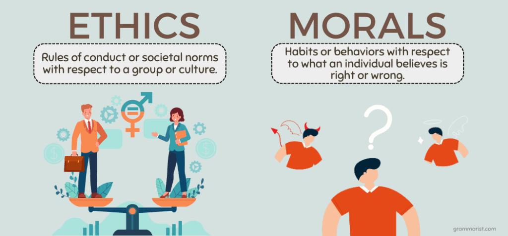
- Because morality is defined as one’s own (individual, family, organisation/institution, society) standard for judging objects as right and wrong, while ethics is about universally established standards of human conduct.
- FEATURES OF MORALITY
- a. Individual-oriented:
- As morality depends upon individual’s upbringing, conscience, and psyche etc.
- b. Contextual and culturally specific:
- Varies from culture to culture, varies across time place and society to society. E.g., Indian values versus Western values. Some cultures approve of polygamy, while others don’t, similarly, in some cultures it is appropriate to hold women & men to different standards, while in other cultures it isn’t.
- c. Dynamic:
- Changes with changes in time, place, and awareness of the same individual. (For example, there is a change in the value system of rural women regarding the leadership roles after the Panchayati Raj Act.
- Ground of Difference
-
| Ground of Difference |
Ethics |
Morality |
| Definition |
A system of universally accepted principles and codes that guide what is right or wrong in human conduct. |
An individual’s personal sense of right and wrong, shaped by upbringing, culture, and experience. |
| Dependent on |
Based on collective reasoning, professional codes, or societal expectations. |
Based on one’s conscience, emotions, and personal beliefs. |
| Consistency |
Relatively uniform and objective across societies and contexts. |
Subjective — varies from person to person and culture to culture. |
| Source of authority |
Institutional or philosophical (e.g., law, profession, governance, religion). |
Personal conviction and social conditioning. |
| Scope |
Broader — governs actions in professional, civic, and collective life. |
Narrower — governs private and individual life. |
| Nature |
Codified and externally imposed standards (e.g., medical ethics, legal ethics). |
Internalized and self-imposed standards of conduct. |
| Root word |
Ethos (Greek) — character or guiding beliefs. |
Moralis (Latin) — customs or traditional conduct. |
| Example |
A journalist following the code of impartial reporting even under pressure. |
A person refusing to lie because it goes against their personal values. |
- RELATION BETWEEN ETHICS AND MORALITY
-
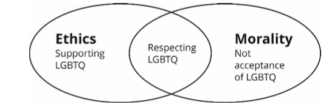
- WHY ONE SHOULD BE MORAL?
- Every human has a deep desire to be good, happy, perform to the best of their ability and achieving summum bonum, morality can help in achieving this summum bonum.
- Human is a rational creature, our morality makes us aware of logical, rational, fundamental principles that can help in achieving the summum bonum.
- To prevent negative emotions like discomfort, remorse, depression, anxiety, dissonance, and social disapproval, boycott, or sanctions.
- ETHICS IS NOT VALUES
- Definition of values
- Oxford
- Values are principles or standards of behavior; one’s judgment of what is important in life.
- Rokeach (Milton Rokeach, Social Psychologist)
- A value is an enduring belief that a specific mode of conduct or end-state of existence is personally or socially preferable to its opposite.
- Values are standards of behaviour that may or may not be standard, which means they can vary from person to person, but in case of ethics, there is a universally established standard of human conduct.
- Ethics is based on values, but every value is not ethical. For example, following respective caste rules may be a value for someone, but it is not ethical. Similarly, with respect to traditional values, most Indian families prefer arranged marriages, but from an ethical standpoint, it is more important to uphold individual autonomy, consent and right to choose one’s life partner.
-
| Ground of difference | Ethics | Values |
|---|
| Nature | Principles of ethics are dynamic and evolve over time based on societal changes, cultural shifts, and advancements in knowledge. | Generally considered more stable and enduring beliefs held by individuals or groups. |
| Cultural variation | Different cultures may have distinct ethical frameworks, reflecting their unique values. | Values, on the other hand, might be deeply ingrained in a specific culture but can still vary widely between individuals within that culture. |
| External standards vs internal beliefs | Ethics is often associated with external standards and norms that govern behaviour within a community, profession, or society. It involves the consideration of what is deemed acceptable or unacceptable by external entities or other people. | Values are more internal and personal. They reflect an individual's internal compass, guiding their beliefs and judgments. While values can contribute to ethical frameworks, ethics extends beyond individual beliefs to encompass shared standards. |
| Objectivity vs. subjectivity | Ethical principles aspire to a degree of objectivity. Ethical theories, such as utilitarianism or deontology, aim to provide universal principles that can guide behaviour, independent of individual values. | Values are inherently subjective and can vary significantly from person to person. What one person values highly, another may not. |
| Prescriptive vs descriptive | Ethics tends to be prescriptive, providing guidance on how individuals or groups should behave in certain situations. It involves the formulation of rules and principles that prescribe the morally right course of action. | Values, while influential in shaping ethical conduct, are more descriptive in nature. They describe what individuals or groups personally hold dear, without necessarily prescribing specific actions or behaviours. |
| Decision making | Ethics is often concerned with practical decision-making and action. It provides a framework for individuals or groups to navigate real-world dilemmas and make choices that align with moral principles. | Values, while influential in shaping ethical decisions, can sometimes remain at a more abstract level. They represent general beliefs and ideals, but it's the application of ethical principles that translates these values into concrete actions. |
-
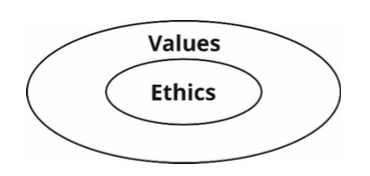
- ETHICS IS NOT SOCIAL NORMS
- Social norms are based on customs and traditions of a particular society, which means they are not universal in nature. For example, some social norms in India are:- respect for elders, joint family system, familial obligation, arranged marriages, dress code for religious places, respect for seniority at workplace etc. However, some social norms can be ethical also, like respecting elders.
- ETHICS IS NOT RELIGION
- Religion is based on faith, where scope of reasoning is limited more over religion is specific to a community, which deprives it of universality. However, ethics is based on reason and universal in nature.
- However, since religion precedes ethics, it has drawn many principles from religion.
-
| Religion | Core values |
|---|
| Christianity | Love, Compassion, Repentance and Forgiveness, Justice, Humility, gratitude and contentment. |
| Jainism | Satya, Ahinsa, Asteya, Aprigraha (non-attachment), right knowledge, right faith and right conduct, tapas (austerity and elf discipline) |
| Buddhism | Sila (virtue and morality), samadhi (meditation), Prajna (enlightenment), anatta (no self), anicca (impermanence), metta (loving-kindness), mudita (unselfish joy), upekkha (equanimity in face of ups and downs)the four noble truths, madhyama marg, eight fold path, Appo deepo bhava. |
| Hinduism | Following Dharma (duty ethics), Karma (law of cause and consequences), moksha(liberation), samsara (cycle of rebirth), ahimsa (non-violence), Vasudhiav kutumkam, Nishkam Karma (duty without seeking rewards), Satyameva jayate. |
| Islam | Equality, Submission, Compassion (Rahma), Justice (Adl) Charity (Zakat), Peace (Salaam), Brotherhood, Akhlaq (good character), Adl(justice), ihsan (attaining excellence). |
-
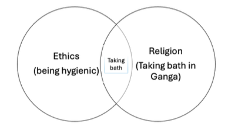
- ETHICS IS NOT LAW
- Because law is specific to a region and country, but ethics is universal.
-
| Law | Ethics |
|---|
| Formal, written document. | Unwritten principles and standards. |
| Established by legislatures. | Presented by moral thinkers, philosophers, religious teachings. |
| Interpreted by courts. | Interpreted by society or social norms. |
| Applicable to everyone. | Personal choice whether to follow. |
| Priority decided by court. | Priority determined by individual. |
| Court makes final decision. | No external decision maker. |
| Enforceable by police and courts | Limited enforcement |
- Relation between Law and Ethics
-
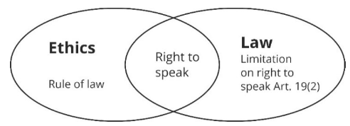
- Generally, both law and ethics are in sync, ethics provide moral sanctity to law and laws provides deterrence in case of violation in case of breach of certain ethical principles. But if there is a conflict between them, then preferences will be different for different persons.
- For example, a civil servant should prefer following law because she/he is duty bound to follow it, it is a categorical command for civil servant to follow the law. Preferring law over ethics will provide him legal protection in case of a mishap.
- On the other hand, for a social reformer or a leader it is preferable to follow ethics over law because it is desirable for a leader to question the issues in existing laws, systems, customs and traditions, for example:
- Gandhiji broke salt law because he considered it unethical.
- Rosa parks broke segregation laws of USA.
- Lech Wałęsa Solidarity movement and breaking of laws restricting workers’ rights and liberties.
- 4. ESSENCE OF ETHICS
- What is meant by essence?
- Essence is the intrinsic quality of something that determines its character. Essence of ethics stands refers to its
- Features
- Significance
- Intrinsic or indispensable properties that characterise ethics.
- FOLLOWING FEATURES CAN DEFINE ESSENCE OF ETHICS
- Defining what is good/bad:
- Ethics helps us in deciding goodness or badness of thoughts, conduct and behaviour.
- Ethics cannot be shaped & sustained in isolation:
- A person is not born with an ethical system or moral setup. An external environment like society and culture, in interaction with the genetic structure, shapes it for the person. A person may be born in captivity, but to know what is ethical, he/she needs to live in a society.
- Man is not only shaped by ethics but also shapes ethics:
- For example, slavery and discrimination were earlier accepted as social norms but not now. It is because of a few great personalities which have brought about the changes.
- Ethics depend upon the context in which they are operating:
- They vary in their meaning and intensity according to time, place and person. For ex, spitting, urinating and littering on roads are considered unethical in Europe but may not in India or Issues like abortion and homosexuality are judged differently in different countries.
- Ethics are subjective in nature:
- These may be affected by an individual’s emotions and perceptions. For ex. An angry person in a fit of rage may behave in a highly unethical manner. It happens during riots. For example, in past, cases of cow vigilantism have occurred, cases of honour killings continue to occur because of conflicts regarding the ethical standards and their conflict among various people.
- Ethics originate from a moral sense of justice prevailing in a society:
- When a child slaps another child. A third child watching finds it unethical because he believes in causing no harm/non-violence and every human is equal and has right to live with dignity
- Ethical standards may transcend narrow stipulations of law:
- Ethical standards go beyond the rule book and code of regulation. Many acts of omission and commission may not violate law as such. Still, they may run counter to ethics. For example, Police not helping victims as incident has happened outside the area of their jurisdiction.
- Ethics is maintained and sustained by a sense of responsibility and not mere accountability to some external agency but also to something within.
- Ethics is prescriptive in nature:
- Ethics preach a certain kind of behaviour to us. It tells us how people should behave. However, ethics are often prescribed without any reason or explanation. This undermines people’s respect and value for ethical behaviour. For instance, traditional values like family values are declining among the youth because their significance and rationale are not explained to them.
- Descriptive discipline:
- They are (existing) standards of behaviour of individuals & community.
- Ethics Scrutinises voluntary human action:
- Ethics deals with voluntary human action. It deals with actions when person acts with free will without coercion. For instance, if a person is made to do something unethical at gunpoint, he/she cannot be called ethical/unethical as he/she did not act on his own.
- Ethics operates at different levels:
- For instance, individual, family, organisational, socio-cultural, political and international levels, but ethical values at any level affect the ethics at other levels.
- Ethics analyses & evaluates various ethical norms, principles, laws, values etc.
- 5. FACTORS AFFECTING ETHICS
- Religion:
- Religious textbooks deal with questions about how an individual should behave and what society should be. Ex. In Jainism, non-veg is unethical, while in Islam, there is no such restriction.
- Traditions & Culture:
- Values vary with cultures. Ex. Western-cultures are individualistic, Indian culture is Altruistic.
- Law & Constitution:
- Law and constitution often incorporate ethical standards to which most citizens subscribe.
- Leadership:
- Leadership of a society or an organisation, or a nation helps to determine conduct of its followers or admirers. For ex. democratic, liberal, secular, and tolerant tradition has been the gift of makers of modern Indian society.
- Philosophies:
- Various philosophers and thinkers from Aristotle to Gandhi have proposed various principles and theories of ethics.
- Geography:
- Geography is a determinant of culture, interconnectivity, access to resources which determines the ethical values. Brahmins of West Bengal eat fish (a non-veg diet) as geography because of proximity to fish producing areas/seas.
- Economic Factors:
- Profiteering is considered unethical in communist societies, while profit is deemed ethical in capitalist societies.
- Organisation:
- Value system of organisation affects ethics of people working in that organisation like ISRO Vs DRDO.
- Time:
- 18th century values vs. 21st century ethics.
- Experience:
- Kalinga War outcome and Ashoka’s changed approach of dhammaghosa.
- Cost-benefit analysis:
- Utilitarianism, Greatest happiness of greatest number principle.
- Inspiration:
- Lessons from life and teachings of great leaders and reformers for example, Gandhi ji for us.
- Power:
- What is right or wrong generally told by socio, economic and political elites.
- Education:
- Our thoughts depend on our knowledge and knowledge is greatly affected by education.
- 6. DETERMINANTS OF ETHICS/ETHICALITY OF AN ACTION BY AN AGENT
- Following are the determinants of ethics of an action by an agent.
- i. Deliberate human action:
- Knowledge, free will/option Voluntariness/willingness.
- ii. Purpose:
- It can be personal, social or organizational.
- iii. Objective:
- Can be positive , negative or neutral and nature of human action.
- iv. Circumstances:
- It can be demanding or normal.
- v. Consequence/end:
- Basis of teleology.
- vi. Means:
- Basis of deontology.
- 7. RELATION BETWEEN VARIOUS DETERMINANTS IN REAL LIFE
- i. Overlap:
- Two or more determinants may operate at same time. Ex. the duty to follow the procedural guidelines while implementing a government scheme may overlap with the compassion within a civil servant.
- ii. Vary:
- Theft of food for saving a dying person due to hunger vs theft under PDS by an official.
- iii. Contradict:
- Saving the life of King. (Purpose), by sacrificing the life of soldiers.
- 8. CONSEQUENCES OF ETHICS
-
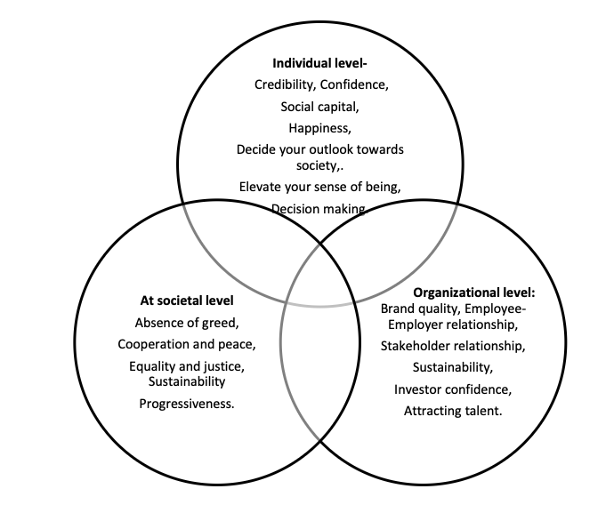
- Prescribe standards of right and wrong:
- As a discipline, ethics identifies what is good or evil, just or unjust, fair or unfair practice, or what our moral duty is. It prescribes well-established standards that a person should follow concerning rights, obligations, fairness, and benefits to society. These standards put a reasonable obligation to stop unethical activities or crimes such as corruption, stealing, assault, rape, murder, fraud and so on.
- Improves thinking, perspective & judgements:
- Ethics provides us with a moral compass, a framework that we can use to find our way through difficult issues. It helps a person to critically evaluate his/her actions, choices and decisions. It assists a person in knowing what he/she is and what is best for him/her. Thus, helping a person to decide what he/she should do to attain the best.
- Determines our actions or inaction:
- In the absence of ethics, human actions would be rendered random and aimless. Ethical standards help us to organise our goals and actions to accomplish a good and virtuous life and larger good for society.
- Ethics is the basis of a healthy and peaceful society:
- Every institution designed for human good has some rules and regulations based on moral principles. Being ethical helps a person to admire and follow the rules. Ethics/morality provides a common point of view. A common point of view among people leads to an agreement among them. This way, ethics provides stability in society and other institutions.
- Ethics helps in making society better:
- Teaches us to treat everyone equally and respect each other’s rights; without ethical conduct, society would became poor and miserable place as noted by Hobbes.
- Solving moral dilemmas:
- Many moral (social, rights or gender based) issues like abortion and euthanasia create ethical dilemmas. Ethics offers us rules and principles that enable us to take a clearer view of moral problems.
- Aids in exercising discretion:
- Provides a set of principles and helps to make clear choices in particular cases where neither social norms nor law can provide answer or solution. It allows us to work on skills such as exercising discretion, so when we are faced with real situations that impact others, we can take a morally sound decision.
- Guide to both private and public life:
- Ethics is integral to both private and public life. In personal sphere, ethics guide our relations with our fellow beings, and in professional life or public administration, ethics focuses on how one should act and reflect to act responsibly. For instance, adherence to ethical principles in business leads to rejecting route that would lead to short-term profit over larger corporate social responsibility. Meanwhile, in political and social life, ethics decides how human life and institution must be organized to be moral.
- Ethics shows way to self-realisation:
- Every individual desires to be good. Being ethical or moral helps a person to attain what is best for him. It deepens reflection of ultimate question of life and its purpose. Thus, ethics is fundamental to a satisfactory human life.
- 9. BRANCHES/DIMENSIONS OF ETHICS
-
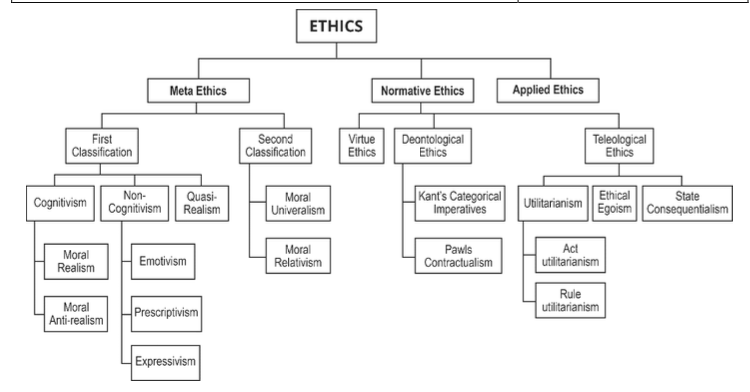
- 1. META-ETHICS
- Overview:
- Deals with the fundamental nature, meaning, and justification of moral concepts.
- Asks meta-questions such as:
- “What is the nature of morality?”
- “What do we mean by ‘good’, ‘bad’, ‘right’, or ‘wrong’?”
- “Are moral values objective or subjective?”
- “Can moral statements be true or false?”
- It does not prescribe what is right or wrong (as normative ethics does), but analyses what *right* and *wrong* mean.
- The word “Meta” means “about the thing itself”, hence meta-ethics is *ethics about ethics*.
- Example:
- “What is meant by a wrong action?” or “When we say ‘lying is bad’, are we stating a fact or expressing emotion?”
- First classification:
- a. Cognitivism:
- Refers to the intellectual or rational component of meta-ethics. It asserts that moral judgments are cognitive in nature — that is, they make declarative statements capable of being true or false.
- It views moral language as fact-stating rather than emotion-expressing. Hence, ethical propositions are seen as expressing beliefs about moral reality.
- Example:
- When someone says, “Murder is wrong,” a cognitivist interprets this as a statement asserting a fact about the moral status of murder — a proposition that can be objectively true or false depending on moral facts that exist in the world.
- In contrast, a non-cognitivist would argue that this statement merely expresses a sentiment (“Boo to murder!”) without any truth value or factual content.
- Cognitivism thus connects ethics to reason and moral knowledge — assuming that moral truths can, at least in principle, be known through rational inquiry.
- Further divided into two:
- i. Moral Realism:
- A strong branch of cognitivism which holds that moral statements are objective truths — independent of human opinion, emotion, or culture.
- It posits that there exist moral facts or properties (such as justice, goodness, cruelty) that make moral statements true or false.
- For moral realists, statements like “It is wrong to intentionally harm an innocent person” are true in the same sense as “Water boils at 100°C” — i.e., they correspond to a moral reality.
- This school asserts that moral truths are discovered, not constructed, and thus hold universal validity.
- Philosophical implication:
- Morality is an objective part of the universe, and humans can attain moral knowledge through reason or intuition.
- Example:
- It is objectively wrong to intentionally harm innocent people.
- It is objectively wrong to kill a defenceless person.
- ii. Moral Anti-Realism:
- Opposes the realist claim by rejecting the existence of objective moral facts.
- Believes that moral values exist, but they are subjective — dependent on personal, cultural, or societal perspectives rather than universal truths.
- According to this view, morality is a human construct, shaped by context, emotion, and convention.
- A moral anti-realist might say that while killing is generally considered wrong, this judgment arises from societal consensus, not from any objective moral law.
- Hence, moral statements express attitudes or frameworks of interpretation rather than factual truths about reality.
- b. Non-Cognitivism:
- Represents the emotional or attitudinal dimension of meta-ethics.
- It denies that moral judgments are factual or truth-bearing; instead, they are expressions of feeling, emotion, or prescription.
- For non-cognitivists, moral statements like “Stealing is wrong” do not describe any objective moral fact but rather convey the speaker’s personal reaction or command.
- Therefore, categorising moral judgments as true or false is meaningless, since they are not propositions but expressions of human attitudes.
- Further divided into three subparts:
- i. Emotivism:
- Argues that moral judgments are expressions of emotional approval or disapproval rather than factual statements.
- According to A.J. Ayer and Charles Stevenson, moral language serves to influence attitudes and actions, not to describe moral facts.
- Example:
- Saying “Charity is good” is equivalent to expressing positive emotion (“Hurrah for charity!”).
- ii. Prescriptivism:
- Proposed by R.M. Hare, it suggests that moral statements function as prescriptions or imperatives.
- They are neither factual claims nor mere expressions of emotion, but rather normative commands guiding action.
- Example:
- Saying “You ought not to lie” works as a universal prescription — an appeal for others to follow the same moral rule.
- iii. Expressivism:
- A refined version of emotivism which claims that moral statements express the speaker’s attitudes or desires rather than report facts.
- It maintains that when someone says “Stealing is wrong,” they express disapproval and commitment to non-stealing, rather than assert a moral fact.
- c. Quasi-Realism:
- A hybrid position that blends elements of both cognitivism and non-cognitivism.
- Proposed by Simon Blackburn, it argues that while moral statements do not refer to objective facts, we can still talk and reason about them as if they were true or false.
- It preserves the practical function of moral discourse (reasoning, consistency, moral debate) without committing to objective moral facts.
- Hence, it allows ethical claims to be treated as “truth-apt” (cognitivist element) while acknowledging their emotional or socially constructed basis (non-cognitivist element).
- Second classification:
- a. Moral Universalism:
- Holds that certain moral principles or values apply universally to all human beings, irrespective of time, place, or culture.
- Example:
- The idea that killing innocent people is wrong is a moral truth valid across all societies.
- b. Moral Relativism:
- Argues that moral principles are context-dependent and vary between cultures, societies, or individuals.
- There are no absolute moral truths — morality is relative to societal norms or personal perspectives.
- Example:
- Practices considered moral in one culture (like polygamy or animal sacrifice) may be seen as immoral in another.
- c. Moral Nihilism:
- Takes the most radical stance by denying the existence of any moral facts, values, or truths whatsoever.
- According to moral nihilists, morality is an illusion — there is nothing inherently right or wrong.
- Example:
- A moral nihilist would argue that “murder is wrong” is neither true nor false because “wrongness” itself doesn’t exist in reality.
- In essence, it posits that ethical discourse is ultimately meaningless.
- 2. NORMATIVE ETHICS
- Overview:
- Deals with the exploration of the *highest moral standards or principles* that guide human conduct.
- It focuses on establishing frameworks for determining what is morally right or wrong, good or bad.
- Seeks to answer questions like:
- “What makes an action right?”
- “What duties do we have toward others?”
- “What kind of person should I be?”
- It examines the *criteria of moral evaluation* — i.e., whether morality lies in the act itself, the outcome, or the agent’s character.
- Thus, it helps define how one *ought to act* rather than merely describing how people behave (which is Descriptive Ethics).
- Example:
- “Is it wrong to kill a person?” or “Should one always tell the truth, even if it causes harm?”
- It can be divided into three main schools:
- a. Virtue Ethics:
- Focuses on the moral character or virtues of the person performing the act, rather than the act itself or its outcomes.
- The goal is to cultivate virtues such as honesty, courage, and compassion.
- Virtue leads to *eudaimonia* (human flourishing or excellence).
- Classical thinker:
- Aristotle.
- Example:
- A virtuous person tells the truth not because of rule or result, but because honesty is part of his character.
- b. Teleological Ethics (Consequentialism):
- Focuses on the outcome or consequences of an action.
- Moral worth of an act is judged by its results — the end justifies the means.
- The right act is the one that produces the best overall consequences.
- Variants of Teleology:
- i. Ethical Egoism:
- A person should act to maximize his own self-interest.
- Concern for others is secondary or instrumental.
- Example:
- A businessman donates to charity only to gain reputation.
- ii. Utilitarianism:
- Founded by Jeremy Bentham and developed by John Stuart Mill.
- Central principle:
- “Greatest good for the greatest number.”
- Emphasizes collective happiness and reduction of suffering.
- Subcategories:
- a. Act Utilitarianism:
- Concept:
- Proposed mainly by Jeremy Bentham, Act Utilitarianism focuses on the morality of each individual action by evaluating its immediate consequences.
- The rightness or wrongness of an act is judged solely by the amount of happiness or pleasure it produces in that specific instance.
- There are no fixed moral rules — each situation is assessed independently.
- Key Idea:
- "An action is right if it produces the greatest happiness for the greatest number *in that situation*."
- Strength:
- Flexible and sensitive to context; adapts to immediate moral challenges.
- Limitation:
- Can justify morally questionable acts if they produce short-term happiness.
- Lacks consistency, as different actions may be right in different situations.
- Example:
- Breaking a rule to save a life (e.g., lying to protect someone from harm) — morally right if it leads to greater immediate happiness or welfare.
- b. Rule Utilitarianism:
- Concept:
- Developed by John Stuart Mill, Rule Utilitarianism focuses not on individual acts, but on adopting general rules that maximize happiness in the long run.
- Actions are right if they conform to rules that, when generally followed, produce the greatest good for the greatest number.
- Key Idea:
- “Follow moral rules that promote long-term well-being, even if breaking them might bring short-term benefit.”
- Strength:
- Brings stability, predictability, and fairness to moral decision-making.
- Avoids the moral chaos that pure Act Utilitarianism can create.
- Limitation:
- May overlook exceptional situations where breaking the rule could lead to better outcomes.
- Example:
- Following traffic laws even if breaking them could save time in a single instance — general obedience ensures overall safety and happiness in society.
- c. State Consequentialism:
- Concept:
- Originates from ancient Chinese philosophy, particularly Mozi’s doctrine of Mohism.
- Differs from Western utilitarianism by focusing on collective welfare rather than individual pleasure.
- The morality of state actions is judged by how well they enhance the overall material prosperity, order, and population welfare.
- Key Idea:
- “The moral legitimacy of a state action lies in its contribution to the common good — wealth, order, and welfare of the people.”
- Strength:
- Prioritizes public order, social harmony, and pragmatic governance over personal or emotional considerations.
- Limitation:
- Risks ignoring individual rights if state welfare is seen as the supreme good.
- Example:
- Implementing strict laws to maintain law and order or redistributing wealth for social stability — morally right if it leads to overall welfare of society.
- c. Deontological Ethics (Duty-based Ethics):
- Focuses on the inherent moral duty or intention behind the act rather than its consequences.
- Moral worth of an act depends on whether it is done from a sense of duty.
- Immanuel Kant’s Categorical Imperative:
- Acts should be guided by universal moral laws derived from pure reason.
- These moral laws are unconditional (“categorical”) and binding on all rational beings.
- Based on two principles:
- i. Principle of Universality:
- Act only according to that maxim which you can will to be a universal law.
- ii. Principle of Humanity:
- Treat every person as an end in themselves, not merely as a means to achieve another goal.
- John Rawls’ Contractualism:
- Morality should be decided by a hypothetical social contract agreed upon by rational and unbiased individuals.
- Such reasoning occurs behind the *veil of ignorance* — where people don’t know their own status, class, or advantages.
- Ensures fairness and justice as the foundation of moral standards.
- 3. DESCRIPTIVE ETHICS (Comparative Ethics)
- Overview:
- Concerned with the *empirical study of people's moral beliefs, values, and practices*.
- Descriptive Ethics does not judge actions as right or wrong; instead, it *describes and analyses* what people or societies *actually believe* about morality.
- It seeks to understand *how moral values vary* across cultures, religions, historical periods, or social contexts.
- Often used by sociologists, anthropologists, and psychologists to *observe ethical behavior* and explain *why* people hold certain moral views.
- Helps reveal *patterns of moral reasoning*, moral evolution, and the *sociocultural foundations* of ethical norms.
- It provides the factual base upon which Normative Ethics and Applied Ethics can build moral theories or policies.
- Example:
- “How many people believe that euthanasia is morally acceptable?”
- “How do different cultures define justice or fairness?”
- “What do various societies consider to be the highest moral duty?”
- Studies actual moral beliefs, values, and practices of individuals or societies.
- It does not prescribe what *ought* to be done, but describes *what is* believed to be right or wrong.
- It relies on empirical observation, surveys, and anthropological studies.
- Objective:
- To understand how people make moral decisions in real life.
- Example:
- Studying differences in moral views between cultures — such as attitudes towards euthanasia, polygamy, or capital punishment.
- Relationship with Other Branches:
- Meta-Ethics:
- Examines the meaning and nature of ethical terms and moral reasoning.
- Question:
- “What does ‘right’ even mean?”
- Normative Ethics:
- Prescribes how people *ought* to act.
- Question:
- “How should people act?”
- Descriptive Ethics:
- Observes what people *actually* think is right.
- Question:
- “What do people believe is right?”
- 4. APPLIED ETHICS
- Overview:
- Considered the most practical and action-oriented branch of ethics, as it applies ethical principles and theories to real-world issues and dilemmas.
- Examines how moral reasoning should guide decision-making in specific fields such as medicine, law, environment, business, technology, and governance.
- Seeks to resolve moral conflicts where multiple ethical values may clash — for example, between individual rights and collective welfare.
- Involves *weighing competing moral considerations* (like autonomy vs. beneficence, justice vs. efficiency, etc.) to arrive at ethically sound judgments.
- Example:
- “Is it ethical to allow euthanasia?”
- “Should companies prioritize profit over environmental sustainability?”
- “Is mass surveillance justified in the interest of national security?”
- Deals with how we take moral knowledge and put it into practice? It is an applied aspect of moral knowledge, hence deals with the application of moral theories in real life. It covers dimensions like bioethics, business ethics, environmental ethics, sports ethics, media ethics.
- ENVIRONMENTAL ETHICS
- Environmental ethics is a field of study that explores the moral connections, values, and principles of relationship between humans and the environment, including its nonhuman components. Rabindranath Tagore had emphasized that true education not only imparts information but also aligns our lives harmoniously with all of existence.
- Fundamentally, environmental ethics is built on the principle that there exists a moral bond between human beings and the natural environment. Humans are an integral part of this environment, coexisting with other living beings. Despite this interconnectedness, discussions on the philosophical principles guiding our lives often neglect the inclusion of plants and animals. Acknowledging their inseparable connection with nature, our guiding principles and ethical values should encompass these entities, recognizing their right to coexist with humanity. The evolving concept of environmental ethics underscores the inherent right of all life forms on Earth to exist. When we harm nature, we unjustly and unethically deprive these life forms of their right to life.
- Our moral responsibility to future generations and the principle of intergenerational equity compel us to pass on the Earth in a condition similar to what we inherited. This ensures the well-being and quality of life for our descendants, preventing them from facing crises they did not contribute to (Principle of Sustainability and Intergenerational Equity).
- The adverse impacts of environmental degradation and climate change disproportionately affect the poor and vulnerable, who are often not responsible for these issues. This situation contradicts the principle of the polluter pays, highlighting the need for environmental ethics to address these injustices.
- Aldo Leopold formulated ecological restoration focusing on Land ethic in the book “A Sand County Almanac, 1949”, defined a new link between nature and people and set a stage for modern conservation movement.
- “For embracing this ethic ecologically literate citizens are required who can also solve global environmental challenges. “This Land ethic simply enlarges boundaries of community to include soils, waters, plants, and animals, or collectively: the land.”
- Wangari Maathai the renowned Kenyan environmentalist and Nobel Peace Prize laureate, made significant contributions to the field of environmental ethics through her life's work.
- Maathai's central principles is her emphasis on the intrinsic value of nature. She believed that nature possesses inherent worth beyond its utility to humans and should be respected and preserved for its own sake. This perspective resonates with the core values of environmental ethics.
- Maathai's Green Belt Movement reflects her commitment to the interconnectedness of environmental and social justice. The movement focused on tree planting, afforestation, and community empowerment, addressing both environmental degradation and the socio-economic well-being of communities.
- Case Studies
- Exxon Valdez oil spill:
- Showed lack of corporate social responsibility and oversight in risky industries, damaging ecosystems. It led to regulations improving disaster response plans and double hull tanker requirements.
- Bhopal disaster:
- Poor safety standards and negligence at a chemical plant caused a gas leak that killed thousands in Bhopal, India. Illustrated need for ethical practices and accountability in hazardous operations, especially in developing countries.
- Deforestation of Amazon:
- Forest clearing for logging, mining, ranching accelerates loss of biodiversity and harms indigenous tribes. Governments must balance economic interests with protecting vital ecosystems and human rights. Global cooperation needed.
- Philosophies
- Deep Ecology (Arne Næss):
- Challenges belief that nature exists for human use and rejects anthropocentrism. Sees the whole ecosphere as a seamless web of interdependencies where humans and nature are equals. Promotes biodiversity and sustainability through radical social/political change.
- Land Ethic (Leopold):
- Expands our ethical consideration to include natural landscape and all its components ("the land"). Humans are members of the land community, not conquerors of it. Health of the land and people are inseparable. We must make choices that benefit and respect the "integrity, stability, and beauty" of biotic community.
- Animal Rights (Singer):
- Sentient animals deserve equal consideration of interests. They can suffer and so have rights to humane treatment and to not be property. We should adopt a plant-based diet and oppose any cruelty to animals. "The question is not, 'Can they reason?' nor, 'Can they talk?' but 'Can they suffer?'"
- Ecofeminism:
- Links ecological degradation with women’s oppression, arguing both arise from patriarchal and exploitative systems.
- Environmental Pluralism:
- Accepts multiple ethical frameworks (anthropocentric, biocentric, ecocentric) as contextually valid for solving diverse environmental issues.
- Environmental Pragmatism:
- Focuses on practical, action-oriented environmental solutions rather than theoretical moral debates.
- Environmental Humanism:
- Emphasizes human moral responsibility to protect nature as part of preserving human dignity and culture.
- Social Ecology:
- Connects environmental destruction with social hierarchies, advocating ecological harmony through social justice and decentralization.
- ENVIRONMENTAL DEGRADATION VS ECONOMIC DEVELOPMENT (UTILITARIANISM CONCEPT)
- Negative effects of climate change will fall disproportionately on poor in current generations, and on future generations who are less responsible for greenhouse gas emissions as they accrue.
- For utilitarians, distribution of goods has only instrumental value. We should choose that distribution of goods that maximises total amount of well-being.
- It is from this perspective that problems of justice arise. For Ex., displacing a population to build a dam might cause a great deal of misery for worst worst off, but if it produces a marginal gain for a larger population who are already well off, then, by the utilitarian calculation, the policy is justified provided the population is great enough.
- There are a variety of different accounts of justice that might be offered as alternatives to view that we should distribute goods to maximise total welfare.
- We should give priority to the worst off.
- We have a duty to make sure all reach a minimal level of welfare.
- Justice demands equality in distribution of welfare or of goods required for welfare.
- MEDIA ETHICS
- Media ethics concerns moral issues in journalism, news media, film, television and entertainment. It examines how to apply ethical principles like honesty, accuracy, impartiality, fairness, harm avoidance, and privacy in these domains. Key issues include:
- Truth and accuracy:
- Media has a duty to report news truthfully and factually. Inaccurate or false reporting violates public trust and can cause harm. Anonymous or unverified sources should be avoided. Opinions/analysis should be backed by evidence and clearly distinguished from news.
- Impartiality and fairness:
- Media should present issues and viewpoints without bias or distortion. Represent multiple sides fairly when covering controversial topics. Avoid conflicts of interest and preferential treatment. Criticism of public figures should be proportional and relevant to their role.
- Privacy vs public interest:
- Media must balance an individual's reasonable expectation of privacy with public's right to information that significantly impacts them. Public figures have a lower expectation of privacy, but media should avoid excessively prying into people's private lives when it's not clearly relevant.
- Harm and offense:
- Media should avoid inciting discrimination, violence or illegal activities. While free speech is crucial, it needs to be balanced with harms of hate speech and radicalization. Graphic or offensive content requires warnings to allow audience choice. Reporting on threats could encourage copycats.
- Consent and deception:
- Media should not report on individuals or record/photograph them without consent. Undercover investigation and deception may be justified to expose wrongdoing or dangers, but other reporting should be transparent. Stakeholders should be given a chance to respond.
- Commercial pressure vs integrity:
- Commercial and business interests of media companies should not undermine journalistic ethics. "Clickbait" and sensationalism distort reporting of serious issues. While profitability matters, it should not be the primary goal. Maintaining independence and integrity is key.
- ETHICS OF JOURNALISM
- a. Accuracy and fact-based communications
- Journalists cannot always guarantee ‘truth’ but getting facts right is the cardinal principle of journalism.
- Journalists should always strive for accuracy, give all relevant facts and ensure that they have been checked.
- b. Independence
- Journalists must be independent voices; they should not act, formally or informally, on behalf of special interests whether political, corporate or cultural.
- They should declare to their editors – or directly to audience – any relevant information about political affiliations, financial arrangements or other personal connections that might constitute a conflict of interest.
- c. Fairness and Impartiality
- Most stories have at least two sides. While there is no obligation to present every side in every piece, stories produced by journalists should strive for balance and provide context.
- Objectivity is not always possible and may not always be desirable (in the face, for example, of clear and undeniable brutality or inhumanity), but impartial reporting builds trust and confidence.
- d. Humanity
- Journalists should do no harm. They should show sensitivity and care in their work recognising that what they publish, or broadcast may be hurtful.
- It is not possible to report freely and in the public interest without occasionally causing hurt and offence, but journalists should always be aware of impact of words and images on lives of others. This is particularly important when reporting on minorities, children, the victims of violence and vulnerable people.
- e. Accountability and Transparency
- A key principle of responsible journalism is the ability to be accountable.
- Journalists should always be open and transparent in their work except in the most extraordinary of circumstances. When they make mistakes, they must correct them, and expressions of regret must be sincere. They listen to their audience and provide remedies to those dealt with unfairly.
- Philosophers like Peter Singer argue media ethics requires impartial reasoning and reflection on consequences - considering harms and benefits of reporting on vulnerable groups, privacy, free speech, balancing multiple principles. Issues often depend heavily on context, so rules provide general guidance but judgment is required in each case.
- Code of Ethics and Broadcasting Standards laid down byNational Board of Accreditation (NBA) for violation of which a complaint may be made, include the following principles:
- Ensure impartiality and objectivity in reporting.
- Ensure neutrality.
- Ensure that when reporting on crime, that crime and violence are not glorified.
- Ensure utmost discretion while reporting on violence and a crime against women and children.
- Abhor sex and nudity.
- Ensure privacy.
- Ensure that national security is not endangered.
- Refraining from advocating or encouraging superstition and occultism.
- Ensure responsible sting operations.
- TRP AND MEDIA ETHICS
- Television rating point:
- TRP stands for Television Rating Point. It tells us which channel and programs are viewed most or indicates popularity of a TV channel or a program. It shows how many times people are watching a channel or a particular program.
- “Duty of journalists is, to tell the truth. Journalism means you go back to facts, you look at documents, you discover what record is, you report it that way. “– Noam Chomsky
- “Freedom of the press is a precious privilege that no country can forgo” - Gandhi
- Ethical Issues related to TRP
- Race for TRP is sensationalizing news reporting. Sensationalism aims at maximising viewership and earning profit. This makes news reporting vulnerable to manipulation.
- Objectivity in presenting the news is extremely important to fulfil ‘right to information’ of people. People have right to get information in the authentic, unbiased form. It is important to maintain ‘integrity of the process’ of news collection and broadcast.
- Government’s advertising expenditure depends on TRP system, and public spending should not be based on flawed data.
- TRP system compromise impartial news selection. Issues of vulnerable, poor and marginal section of our society gets side lined.
- Race for TRP also forces news channel to show unscientific, unverified information that compromise on larger role of media to develop value laden society,
- Targeting TRP in journalism is destroying professional journalism and citizen-centric journalism. Reporting is being displaced by Agenda Setting Theory. Noise is replacing information dissemination. This reminds us of what Noam Chomsky one had once asked, “How it is we have so much information but know so little?”
- SOCIAL MEDIA ETHICS
- Online social networking is use of dedicated websites or application to interact with other people on social networking sites having same interests or same circles, groups or communities.
- With the rise of Online Social Networking, ethical dilemmas are growing in number including violation of privacy, misrepresentation, bullying, etc.
- Ethical dilemmas faced when different people use social networks are given below:
- a. Invasion of privacy
- If actions that break the law or terms of privacy of any user of social network harms that individuals personal or professional credibility, that action should be considered unethical. Invasion of privacy would include any non-permissive approach taken to get any kind of personal or any other kind of information about an individual which can harm him or affect him in any sense.
- While discussing social media ethics, behavioural targeting is a questionable area to consider. Advertisers tracking our shopping behaviours and click through patterns to use that data in retargeting campaigns. Positive point is that viewers may appreciate relevance of material being advertised to them, but this is a kind of invasion of privacy.
- b. Spamming
- Over-publicizing unasked promotional messages is also considered as an unethical act based on how this is being done. In spamming users are usually bombarded with information which does not interest them or even if it does, it is too extensive to be swallowed. In this situation, the user’s relative information which he may be needing gets under the pile and may get ignored because of that useless pile of spamming which is obviously unethical from user’s perspective.
- c. Public Bashing
- Once a person post something on social media, it can go viral without asking for permission which then can’t only affect reputation but also the person or company you were disparaging about, so much. This kind of cases can also raise a risk for legal lawsuits.
- d. Improper Anonymity and Distorted Endorsements
- If one represents himself with wrong affiliations, credentials or expertise, it is unethical to become anonymous but showing yourself to be someone different than you are. There are people who provide companies with their anonymous feedbacks which are not true, and it has caused a lot of damage to companies by the stories of consumers of their products by fake stories. Hiring people to comment your favourable or fabricated stories about your company or your products are also considered unethical. Some employees are also found guilty of exaggerating competitive deficiencies.
- e. Data is public or private
- One of the biggest areas of concern with social media data is the extent to whether such data should be considered public or private data. Key to this argument is the standpoint that social media users have all agreed to a set of terms and conditions for each social media platform that they use, and within these terms and conditions there are often contained clauses on how one’s data may be accessed by third parties, including researchers. Surely, if users have agreed to these terms, the data can be considered in the public domain.
- There are also specialist organizations that provide social media employment screening services. This raises ethical challenges for employers around employees‟ right to privacy and fairness. Is it ethical or fair to judge an individual’s ability to fulfil their employee responsibilities based on information about their personal lives, gained from their social media profile? In some cases, the information may relate to past activities in a job candidate’s personal life.
- SOCIAL MEDIA AND ETHICAL DILEMMA
- a. Utilitarian perspective:
- Facebook and other sites have been the scene of cyberbullying and online predation. But the same technology allows people to connect with others they might never have met and form meaningful relationships. Hence there is ethical dilemma in its usage.
- b. Fairness perspective:
- Some people believe social networking sites offer the ultimate test in egalitarianism. When we interact with others online, we have no real way of knowing whether they are white or black, male or female, fat or thin, young or old.
- c. Virtue perspective:
- Many interpersonal virtues we value evolved in the context of face-to-face communication. Honesty, openness, and patience, for example, are used in negotiations we must manage when we meet people in person. What impact will digital media have on these virtues? Ex. What would honesty mean in the context of a world where people are represented by avatars? Will other virtues emerge as more important in social networking, where we can be constantly connected to a large reservoir of others and can shut off communications easily when we are bored or encounter difficulties?
- CONCLUSION
- Freedom of opinion and expression is guaranteed by the constitution and legislation, but there is often an expression of excessive freedom. Proper ethical standards for social media research need to be designed but they should be dynamic too technologies and the way that technologies are used are constantly changing.
- MEDICAL ETHICS
- Medical ethics is the applied branch of ethics which describes the moral principles by which a medical practitioners must conduct themselves.
- The four pillars of medical ethics are:
- Beneficence:
- Refers to the ethical obligation of healthcare professionals to act in the best interest of the patient, promoting their well-being and taking positive steps to prevent or remove harm.
- Example:
- Recommending a treatment that improves the patient’s quality of life, even if it requires extra effort or resources.
- Non-maleficence:
- Derived from the Latin maxim “Primum non nocere” (First, do no harm). It means that medical practitioners must avoid causing unnecessary harm or suffering to patients while providing care.
- Example:
- Avoiding a high-risk surgery when safer alternatives are available.
- Autonomy:
- Emphasizes the patient’s right to make informed decisions about their own treatment and medical care. It requires doctors to respect the individual’s values, beliefs, and consent.
- Example:
- Allowing a patient to refuse a treatment after being fully informed of the consequences.
- Justice:
- Concerns fairness and equity in the distribution of healthcare resources, access to treatment, and medical decision-making. Every patient should be treated impartially, regardless of their background or socioeconomic status.
- Example:
- Ensuring equal access to life-saving medicines for all patients, not only those who can afford them.
- Ethical issues involved in the medical field
- Issue of medical negligence.
- Collusive termination of pregnancy.
- Medical fraud for monetary benefits. (Vadodara hospital shows kidney patients as HIV positive in medical reports, organ trade, higher bills for minor diseases.)
- To deal with issue of effective enforcement of Code of medical ethics provides for certain provisions which are discussed further.
- Character of Physician:
- A physician shall uphold the dignity and honour of his profession. The prime objective of the medical profession is to render service to humanity. A physician should be an upright man, instructed in the art of healing. He shall keep himself pure in character and be diligent in caring for the sick; he should be modest, sober, patient, prompt in discharging his duty without anxiety; conducting himself with propriety in his profession and all the actions of his life.
- Provisions of Code of medical ethics by Indian Medical Association (IMA):
- Maintaining good medical practice:
- Physicians should try continuously to improve their medical knowledge and skills and should make available to their patients and colleagues the benefits of their professional attainments. The physician should practice methods of healing founded on a scientific basis and should not associate professionally with anyone who violates this principle.
- Maintenance of medical records:
- Every physician shall maintain the medical records about his/her indoor patients for a period of 3 years from the date of commencement of treatment.
- Use of Generic names of drugs:
- Every physician should, as far as possible, prescribe drugs with generic names and he/she shall ensure that there is a rational prescription and use of drugs.
- Exposure of Unethical Conduct:
- A Physician should expose, without fear or favour, incompetent or corrupt, dishonest or unethical conduct on the part of members of the profession.
- Obligations to the Sick:
- Though a physician is not bound to treat each person asking for his services. A physician advising a patient to seek the service of another physician is acceptable, however, in case of an emergency, a physician must treat the patient. No physician shall arbitrarily refuse treatment to a patient.
- Prognosis:
- The physician should neither exaggerate nor minimize the gravity of a patient’s condition.
- Unnecessary consultations should be avoided:
- Consultation should be for the Patient’s Benefit, Punctuality should be there in Consultation. In consultations, no insincerity, rivalry or envy should be indulged. The Consultant shall not criticize the referring physician.
- PHYSICIAN-ASSISTED SUICIDE AND EUTHANASIA:
- The Hippocratic Oath states: 'I will give no deadly medicine to anyone if asked, nor suggest any such counsel'. This has been ordained to maintain the sanctity and dignity of life so that doctors' professional capabilities are not abused. Nevertheless, during a terminal illness and in the care of patients with an irreversible life-threatening disease, a time comes when it is appropriate for the doctor to stop further attempts to prolong the misery and allow death with dignity.
- STRIKES BY PHYSICIANS:
- Even though medical services are essential; it is not uncommon for doctors to go on strikes. It is unethical for physicians to withhold medical services through strikes.
- REBATES, COMMISSIONS AND COURTESIES:
- It is undesirable and unethical for physicians to give and solicit any gift, bonus or 'kickbacks' for referring patients for consultation and investigations. It is also unethical for physicians to receive courtesies, favours and gifts from manufacturers or suppliers of equipment and pharmaceuticals.
- RESEARCH AND PUBLICATIONS:
- Fraud in research either by plagiarizing or quantum jugglery should be condemned and those indulging in such acts should be punishable on grounds of professional misconduct. The stipulated code of conduct and format should be followed for scientific publications.
- PROFESSIONAL CERTIFICATES:
- Physicians are expected to issue several medical certificates-birth, death, vaccination, sick leave, disability, etc. It is common to see false medical certificates issued by physicians for monetary gain or due to political bureaucratic pressures.
- Running an open shop (Dispensing of Drugs and Appliances by Physicians):
- A physician should not run an open shop for the sale of medicine for dispensing prescriptions prescribed by doctors other than himself or for the sale of medical or surgical appliances.
- Human Rights:
- The physician shall not aid or abet torture, nor shall he be a party to either infliction of mental or physical trauma or concealment of torture inflicted by some other person or agency in clear violation of human rights.
- Adultery or Improper Conduct:
- Abuse of professional position by committing adultery or improper conduct with a patient or by maintaining an improper association with a patient will render a Physician liable for disciplinary action as provided under the Indian Medical Council Act, 1956 or the concerned State Medical Council Act.
- Sex Determination Tests:
- On no account, sex determination test shall be undertaken with the intent to terminate the life of a female foetus developing in her mother’s womb, unless there are other absolute indications for termination of pregnancy as specified in the Medical Termination of Pregnancy Act, 1971.
- Non-disclosure of medical information of the patient:
- The registered medical practitioner shall not disclose the secrets of a patient that have been learnt in the exercise of his/her profession except–
- In a court of law under orders of the Presiding Judge.
- In circumstances where there is a serious and identified risk to a specific person and/or community; and
- Notifiable diseases. In case of communicable/notifiable diseases, concerned public health authorities should be informed immediately.
- A prohibition from denying the duty:
- The registered medical practitioner shall not refuse on religious grounds alone to give assistance in or conduct of sterility, birth control, circumcision and medical termination of Pregnancy when there is medical indication unless the medical practitioner feels /herself incompetent to do so.
- A Physician shall not use touts or agents for procuring patients.
- A Physician shall not claim to be a specialist unless he has a special qualification in that branch.
- No act of invitro fertilization or artificial insemination shall be undertaken without the informed consent of the female patient and her spouse as well as the donor.
- BIOTECHNOLOGY AND ETHICS
- Biotechnology, the application of biological knowledge for practical purposes, raises significant ethical concerns as scientific abilities outpace human’s wisdom.
- Key issues include:
- Human enhancement:
- Technologies like genetic editing, synthetic biology and brain-computer interfaces allow "enhancement" of traits and abilities. But "playing God" by altering human nature could have long term consequences impossible to predict. Access likely unequal, creating more advantages for the privileged. Regulation and guidelines needed.
- Cloning:
- Reproductive cloning to produce human clones raises concerns about the wellbeing of clones, dignity/individuality, and propriety of controlling human life. Most nations ban it. Therapeutic cloning using stem cells continues, raising debate around use of human embryos for research that could save lives. Complex issue with ethical arguments on multiple sides.
- GMOs:
- Genetically modified crops raise concerns about biodiversity loss, limited testing, rush to market, allergenicity, and impact on non-GMO farmers. But the dilemma is that GMOs also promise to enhance food security and reduce malnutrition/poverty. Regulations aim to guide responsible development and labelling for consumer choice, but scientific uncertainty and polarization persist. multidimensional issue.
- Synthetic biology:
- Construction of artificial life forms and biological systems allows radical redesign of organisms. But the science is not yet adequately understood and is hard to contain. It Could enable dangerous biological weapons. Regulations lag progress, risking human and health/safety. Researchers should follow "responsible innovation" - be transparent, consider ethics and larger impacts with each new advance.
- Data privacy:
- Access to biological data/samples in research raises privacy concerns, especially with large datasets. But sharing fosters scientific progress. Participants must provide informed consent, and data be de-identified or securely protected. As precision medicine progresses, this issue becomes more salient but with less clarity on how to navigate. An enduring challenge.
- Access to treatments:
- New technologies offer therapies to save and improve lives, but access often limited to those who can pay, exacerbating inequalities. Patents provide incentives for innovation but also restrict access. Governments grapple with how to balance rewards for risk-taking against universal human rights. An issue of justice and policy debate around reform.
- Animal Rights
- Genetic engineering actively uses animals for experiments, and animals can also be used to produce certain hormones and even donor organs in the future. Even a special breed of mice is derived for genetic experiments. It causes the issue of animal protection in the framework of genetic engineering and other branches of biotechnology.
- Designer babies
- “Designer babies” or inheritable genetic modification refers to children that have been genetically engineered in the womb to have certain desired qualities. Many people argue that it is unethical and unnatural to be able to create your baby the way you want it, while others argue that it could be used to stop certain genetic diseases in babies. It could create a “race or class” of genetically modified children who may think they are superior to non-genetically modified children.
- Clinical Trials
- Clinical trials refer to all types of research involving human participants related to the generation of new knowledge for diagnosis, and treatment. The ethical issue associated with clinical trials is that those who stand to gain from the trial results are not the same that bear the risk and burden of trial participation.
- In summary, biotechnology promises to enhance life by redesigning biology itself - but also poses risks that conscience dare not ignore. Each power gained outstrips understanding of its reach, and progress outpaces guidance on horizons yet unknown. With wisdom and care, through open and reflective dialogue, society must seek to determine boundaries of restraint and forge a future where shared humanity made(??) whole becomes the measure of our every deed at last. Progress itself now lifts this choice to view technology shaped by values of inclusive good, or gain amassed by some at cost of human lives unseen. Our future hangs in that small balance where we stand.
- CORPORATE GOVERNANCE
- Understanding corporate governance
- Corporate governance is a broad term that refers to the mechanisms, processes, and relationships that govern and direct corporations.
- It's all about promoting corporate accountability, transparency, and fairness.
- 'Good corporate governance,' in other words, is simply 'good business.'
- Corporate governance is a system that allows companies to run smoothly; at the heart of the system is the board of directors, whose actions are governed by the law, regulations, and general meetings of shareholders.
- Corporate governance ensures the following:
- 1. Adequate disclosure and effective decision-making to meet corporate goals.
- 2. Transparency in the business world.
- 3. Compliance with the law and the statutes
- 4. Protection of the interests of shareholders.
- 5. A commitment to values and ethical business practices.
- It is concerned with conducting a company's affairs in such a way that all stakeholders are treated fairly and that the company's actions benefit the greatest number of stakeholders.
- It's about adhering to values, conducting business ethically, and distinguishing between personal and corporate funds in the management of a business.
- Corporate governance is based on the following principles:
- Honesty and Integrity
- Disclosures and Transparency
- Responsibilities and accountability
- Respect stakeholders beyond shareholders
- Respect rules and conventions
- Build trust by going beyond letter of the law
- Support responsible globalisation
- Respect the environment
- Avoid illicit activities
- Contribute to socio-economic development
- FOUR PILLARS OF CORPORATE GOVERNANCE
- 1. ACCOUNTABILITY:
- The corporate governance framework should include provisions for the company's strategic direction, the board's effective management oversight, and the board's accountability to the company and its shareholders.
- 2. TRANSPARENCY:
- “Sunlight is the best disinfectant“. The corporate governance framework should ensure that all aspects of the company, including its financial situation, performance, ownership, and governance structure, are disclosed in a timely and accurate manner.
- 3. RESPONSIBILITY:
- The self-interests of managers, directors, and the advisers on whom they rely on must be channeled into alignment with corporate, shareholder, and public interests in an effective system of corporate governance. To put it another way, an effective corporate governance system must encourage collaboration between the company and its stakeholders in the creation of wealth, jobs, and economic sustainability, i.e., full recognition and enforcement of stakeholder rights.
- 4. FAIRNESS:
- Investor protection, and particularly the prevention of improper trading practices, which lead to market confidence, are closely linked to market fairness. The corporate governance framework should safeguard shareholder rights and ensure that all stakeholders, including minority and foreign shareholders, are treated fairly.
- OBJECTIVES OF CORPORATE GOVERNANCE
- Corporate Performance:
- Improved governance structures and processes help ensure quality decision-making, encourage effective succession planning for senior management and enhance the long-term prosperity of companies, independent of the type of company and its sources of finance. This can be linked with improved corporate performance- either in terms of share price or profitability.
- Enhanced Investor Trust:
- Investors who are provided with high levels of disclosure & transparency are likely to invest openly in those companies. • Better Access to Global Market: Good corporate governance systems attract investment from global investors, which subsequently leads to greater efficiencies in the financial sector.
- Combating Corruption:
- Companies that are transparent and have a sound system provide full disclosure of accounting and auditing procedures, allow transparency in all business transactions, and provide an environment where corruption will certainly fade out. Corporate Governance enables a corporation to compete more efficiently, prevent fraud and malpractices within the organization.
- Easy Finance from Institutions:
- The creditworthiness of a company can be trusted based on the corporate governance practice in the company.
- Enhancing Enterprise Valuation:
- Improved management accountability and operational transparency fulfil investors’ expectations and confidence in management and corporations, and return, increase the value of corporations.
- Reduced Risk of Corporate Crisis and Scandals:
- Effective Corporate Governance ensures an efficient risk mitigation system in place. The transparent and accountable system that Corporate Governance makes, the Board of a company aware of all the risks involved in its strategies, thereby, placing various control systems to monitor the related issues.
- COMPONENTS OF CORPORATE GOVERNANCE
- 1. A board of directors, also known as a board of governors, is a group of people who are elected or appointed to oversee the activities of a company or organization. It plays a critical role in any corporate governance system. It is responsible to the stakeholders and manages and directs the management. It manages the company, sets its strategic and financial goals, oversees its implementation, implements adequate internal controls, and reports the company's activities and progress to all stakeholders regularly in a transparent manner. The board's responsibilities are described in the OECD Principles of Corporate Governance (2004), and some of them are summarized below: Corporate Governance.
- Board members should be well-informed and act in the company's and shareholders' best interests by acting ethically and in good faith, with due diligence and care.
- Review and guide corporate strategy, goal setting, major action plans, risk management, capital plans, and annual budgets.
- Supervise large-scale acquisitions and divestitures.
- Oversee succession planning and select, compensate, monitor, and replace key executives.
- Align key executive and board remuneration with the company's and shareholders' long-term interests.
- Establish a formal and transparent nomination and election process for board members.
- Ensure the integrity of the company's accounting and financial reporting systems, as well as independent auditing.
- Ensure that appropriate internal control systems are in place.
- Supervise the disclosure and communication processes.
- Where board committees are formed, their mandate, composition, and working procedures should be clearly defined and made public.
- 2. The shareholders' role in corporate governance is to appoint the directors and auditors, as well as to hold the board of directors accountable for the company's proper governance by requiring the board to provide them with the necessary information on the company's activities and transparently progress regularly.
- 3. Management's responsibility is to carry out the company's management by the board's direction, to put in place adequate control systems and ensure their operation, and to provide timely and transparent information to the board for the board to monitor management's accountability to it.
- STAKEHOLDERS & AGENCY DILEMMA IN CORPORATE GOVERNANCE
- There are two types of stakeholders in corporate governance:
- Internal stakeholders:
- Board of directors, executives, and other employees are internal stakeholders.
- External Stakeholders:
- Shareholders, debt holders, trade creditors and suppliers, customers, competitors, and communities affected by the corporation's activities are the main external stakeholders in corporations.
- All parties involved in corporate governance have a direct or indirect interest in the company's financial performance. Directors, employees, and management receive salaries, benefits, and a good reputation, while investors expect a profit.
- Specified interest payments are the source of returns for lenders, while dividend distributions or capital gains on stock are the sources of returns for equity investors.
- Customers are concerned about receiving high-quality goods and services, while suppliers are concerned about receiving fair compensation for their goods or services.
- Much of today's interest in corporate governance is focused on resolving stakeholder conflicts of interest. In large firms with a separation of ownership and management and no controlling shareholder, the principal–agent problem arises between upper management (the "agent") and shareholders (the "principals"), who may have very different interests and, by definition, have significantly more information (information asymmetry). The shareholder relinquishes decision-making authority (control) and trusts the manager to act in the best (joint) interests of the shareholders.
- Risk arises when the board of directors, rather than overseeing management on behalf of shareholders, will become insulated from them and beholden to management. This aspect is particularly prominent in current public debates & regulatory policy developments.
- So, corporate governance mechanisms include a system of controls intended to help align managers' incentives with those of shareholders, partly because of this separation between shareholders and managers.
- Processes, customs, policies, laws, and institutions that have an impact on how a company is controlled can all be used to mitigate or prevent these conflicts of interest.
- The nature and scope of corporate accountability are important themes in governance.
- A party's confidence in a corporation's ability to deliver the expected outcomes is a key factor in its decision to participate in or engage with it.
- When groups of people (stakeholders) lack confidence that a corporation is being managed and directed in a way that achieves its goals, they are less likely to engage with it. When this becomes an endemic system feature, many other stakeholders may suffer from a loss of confidence and participation in markets.
- ETHICAL CONCERNS IN PRIVATE ORGANISATION
- 1. Transparency & accountability towards stakeholders:
- Which includes customers, employees, managers, shareholders, and society.
- E.g. – Chit fund frauds happen due to the absence of transparency and accountability. Disclosure is important as all the stakeholders have the right to know the decisions taken and how they are implemented. Performance and outcomes known to all the stakeholders will lead to trustworthiness, credibility, and participation. Better understanding can only lead to better and longer-term relationships.
- 2. Lack of Integrity, loyalty, and honesty:
- For instance, violation of IPR law, revealing the company’s secret to others.
- E.g. Volkswagen emission scandal, Satyam Scandal, Kingfisher case, Sahara, Amway, Monsanto, Ranbaxy-Dinesh Thakur (Whistleblower) case.
- 3. Lack of Commitment toward the benefit of the public at large:
- Primary focus of corporations is towards self-aggrandizement leading to high levels of inequality.
- In India 5% of the people own more than 60 % of the resources as per Oxfam report 2023.
- 4. Lack of Statutory & legal obedience:
- Laws and rules are being followed merely in letter and not in spirit, while on one side India has more laws than it needs, yet it is under governed.
- 5. Lack of Social responsibility:
- A private organization is more concerned with profit than public welfare. Haryana’s Maiden Pharma, a company whose cough syrup killed 66 Gambian kids.
- 6. Compromising Quality of products and services:
- If we compare the quality of products offered to Indians with the same brand products offered to other countries, we see a substantial drop in the quality standards.
- Dilemmas in private sectors:
- Some dilemmas that arise in the private sector are:
-
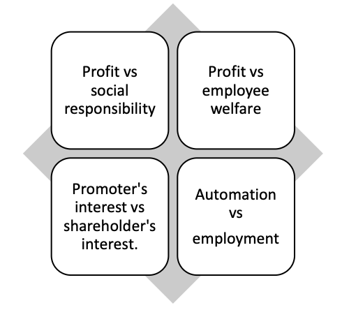
- CORPORATE GOVERNANCE IN INDIA
- 1956:
- The Companies act 1956 contained the first reference to corporate governance in India.
- 1997:
- CII introduced voluntary “code of corporate governance” along the lines of Cadbury committee report.
- 2000:
- On the recommendation of Kumar Mangalam committee on corporate governance SEBI introduced Clause 49 of the listing agreement (for a company with an Executive Chairman, at least 50 per cent of the board should comprise independent directors.)
- 2013:
- Companies act 2013 introduced mandatory Corporate Social Responsibility.
- COMPANIES ACT 2013 AND CORPORATE GOVERNANCE
- Mandatory provisions
- All companies with turnover of more than Rs. 1000 Cr, or net worth more than Rs. 500 Cr, or net profit over 5 Cr are required to spend at least 2% of their annual profit (average over the preceding 3 years) on Corporate Social Responsibility (CSR) activities as specified in Schedule VII of the Act. The expenditure should be on activities within India.
- Examples of Corporate Social Responsibility (CSR) Activities (Schedule VII)
- Eradicating hunger, poverty, malnutrition.
- Promoting education, gender equality, and healthcare.
- Ensuring environmental sustainability.
- Protecting national heritage and culture.
- Supporting armed forces veterans.
- Rural development and slum area development.
- Board of director:
- Composition- It will comprise executive and non-executive directors where the latter will not be less than half of the total strength.
- Functions- It decides fees and compensation if any to be paid to non-executive directors. It will meet at least four times a year and the maximum time gap between the two meetings is four months.
- A director shall not be a member of more than 10 committees or act as chairman of more than five committees across all companies in which he is the director.
- Board shall lay down the code of conduct for all board members and senior management of the company.
- Qualified and independent audit committee which will have the following powers:
- To investigate any activity within its term of reference.
- To seek information from any employee.
- To obtain outside legal or other professional advice.
- To secure the attendance of outsiders with relevant expertise, if considers necessary.
- Disclosures
- Disclosure of accounting treatment
- Disclosure of risk management
- Disclosure of public issues, rights issues, preferential issues
- Disclosure of remuneration of directors
- Reports
- there shall be a separate section on corporate governance in the annual report of the company, with detailed companies report on corporate governance.
- Non-mandatory requirements
- Remuneration committee
- Shareholder’s rights
- Training of the board members
- Mechanism for evaluating non-executive board members
- Whistleblower policy
- Types of corporate responsibilities
- As per OECD, there are three types of corporate responsibilities that all models respect, regardless of the model:
- 1. Political Responsibilities:
- Following legitimate law, respecting the system of rights, and adhering to constitutional principles are the most basic political obligations.
- 2. Social Responsibilities:
- The company's ethical responsibilities, which it recognizes and promotes either as a community of shared values or as part of a larger community of shared values.
- 3. Economic Responsibilities:
- Acting by the logic of competitive markets to earn profits through innovation and respect for the shareholders' rights/democracy, which can be expressed in terms of management's obligation to ‘maximize shareholders value.'
- Furthermore, corporate ethics and awareness of the environmental and societal interests of the communities in which they operate can have an impact on a corporation's reputation and long-term performance.
- CORPORATE SOCIAL RESPONSIBILITY
- Philanthropy is defined as promoting and attempting to bring about social change by majorly making generous financial contributions. Many corporations simply donate money to causes that are intended to bring about social change. They may or may not place their brand on the cause and take credit for the resources offered.
- This giving often happens without any direct involvement outside of the funds offered.
- CSR could be defined as, "the continuing commitment by business to behave ethically and contribute to economic development while improving the quality of life of the workforce and their families as well as of the local community and society at large". CSR addresses the overall attitude of an organisation toward its employees, customers, the environment, the local community, and society at large.
- India has become the first country to introduce the legal requirement for companies to comply with Corporate Social responsibility. Section 135 of the Companies Act, 2013 mandates that every company, private limited or public limited, which either has a net worth of Rs 500 crore or a turnover of Rs 1,000 crore or a net profit of Rs 5 crore, needs to spend at least 2% of its average net profit for the immediately preceding three financial years on Corporate social responsibility activities.
- The corporations are required to set up a CSR committee that designs a CSR policy which is approved by the board and encompasses the CSR activities the corporation is willing to undertake.
- CSR UNDER COMPANIES AMENDMENT ACT, 2019
- Provision for Unspent CSR Funds:
- Any unspent annual CSR funds must be transferred to one of the funds under Schedule 7 of the Act (e.g., PM Relief Fund, Swachh Bharat Kosh, the Clean Ganga Fund) within six months of the financial year. However, if the CSR funds are committed to certain ongoing projects, then the unspent funds will have to be transferred to an Unspent CSR Account within 30 days of the end of the financial year and spent within three years. Any funds remaining unspent after three years will have to be transferred to one of the funds under Schedule 7 of the Act.
- Violation of CSR Norms:
- Any violation may attract a fine between Rs 50,000 and Rs 25,00,000 and every defaulting officer may be punished with imprisonment of up to three years or a fine between Rs 50,000 and Rs 25,00,000, or both.
- CLASSIFICATION OF SOCIAL RESPONSIBILITY
- Towards organization
- It is the responsibility of each corporate entity to work towards growth, expansion and stability and thus earn profits. If the corporation is to achieve social and economic ends, organizational efficiency should be boosted.
- Towards employees
- Employees are the most important part of an organization. Following are some of the responsibilities which a business entity has towards its employees: - Timely payment; Hygienic environment; Good and impartial behaviour; Health care; Recreational activities; Encouraging them to take part in managerial decisions, etc.
- Towards consumers
- The Company should maintain high-quality standards at reasonable prices. It should not resort to malpractices such as hoarding and black-marketing.
- Towards Shareholders
- It is the responsibility of the corporate entity to safeguard the shareholders ‘investment and make efforts to provide a reasonable return on their investment.
- Towards environment
- It is the responsibility of the organization to contribute to the protection of the environment. It should produce eco-friendly products. Moreover, industrial waste management must be taken care of.
- Thus, a properly implemented CSR concept can bring along a variety of competitive advantages, such as enhanced access to capital and markets, increased sales and profits, operational cost savings, improved productivity and quality, efficient human resource base, improved brand image and reputation, enhanced customer loyalty, better decision making and risk management processes.
- TRIPLE BOTTOM LINE (TBL/PPP) APPROACH TO BUSINESS ETHICS
- The TBL approach is used as a framework for measuring and reporting corporate performance against economic (profit), social (people) and environmental (planet) performance. It is an attempt to align private enterprises to the goal of sustainable global development by providing them with a more comprehensive set of working objectives than just profit alone.
- The perspective taken is that for an organization to be sustainable, it must be financially secure, minimize (or ideally eliminate) its negative environmental impacts and act in conformity with societal expectations. The TBL dimensions are also commonly called the three Ps: people, planet and profits.
- AI & ETHICS
- AI is capability of a machine to imitate intelligent human behaviour. It eases human life in all forms from simple calculations to driving cars. Along with its benefits, it also has various ethical issues associated with it as discussed below.
- Inequality - How do we distribute the wealth created by machines?
- Our economic system is based on compensation for contribution to the economy, often assessed using an hourly wage. Majority of companies are still dependent on hourly work when it comes to products and services. But by using artificial intelligence, a company can drastically cut down on relying on human workforce, and this means that revenues will go to fewer people. Consequently, individuals who have ownership in AI-driven companies will make all the money.
- Humanity-How do machines affect our behaviour and interaction?
- Artificially intelligent bots are becoming better and better at modelling human conversation and relationships. This milestone is only the start of an age where we will frequently interact with machines as if they are humans, whether in customer service or sales. While humans are limited in attention and kindness that they can expend on another person, artificial bots can channel virtually unlimited resources into building relationships.
- Artificial stupidity- How can we guard against mistakes?
- Intelligence comes from learning, whether you’re human or machine. Systems usually have a training phase in which they "learn" to detect the right patterns and act according to their input. Once a system is fully trained, it can then go into the test phase, where it is hit with more examples and we see how it performs. Training phase cannot cover all possible examples that a system may deal with in the real world. These systems can be fooled in ways that humans wouldn't be. For example, random dot patterns can lead a machine to “see” things that aren’t there. If we rely on AI to bring us into a new world of labour, security and efficiency, we need to ensure that the machine performs as planned and that people can’t overpower it to use it for their ends.
- Racist robots- How do we eliminate AI bias?
- Though artificial intelligence is capable of a speed and capacity of processing that’s far beyond that of humans, it cannot always be trusted to be fair and neutral. Google and its parent company Alphabet are the leaders when it comes to artificial intelligence, as seen in Google’s Photos service, where AI is used to identify people, objects and scenes. But it can go wrong, such as when a camera missed the mark on racial sensitivity, or when a software used to predict future criminals showed bias against black people. We shouldn’t forget that AI systems are created by humans, who can be biased and judgemental. Once again, if used right, or if used by those who strive for social progress, artificial intelligence can become a catalyst for positive change.
- Security- How do we keep AI safe from adversaries?
- The more powerful a technology becomes, the more potential it carries to be either used for good reasons or nefarious agenda. This applies not only to robots produced to replace human soldiers or autonomous weapons but to AI systems that can cause damage if used maliciously. Because these fights won't be fought on the battleground only, cybersecurity will become even more important. After all, we’re dealing with a system that is faster and more capable than us by orders of magnitude. The proliferation of Armed Drones.
- Evil genies- How do we protect against unintended consequences?
- It’s not just adversaries we have to worry about. What if artificial intelligence itself turned against us? This doesn't mean turning "evil" in the way a human might, or the way AI disasters are depicted in Hollywood movies. Rather, we can imagine an advanced AI system as a "genie in a bottle" that can fulfil wishes, but with terrible unforeseen consequences. In the case of a machine, there is unlikely to be malice at play, only a lack of understanding of the full context in which the wish was made. Imagine an AI system that is asked to eradicate cancer in the world. After a lot of computing, it spits out a formula that does bring about the end of cancer – by killing everyone on the planet. The computer would have achieved its goal of "no more cancer" very efficiently, but not in the way humans intended it.
- Singularity-How do we stay in control of a complex intelligent system?
- The reason humans are on top of the food chain is not down to sharp teeth or strong muscles. Human dominance is almost entirely due to our ingenuity and intelligence. We can get the better of bigger, faster, stronger animals because we can create and use tools to control them: both physical tools such as cages and weapons and cognitive tools like training and conditioning. This poses a serious question about artificial intelligence: will it, one day, have the same advantage over us? We can't rely on just "pulling the plug" either, because a sufficiently advanced machine may anticipate this move and defend itself. This is what some call the “singularity”: the point in time when human beings are no longer the most intelligent beings on earth.
- Robot right- How do we define the humane treatment of AI?
- While neuroscientists are still working on unlocking the secrets of conscious experience, we understand more about the basic mechanisms of reward and aversion. We share these mechanisms with even simple animals. In a way, we are building similar mechanisms of reward and aversion in systems of artificial intelligence. For example, reinforcement learning is like training a dog: improved performance is reinforced with a virtual reward. Right now, these systems are superficial, but they are becoming more complex and life-like. Could we consider a system to be suffering when its reward functions give it negative input?
- What's more, so-called genetic algorithms work by creating many instances of a system at once, of which only the most successful "survive" and combine to form the next generation of instances. This happens over many generations and is a way of improving a system. At what point might we consider genetic algorithms a form of mass murder?
- Once we consider machines as entities that can perceive, feel and act, it's not a huge leap to ponder their legal status. Should they be treated like animals of comparable intelligence? Will we consider the suffering of "feeling" machines? Some ethical questions are about mitigating suffering, and some are about risking negative outcomes. While we consider these risks, we should also keep in mind that, overall, this technological progress means better lives for everyone. Artificial intelligence has vast potential, and its responsible implementation is up to us.
- HUMAN RIGHT APPROACH TO AI
- Proportionality and do no harm:
- Use of AI systems must not go beyond what is necessary to achieve a legitimate aim. Risk assessment should be used to prevent harm that may result from such uses.
- Safety and security:
- Unwanted harms (safety risk) as well as vulnerability to attack (security risk) should be avoided and addressed by AI.
- Fairness and Non-discrimination:
- AI actors should promote social justice, fairness, and non-discrimination while taking an inclusive approach to ensure AI’s benefits are accessible to all.
- Right to privacidad and Data Protection:
- Privacy must be protected and promoted throughout AI lifecycle. Adequate data protection frameworks should be established.
- Transparency and Explainability
- Ethical deployment of AI systems depends on their transparency & explainability (T&E). Level of T&E should be appropriate to the context, as there may be tensions between T&E and other principles such as privacy, safety and security.
- Awareness & Literacy
- Public understanding of AI and data should be promoted through open & accessible education, civic engagement, digital skills & AI ethics training, and media & information literacy.
- Multi-stakeholders & adaptive & collaboration:
- International law & national sovereignty must be respected in use of data. Participation of diverse stakeholders is necessary for inclusive approaches to AI governance.
- Responsibility and Accountability:
- AI systems should be auditable and traceable. There should be an oversight, impact assessment, audit & due diligence mechanisms in place to avoid conflicts with human rights norms & threats to environmental well-being.
- Sustainability
- AI technologies should be assessed against their impacts on ‘sustainability’, understood as a set of constantly evolving goals including those set out in UN’s Sustainable Development Goals.
- MILITARY ETHICS
- Justification of the existence of armies
- Military ethic is based on a contradiction. To begin with- “military profession is the only one whose fundamental function is immoral. Military ethics is a paradox, which seeks to establish a relationship between two antithetical concepts of morality and murder.
- Utilitarians consider that existence of armies must be justified in an imperfect world where it is necessary to defend oneself and ensure security against external enemies, in same way, police are considered necessary to protect against crimes within a State.
- Radical pacifists deny any justification for existence of armies. For them, war is always a moral evil, or at least in most cases.
- Legitimacy of armies – The main question that military ethics tries to answer is that of subject from which legitimacy of armies emanates. For ex, Davenport argues that professional militaries must clearly distinguish between interests of their clients, nation-states or governments of these states, and those of humanity, and thus establish an obligation of priority concerning the latter.
- Jean-René Bachelet argued, “All men, of whatever race, nationality, sex, age, opinion or religion, belong to a common humanity, and all of them have an indivisible right to respect for their life, integrity and dignity”. This principle, situated at the very heart of the common good of the globalized world, contains three elements:
- Universality of man.
- Value of the human person, of his life, of his dignity and integrity.
- Imperative to act for a better world.
- Conflicts of the 21st century
- Civil wars- Sudanian civil war
- Low-intensity conflicts- India-China Galwan Valley conflict.
- Modern high-intensity wars-ongoing Ukraine-Russia war.
- Nuclear war:
- It might prove to be most dangerous if occurs.
- Just War Theory
- Just War Theory is a model of thought and a set of moral rules of conduct that define under what conditions war can be a morally acceptable act. Just war theory can be divided into three categories:
- Jus ad bellum (Right to war):
- Especially concerns reasons for waging war. A recent United Nations document called A More Secure World: Our Shared Responsibility offers some advice on the circumstances that can legitimize a war. Document presents five main criteria of legitimacy:
- 1. Seriousness of the threat.
- 2. Legitimacy of the motive.
- 3. Last resort.
- 4. Proportionality of the means used.
- 5. Assessment of the consequences.
- Jus in Bello (Law in the war):
- Concerns justice over behaviour of participants in conflict. “Law in war” aims, in times of war, to alleviate condition of wounded military personnel and prisoners, of civilian population and their property. Geneva Conventions of 1949 are its fundamental core. Here are some principles of conduct during the war:
- Discrimination:
- This principle states that only people involved in a war can be considered military targets. All other people are considered innocent and must remain safe from attack.
- Immunity of non-combatants:
- Most experts agree on inviolable value of this principle, which states that it is forbidden to kill civilians, except as a means of self-defence and only when necessary.
- Thus, there is no moral obligation to carry out an order that involves an immoral act, such as killing innocent people. At the same time, superiors have an obligation not to issue orders that are illegitimate because of their immorality.
- In case seniors apses immoral orders then, military personnel can use the following alternatives to the execution of immoral orders, such as resignation, refusal of execution, request for transfer as an act of protest, and demand for intervention by an authority of higher rank than the one who transmitted the order.
- Fundamental rules of international humanitarian law applicable in armed conflict:
- Persons hors de combat and persons not taking a direct part in hostilities have the right to respect for their lives and physical and moral integrity, these persons shall in all circumstances be protected and treated humanely, without distinction of any adverse nature.
- It is prohibited to kill or injure an adversary who surrenders or is hors de combat. the party to the conflict in whose power they shall collect and assist the wounded and sick. medical personnel, establishments, means of transport and medical equipment shall also be protected. the red cross emblem (of the red crescent) is a sign of protection and must be respected.
- Captured combatants and civilians held by the opposing side have the right to have their lives, dignity, personal rights and convictions respected. they shall be protected against all acts of violence and reprisals. they shall have the right to exchange news with their families and to receive assistance.
- Everyone shall benefit from fundamental judicial guarantees. No one shall be held responsible for an act that he or she has not committed, nor shall anyone be subjected to physical or mental torture or corporal punishment or cruel or degrading treatment.
- The parties to the conflict and the members of the respective armed forces do not have unlimited rights regarding the choice of methods and means of warfare. The use of weapons or methods of warfare that may cause unnecessary loss or excessive suffering is prohibited.
- The parties to the conflict shall always distinguish between the civilian population and combatants, protecting the civilian population and property. Attacks shall be directed against military objectives, not against the civilian population.
- Probable consequences of ignoring the Geneva Convention
- The disappearance of the universality of humanitarian standards, ratified by virtually all countries and which were customary.
- Ignoring the collective responsibility of all states to respect these tools.
- Abandon the principle of universal jurisdiction over the prosecution of serious violations of human rights.
- Conventions and building different areas and levels of protection of human dignity in armed conflicts.
- To lose an important common basis for maintaining a minimum dialogue and establishing special agreements in non-international conflicts and with non-state actors.
- The loss of restraint in the use of violence in armed conflicts and the increase in degrading conditions concerning the life and rights of civilians.
- Abandonment of a set of anti-terrorist laws.
- Loss of laws allowing for the movement and repatriation of internally displaced persons and refugees.
- Destruction of humanitarian values largely based on universal military ethics, tradition and honour.
- Degradation of universally agreed guarantees for the protection of combatants in the event of injury, illness, shipwreck and capture, and destruction of the likelihood of soldiers themselves receiving prisoner of war status and treatment in the event of capture.
- Jus post bellum (Justice After War):
- It concerns the terminal phase and the peace agreements that must be equitable for the parties involved. It deals with the establishment in the long term of the economic, cultural, political, legal, educational and media conditions… necessary for the peaceful, just and democratic resolution of conflicts when they are on the horizon.
- Several active elements constitute jus post bellum, some among them are :
- 1. Victim support:
- Building peace is a process that begins before the end of the war, as shown by the economic and psychological support activities of various organizations throughout the wars in the former Yugoslavia, the vitality of Palestinian civil society etc.
- 2. Demobilization and reintegration of combatants:
- Reintegration should not be limited to demilitarization but should include real programs of insertion into society ,economy and participation in political life of the factions that have been demobilized at the end of a conflict.
- Successful examples of demobilization have taken place among child soldiers in Sierra Leone as well as among young militiamen at the end of the Lebanese civil war.
- 3. Reconciliation strategies
- To end an internal or international conflict, or to move from a dictatorship to a democracy, the issue of reconciliation has always been a key aspect of the transition or peace process. Often, in Latin America, amnesty laws have been adopted, the consequence of which has almost always been to achieve de facto impunity for the perpetrators of the greatest human rights violations.
- 4. Action against impunity
- It is fundamental to repairing memory. In the case of the war in Bosnia, and other atrocious conflicts such as those in Rwanda or Somalia, war crimes and criminal ideologies must be brought to justice.
- 5. The social dimensions
- Dimensions like economic, educational, cultural, media, psychological, etc. must be addressed to prevent the violent drift of future conflicts and to sow a state of sensitivity and collective awareness.
- 10. ETHICS IN PRIVATE & PUBLIC RELATIONS
- Human beings are social animals; we interact with each other and establish relations when we interact with each other. Gandhi said, “For achieving a non-violent and truthful society, it is important to have a good relationship.”
- FOUR PRINCIPLES OF RELATIONSHIPS
- Respect
- Understanding
- Acceptance
- Appreciation
- SCOPE OF PRIVATE RELATIONS
- Private relation involves relations with oneself, family (spouse, parents, children and other relatives) and friends.
- FACTORS AFFECTING ETHICS IN DEALING WITH SELF
- Having good/bad thinking about self.
- The extent of consistency between your words and action.
- FACTORS AFFECTING ETHICS IN MARITAL LIFE
- 1. Understanding of the uniqueness of spouse.
- 2. Imposition of self on spouse.
- 3. The extent of freedom given to the spouse.
- 4. Extent of possessiveness.
- 5. Extent of doubt.
- 6. The extent of acceptance of premarital relations of a spouse.
- 7. The extent of acceptance of the aspirations of a spouse.
- 8. Felling of competition vs cooperation.
- 9. The extent of daring to correct your spouse.
- 10. The extent of care of your spouse.
- 11. The extent of sharing the burden of your spouse.
- FACTOR AFFECTING ETHICS IN RELATIONS WITH FRIENDS
- The extent of reposing the trust of the friend.
- The extent of support to your friend.
- The extent of emotional support to your friend.
- The extent of respecting and accepting the values of your friend.
- FEATURES OF PRIVATE/PERSONAL RELATIONS/ETHICS/LIFE
- Private relations are informal, as no formal procedure is there to regulate such relations.
- These are one-to-one relationships, based on emotional bonds and in most cases expression of individual personality is there.
- Internal control is there on ethical behaviour rather than external control in the form of laws, rules and regulations.
- Ethics in private relations can differ widely from person to person and are often influenced by the morality, emotional state and personal interest of the person involved in such relationships.
- Duties in these relations are self-imposed, informal in nature and voluntary.
- Ethics shown in private relations often form a major part of individual ethics or morality.
- The morality of private relations forms the basis of ethical behaviour in public relations.
- Personal relations involve the following values love, care, respect, trust, responsibility, solidarity, peacefulness, good communication, security, self-sacrifice etc.
- 11. FEATURES OF PUBLIC RELATIONSHIP
- These relations are Predictable and Formal.
- The individual perceives themselves as part of the context and not as separate entities.
- Legal and social obligations are there. Often the nature of duty in a public relationship is obligatory, externally imposed, formal and sanctioned.
- Ethics shown in public relations are often influenced by norms, values and behaviour prevailing in a particular society.
- The reach of our public relations is much wider and can impact society at large. Ex. Honesty, openness, integrity, fairness etc.
- 12. RELATION BETWEEN PRIVATE & PUBLIC ETHICS
- DIFFERENCES
-
| BASIS OF COMPARISON | ETHICS IN PRIVATE LIFE | ETHICS IN PUBLIC LIFE |
|---|
| 1. Existence | Private life | Public life |
| 2. Basis | Emotion | Give and take/rules |
| 3. Tolerance for deviation | High | Low |
| 5. Regulation | Low or nil | High |
| 6. Temporal nature | Relatively permanent (commitment to end goal of life, family, partner) | Generally temporary (commitment to duty 9 to 5) |
| 7. Codified rules | No | Yes |
| 8. Professionalism required | No | Yes |
| 7. Values involved | Love and care, Confidentiality, Truthfulness, Responsibility, Perseverance. | Openness, Honesty and integrity, Rule of law, Equality and uniformity, Accountability |
- REASONS FOR SEPARATION
- 1. They operate in different domains.
- 2. Their mixing may create issues like the entry of private relations into public relations may lead to nepotism, and favoritism on the other hand entry of public relations into private life may lead to undermining the sanctity, privacy and intimacy of private life.
- 3. To prevent conflict of interest.
- 4. Public relations are complicated and intense.
- PROBLEMS WITH SEPARATION
- Not separable:
- Distinguishing ethics in public and private relations is vague, ambiguous, and difficult. Both cannot be divided into watertight compartments.
- Not feasible:
- They consistently interact and affect each other. Ethics in private relations helps in humanizing public relations and plays an important role in forming the moral system of a person.
- Not manageable:
- Conflict between ethics in private and public relations may lead to a build-up of unrest, dissonance and confusion in the mind of the concerned person.
- Not desirable:
- Rigid separation may be proved counterproductive. Dishonest in private relations can’t be an honest man in public life.
- However, too much congruence between ethics in public and private relations may lead to the stagnation of ideas and change.
- EFFECT OF PUBLIC RELATIONS ON PRIVATE RELATIONS
- POSITIVE
- Inspiration:
- The compulsion of respect for women in office may motivate a man to treat his wife respectfully.
- Value:
- Deceit by colleagues often makes people realize the innocence and greatness of their family members and friends.
- Humane:
- The value of private life values like love and care can make your public life more humane.
- NEGATIVE:
- Spill over:
- If father is from Military background, there could be very rigid atmosphere and discipline at home.
- Time management:
- Excessive involvement in public life often forces people to cut time from their private life.
- EFFECT OF PRIVATE LIFE ON PUBLIC LIFE
- POSITIVE
- Improve interpersonal relations:
- One who is honest in private relations is probably more honest in public life.
- Positive mood:
- A healthy private life can promote work efficiency in the office.
- NEGATIVE
- Stress:
- Family tensions may reflect in the office.
- Prejudice:
- Your experience of private life may lead to prejudice in office E.g.
- If you follow casteism in private life then it may also reflect in office.
- COMMON IN PRIVATE AND PUBLIC LIFE
- Honesty
- Interpersonal skills
- Compassion
- 13. BELIEF
- Belief is a mental attitude or state of mind by which a person holds a proposition to be true (Oxford dictionary).
- Belief is an internal feeling that something is true, even if it is unproven or irrational; things we hold to be true. Belief is the simplest form of mental representation and, therefore, the building block of our thought process.
- Beliefs are the ideas, viewpoints and attitudes of a particular individual/group/society.
- They consist of fables, myths, folklore, traditions, and superstition. They can also be true and verifiable facts, history or legends. Beliefs lay the foundation of a cultural group, but they are often invisible to the group that holds them. They are important because they give us hope. A human being thrives on what he/she believes in. However, beliefs can be challenged. Peripheral beliefs can also be changed. Two people might have different beliefs about a phenomenon – as simple as a glass being half empty or half full, to complex theological questions such as how did earth or life come to be? Beliefs evoke emotions, but not-necessarily actions
- Belief is also referred to as cognition.
- Belief can be:
- Peripheral (weak) and
- Core (strong) - Beliefs formed by direct interaction are strong, such as for patriarchs, women are weak.
- 14. VALUE
- Value = Belief + Emotions
- Values are the deep-seated beliefs that guide people’s actions and judgments about what is right or wrong, good or bad, important or desirable in life (UNESCO).
- Values are important and lasting beliefs or ideas within an individual/Society about what is good or bad and desirable or undesirable.
- Values are gathered through external environment, family, and experiences.
- Value denotes the degree of importance of something (or even an action). Values help in determining what actions are best to do.
- Values are ‘beliefs’ about ‘what is important.
- VALUES VS ETHICS
-
| VALUES | ETHICS |
|---|
| What is Important? | What is Right? |
| What should I achieve? | What is the correct action? |
| Differ from person to person. | Usually considered universal. |
| Motivates. | Constrains. |
- Comparison between belief, value and emotions
-
| Aspect |
Belief |
Emotion |
Value |
| Nature |
Cognitive – based on knowledge and perception. |
Affective – based on feeling and sentiment. |
Integrative – combines cognition and emotion. |
| Focus |
What is considered true or real. |
What is felt about situations or actions. |
What is considered important, good, or desirable. |
| Function |
Shapes understanding and interpretation of reality. |
Motivates or energizes behavior. |
Guides judgment, choices, and ethical conduct. |
| Stability |
Can change with new information or reasoning. |
Often temporary or situation-based. |
Relatively stable and enduring over time. |
| Example |
“Honesty builds trust.” |
Feeling proud when being honest. |
Value of Honesty guiding one’s actions. |
| Relationship |
💡 Value = Belief + Emotion → A belief charged with emotional commitment becomes a value. |
- 15. FEATURES OF VALUES
- Values are standards that direct our conduct in various ways. They also provide standards of morality.
- Values are concerned with the character and conduct of a person.
- Values are a self-managing mechanism that is not intuitive; instead, they are acquired from surroundings through participatory and anticipatory learning processes.
- Values are the core of human personality.
- Values are above specific objects, situations, or persons. (Attitude is towards a particular object, situation, or person). E.g., The value of justice is for everything (while the attitude of justice would be concerning gender, caste etc).
- Values are expressed less in day-to-day life than in the expression of attitude.
- Values are relatively stable and enduring. However, an intense incidents in life can change the value system. For instance, the change in values of Ashoka after the war of Kalinga, Angulimala, Valmiki are few examples.
- Classification of Values:
- i. Intrinsic/End/Terminal value:
- Which has its worth, like justice.
- ii. Extrinsic/Mean/Instrumental value:
- Which helps in achieving the end value like courage.
- Terminal values and Instrumental values
- Terminal Values:
- The core permanent values that often become character traits are known as terminal values. They can be beneficial or harmful. It is extremely difficult to change them. Terminal values are a person's life objectives — the ultimate things he or she wants to achieve through his or her behaviour.
- Examples:
- Happiness, self-respect, family security, recognition, freedom, inner harmony, comfortable life, professional excellence.
- Instrumental Values:
- Instrumental values, according to social psychologist Milton Rokeach, are specific modes of behaviour. They are not an end goal in themselves, but rather a means of achieving one.
- Examples:
- Courage, temperance, hard-working, patience, perseverance.
- Intrinsic values and Extrinsic values
- Intrinsic Values:
- An intrinsic value is something valuable in and of itself. It is a goal in itself, not a means to something else.
- Examples:
- Peace, honesty, temperance, courage, happiness.
- Extrinsic Values:
- An extrinsic value is something that is valuable because it leads to another intrinsic value. It is useful only as a means to an end.
- Examples:
- Wealth, fame, power, status, material possessions.
- Institutional values and Individual values
- Institutional Values:
- Political, social, economic, and cultural institutions propagate institutional values.
- Examples:
- Democracy → liberty
- Marriage → loyalty
- Individual Values:
- Individual values include both intrinsic and extrinsic values that are significant to the person who holds them.
- Examples:
- Self-esteem
- PERSONAL VALUES VS SOCIAL VALUES
- Personal Values:
- Important for Individual well-being. Examples of personal values are self-respect, comfortable life, freedom etc.
- Social Values:
- Important for other people’s well-being. Examples of social values are equality, social justice, national security, world peace etc.
- MORAL, IMMORAL AND AMORAL VALUES:
- Moral values promote right action and honesty, immoral values promote wrong action like greed lead to corruption, amoral values have nothing to do with morality beauty, fitness
- DIFFERENT PEOPLE MAY HAVE DIFFERENT VALUES:
- Tribals:
- Conservation of forest and natural resources.
- Service class:
- Stability.
- Business class:
- Profit and risk.
- Communist:
- Equality and Social Justice.
- VALUES CAN BE OF DIFFERENT TYPES
-
| Value type | Example |
|---|
| Political | Democracy, monarchy, socialism, communism, secularism. |
| Social | Inclusiveness, equality, tolerance, harmony. |
| Economic | Competition, profitability. |
| Professional | Merit, punctuality, efficiency. |
| International | Universal brotherhood, peace, harmony. |
| Scientific | Objectivity, rationality. |
| Aesthetic | Beautiful, ugly. |
- 16. FUNDAMENTAL HUMAN VALUES
- Basic inherent values in humans are truth, honesty, loyalty, love, peace etc. because they bring out the fundamental goodness of human beings and society.
- Furthermore, because these values are unifying in nature and cut across individuals’ social, cultural, religious, and sectarian interests, they are regarded as universal, timeless, and eternal and apply to all people.
- LIST OF HUMAN VALUES
-
| Right-Conduct | Peace | Truth |
| Manners | Patience | Patience |
| Truthfulness | Awareness | Concentration |
| Responsibility | Positives | Fairness |
| Honesty | Independence | Self-acceptance |
| Trust | Perseverance | Self-discipline |
| Courage | Contentment | Determination |
| Love | Non-violence | Reflection |
| Forgiveness | Generosity | Justice |
| Kindness | Consideration | Stewardship |
| Compassion | Cooperation | Tolerance |
| Service | Harmlessness | Respect |
- 17. HUMAN VALUES- LESSONS & TEACHINGS FROM LIVES OF GREAT LEADERS, REFORMERS AND ADMINISTRATORS
- Leadership values are the underlying beliefs that guide a leader’s decisions and actions.
- Here are some of the values that are essential for a leader:
-
| LEADERSHIP VALUE | DESCRIPTION | Examples (note: an example can be used at multiple places) |
|---|
| Empowerment and development | A leader should empower their team members and help them develop their skills. | Dr. Ambedkar |
| Vision | A leader should create and maintain the organizational vision. | Mahatma Gandhi |
| Communication Skill | Communication is an essential value for a leader. It helps them build trust with their team members and keep them informed. | Jawar Lal Nehru |
| Reinforcement and influence | A leader should reinforce positive behaviour and influence their team members to achieve their goals. | Abraham Lincoln |
| Empathy | Empathy is an essential value for a leader. It helps them understand their team members’ perspectives and build strong relationships with them. | Chhatrapati Shivaji |
| Passion and commitment | A leader should be passionate about their work and committed to achieving their goals. | Sardar Vallabh Bhai Patel |
| Courage of conviction | It is an essential quality of a leader to face the challenges. | Napoleon Bonaparte |
| Perseverance | Without this quality, no one can become a leader because without perseverance one may not be able to overcome the failures. | Nelson Mandela |
- LEADER SPECIFIC VALUES
- MAHATMA GANDHI
- Non-violence:
- Mahatma Gandhi believed that non-violence is the greatest force at the disposal of mankind. He showed us that we can achieve our goals without resorting to violence.
- Truth and honesty:
- Gandhiji showed us that truth alone triumphs and this is evident from many of his real-life stories. He led a life of truth, seeking the truth
- Forgiveness:
- Forgiveness is a virtue and Mahatma Gandhi was a living example of it. He said that “an eye for an eye only ends up making the whole world blind”
- JAWAHAR LAL NEHRU
- Modern values and thought:
- Jawaharlal Nehru imparted modern values and thought.
- Secularism:
- Nehru insisted on the secular and liberalist approach.
- Democratic socialism:
- Nehru advocated democratic socialism and encouraged India’s industrialization by implementing the first five-year plans in 1951.
- SARDAR VALLABH BHAI PATEL
- Selflessness:
- He is known for his selflessness; he served the nation throughout his life without any expectation.
- The courage of conviction/determination:
- It was his courage of conviction which enabled him to integrate many provinces into India.
- BHAGAT SINGH
- Socialism:
- The goal of his life was a socialist state.
- Sacrifice:
- He gave the highest sacrifice for the national cause
- B.R. AMBEDKAR
- Empathy:
- He devoted his life to justice for Dalits and other backward classes.
- Commitment:
- He was committed to the upliftment of weaker sections of society.
- LESSONS AND TEACHINGS FROM THE LIVES OF REFORMERS
- Reason:
- It is the first and foremost quality to be a reformer because it enables a person to question the existing unjust/ irrational/ orthodox/ political/ social/ economic system. Like Raja Ram Mohan Roy, Rousseau, John Locke etc.
- Contentment:
- It is an important quality of a reformer to win the trust of the followers like Buddha, Mahavir Jain, Socrates, Kabir, Guru Nanak etc.
- Humanism:
- This value enables a reformer to cross the man-made boundaries of family, caste, class, religion, and region.
- Equality:
- Equality is one of the core values of reformers as reformers try to eliminate the discrimination and inequalities that existed in society.
- REFORMER SPECIFIC VALUES
- Buddha- Love, wisdom, goodness, calmness and self-control.
- Mahavir Jain- Non-violence, truthfulness, chastity, selflessness, compassion.
- John Locke- Equality, liberty, and Fraternity.
- Rousseau- Democracy, general will, State-welfare.
- Raja Ram Mohan Roy- Rationality, courage, dedication.
- Swami Vivekananda- Humanism, rationality.
- LESSONS AND TEACHINGS FROM ADMINISTRATORS
- Non-discrimination:
- This is one of the core values of an administrator because he must serve all the subjects irrespective of caste, class, region or religion.
- Discipline:
- Discipline is required to maintain the bureaucratic hierarchy in the administration
- Lawfulness:
- It is required to ensure the rule of law.
- Loyalty:
- Loyalty toward the political executive is considered important for any civil servant.
- Efficiency:
- It is required to attain maximum output by implementing the policies.
- ADMINISTRATOR SPECIFIC VALUES
- V.P. Menon:
- Loyalty, wisdom.
- E. Sridharan:
- Techno-savvy, visionary.
- Armstrong Pame:
- Compassion, dedication to public service.
- Satyendra Nath Dubey:
- Integrity, whistleblowing the corruption in NHAI.
- Kiran Bedi:
- Prison Reforms.
- N.K. Singh:
- Key role is review of FRBM, upholding the financial discipline of Government.
- TN Seshan:
- Electoral reforms, Organisational reforms and image overhaul of ECI.
- Varghese Kurian:
- Operation flood, dedication for public service, social responsibility of a civil servant.
- Vinod Rai:
- Commitment to transparency and accountability.
- 18. STAGES OF MORAL/VALUE DEVELOPMENT (KOHLBERG)
- Lawrence Kohlberg, an American psychologist proposed a theory of moral development that outlines six stages through which individuals typically progress. Kohlberg's theory builds upon the earlier work of Jean Piaget and focussed on the cognitive aspects of moral reasoning. The six stages are grouped into three main levels, each with two sub-stages.
- An overview of Kohlberg's stages of moral development:
- Pre-conventional Morality (3-7 Age)
- Stage 1:
- At this stage, individual focusses on avoiding punishment, moral decisions are based on fear of authority and consequences of actions. Obedience-reward and disobedience-punishment.
- Stage 2, Individualism and Exchange:
- Recognition of need of reciprocity, moral decisions are made on the basis of self-interest and expectations of a fair exchange.
- Conventional Morality (8-13 Age)
- Stage 3, Interpersonal accord and conformity:
- Conformity to social expectations and norms, decisions are based on desire to be seen as a good person in the eyes of others.
- Stage 4, Maintaining Social order and Authority:
- Individuals at this stage are concerned with obeying laws and maintaining social order. Moral decisions are made based on a sense of duty to uphold the social contract.
- Post-conventional Morality (Adulthood)
- Stage 5, Social contract and individual rights orientation:
- Stage involves an understanding of the social contract and the acceptance that laws are social agreements. Moral decisions are guided by a sense of democracy and the recognition of individual rights.
- Stage 6, Universal ethical principles:
- This is the highest stage, here, individuals develop a personal moral code based on universal ethical principles. Moral decisions are guided by a commitment to justice, equality, and human dignity.
- However, it is important to highlight that not everyone goes through all six stages of moral development, cultural and individual factors have an impact on the trajectory of moral development.
- Heinz Dilemma:
- As a part of his theory of moral development, Kohlberg presented a moral thought experiment:
- Heinz's wife is terminally ill, and there is a specific drug that can save her. However, the drug is expensive to produce, and the only available supply is controlled by a pharmacist who is charging a price that Heinz cannot afford. Heinz tries to borrow money, but he can't get enough. Desperate to save his wife, Heinz considers stealing the drug.
- Kohlberg was not primarily interested in whether the person would say stealing is right or wrong but focused on the reasoning behind the decision. He identified different stages of moral reasoning based on individuals' responses to such moral dilemmas.
- Stage 1 individual:
- Heinz shouldn't steal because stealing is against the law, and he might get punished.
- Stage 2 individual:
- Heinz should steal the drug because it is in his self-interest to save his wife's life, and the value of saving a life outweighs the importance of following the law.
- Stage 3 individual:
- Heinz should steal the drug to prove his love and commitment to his wife. The focus is on maintaining good relationships and meeting social expectations.
- Stage 4 individual:
- Heinz should not steal because stealing undermines social order and the rule of law.
- Stage 5 individual:
- Heinz should steal because access to life-saving drugs is a basic human right, and the law should be flexible to accommodate such situations.
- Stage 6 individual:
- Heinz should steal based on a commitment to universal ethical principles such as the right to life, justice, and human dignity. Personal moral principles override societal laws.
- 19. HOW ARE VALUES FORMED?
- Individuals form values because of socialisation from their parents, religious institutions, friends, personal experiences, and society.
- Individual values are influenced by our religious beliefs, social systems in place, and, to some extent, socioeconomic conditions.
- The terminal values develop over time, whereas the instrumental values are influenced by circumstances.
- HUMAN VALUES- ROLE OF FAMILY
- A family is a social institution with the bond of common belief, religion, customs, culture, language and way of life. It carries on the heritage and traditions as legacies from the earlier generation to the next generation. Child Rearing Practices (CRP) adopted by parents shapes the child's personality both consciously and subconsciously. A child from a family acquires self-knowledge, self-confidence, self-satisfaction, self-worth, and the capacity for self-sacrifice. They realise themselves as competent to show kindness, friendship, generosity, compassion, tolerance, responsibility and service to society.
- Techniques of value inculcation by family
- Family is the first informal agency for socialisation. It is said that family is the first school and mother is the first teacher.
- The family shapes a child's attitude toward people and society, assists in mental development and supports the child's goals and values.
- Values formation is very high through family because of high emotional attachment.
- Private relations Contact comfort studies have shown that those baby monkeys who stick to their mother’s belly are more Emotionally secure and confident and possess attitude of sharing- among siblings and cousins.
- Child-rearing practices– Democratic and authoritative; children raised authoritatively will show less concern for democratic values.
- Role modelling- Children subconsciously and consciously learn from their parent’s behaviour. Gandhiji said he knew the technique of Satyagraha and fasting from his mother and wife, respectively.
- Observational learning – children observe the behaviour of their parents and other family members.
- Values of service class and business class.
- Orthodox versus liberal families.
- Unaware versus aware families.
- Patriarch versus matriarch families.
- Strengths of the family for value inculcation:
- 1. It is the first place of socialization.
- 2. Family is forever.
- 3. Person spends the highest time in the family in general.
- 4. Family consists of diverse people.
- 5. Presence of trust among the members.
- 6. Family can teach whatever it wants because the child is like a blank slate.
- 7. It uses both hard and soft tools of socialization.
- 8. It can observe progress minutely.
- Problems in the Role of Family
- 1. It can promote regressive and unjust values e.g., Casteism, patriarchal, orthodoxy etc.
- 2. Different members of the family may impart conflicting values:
- Father- aggression, Mother- unassertiveness.
- 3. Family often fails to practice what it preaches (if a father asks the child to pick up the phone and lie about the whereabouts, family teaches the child to lie).
- 4. Changing family structure now in nuclear families, family members barely spend time together.
- 5. Prevalence of materialistic values like competition, rather than care, love etc.
- 6. It imposes values on children irrespective of their choices/inadequate autonomy.
- Methods of promoting values in Family
- Promoting fundamental values such as tolerance, love, sympathy, nonviolence, sympathy, and companionship, as well as Dharma.
- Positive Attitude and Constructive Actions:
- Suppressing negative actions while enhancing positive ones.
- Family peace and harmony:
- To eliminate dominance, we must ensure family peace and harmony.
- Improving social life and equality through cleanliness, a good home environment, hygiene, and good health.
- Food is shared and eaten together.
- Gentleness, good manners, cooperation, and respect for women and elders.
- Offering prayers to one's God and respecting the beliefs of others.
- Participating in and enjoying family gatherings.
- An ideal society promotes opportunity-
- To everyone’s physical, intellectual, and moral development.
- To discover our potential.
- To mould people's opinions, beliefs, morals, and ideals.
- To instil values such as hard work, honesty, tolerance, national integration, secularism and community responsibility.
- To reject negative values such as dowry, casteism, communalism, alcoholism, and drug use.
- To improve the quality of life by ignoring social tensions, unrest, prejudices, and other factors.
- To ensure justice and equality for the nameless, faceless, and voiceless.
- To cultivate individual and group discipline.
- 20. HUMAN VALUES- ROLE OF EDUCATIONAL INSTITUTIONS
- The essence of a good education is to develop human personality in all dimensions, which are intellectual, physical, emotional, social, ethical and moral. To develop the intellectual faculties of the students in order to be wise and a servant of society.
- Data -> Information -> Knowledge -> Wisdom
-
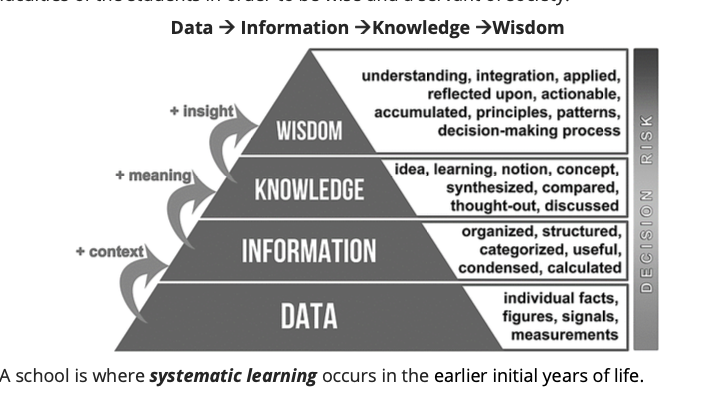
- A school is where systematic learning occurs in the earlier initial years of life.
- The school provides maximum opportunity and exposure to children. Also, in the school, a child is introduced to members of the community outside his family, i.e., his peer students, teachers and other staff. This enables the child to learn how to regulate his behaviour in society.
- Techniques of educational institutions to impart values:
- Curriculum
- Teaching tools
- Visits and outings
- Discipline
- Community work
- Observation
- Peers
- Teachers as role models
- Dialectics
- Culture
- Reward and punishment
- ROLE OF TEACHER
- Provide the right conditions for students to learn.
- Stimulate the mind of students.
- Serves as a role model for students.
- Learnings about Private relations
- Friendship is learnt in schools.
- How to conduct with the opposite sex and gender sensitivity.
- Etiquettes and values:
- In the Netherlands, plastic is not used in class. In the initial years, students are taught to develop sensitive values towards nature in a natural environment.
- Bhutan, where students follow how to live with nature
- BEHAVIOUR INTO ATTITUDE
- Corporal punishment:
- When a child, who has suffered corporal punishment, goes to college, he would think it is right to rag juniors; when he becomes a father, he would think physical punishment is the correct way to discipline children; if he becomes a cop, he will think custodial torture is justifiable to extract a confession from the criminal.
- SYLLABUS AND TEXTBOOKS
- World History:
- French Revolution- liberty, equality, fraternity.
- Modern History:
- Gandhi’s Train to Pretoria - Standing against injustice.
- Constitutional values:
- Democracy, secularism and human values (truth, love, compassion).
- Literature:
- It helps us understand - human nature and the overall social values of a given era.
- Science:
- Curiosity enables a person to ask questions about orthodoxy and bad religious practices. In Kerala, the Class 7 social science textbook contained a chapter with an imaginative interview between a headmaster and parents seeking admission. The boy carries a Christian name; the father is named Anwar Rashid, and the mother is Lakshmi Devi. The headmaster asks the father what religion he should fill in for the child in the required column, to which the reply is- “Let him choose his religion when he grows up.”
- The content of the textbooks plays an essential role in imparting value systems. If a book has a passage, “Papa is coming from the office while mummy is cooking food and Munni is helping mummy.” , it creates gender based stereotypes in the minds of children.
- Values of sportsmanship, and team spirit.
- Value Education
- North Korean Government uses textbooks to indoctrinate children's brains against South Korea and the Western World's liberal values. Similarly, Iran has also revised most of the education curriculum as per the ideology of Khamenei.
- Overall development
- Taking students to nursing homes for the inculcation of compassion and altruism.
- Taking students to the museum and cultural centre to inculcate tolerance and secularism.
- Tree plantation and street cleaning for the inculcation of environmental protection.
- Yoga to be healthy.
- Strength of educational institutions in value inculcation:
- The first place of formal socialisation
- More effective due to authority and control
- Availability of role models in the form of senior, teachers.
- A person spends large time here
- It uses well-designed pedagogic teaching methods.
- Peer pressure, mutual comparison and competition.
- Cognitive methods of debate discussions etc.
- Issues in the role of the education institution:
- Nature of Education
- Politicisation of education
- Rote learning
- Quality of education
- Access to quality education
- 21. ROLE OF SOCIETY
- Religion
- Traditions and customs
- Politics
- Economy
- Media
- Civil society
- Local community
- Leadership
- STRENGTHS OF SOCIETY IN VALUE INCULCATION
- Stability and harmony
- Diversity
- Social influence
- Enforcement
- Credibility
- ISSUES IN THE ROLE OF SOCIETY IN VALUE INCULCATION
- Heterogeneity
- Orthodoxy
- Corruption
- Misdirected
- Introversion:
- Some people are introverted in nature hence they may not absorb the values imparted by society.
- Boomerang effect:
- Sometimes society uses harsh and unreasonable methods to inculcate values that are not understood by individuals which compels people to rebel.
- 22. NORMS
- Norms are social expectations that guide behaviour i.e., socially acceptable ways of behaviour are called norms.
- Norms are generally informal guidelines of a particular group or community about right or wrong social behaviour.
- They are a form of collective expectations of community members from each other.
- Norms are a form of social control or social pressure on individuals to conform, induce uniformity and check deviant behaviour.
- They are expressed through social customs, folkways or mores.
- Norms provide order in a society. E.g., in a traditional society, it is a norm that a son must obey his father’s command and fulfil his wishes.
- Non-conforming to norms attracts punishment. Punishment may be in the form of being looked down upon, derision, scolding, boycotting, imposing penance, etc.
- Laws are a later stage of the evolution of norms, where the society has codified the terms of expected and unexpected behaviour from its members. Those who are deviant are tried in a court of law and punished accordingly.
- It is important to note that for an individual, norms are imposed externally whereas beliefs and values are internal. Norms are a specific guide to behaviour whereas values provide indirect guidance only.
- PRINCIPLES
- Values, beliefs, and morality vary from individual to individual. Ethics may also differ in different communities and cultures. However, Principles are rules or laws that are universal in nature. Principles are about universal truths and standards such as fairness, truthfulness, equality, justice etc.
- Chapter 2 - ATTITUDE
- 1. DEFINING ATTITUDE
- “Attitude is a learned tendency to evaluate a person, object, event, or issue in a certain way — usually positively or negatively.” — American Psychological Association (APA)
- In simple words, it is an expression of favour or disfavour towards a person, place, thing or event.
- Attitude is akin to spectacles through which a person sees the world.
- Thus, attitude is a subjective interpretation of the objective world by an individual.
- Beliefs + Values + Emotions → form Attitudes
- 2. STRUCTURE/CONTENT/COMPONENT OF ATTITUDE (CAB OR ABC)
- C- Cognitive
- A -Affective
- B -Behavioural
- COGNITIVE COMPONENT
- The cognitive component of an attitude refers to beliefs, ideas, thoughts and attributes we associate with an object.
- Stereotypes are thoughts or beliefs that are adopted about specific types of individuals or a particular group. They may or may not accurately reflect reality. They form largely due to over-generalization or incomplete information.
- e.g., Africans are involved in drug peddling, human trafficking, and low hygiene.
- AFFECTIVE COMPONENT
- The affective component of an attitude refers to feelings or emotions linked to an object.
- Prejudice is pre-judgement or forming an opinion before becoming aware of relevant facts of the case. It is largely based on the kind of emotions a person has for the object.
- e.g., assuming that a person of their caste will be helpful.
- BEHAVIOURAL COMPONENT
- The behavioural component refers to past experiences or behaviour regarding an attitude object.
- Discrimination is the behaviour of making a distinction in favour or against a person based on the groups, class or category to which that person belongs to.
- Such distinction doesn’t consider individual merit. It can also be shown against a thing or an idea.
- Though it can be positive discrimination, in most cases, it is considered a negative phenomenon as it denies social participation or human rights to people based on prejudice and stereotypes.
- Even positive discrimination in long term can be harmful to the overall well-being of society. As it may kill the spirit of competition and equality.
- RELATIONSHIP BETWEEN COGNITION, AFFECTIONATE & BEHAVIOUR COMPONENTS
- Components of the CAB model have a synergistic relation. When an individual possesses positive belief about an attitude object, they typically have positive affective and behaviour associated with the object. Thus, CAB components are different, but they are not completely independent of each other.
- DIMENSIONS OF ATTITUDE
- (i) Strength of Attitude
- Some attitudes are strong, while some attitudes are weak. The strength with which an attitude is held is often a good predictor of behaviour. The stronger the attitude, the more likely it should affect behaviour.
- (ii) Accessibility of Attitude
- The accessibility of an attitude refers to the ease with which it comes to mind. In general, highly accessible attitudes tend to be stronger.
- (iii) Attitude ambivalence
- The ambivalence of an attitude refers to the ratio of positive and negative evaluations that make up that attitude. The ambivalence of an attitude increases as the positive and negative evaluations get more and more equal.
- 3. FEATURES/NATURE OF ATTITUDE
- Attitudes often result in and affect the behaviour or action of people.
- Attitudes are gradually acquired over time.
- Attitudes are evaluative statements, either favourable or unfavourable.
- All people, irrespective of their status and intelligence, hold attitudes.
- An attitude may be unconsciously held.
- 4. ATTITUDE & BEHAVIOUR
-
| Basis for comparison | Attitude | Behaviour |
|---|
| Meaning | Attitude refers to a person's mental view of how he/she thinks or feels or something. | Behaviour implies an individual or group's actions, moves, conduct or functions towards other persons. |
| What is it? | A person's mindset. | A person's conduct. |
| Reflects | What do you think or feel? | What do you do? |
| Defined by | The way we perceive things. | Social Norms |
- 5. IMPACT OF BEHAVIOUR ON ATTITUDE
- People tend to seek consistency in their attitudes and behaviour. When a person must act in contrast to his attitude, there will be some unrest inside him due to the discrepancy.
- Something must change to eliminate or reduce cognitive dissonance.
- The term cognitive dissonance is used to describe the feeling of discomfort that results from holding conflicting beliefs and behaviour. The feeling of discomfort motivates a person to reduce it. There are generally three ways of reducing cognitive dissonance:
- i. Change the behaviour
- ii. Ignore the situation
- iii. Change the attitude
- ATTITUDE’S INFLUENCE AND RELATION WITH THOUGHT AND BEHAVIOUR
- Case 1 – Attitude ≠ Behaviour
- For example, plenty of people may support a particular political candidate, but they may not take the pain to go out and vote for him, Thus, attitudes may not always predict the actual pattern of one’s behaviour. LaPierre’s study shows that the cognitive and affective components of attitudes do not necessarily coincide with behaviour.
- Case 2 – Behaviour ≠ Attitude
- There can also be instances where negative behaviour co-exists with a positive attitude.
- This usually occurs when the positive attitude needs to be stronger. For example, consider a person with a positive attitude, who believes in not jumping the queue.
- However, when he sees everyone around him doing the same, he may think he will lose, if he does not jump the queue. Thus, he may behave opposite to his original attitude – which we can call as positive.
- Case 3 – Attitude = Behaviour
- Psychologists have found that there would be consistency between attitudes and behaviour when:
- The attitude is strong and occupies a central place in the attitude system.
- The person is aware of their attitude.
- There is very little or no external pressure on the person to behave in a particular way.
- For example, there is no group pressure to follow a particular norm.
- The person’s behaviour is not being watched or evaluated by others.
- The person thinks that the behaviour would have a positive consequence and intends to engage in that behaviour.
- Note:
- Persons with high integrity usually show a direct relation between attitude and behaviour.
- Case 4 – Behaviour = Attitude
- People dislike Cognitive Dissonance. Cognitive dissonance is when a person experiences psychological distress due to conflicting thoughts or beliefs. To reduce this, people may change their attitudes to reflect their other beliefs or actual behaviours.
- This means they prefer their attitude and behaviour to be aligned in the same direction.
- By giving incentives to behave contrary to the attitude, Leon Festinger and James Carl Smith (study in 1954) proved that the first attitude can be changed to suit their external behaviour.
- 6. FACTORS INFLUENCING RELATION BETWEEN ATTITUDE & BEHAVIOUR
- i. Qualities of a person:
- People who are aware of their feelings display more attitude-behaviour consistency than those who rely on situational questions to decide how to behave.
- People with a high level of integrity show a high correlation between Attitude and Behaviour.
- People in individualistic societies have more correlation compared to people in a collective societies.
- ii. Qualities of attitude:
- Strong and weak attitudes show a high and low correlation between attitude and behaviour, respectively.
- Attitude accessibility – Attitudes which are acted upon on a regular basis are more accessible from memory. Such attitudes show a higher correlation with behaviour.
- iii. Situation:
- Norms or beliefs about how one should or is expected to behave in each situation can exert a powerful influence on behaviour.
- Time pressure results in behaviour as per attitude
- Survival instincts dominate attitude.
- 7. STEPS TO INCREASE CORRELATION BETWEEN ATTITUDE AND BEHAVIOUR
- Development of emotional intelligence.
- Introspection.
- Attitude literacy – Learning what attitudes are. Identify your good and bad attitudes.
- Connecting with a conscience – try to understand the reasons behind a holding particular attitude.
- Developing values of integrity and truthfulness.
- Discovering ways to motivate yourself.
- See change as an opportunity to grow.
- 8. ATTITUDE & VALUES
- Attitude is related to a particular object, whereas values are general in nature. E.g. If a person has a liberal attitude, then that is for a particular thing like caste, gender issues, LGBT rights, dressing style etc. But if a person has the virtue or value system of liberty, then he will be liberal towards everything.
- Attitudes may change with the situation, but values are relatively stable and enduring.
- However, intense incidents in life can change the value system. E.g. Value change of Ashoka after the war of Kalinga, Angulimala, Valmiki, Kalidas. Thus values are stronger, more intense & durable than attitude.
- TYPES OF ATTITUDES
- It can be
- Positive(supportive)
- Negative(rejective).
- Neutral or ambivalent (neither supportive nor rejecting)
- It can also be
- Explicit Attitude (Conscious)
- If a person is aware of his attitudes and how they influence his behaviour, then those attitudes are explicit. Explicit attitudes are formed consciously.
- Implicit Attitude (Sub-Conscious)
- If a person is unaware of his attitudes (beliefs) and how they influence his behaviour, those attitudes are implicit. implicit attitudes are formed subconsciously.
- 9. ONE-DIMENSIONAL VIEW OF ATTITUDE VS TWO-DIMENSIONAL VIEW OF THE ATTITUDE
- The One-Dimensional View
- It postulates that positive and negative elements are stored at opposite ends of a single dimension.
- According to this view, people experience either positive or negative feelings (or something in between), but not both simultaneously.
- The Two-Dimensional View
- It postulates that positive and negative elements are stored along two separate dimensions.
- According to this view, people can have any combination of positivity and negativity in their attitudes — meaning, they can like and dislike an attitude object at the same time.
- 10. MORAL & POLITICAL ATTITUDES
- MORAL ATTITUDE
- Attitude is about what you like, and morals are about (what society thinks is) right or wrong.
- So moral attitude is the attitude you hold towards moral issues (where society debates what is right or wrong).
- Examples
- Euthanasia (mercy killing)
- Capital punishment (legal execution)
- It's called "capital punishment" because the word "capital" originates from the Latin word for "head" (caput), referring to the historical practice of execution by beheading
- Same-sex marriage
- Abortion
- Live-in relationship
- Various types of moral attitude
- Empathetic
- Humble
- Generous
- Honest
- Virtuous
- Helping
- Cooperative
- Assertive
- Aggressive
- Submissive
- Ignorant
- POLITICAL ATTITUDE
- Political attitude is the attitude you hold towards political issues or ideologies.
- Types of political orientation
- Liberal / Moderate:
- Support liberty, equality, and fraternity through reforms in a constitutional manner.
- Conservative:
- Want status quo, not reforms.
- Status quo refers to the existing state of affairs, especially regarding social or political issues.
- Progressive:
- Support slow and gradual reforms to the system.
- Radical:
- Demand immediate reforms.
- Reactionary:
- Want to return to the previous system.
- Extremists:
- Want change through violence.
- Pacifists:
- Want change through non-violence.
- Manifestations of political attitude
- Voting
- Social media posts
- Articles in newspapers
- Sloganeering
- Public discussions
- Factors affecting formation of political attitude
- Socio-economic status
- Education
- Election campaign
- Social media
- 11. FUNCTIONS OF ATTITUDE
- Daniel Katz gave four functions of attitude –
- 1. Knowledge function:
- Knowing one’s or other’s attitude imparts knowledge.
- 2. Utility/instrumental/adjustment/adaptive:
- Helps to choose what is rewarding (and also avoids punishment).
- 3. Ego Defense/expression:
- Attitudes can help people protect their self-esteem and avoid depression. Mechanisms: Denial, Repression, Projection, Rationalization.
- 4. Value expression/ social acceptance:
- Used to express one’s core values or beliefs.
- 5. Heuristic:
- Shortcut to solve a problem immediately.
- 6. Conversion of negativity to positivity:
- I have not failed 1000 times, but I have found 1000 ways that did not work (Edison)
- The factors which lead to the development/formation of attitude can be:
- Family
- Peer
- Society
- Media
- Government
- Organisation
- 12. PROCEDURES OF ATTITUDE FORMATION
- 1. Classical conditioning/respondent/ Pavlovian conditioning:
- Learning to be a boy or girl.
- 2. Operant conditioning or instrumental learning:
- Teaching someone through reinforcement or punishment.
- 3. Direct instruction:
- Rule of awakening at 5 am.
- 4. Satisfaction of wants:
- An individual develops favorable attitudes towards those people and objects which satisfy his wants and unfavorable attitudes towards those that do not satisfy them.
- 13. HOW TO CHANGE ATTITUDE?
- Attitude change occurs when an attitude is modified. Thus, change occurs when a person goes from being positive to negative, from slightly positive to very positive, or from having no attitude to having one. The various theories that can be used include:
- i. Learning Theory of Attitude Change:
- Classical conditioning, operant conditioning, and observational learning can be used to bring about attitude change.
- (1) Classical conditioning – Creates positive emotional reactions to an object, person, or event by associating positive feelings with the target object.
- (2) Operant conditioning – Strengthens desirable attitudes and weakens undesirable ones.
- (3) Observational learning – Lets people observe the behaviour of others so that they change their attitude.
- ii. Elaboration Likelihood Theory of Attitude Change (The theory of persuasion):
- This theory of persuasion suggests that people can alter their attitudes in two ways.
- First, they can be motivated to listen and think about the message, thus leading to an attitude shift.
- Or, they might be influenced by the characteristics of the speaker, leading to a temporary or surface shift in attitude. Messages that are thought-provoking and that appeal to logic are more likely to lead to permanent changes in attitudes.
- iii. Dissonance Theory of Attitude Change:
- As mentioned earlier, people can also change their attitudes when they have conflicting beliefs about a topic (cognitive dissonance). To reduce the tension created by these incompatible beliefs, people often shift their attitudes.
- 14. SOCIAL INFLUENCE
- Social influence refers to the ways people influence the attitudes, values, beliefs, feelings, and behaviours of others.
- FEATURES OF SOCIAL INFLUENCE
- It is the influence of one on other.
- It can be conscious or unconscious.
- It is aimed at changing the attitude of others.
- Its endurance can be short or long-lived.
- It can be positive or negative.
- It’s degree varies from person to person.
- FORMS/LEVELS OF SOCIAL INFLUENCE- As per Herbert Kelman
- Internalisation:
- A person internalizes the whole idea, the goodness of a particular object or event. Then we start to have a positive attitude towards it because of the congruence of the value system.
- Compliance:
- Following some rules/guidelines on an explicit request or under the pressure or fear of punishment.
- Identification:
- Means a change of attitude and behaviour due to the influence of someone that he/she likes. Advertisements that rely on celebrities to market their products are taking advantage of this phenomenon.
- OTHER FORMS OF SOCIAL INFLUENCE
- Imitation:
- Following someone without any external pressure.
- Persuasion:
- It is a process aimed at changing the person’s attitude or behaviour towards some event, idea, object or person. The process involves the use of different methods of verbal or non-verbal communication to convey information, feeling and reasoning to change the attitude of the concerned entity.
- Conformity:
- Following the existing rules/order/system/norms/culture under pressure (real or imaginary)
- Obedience
- Following orders under Extreme external pressure.
- According to Aristotle persuasion can be brought about by the speaker’s use of logos, ethos and pathos:
- i. Logos:
- Facts, reason and evidence
- ii. Ethos:
- Trust, reliability and ethics
- iii. Pathos:
- Emotions
- PRINCIPLES OF INFLUENCE
- Obligation:
- We feel obliged to give back to people who have given to us.
- Imitation:
- We copy what others do, especially when we are unsure. People will be more open to things they see others doing.
- Peer pressure:
- Most of us learn many things under peer pressure like smoking.
- Low balling:
- Low-balling is a persuasion technique that deliberately offers a product at a lower price than one intends to charge. (but charges higher than normal)
- Foot-in-the-door technique:
- Foot-in-the-door technique works by first getting a small yes and then getting an even bigger yes.
- Challenging Beliefs.
- Developing Counterarguments.
- ENABLERS OF SOCIAL INFLUENCE
- Peer pressure
- Charisma
- Master servant relationship
- Content (beneficial, rational, practicable)
- Presentation
- SOCIAL PERSUASION
- Persuasion refers to an active attempt to change another person’s attitudes, beliefs, or feelings, usually via some form of communication. It is more related to conformity and compliance.
- TYPES OF PERSUASION (Standard in Psychology)
- Systematic persuasion (or Central route of persuasion)
- Definition:
- The process in which attitudes or beliefs are changed through careful consideration of evidence and logical argument.
- Key features:
- Based on reasoning, facts, and data.
- Involves critical evaluation of messages.
- Leads to long-lasting attitude change.
- Example:
- A voter changes their opinion after reading detailed reports and policy analysis.
- Heuristic persuasion (or Peripheral route of persuasion)
- Definition:
- The process in which attitudes or beliefs are influenced by superficial cues, emotional appeals, or mental shortcuts (heuristics).
- Key features:
- Based on emotions, attractiveness, or authority of the speaker.
- Requires minimal cognitive effort.
- Leads to temporary attitude change.
- Example:
- A voter supports a candidate because they appear confident or share relatable slogans.
- THEORIES OF PERSUASION (Standard Classification)
- i. Elaboration Likelihood Model (Petty & Cacioppo, 1986)
- Core idea:
- Explains how people are persuaded either through careful reasoning or through superficial cues.
- Routes of persuasion:
- Central Route:
- Involves logical evaluation of arguments, evidence, and message strength.
- Leads to long-lasting attitude change.
- Peripheral Route:
- Based on cues like attractiveness, credibility, or emotional appeal.
- Leads to short-term or temporary attitude change.
- ii. Heuristic–Systematic Model (Chaiken, 1980)
- Similar to ELM, but emphasizes “systematic processing” (deep evaluation) versus “heuristic processing” (mental shortcuts).
- Suggests people rely on heuristics when motivation or ability to process is low.
- iii. Classical Conditioning (Pavlovian basis)
- Not originally a persuasion theory, but applied in marketing and attitude formation.
- Idea:
- Repeated association of a product or message with a positive stimulus (music, celebrity, pleasant emotion) leads to favourable attitude.
- Example:
- An advertisement repeatedly showing a happy family drinking a brand of soft drink.
- iv. Cognitive Dissonance Theory (Festinger, 1957)
- Core idea:
- When beliefs and actions conflict, people feel psychological discomfort (dissonance) and are motivated to change either their beliefs or behaviour.
- Persuasion works by creating or reducing dissonance to bring alignment.
- v. Attribution Theory (Heider, 1958)
- Not purely a persuasion theory but helps explain attitude change.
- People infer causes of behaviour:
- Dispositional (internal traits, motives, character)
- Situational (external factors, context)
- In persuasion, credibility depends on whether the audience attributes the communicator’s message to genuine belief (internal) or external incentive.
- ELEMENTS / COMPONENTS OF PERSUASION
- i. The Source
- Source or the persuader who is the originator of the message. The source must have the following characteristics:
- Credibility
- Expertness
- Trustworthiness (social capital)
- Rationality
- Knowledge set
- Power position
- Attractiveness
- Charismatic personality.
- A source is more persuasive if he or she is seen as credible (believable) and attractive.
- There are two ways for a source to be credible.
- Claiming to be an expert.
- Appearing to be trustworthy.
- There are also two ways for a source to be attractive
- Physical appeal.
- Similarity to the audience.
- ii. The Message
- Persuasive messages can involve emotional appeals or rational arguments.
- When time is limited, short emotional appeals may be more effective than rational arguments.
- When the audience is highly involved and already sympathetic, a one-sided message is more persuasive.
- When the audience is undecided or uninvolved, a two-sided message seems fairer and more persuasive.
- Intelligent audiences are persuaded better by two-sided messages, likely because they are better at recognizing that there can be two sides to the issue.
- iii. The Context
- When we listen to or read a persuasive message, we are usually free to limit our attention or silently counter-argue its arguments.
- When subjects are distracted, they are more likely to accept a persuasive message.
- iv. The Audience
- Intelligent recipients are more persuaded by complex messages, while unintelligent recipients are more persuaded by simple emotional messages.
- Characteristics like age or lifestyle are relevant to persuasion. For example, young people may be more likely to accept a message that promises popularity, while older people would find security or health a more appealing promise
- PROCESS OF PERSUASION
- Attention:
- Attention is regulated perception. For the source to catch the attention of the target group, the message presented should be interesting, distinct and should create a curiosity in the receiver.
- Comprehension:
- Refers to the ability of the source to make the target group understand the message, this is made possible when it is designed taking into cognisance the target group’s frame of reference.
- Retention:
- The target group should be able to retain and retrieve the message presented, and for this, the sender tries to present the message repeatedly, if necessary, highlight the salient points in the message.
- Acceptance and action:
- Persuasion is successful if the target group not only receives the message but also acts upon it in the manner intended by the source.
- Persuasion is receiver centric exercise:
- It is not what the source says, it is what the receiver understands. Successful persuasion is said to occur when there is a minimum discrepancy between the intended and the perceived meaning, and for this to happen, the field of experience of the persuader and the persuaded/target audience must overlap.
- For the persuader to be successful in persuasion, he must deliver the messages in a manner that can overcome the various barriers that operate between the persuader and the persuade.
- THE BARRIERS IN THE WAY OF PERSUASION
- a. SEMANTIC
- Semantic refers to the science of meaning, and semantic barriers arise because words or symbols have more than one meaning (Ashwatthama mara gaya). They may also occur because of the presence of scientific or technical words in the message. Some barriers also arise because of a discrepancy between the verbal and non-verbal aspects of the message.
- These barriers can be overcome by-
- The use of receiver-friendly symbols.
- By ensuring that there is no discrepancy between the verbal and non-verbal aspects of the message.
- By making communication idea centric rather than word-centric.
- Use illustrations and relevant examples to support the verbal message.
- b. PSYCHOLOGICAL
- Incompatibility between the attitudes and values of the persuader and the persuaded.
- Emotional difference between the source and receiver.
- The power distance between the source and receiver.
- The trust deficit.
- The psychological barrier cannot be easily removed because they arise due to the personality inadequacies in the source and receiver.
- To remove these barriers, a climate of trust and understanding is to be created, which will require non-judgemental acceptance of the target group and a display of empathetic understanding and unconditional positive regard towards them.
- c. PHYSICAL
- Physical Barriers arise because of the disturbances in the environment which obstructs or impede the flow of communication. These barriers can easily be overcome by redesigning the physical environment.
- TOOLS/TECHNIQUES OF PERSUASION
- Reciprocation:
- Give and take is the central principle in this method. All of us are taught that we should find some way to repay others for what they do for us. E.g., National Social Service, Community services.
- Commitment and consistency:
- Once people have made a choice or taken a stand, they are under both external and internal pressure to behave consistently with that commitment. E.g., A pledge-taking ceremony to protect environment, integrity pledge of Central Vigilance Commission (CVC).
- Social proof:
- We decide what is correct by noticing what other people think is correct. If everyone else is behaving in a certain way, most assume that it is the right thing to do. E.g.: Arrange marriage tradition in India.
- Likings:
- People are more likely to be persuaded by the people they like or wish to be like.
- Authority:
- Most of us are raised with a respect for authority, both real and implied. Sometimes people confuse the symbols of authority with the true substance. For example, many people like and are persuaded by religious gurus in India.
- Scarcity:
- Nearly everyone is vulnerable to some form of scarcity. Opportunity seems more valuable when they are less available.
- Some more techniques are:
- Persuasive argument in favour of object.
- Incentivisation
- Dis-incentivisation
- Reminders
- TINA factor (There Is No Alternative)
- Appealing to psyche
- Empathy
- 15. PERSUASION VS MANIPULATION
-
| PERSUASION | MANIPULATION |
|---|
| The act of causing people to do or believe something will usually bring a positive outcome. | Act of controlling or playing upon someone by artful, unfair, or insidious means, especially to one’s own advantage. |
| The intention is noble and positive. | The intention is evil and immoral. |
| The person who got persuaded will get a positive outcome. | The person who got manipulated will get victimized and will be badly treated by the person who manipulated. |
| Can build trust in another person. | Destroy the trust held in the other person. |
- 16. NUDGE- A TOOL OF SOCIAL INFLUENCE
-
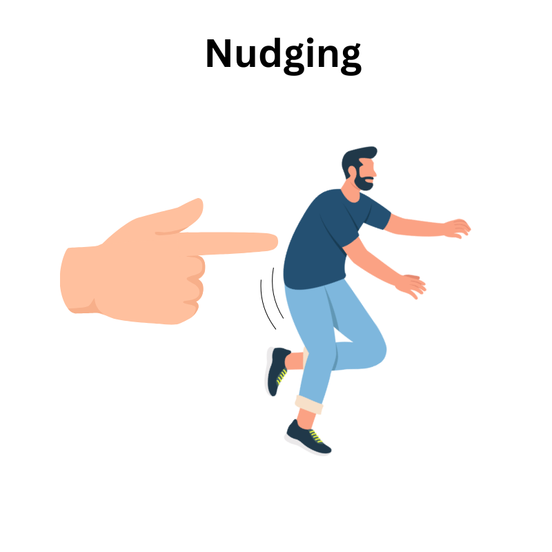
- A gentle policy intervention that steers individuals toward desirable behaviour without restricting their freedom of choice - NITI Ayog.
- WHY IS A NUDGE REQUIRED IN INDIA?
- Public service infrastructure is unused or misused:
- Toilets built at great expense are not used.
- New tuberculosis variants spread because patients do not complete the course of drugs prescribed by hospitals.
- Rash driving on road kills thousands of people every year.
- Parents do not immunise children even when it does not cost them anything. This shows how behavioural quirks lead to public policy failures. Hence, there is a need for behavioural public policy wherein behavioural research is integrated into public policy.
- Behavioural interventions can have the potential to increase the efficacy of social spending.
- Public policy is often focused on the problems of market failure or state failure. Far less attention is paid to the deeper problem of social failures.
- Thus, the focus and direction of nudges should be influenced by individuals’ ideas and concerns about their behaviour.
- The theory of nudge is also being developed, which uses micro cues, positive reinforcements and indirect suggestions as ways to influence the behaviour of individuals or groups.
- Nudges are small changes in the environment that are easy and inexpensive to implement. Several techniques exist for nudging, for example.
- Default option:
- It is the option that an individual automatically receives if they do nothing. People are more likely to choose a particular option if it is the default option, like a greater number of consumers chose renewable energy if it is made the default option.
- Social-proof heuristics:
- Refers to individuals' tendency to look at others' behaviour to help guide their behaviour. For example, if some people in a group tend to quit smoking, others also think to quit.
- The increasing salience of desired option:
- When an individual’s attention is drawn towards a particular option, that option will become more salient to the individual, and they will more likely choose that option.
- 17. CRITICISM OF NUDGE THEORY
- Behavioural sciences may design better social sector programs, but they are of limited use unless bigger challenges like rapid economic growth, poverty reduction and macroeconomic stability are addressed and solved effectively.
- It may fall prey to the paternalistic view that planners know better than citizens.
- Behaviour patterns vary in different states.
- Policy formulation based on one/certain behavioural approach may not go down well with all states.
- Their impact is short-term, and they don't lead to lasting changes.
- Nudges diminish the autonomy of the individual.
- Behavioural scientists have shown that people value loss avoidance more than gain acquisition. Hence, the ‘loss norm’ can be followed to induce people to take advantage of public policies crafted for them. (Loss norm = disadvantages due to non-following of public welfare policies.
- The government already uses choice interventions like subsidies and taxes to shape citizen behaviour. However, more institutional mechanisms are needed to advocate behavioural research to improve public policy design and deliver better outcomes for taxpayer money.
- CHAPTER 3 - APTITUDE & FOUNDATIONAL VALUES OF CIVIL SERVICES
- 1. APTITUDE
- “Aptitude is a natural or acquired ability or capacity to learn or to perform certain tasks effectively.” - American Psychological Association (APA Dictionary of Psychology)
- In 1988 Upamanyu Chatterjee, an IAS officer, wrote a novel titled ‘English, August’. This is a novel about a young recruit to IAS serving his first posting. In this novel, he says that most people in India do not identify their aptitude. In search of their career, they keep on trying and something clicks. I’m one of them and I became an IAS officer. This is very true when it comes to us in India.
- Aptitude comes from the word “Aptos” meaning ‘fitted for’. Aptitude is defined as a natural or inherent capacity to acquire a certain skill or ability in future through appropriate training.
- Aptitudes are innate special abilities that make an individual easily acquire knowledge and skill or perform certain activities or tasks. They are inborn characteristics that make you special and excel in an activity more than others.
- That is why someone can be gifted in music but can barely draw while another struggles to sing but is prolific in drawing and painting.
- So, an individual’s aptitudes determine whether he will be successful in a particular field or not. These differences also make a person satisfied and fulfilled as a mechanic while another is fulfilled as an actor. In addition, you can possess two or more aptitudes in different measures.
- TYPE OF APTITUDE
- Physical aptitude
- It means the physical characteristics for performing some tasks successfully. For example, Armed forces require a specific set of physical features, like height, strength etc.
- Mental aptitude
- It means a certain specific set of mental qualities needed to perform certain/particular tasks successfully. This is further characterized by general mental ability and value orientation. The former implies an ability to think rationally, while the latter also includes certain value-based behaviour, like the one guided by empathy, compassion, integrity, accountability, responsibility etc. Finally, although aptitudes are inborn, they can be improved with training. For instance, if you possess singing talent, attending a music school or voice training class can help transform your singing talent into a marketable skill.
- TYPE OF MENTAL APTITUDE
-
| DESCRIPTION | EXAMPLE |
|---|
| Numerical aptitudes Good at playing with numbers | Ramanujan, APJ Kalam |
| Language Aptitude Interest in learning a new or foreign language. | Diplomat, customer relationship manager, translator, and tour guide |
| Inductive Reasoning Interested in the investigation. | Detectives, scientists, psychologists, and philosophers. |
| Ideophobia Individuals who are full of ideas. | Content creators, writers, and entrepreneurs. |
| Analytical Reasoning Good at gathering and interpreting data from research findings. | Data analysts, thinkers people working in research organisations. |
| Auditory Aptitude The talent of singing and can learn to play instruments fast. | Sonu Nigam, Lata Mangeshkar, Bismillah Khan |
| Dexterities Those who are interested in the use of fingers and small tools to perform tasks. | Sculptor, engineer, surgeon. |
| Graphoria Interested in dealing with graphs/ writing skills | Event planner, secretary, administrator, project manager, |
| The ability to command attention while they speak is called the orator. | Salesperson, teacher, lecturer, motivational speaker, lawyer politician (Lincoln, Mandela, Martin Luther King Jr.) |
| Quite good with colours, and they know the best combination of painting or the best colour to combine for your house interior. | Fashion designer, Interior decorator, and Painter (MF Hussain, Raja Ravi Verma) |
| Foresight Ability to discern the future by making subjective predictions. | Employers |
| Spatial aptitude Ability to understand, analyse and retain the spatial relationship between objects and space. | Geographers, Astrologers. |
- Talent
- “Talent refers to the special natural ability or capacity of a person to excel in some field of activity.” - American Psychological Association (APA Dictionary of Psychology)
- 2. ATTITUDE VS APTITUDE
- Comparison Table
-
| Parameter of Comparison | Aptitude | Attitude |
|---|
| Definition | Aptitude is the ability of a person to acquire a specific skill. | Attitude is the set of beliefs, emotions and ideas. |
| Impact Centre | Aptitude is loosely associated with intelligence. | Attitude affects behaviour and personality. |
| Origin | Aptitude is an innate characteristic | Attitude is a result of experiences. |
| Nature | Aptitude is relatively rigid and does not change drastically | Attitude is fluid, it consistently changes. |
| Scale | It is a measure of competency; hence it is not relative. | It is usually good or bad, positive or negative. |
- 3. IMPORTANCE OF IDENTIFYING YOUR APTITUDE
- 1. It helps you to know the suitable career path for you.
- 2. It can help you to discover your strengths and weaknesses.
- 3. You can identify your hidden talents.
- 4. It helps you to know what abilities to be focused on.
- 5. It can help in unravelling your uniqueness.
- Aptitude for Civil Services
- Some experts believe that civil servants must have three kinds of aptitude: Intellectual, Emotional, and Moral. These aptitudes make the civil servant capable of acquiring professional values.
- Intellectual Aptitude would ensure that the respective civil servants would think rationally, act purposely and deal effectively with their environment. Thus, it can be regarded as a means-oriented aptitude.
- Emotional Aptitude would ensure his effective conduct with colleagues, subordinates and the public at large. Thus, it may be regarded as a behaviour-oriented aptitude.
- Moral Aptitude includes desirable values, such as justice, empathy, compassion etc. These are also called Foundational Values for Civil Services and would ensure that civil servants perform their duties not only efficiently but also effectively, upholding the public interest. Thus, moral aptitude may be regarded as end-oriented aptitude.
- 4. HOW TO IDENTIFY APTITUDE
- Aptitude tests help identify the aptitudes a person possesses. They can be conducted in two ways:
- I. Informal
- Identified by teachers, friends, or relatives, etc.
- Example:
- M. S. Dhoni’s teacher once observed him acting as a goalkeeper and realized that he had a natural aptitude for stopping the ball, which he encouraged in cricket.
- II. Formal
- 1. Watson Glaser Critical Thinking Test
- Highlights five categories:
- Assumptions, interpretations, deductions, inferences, and argument evaluation. It evaluates a person’s ability to reason critically and make subjective conclusions.
- 2. Verbal Reasoning Test
- Assesses the ability to comprehend written texts. Applicants answer questions based on passages to determine their capacity to interpret information accurately.
- 3. Numerical Reasoning Test
- Evaluates aptitude with numbers, including graphs, percentages, and fractions. Commonly used for accounting, economics, and programming roles.
- 4. Inductive Reasoning Test
- Involves studying patterns to predict the next logical step. Assesses logical reasoning and the ability to draw conclusions from existing information.
- 5. Situational Judgment Test
- Widely used in recruitment to evaluate practical decision-making and judgment skills in work-related scenarios involving colleagues, superiors, or clients.
- 6. Diagrammatic Test
- Assesses logical and analytical reasoning through sequences of activities or diagrams. Evaluates adaptability and quick learning.
- 7. Cognitive Test
- Measures general intelligence and problem-solving capabilities.
- 5. APTITUDE REALISATION
- Realising one’s talent requires three things –
- 1. Correct identification of aptitude
- 2. Resolve to pursue aptitude.
- 3. Socio-cultural and economic attitude.
- All three are important and even if two are present to a lesser degree but one is dominant then success can happen. E.g. – M.F. Hussain.
- Niti Aayog has come up with an Action Plan to achieve 50 Olympic Medals. The plan includes catching children young, based on aptitude, and giving them training. Relation between aptitude and other qualities.
- Aptitude:
- It helps us to learn things in the future.
- Ability:
- It is something we have learnt in present.
- Skill:
- It is something we have learnt in the past and have mastered
- APTITUDE & INTELLIGENCE
- Intelligence is the capacity of the individual to think rationally, act purposefully and deal effectively with his environment.
-
| Intelligence | Aptitude |
|---|
| • Only Mental | • Both Physical and Mental |
| • General, can be in any field | • Aptitude is specific to a particular area |
| • Can be both innate and natural | • Only innate |
- Aptitude and interest
- Interest is liking & having positive emotions towards anything regardless of skill or aptitude.
- 6. FOUNDATIONAL VALUES OF CIVIL SERVICES
- Why do we need foundational values?
- Values are indicators of a particular type of aptitude the value of objectivity shows the aptitude of the rational decision-maker. And civil services require a particular type of aptitude which can be tested through some values.
- A bureaucrat is directly accountable to citizen-customer. He must respond to the moral universe of the citizens. Thus, foundational values work as a guiding light.
- He has discretionary powers; therefore, he must be provided with guiding principles to prevent abuse of power.
- Nolan committee (UK-1996) listed seven foundational values:
- i. Leadership
- ii. Openness
- iii. Honesty
- iv. Accountability
- v. Selflessness
- vi. Integrity
- vii. Objectivity
- ADDITIONAL VALUES FOR CIVIL SERVANTS INCLUDE
- Commitment to principles enshrined in Constitution of India.
- Empathy and compassion for the vulnerable section of society.
- Adherence to the highest standards of probity, integrity and conduct.
- Commitment to citizens concerned and the public good.
- Impartiality and non-partisanship.
- Dedication to public service.
- 7. OBJECTIVITY
-
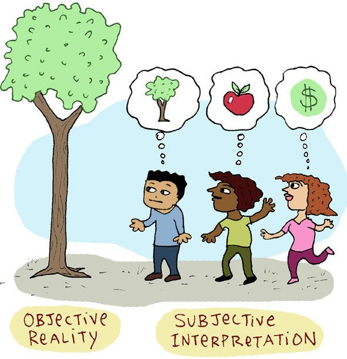
- Objectivity refers to the quality of being unbiased, impartial, and based on facts rather than personal feelings, opinions, or prejudices. Objectivity means looking at things as they are, while subjectivity means looking at things as we are. Objectivity is the tendency to base decisions on rationality, facts, codes and laws.
- Max Weber talked about legal-rational bureaucracy. A bureaucracy’s claim to legitimacy is based on its legal structure and rational behaviour. Decisions are legal if authority is exercised by a system of rules and procedures that are the same for everyone. For a civil servant to be rational and legal it is important to be objective.
- Objectivity creates legitimacy of bureaucracy.
- Objectivity refers to the ability to judge fairly, without bias or external influence. It is the quality of being true even outside of a subject, individual biases, interpretations and feelings.
- An objective civil servant is expected to provide information and advice to all the concerned people based on the evidence and accurately present the options and facts.
- He takes decisions based on merit and considers expert and professional advice.
- OBJECTIVITY IN COMPLEX SITUATIONS
- It is neither possible and not desirable to always remain objective. Even in our Constitution. There are affirmative actions shown in favour of people, for example, Positive discrimination towards SC, ST, Women, religious and linguistic minorities.
- Executive decisions are mostly based on subjective analysis and diverse inputs, for example the issues of:
- FDI in retail
- Subsidies
- Reservation policy
- Many theories now have discarded the idea of objectivity. As per these theories, if a person is sensitive, intelligent, and smart, it is very difficult to be objective as his personal biases and interpretations will always be reflected in his/her judgements.
- Objectivity is often regarded as clerical objectivity. In the position of decision-making, objectivity is regarded as a robotic sin. E.g.- If the same crime is committed by two people, then it will not be fair to fine both poor and rich equally.
- Objectivity is a mean value to achieve the end value of equality.
- Both objectivity and fairness have the same goal to achieve equality but in unequal circumstances, fairness will always prevail over objectivity.
- Objectivity and empathy are at times in contradiction. While Empathy is targeted towards the individuals, while objectivity looks at the masses. So, in case a judge gives more weightage to empathy over “objectivity”, she/he may give lenient punishment to a criminal. Which in the long run the long run, it’ll hurt the masses. Empathy is targeted towards in individual, perhaps the best example is Alan Kurdi, in 2015 the Syrian refugees flooding Turkey for many months, but only after Alan Kurdi drowned and images appear in mainstream media, all EU nations became attentive. Because of the empathy of people towards an “individual child.”
- Factors that can affect the objectivity
- 1. Stereotypes:
- A stereotype is a widely held but oversimplified and fixed idea or image about a particular group of people or things. It involves generalizing traits, behaviours, or characteristics of a few individuals to an entire group — often without considering individual differences.
- Stereotypes can be positive or negative, but both limit understanding and fairness.
- 2. Halo effect:
- Judging a person by his any one of his traits.
- 3. Primacy effect:
- Decide things by just first impression.
- 4. Recency effect:
- Determining things based on recent impressions about the things without considering their history.
- 5. Seeing oneself in others:
- Seeing others as yourself.
- Necessity of objectivity
- To ensure that judgements are not based on pure emotions.
- To ensure equal treatment toward all subjects.
- To prevent misuse of discretion.
- To resolve an ethical dilemma.
- To ensure effective utilisation of public resource.
- To ensure the rule of law.
- To cultivate other related values like integrity, and transparency.
- To prevent unnecessary intervention by seniors.
- STEPS FOR INCULCATION OF OBJECTIVITY
- Training:
- Training imparts the right guidance to people who are delivering the services. This also ensures that public servants know what needs to be done.
- Critical thinking:
- ASI began gold hunting in the Unnao district of Uttar Pradesh, on the order of a Minister who believed a godman, they showed a lack of critical thinking by blindly following the orders of higher authority.
- Right to review decision:
- Within Judicial/ Administrative procedure, a mechanism for the appellate board E.g. In matters of taxation, land acquisition etc.
- Right to be heard:
- Often officers don’t hear the complaint or opinions of people properly and just do the things that are in their minds. Hence new schemes should have ‘social audit /public hearing components.
- Information management:
- If you do not have authentic information /statistics, you can’t take objective decisions. E.g., sustainable development goals (SDG) have 17 goals and 169 targets. Previously in Millennium development goals (MDG), we had 18 indicators, yet we lacked proper statistical databases to compare performance. A lack of data prevents us from finding the faults and fixing them.
- Transparency:
- Because of Right to Information Act. A bureaucrat will think twice before taking subjective/discretionary decisions, fearing that they will have to answer it if someone files an RTI.
- Subjectivity
- Subjectivity refers to the quality of being influenced by personal feelings, opinions, experiences, or perspectives, rather than by external facts or objective evidence.
- 8. EMPATHY & COMPASSION TOWARDS WEAKER SECTION
- There are four related terms:
- 1. Apathy – Indifference
- Apathy is the state of indifference or the state in which no emotion such as concern; care, motivation etc are shown. (For example, ignoring road accident after seeing one.)
- 2. Sympathy – Kindness
- Sympathy is an instinctive reaction to kindness that is momentary in nature. It is spontaneous and a real understanding of the problem is not there. (Noticing road accident and saying may god save the victim.)
- 3. Empathy – Experience
- Empathy involves putting oneself in another man’s place to understand his pain and sorrow. It has both cognitive and emotional aspects. Understanding of the nature & intensity of the problem is there. Empathy is more sustainable than sympathy. Being empathetic involves a deeper relationship than being sympathetic. Empathy is a stronger attitude than sympathy, hence it’s a better indicator of behaviour. (Crying after seeing a road accident and asking people to help because you are feeling the pain/emotions of the victim).
- 4. Compassion – Action
- Compassion involves not only understanding but also a desire to help alleviate the suffering of other persons. The emphasis here is on the action. Having compassion for others requires one to put the other person first, imagine what the person is going through and then consider ways that can Investment people feel better. Compassion is an even better predictor of behaviour. E.g.– Compassion is what made Mother Teresa left her motherland to serve selflessly in Kolkata. Taking the above example forward, calling ambulance and admitting victim of road accident in hospital is example of compassion.
-
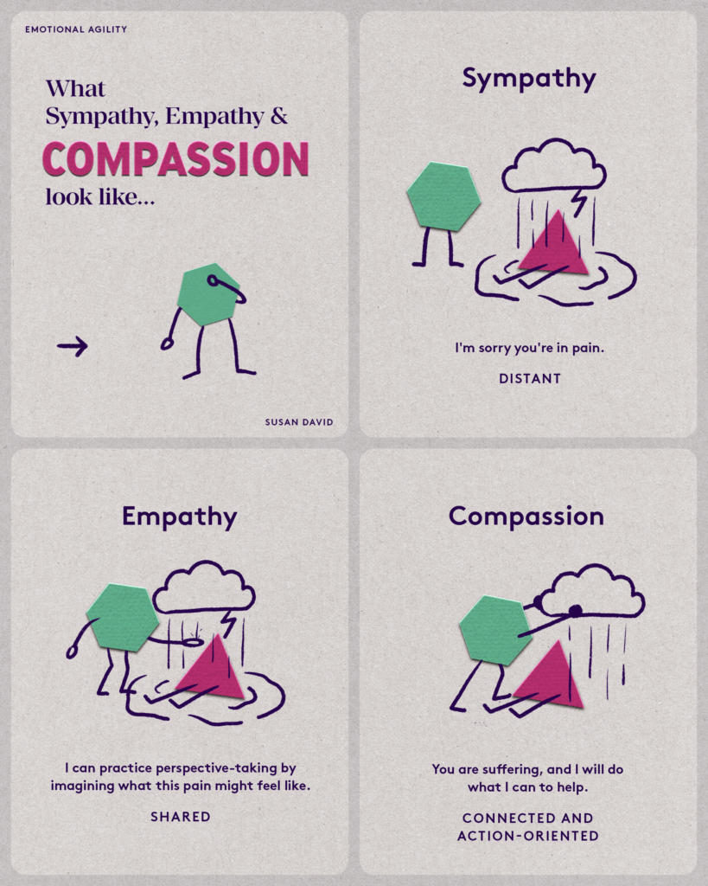
-
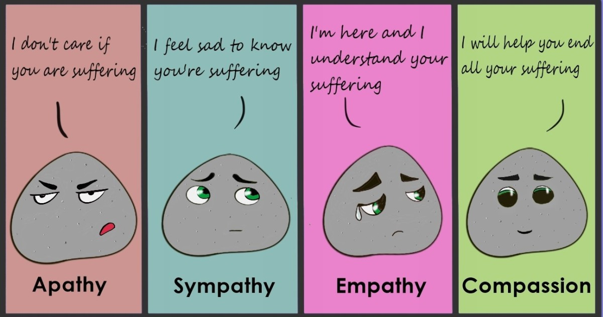
- EMPATHY AND COMPASSION ARE REQUIRED BECAUSE
- i. To change bureaucracy with a colonial mindset Indian civil service (ICS) attracted intelligence and talent from British youth, yet they failed to look after the interest of Indians, why? They were intelligent but lacked ’empathy.’ at the same time, the British civil service manual/code of conduct lacked any directives in that regard. For ICS officers, public services meant ensuring the administrative, economic and strategic interests of the empire. Our bureaucrats have inherited this colonial legacy- hence we must make them empathize with the plight of the common man.
- ii. Empathetic officers are the need of the hour in modern-day administration targeted towards inclusive growth. Understanding problems and suffering becomes more enduring if we have empathy towards people in distress. E.g. – Alex Paul Menon, Harsh Mander etc.
- iii. In developing countries there is always a greater chance of disconnect between bureaucracy and people as bureaucrats are vulnerable to getting trapped in the distancing confines of the power elites. This disconnect that exists between the policymaker and the people who withstand the worst of policies can only be removed through empathy and compassion.
- iv. Citizens do not approach the administration due to apathetic behaviour. Hence empathy in bureaucrats can motivate common people to reach out to public offices.
- HOW CAN WE CULTIVATE EMPATHY AND COMPASSION?
- Art, literature, and cinema:
- Help us inculcate empathy. E.g., Satyajit Ray’s “Pather Panchali” realistically portrays poverty and rural India.
- Common holidays:
- On Diwali, Eid and Christmas, people of all religions are given public holidays. It encourages them to participate in each other’s festivals.
- Encourage Perspective taking:
- Role-playing games, and putting yourself in the shoes of other people.
- Visit slums and old age homes:
- IAS probationers are sent to “Bharat Darshan” for a similar reason- to understand the diversity of India and grow compassion towards others.
- 9. TOLERANCE
- Tolerance refers to a permissive attitude towards those whose opinions practices, race, religion, nationality etc. differ from one’s own. In simple words, tolerance is an act or capacity to endure the diversity of views and practices in our environment.
- WHY TOLERANCE?
- Tolerance upholds the human right to a dignified life and the rule of law. It leads to harmony and peace in a pluralistic society in which diversity is there in many multifaceted forms.
- If we take a larger view, then any form of injustice inflicted on others reflects intolerance. Intolerance is antagonistic to free thinking and promotes violence and injustice. It’s the reflection of narrow-mindedness and is against civilised living. It is detrimental to social progress and welfare.
- Other reasons are:
- Correcting one’s belief.
- To encourage diversity.
- Synthesis of ideas.
- WHAT ELSE IS REQUIRED FOR TOLERANCE?
- The other values of rationality, impartiality and objectivity also require tolerance towards society as a pre-condition.
- Tolerance is a basic value for other values
- Empathy and compassion are not possible without tolerance.
- That is why-
- Plato has called temperance as one of the four cardinal virtues.
- Aristotle has talked about the ‘golden mean ‘of virtues.
- Voltaire - I disagree with what you say but I’ll defend to the death your right to say it.
- Example of tolerance
- Former PM Jawaharlal Nehru was very tolerant of criticism. After the Indo-China war, his ministers criticised him in the parliament. He listened to them and acknowledged their criticism.
- IMPORTANCE OF TOLERANCE FOR CIVIL SERVANTS
- To be impartial, objective and non-partisan.
- A civil servant cannot treat everyone equally if he is not tolerant.
- To make a fair decision.
- It is a constitutional obligation of civil servants. Tolerance is inherent in secularism.
- Tolerance is important to develop social capital.
- Article-19 - Civil servants must show tolerance not only for different practices but also for different viewpoints.
- To do service even in case of value conflict.
- 10. INTEGRITY
-
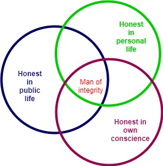
- Integrity has been derived from the word integer.
- "Integrity means adherence to moral and ethical principles; soundness of moral character; honesty in public life and official conduct." - Central Vigilance Commission (CVC), Government of India
- It means unity, coherence, a state of undividedness, non-selectiveness and a non-negotiable state of values.
- TYPES OF INTEGRITY
- 1. INTELLECTUAL INTEGRITY
- Intellectual integrity means to be consistent and true to one is thinking and to hold oneself to the same standards one expects others to meet. It also means to honestly admit discrepancies and inconsistencies in one’s thoughts and actions and to be able to identify inconsistencies in one’s thinking.
- 2. MORAL INTEGRITY
- Moral integrity means consistency and honesty in the standards used for judging others as well as yourself as right or wrong.
- 3. PERSONAL INTEGRITY
- Personal integrity means being honest and consistent with thought, speech and action. It refers to the quality of eliminating the gap between what we think, what we say and what we do.
- Integrity is the integration of ideals, convictions, standards, beliefs and behaviour.
- People with integrity have an internal locus of control (self-governed). People with integrity are controlled by their conscience rather than what is happening in the environment.
- 4. PROFESSIONAL INTEGRITY
- Every profession deals with integrity in its context. A person in a profession shows his integrity by acting in agreement with the relevant standards, norms and values of that profession.
- INTEGRITY IN CIVIL SERVICES
- According to the 2nd ARC, Integrity means that civil servants should be guided solely by the public interest in their official decision-making and not by any financial or other consideration in respect of themselves, their families or their friends.
- Importance of integrity for civil servants
- Integrity integrates morality with behaviour.
- Integrity is doing the right thing even when nobody is watching so it will ensure virtuous behaviour.
- Integrity is non-negotiable and non-selective so it promotes role modelling-type behaviour. A.P.J. Abdul Kalam: when he was the President, he invited his family for two days. The president bore all expenses himself even though as per law President’s house would have taken the expense.
- They deal with public resources.
- They deal with a selection of beneficiaries.
- They work as adjudicating authority in many cases.
- They are the policymakers.
- They are central to ethics of the whole administration.
- INTEGRITY AND EFFICIENCY
- For efficiency, integrity is a must but is not sufficient.
- INTEGRITY AND CORRUPTION
- The basic meaning of corruption is moral impurity. A person who has moral impurity cannot go for moral analysis. If the moral analysis is not there, integrity is not there.
- MEASURES TAKEN TO PROMOTE INTEGRITY
- Separate column of integrity in ACR.
- In the CVC selection criterion, one integrity clause has been added that a person should be of unquestionable integrity.
- IMF has Integrity Hotline for handling allegations against staff misconduct for internal and external sources.
- Integrity pacts – a tool developed by Transparency International. It was used in the AgustaWestland deal.
- Integrity survey for honest officers.
- Integrity recognition certificate by the government.
- Reasons for decline in integrity
- Historical causes, colonial rule and abuse of power.
- Changing values and desire.
- Economic cause.
- Lack of strong public opinion against corruption.
- Complicated and cumbersome procedures.
- Inadequate laws to deal with corruption.
- Undue protection is given to civil servants.
- Suggestions to improve the integrity
- Fill the gap between position and remuneration.
- Simplify the procedures.
- Create healthy public opinion against corruption.
- 11. DEDICATION TO PUBLIC SERVICE
- Dedication is the highest form of commitment. Dedication is a commitment with passion, love and perseverance.
- Commitment sometimes suggests that one is bound or obligated because he/she has made a pledge or a promise through a formal agreement.
- However, in the case of dedication, a person is inspired by the sense of duty and his ideals of the state or society.
- Dedication is the quality of being able to give or apply one’s time, attention or self entirely to a particular activity cause or person.
- HOW TO ACHIEVE DEDICATION
- Dedication is gained through both commitment and perseverance i.e., steady persistence shown in achieving a particular goal despite difficulties and discouragement.
- WHY DEDICATION IS IMPORTANT IN PUBLIC SERVICE
- Motivation:
- Dedication makes a difference in an individual’s motivation in achieving his goals and the length of measures he will take just to achieve them. A dedicated public officer is motivated and happy by simply doing the public service only. He enjoys the journey and the work itself motivates him.
- Development:
- To raise India from the dark ages of colonialism, and 200 years of exploitation, extra effort is required. The extra effort will only come when dedication is there and cannot come with contract-based commitment.
- Hostile conditions:
- May be due to political atmosphere, internal staff, punishment posting, local people etc. Survival will become difficult without dedication.
- Scope of corruption:
- Internal control against corruption is not possible without dedication. Dedication to public service involves integrating oneself with the idea of public interest, a single-minded relentless pursuit of a public good is required for public service.
- Examples of dedicated people:
- Armstrong Pame (Civil servant who built people’s road by the mobilisation of local resources and manpower)
- Ms. Divya Devrajan learnt Gondi to serve people efficiently (Civil servant)
- APJ Abul Kalam (Scientist, inspiration and innovator)
- Baba Amte (Social Activist)
- Vikram Sarabhai (Space and Science)
- Homi Bhabha (Nuclear science)
- MS Swaminathan (Green revolution in India)
- E. Sreedharan (Metro man)
- Dashrath Manjhi (Mountain Man)
- 12. IMPARTIALITY
- Impartiality is unbiased behaviour. Decisions are taken on objective criteria rather than any bias or prejudice.
- RELATED TERMS
- Biasness is the inclination of some at the cost of others.
- Partiality is the result of biased attitude. While biases are our product of our attitude, partiality is the resultant public conduct. Partiality is behaviour and biases are attitudes.
- Prejudice is being pre-judgemental.
- POLITICAL IMPARTIALITY
- Political impartiality holds that a civil servant will serve the government to the best of his ability, no matter what his own political beliefs are. He will act in a way that deserves and retains the confidence of ministers. It involves serving the position rather than the person occupying it.
- The civil servants will not be biased or will not carry any prejudice towards a particular politician. He will give the same treatment to all kinds of politicians irrespective of his ideology.
- Impartiality also means that the civil servant will comply with any restrictions that have been laid down upon him. E.g.:
- He cannot criticize the decision and views of the ministers. On the other hand, he must explain and implement ministers’ policies with objectivity no matter what his personal views are.
- A civil servant cannot disclose the advice that he has given to the ministers. In 2013 code of conduct for ministers (given by the Ministry of Home Affairs) was amended (Section 2) on the recommendation of the 2nd ARC: Ministers shall uphold the political impartiality of civil services and should not pressurize civil Servant to act in any way which would conflict the duties and responsibilities of the civil servant.
- PUBLIC IMPARTIALITY
- Equal treatment toward all people. Acceptance of bureaucracy is due to public impartiality. Public impartiality is a constitutional obligation (Article 14).
- In unequal circumstances, impartiality will be replaced by equity and fairness. E.g. –
- Separate line for old age and women.
- Reservation on social and educational backwardness.
- IMPORTANCE OF IMPARTIALITY
- i. Acceptance and authority of bureaucracy.
- ii. Increases credibility and trustworthiness.
- iii. It enables a civil servant to ask an appropriate question to anyone E.g.: interrogation of political authorities.
- iv. It helps the civil servant to maintain the queue. v. Political interference can be resisted on this principle.
- v. Fulfilling all interests equitably.
- vi. It is by constitutional provisions of Articles 14, 15.
- vii. It is by professional ethics.
- viii. It encourages ethical work culture.
- Enablers of impartiality/disablers of partiality:
- Interest analysis
- Bias free
- Decision validation
- Decision support system
- 13. NON-PARTISANSHIP
- Not taking any active participation in the politics of the day. There might be changes in political leadership, but the civil servant will be unfailingly offering technical advice to the political master keeping himself aloof from the politics of the day.
- Political partiality is passive in nature while political partisanship is active in nature.
- Partiality does not automatically lead to partisan behaviour.
- POLITICS-ADMINISTRATION DICHOTOMY
- Civil servants and politicians have different genesis, both having distinct characteristics.
- Politicians are non-professional, immature, temporary, partisan etc. whereas civil servants are non-partisan, professional and permanent in nature.
- The workplace of politicians is parliament/assembly where civil servants the civil service secretariat.
- The function of politicians is to formulate the policy and the function of bureaucrats is to implement the policy.
- Therefore, the two must remain separate and not interfere with each other’s work. Non-partisanship is based on the Politics Administration dichotomy and its objective is to maintain harmony between politicians and civil servants which may lead to good governance.
- CONSEQUENCE OF NON-PARTISANSHIP
- i. Public confidence in the non-political character of civil service.
- ii. Confidence of ministers from any political party in the loyalty of civil servants.
- iii. High morale of civil servants as promotion, transfer and other service conditions are based on merit and not on political considerations. S.C. in 2013 directed the Centre and States to establish Civil Service Boards to manage transfers and promotions of bureaucrats. It also said that civil servants should not act on verbal orders and also suggested a fixed tenure for them.
- BREACH OF POLITICAL IMPARTIALITY AND NON-PARTISANSHIP
- Scams:
- Take place with the nexus of politicians and civil servants; 2G scam, Commonwealth scam, Coal gate, Vyapam scam, UP medical scam.
- Riots:
- Anti Sikh riots of 1984.
- Many times, government chooses bureaucrats on the caste line.
- There are certain “favourite” civil servants of every dispensation. This has led to the emergence of personal affiliations between the ministers and the civil servants leading to the politicisation of civil services. Politicisation has further led to corruption and the absence of public service which is central to any administrative system.
- It has led to the frequent use of transfers, suspension, and disciplinary powers by ministers against civil servants who do not act in their favour. It has resulted in factionalism, group rivalry and casteism among ministers and civil servants.
- Lack of confidence between politician and Civil Servant. Public trust is also lost leading to anarchy.
- 14. CIVIL SERVICES NEUTRALITY
- Neutrality means that a civil servant will remain politically impartial and non-partisan throughout his career. Neutrality means a kind of political sterilization i.e., bureaucracy remains unaffected by the changes in the flow of politics.
- CONDUCT RULES FOR NEUTRALITY
- Officers must not take part in politics.
- He must not give election fund/ assistance to any political party.
- He can vote, but must not tell his preference to other people.
- He must not display any election symbols on his person, vehicle or home. He must not participate in rallies, dharna-pradarshan, and demonstrations without government permission.
- CRITICISM OF BUREAUCRATIC NEUTRALITY
- Idea of neutral bureaucracy has been discarded by many scholars and administrative scientists. Neutrality is a robotic sin. Sometimes they act as an excuse for inactivity and timidity.
- 15. ACCOUNTABILITY & RESPONSIBILITY
- Accountability means making public officials answerable for their behaviour and responses to the entity from which they derive their authority. Holders of public office are accountable for their decisions and actions and must submit themselves to the scrutiny necessary to ensure this. Accountability also means establishing criteria to measure the performance of public officials, as well as oversight mechanisms to ensure that standards are met.
- In public services, it is a legal concept, as its contours are fixed by the law, and ideally, it includes three things:
- 1. Answerability:
- It means one is legally bound to give answers concerning his commissions, and omissions.
- 2. Enforceability:
- It means the respective civil servant is liable to be punished according to the law if he is found to be guilty of not discharging his official duties.
- 3. Grievance redressal:
- It means the aggrieved person should have a sufficient institutional mechanism to be heard and resolve his grievances.
- How it can be ensured?
- INSTITUTIONS AND MECHANISMS THAT PROMOTE ACCOUNTABILITY
-
| Outside the State (Vertical Accountability) |
• To the people through elections
• Through RTI Act to citizens
|
High effectiveness |
• Citizens' oversight committees
• Civil society / watchdog bodies
• Media
|
Low effectiveness |
• Service delivery surveys
• Citizens' charters
|
Low to medium effectiveness |
| Within the State (Horizontal Accountability) |
| External (Outside the Executive) |
Internal (Within the Executive) |
• Parliament
• Judiciary
• Lokayukta
• CAG (Comptroller and Auditor General)
• CVC (Central Vigilance Commission)
|
• Superior officers
1. Rewards / punishments
2. Disciplinary procedures
3. Performance Management System
• CBI / Police / Vigilance
• Internal Audit
• Grievance Redressal Mechanisms
|
- Why is accountability needed?
- 1. It prevents the public services from turning into tyrants as they are held answerable for their deeds and misdeeds.
- 2. Avoids conflict of interests-Setting accountability demarcates the area of one’s actions where he or she is required to act.
- 3. The first and last beneficiary of public service is the public, as the public services are required to act in the interest of the public and they are answerable for their actions.
- 4. Promotes justice, equality, and egalitarianism because public servants are required to realize these constitutional ideals and at the same time, they are answerable for their actions.
- 5. It brings legitimacy to public services- Accountability promotes loyalty to service as actions are calculated and keep a check on arbitrary and ill-conceived actions and policies.
- 6. Be it fear of legal consequences or an outcome of one’s morality, owing accountability for their actions motivates public servants to discharge their duty with honesty, integrity and efficiency.
- Responsibility
- It means accountability to oneself, i.e., when the accountability turns inward. It is a moral concept, where a person feels answerable to oneself for all his actions, even if it is not covered by any law.
- It is more enduring than accountability, because it is based on ethical reasoning, and the person would always do the right thing, even if nobody is there to watch his action, as he holds himself answerable to himself. Here the person takes ownership of one’s actions and decisions.
- Though, these terms are used interchangeably, there is a subtle difference between the two. Accountability makes the person accountable for the consequences of the actions or decisions made by him/her. As against this, consequences are not necessarily attached to the responsibility. Further, accountability requires a person to be liable and answerable for the things, he/she does. Conversely, responsibility expects a person to be reliable to complete the tasks assigned to him. Responsibility is said to be attached to ethical maturity.
- CHAPTER 4 - EMOTIONAL INTELLIGENCE
- 1. WHAT ARE EMOTIONS AND THEIR STRUCTURE?
- In their book "Discovering Psychology," authors Don Hockenbury and Sandra E. Hockenbury suggest that emotion is a complex psychological state that involves three distinct components:
- I. Subjective experience:
- Two people can be angry in two different ways in same situation.
- II. Physiological response:
- Sweating, increase in heartbeats.
- III. Behavioral or expressive response:
- Screaming, freezing, laughing.
- 2. TYPES OF EMOTIONS
- Psychologist Paul Ekman suggested that six basic emotions are universal throughout human cultures:
- I. Fear
- II. Disgust
- III. Anger
- IV. Surprise
- V. Happiness and
- VI. Sadness.
- But many other emotions can be divided into positive or negative
- Positive emotions include
- Confidence
- Calmness
- Poise
- Enthusiasm
- Exhilaration
- Contentment
- Negative emotions include
- Depression
- Frustration
- Anxiety
- Ekman expanded his list to include several other basic emotions, including embarrassment, excitement, contempt, shame, pride, satisfaction, and amusement.
- 3. SIMILAR TERMS
- Feeling
- It denotes a partly mental, partly physical response marked by pleasure, pain, attraction, or repulsion; it may suggest the mere existence of a response but imply nothing about its nature or intensity of it. Feelings are influenced by our perception of the situation, which is why the same emotion can trigger different feelings among people experiencing it.
- Mood
- A mood can be described as a temporary emotional state. Sometimes moods are caused by clear reasons—you might feel everything is going your way this week, so you're in a happy mood. But in many cases, it can be difficult to identify the specific cause of a mood. For example, you might find yourself feeling gloomy for several days without any clear, identifiable reason.
- Affection
- This applies to feelings that are also inclinations or likings which is more than friendship or goodwill.
- Sentiment
- Often implies an emotion inspired by an idea. feminist sentiments, sentiments of conservatives.
- Passion
- When strong motivation is coupled with powerful and controlling emotion, it leads to passion.
- How Emotion Operates?
-
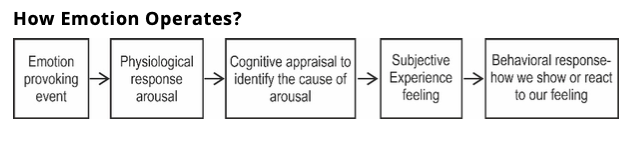
- 4. FUNCTIONS OF EMOTIONS
- 1. They can motivate us to act. E.g. charity
- 2. Can help in improving/ reducing performance:
- Working harder for the next assignment after getting negative results. It is proved by Yerkes Dodson Curve:
-
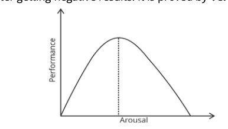
- 3. They can help us to survive, strive, or avoid danger:
- Ambedkar, Gandhi, Tulsidas, Kabir.
- 4. They can help us in improved decision making:
- Surgical strike after Pulwama Attack.
- 5. They can help us in understanding self and others:
- Showing emotional support to a friend who has lost a family member.
- 5. INTELLIGENCE
- “Intelligence is the global capacity of an individual to act purposefully, to think rationally, and to deal effectively with the environment.” — David Wechsler (1944), APA Dictionary of Psychology
- OR
- In other words, it is the mental quality that consists of the ability to learn from experience, adapt to new situations, understand and handle abstract concepts, and use knowledge to manipulate one’s environment.
- OR
- Intelligence has been defined as higher-level abilities (such as abstract reasoning, mental representation, problem-solving, and decision-making), the ability to learn, emotional knowledge, creativity, and adaptation to meet the demands of the environment effectively.
- It can be innate or acquired.
- Utility of intelligence:
- The most important use of intelligence is in adaptation to one’s environment. Effective adaptation involves several cognitive processes, such as perception, learning, memory, reasoning, and problem-solving.
- Types of intelligence
- Linguistic Intelligence:
- People who develop linguistic intelligence tend to demonstrate a greater ability to express themselves well both verbally and in writing.
- Logic Intelligence:
- People with sound logical intelligence can manage Maths and logic with ease.
- Kinaesthetic Intelligence:
- Kinaesthetic Intelligence relates to the ease of bodily expression. This kind of person has a great sense of space, distance, depth and size. With greater control of the body, this person can perform complex movements with precision and ease.
- Spatial Intelligence:
- Those who have heightened spatial intelligence can create, imagine and draw 2D and 3D images. Professionals in gaming, architecture, multimedia and aerospace normally display a high level of spatial intelligence.
- Musical Intelligence:
- Musical Intelligence is a rare kind of intelligence. People with this profile can listen to sound and music and identify different patterns and notes with ease.
- Interpersonal Intelligence:
- People who display Interpersonal intelligence are practical and exhibit a great sense of responsibility towards others. They are calm in their ways, they know how to listen and speak but above all, they know how to use their knowledge and power to influence people. People who are acknowledged as born leaders are usually the ones known to possess Interpersonal Intelligence. Someone with Interpersonal Intelligence can easily identify qualities in others and know how to bring those qualities.
- Intrapersonal Intelligence:
- Intrapersonal Intelligence is a characteristic of those who are deeply connected with themselves. This type of person is usually more reserved but at the same time commands great admiration from their peers. Among each of the seven types of intelligence, intrapersonal intelligence is considered the rarest.
- Triarchic Theory of Intelligence
- Later, Robert Sternberg, of Tufts University, put forward his Triarchic Theory of Intelligence, which argued that previous definitions of intelligence are too narrow because they are based solely on intelligence that can be assessed in IQ tests.
- Sternberg proposed that intelligence is not a single unitary ability measured merely by IQ tests, but a combination of three interrelated components that together define human adaptability and effectiveness. According to him, types of intelligence are broken down into three subsets:
- Analytic
- Creative
- Practical
- He also argued that intelligence tests were wrong to ignore creativity, and there are always other important characteristics like cognitive processes, performance components, planning and decision-making skills and so on.
- Key functions in different aspects of the Tri-archaic theory of Intelligence:
- 1. Componential / Analytical Intelligence
- Concerned with problem-solving, reasoning, and academic abilities.
- Reflects what is traditionally measured in IQ tests — the ability to analyze, evaluate, and compare information logically.
- People with high analytical intelligence excel in abstract thinking, evaluation, and theoretical understanding.
- Examples:
- A civil servant analyzing the pros and cons of a public policy before implementation.
- 2. Experiential / Creative Intelligence
- The capacity to generate novel ideas and handle new or unfamiliar situations.
- Involves insight, imagination, and innovation — applying existing knowledge creatively to new contexts.
- This intelligence explains how individuals learn from experience and adapt strategies when confronted with novelty.
- Examples:
- An IAS officer designing an innovative e-governance platform to improve service delivery.
- 3. Practical / Contextual Intelligence
- The ability to apply knowledge to real-life situations and achieve practical goals.
- Often described as “street smarts” — knowing how to adapt to, shape, or select environments to suit one’s needs.
- It reflects contextual adaptability, social awareness, and pragmatic judgment.
- Examples:
- A district magistrate resolving community tensions through dialogue rather than coercion.
- The Social Aspect of Intelligence
- Social Intelligence (SI) is the ability to get along well with others and to get them to cooperate with you. It is also referred to as "people skills."
- Social intelligence is a person’s competence to understand his or her environment optimally and react appropriately for socially successful conduct.
- Developing Social Intelligence
- Since SI is a combination of skills expressed through learned behaviour, it can be developed by assessing the impact of one's behaviour on others.
- Relation Between Emotions and Intelligence
- 1. Traditional Perspective:
- The traditional notion of intelligence as logical or mathematical ability invariably reduces it to cognitive ability. Cognition refers to processes such as memory, attention, language, problem-solving, and planning. Many cognitive processes often involve so-called controlled processes, such as when the pursuit of a goal (e.g., maintaining information in mind like retaining some facts) needs to be protected from interference (e.g., a distracting stimulus like a nagging noise).
- Traditionally, it was believed that emotion, being non-cognitive, cannot facilitate cognitive processes. It was believed that emotions were counter to cognitive tasks because they are intense feelings. Thus, the earlier notion was either of no relation between emotion and intelligence or negative relation. For example, when we are experiencing negative emotions, like anger or depression, then it becomes very difficult to perform a constructive task, like solving a puzzle or making good decisions.
- 2. Emotional Intelligence- Integration of Emotions and Intelligence
- The term was coined by two researchers – Peter Salovey and John Mayer in 1990 they defined EI as the ability to monitor one’s own and other people’s emotions, to discriminate between different feelings and label them appropriately, and to use emotional information to guide thinking and behaviour. Simply speaking, it is the ability to channelize emotions for constructive purposes.
- Emotional intelligence refers to ‘the ability to identify, understand, and manage emotions of oneself and that of others.
- Emotional Quotient (EQ) is a measure of one’s EI i.e., through a standardized test, one’s awareness of emotions concerning self and others can be known.
- But this term got popular in 1996 from Daniel Goleman’s book ‘Emotional Intelligence: Why It Can Matter More Than IQ’.
- 6. COMPONENTS/FRAMEWORK OF EI
- There are three Models of EI which identify different components of EI
- In brief:
- a. Ability model
- b. Mixed model
- c. Trait model
- a. ABILITY MODEL
- Mayer and Salovey introduced this concept as a challenge to the traditional notion of intelligence as a monolithic ability i.e., only focused on cognitive ability, and to the thinkers who held emotions as obstructive to cognitive activity. EI includes intra- and inter-personal intelligence, i.e., the ability to know oneself and others, in terms of abilities, and current emotional state.
- Perceiving emotions:
- Seeing emotions in a particular way.
- Understanding emotions:
- Accepting emotions as they are.
- Management of emotions:
- Regulation of emotions (just like an accelerator)
- The utilization of emotions:
- Using emotional arousal to achieve the intended target.
- b. MIXED MODEL OF EI (AS GIVEN BY DANIEL GOLEMAN)
-
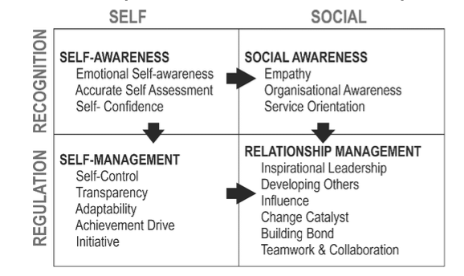
- i. SELF-AWARENESS:
- Ability to understand the variety and intensity of one’s own emotions. People with self-awareness understand their emotions and don’t let their feelings rule them. They are also willing to take an honest look at themselves. Example: Leaving of bodily pleasures by Buddha, Gandhi.
- Techniques to become self-aware:
- Introspection:
- Examination of one’s conscious thoughts and feelings.
- Emotional literacy:
- Knowing about a different kind of emotion.
- Meta-cognition:
- Introspection of our thinking process if our thinking process is rational and objective or not. Talking to trusted friends, Regular feedback at the workplace, Sensitivity training
- ii. SELF-REGULATION/MANAGEMENT- This involves:
- Self-control:
- Managing one’s disruptive impulses.
- Adaptability:
- Handling change with flexibility.
- Anybody can become angry, that is easy; but to be angry with the right person, and to the right degree, and at the right time, and for the right purpose, and in the right way, that is not within everybody’s power, that is not easy." —Aristotle
- Techniques to regulate emotion:
- Engaging one’s senses:
- Listening to music, going to the gym, reverse-counting.
- Yoga and meditation:
- Training the mind to connect with inner selves
- Laughing therapy
- Use of humour
- Feel energized, not angry:
- Use what others call "anger" to help feel energized to take productive action.
- Avoid people who invalidate you. While this is not always possible, at least try to spend less time with them, or try not to let them have psychological power over you.
- Internal Motivation:
- It includes one’s drive to improve and achieve commitment to one’s goals, initiative, or readiness to act on opportunities, and optimism and resilience.
- Self-motivation is made up of self-drive, commitment, initiative, optimism, passion, achievement orientation, and the ability to delay gratification.
- Steps to stay motivated:
- Defining one’s goal
- Having a clear understanding of the ideas
- Eliminate distractions
- Strive for possibilities
- iii. SOCIAL AWARENESS- It includes:
- Service orientation:
- Anticipating, recognizing, and meeting other people’s needs.
- Developing others:
- Understanding the needs of people to progress and cultivating their abilities.
- Understanding opportunities through diverse people.
- Steps to develop empathy:
- Listening to others with patience instead of controlling, commanding, criticising, or judging them.
- Role-playing:
- Putting oneself in the place of others and thinking from their perspective.
- Challenging prejudice and stereotypes.
- Meeting culturally diverse people.
- iv. SOCIAL SKILL OR RELATIONSHIP MANAGEMENT- It includes
- Communication skills:
- Fulton Speech of Churchill, I have a dream speech of ML King
- Understanding, acceptance, and Validating feelings of other people:
- Your behaviour of consolation after failing your close friend.
- Persuasion:
- Convincing the government to fund the space missions by Abdul Kalam.
- Leadership:
- Abraham Lincoln, Nelson Mandela, Mahatma Gandhi, Sardar Patel
- Cooperation:
- Elon Musk (Tesla), Satya Nadella (Microsoft).
- Collaboration:
- Sundar Pichai (Google), Bill and Melinda Gates Foundation.
- Developing team capability:
- Kiran Mazumdar Shaw (Biocon), Ratan Tata (Tata).
- Conflict management:
- Gandhi ji managed conflict between pro changers (CR DAS) and no changes (Sardar Patel)
- Steps to improve social skills or relationship management:
- Use emotion to make decisions.
- Respect others.
- Showing concerns for other people.
- c. TRAIT MODEL
- Opposite to the ability model, this model considers the EI as Part of One’s Personality rather than ability. The trait model, published by Petrides and Furnham established EI as a collaboration of many emotion-related behavioural traits and self-perceived abilities.
- TRAIT BEHAVIOR OF HIGH SCORERS
-
| TRAIT | BEHAVIOR |
|---|
| Adaptability | Flexible and willing to adapt to new conditions. |
| Assertiveness | Forthright, frank, and willing to stand up for their rights. |
| Emotion perception (self and others) | Clear about their own and other people’s feelings. |
| Emotion expression | Capable of communicating their feelings to others. |
| Emotion management (others) | Capable of influencing other people’s feelings. |
| Emotion regulation | Capable of controlling their emotions. |
| Impulsiveness (low) | Reflective and less likely to give in to their urges. |
| Relationships | Capable of having fulfilling personal relationships. |
| Self-esteem | Successful and self-confident. |
| Self-motivation | Driven and unlikely to give up in the face of adversity. |
| Social awareness | Accomplished networkers with excellent social skills. |
| Stress management | Capable of withstanding pressure and regulating stress. |
| Trait empathy | Capable of taking someone else’s perspective. |
| Trait happiness | Cheerful and satisfied with their lives. |
| Trait optimism | Confident and likely to “look on the bright side” of life. |
- INTELLIGENCE QUOTIENT (IQ) VS EMOTIONAL QUOTIENT (EQ)
- IQ, or intelligence quotient, is a numerical score derived from one of several standardized tests designed to assess an individual's intelligence. It measures numeric-linguistic and logical abilities. Since IQ is the measure of ‘intelligence’ or general intelligence, which is believed to be inborn a high IQ can’t be developed if one is not endowed with it already.
- EQ is not a numerical score. EQ stands for emotional quotient, which represents the relative measure of a person’s healthy or unhealthy development of his innate potential for emotional intelligence (EI). Two persons with the same level of IQ may have different levels of EQ because EQ is the product of socialization. The development of EQ takes place because of the emotional lessons obtained from parents, teachers etc.
- EQ is believed to be a better indicator of success in the workplace. People with high EQ usually make great leaders and team players because of their ability to understand, empathize, and connect with the people around them. According to Goleman, success in workplace is about 80% or more dependent on EQ and about 20% or less dependent upon IQ. As a result, many persons, with a high IQ, may not be successful in life, while contrary to this, most successful people are high on EQ. Success of most professions today depends on our ability to read other people’s signals & react appropriately to them.
-
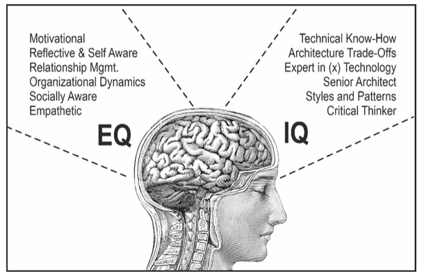
- 7. IMPORTANCE/ RELEVANCE/ APPLICATION OF EI IN CIVIL SERVICES
- For Targeting Policies better:
- Bureaucrats need to know the emotions, moods, and drives of persons to whom the public policy is targeted for a better acquaintance with the nature of problems in society and their possible solutions. To deal with the issues of increasing regional, economic, and digital divide. Issues of globalization, migration, terrorism, cybercrimes, and information technology. Issues of poverty, hunger, communalism, and gender discrimination.
- For motivating subordinates:
- EI helps a person in comprehending the emotions of others, thus an emotionally intelligent civil servant can motivate his/her subordinates towards a particular goal. So that improved/good governance can be ensured.
- Decentralization of governance to grassroots levels thereby increasing responsibilities.
- To achieve an amicable work environment. Performance at the workplace, Daniel Goleman asserts that 80% of success at the workplace is due to emotional quotient and 20% due to intelligence quotient.
- Stress Management:
- EI enables one to manage emotions in anxiety-provoking situations and thus helps one in maintaining one’s physical and mental well-being. To deal with Political Pressure and Rampant Corruption.
- For change:
- An Emotionally Intelligent person is more likely to try new things, take risks and face new challenges without fear. This will help in finding innovative solutions to different problems. Fast-changing social structure and values.
- Decision making:
- EI helps in recognizing such emotions that are unrelated to any specific problem and not allowing them to be influential to the result. Widespread application of IT.
- For Better Communication:
- An Emotionally Intelligent civil servant will be able to communicate policies better. Also, the person will be able to foster a healthy relationship with subordinates.
- For maintaining balance in life:
- EI helps a civil servant in managing his/her personal life as well as professional life.
- On a personal front:
- EI makes individual more flexible, empathetic, and clear in expression.
- To achieve an amicable work environment:
- With the help of EI, you can persuade your colleagues easily in your favour to get work done.
- 8. ADVANTAGE/ATTRIBUTES OF EMOTIONALLY INTELLIGENT PERSON/CIVIL SERVANT
- Effective conflict management
- Enthusiastic work environment
- Improved responses
- Higher creativity
- Improved clarity of thinking
- Increased productivity
- Leadership
-
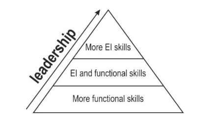
- De-personalize from the fits of the anger of others.
- Deal with uncertainty and change.
- Identify and abide by core values.
- Understand and empathize with positions different from others.
- To enrol people into his/her vision.
- Physical & mental health
- Enhanced relationship & interpersonal skills
- Understanding and managing needs and wants:
- The emotionally intelligent mind can discern between things that they need versus things that would be “nice to have” that classify more aptly as wants. A need, particularly in the context of Abraham Maslow’s “Hierarchy of Needs” is the basic level stuff like safety, survival and sustenance. Once those things are met, then we can progress to other needs and of course, wants. A “want” is a big house, a nice car, a smartphone, etc. We do not need those things to survive, but rather we want them based on our desires or what we perceive to matter to society. Emotionally intelligent people know the difference between these two things, and always establish needs before fulfilling wants.
-
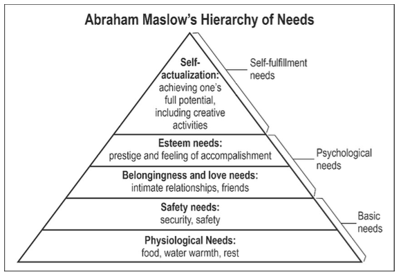
- 9. IMPROVING EMOTIONAL INTELLIGENCE/ SKILLS REQUIRED FOR EMOTIONAL INTELLIGENCE
- Self-Awareness:
- Emotionally intelligent people are aware of how they feel, what motivates and demotivates them, and how they affect others. By self-evaluating oneself, one can know one’s emotions and reactions to different situations.
- Social Skills
- Emotionally intelligent people communicate and relate well with others. They listen intently and adapt their communications to others’ unique needs, including diverse backgrounds. They show compassion. By observing others, one can comprehend the feelings of others.
- By improving one’s expression, one can communicate better.
- By analysing the impact of one’s action on others, one can fine-tune the actions.
- Optimism:
- Emotionally intelligent people have an optimistic outlook on life. Their mental attitude energizes them to work steadily towards goals despite setbacks.
- Emotional Control:
- Emotionally intelligent people handle stress evenly:
- They deal calmly with emotionally stressful situations, such as change and interpersonal conflicts.
- Flexibility:
- Emotionally intelligent people adapt to changes. They use problem-solving to develop options.
- Organisational efforts:
- Nowadays, organizations take the initiative to improve Emotional Intelligence among their employees through different group activities, exercises, seminars, and tests. However, EI also improves with age (maturity) and through one’s experiences in life.
- Dark Side of Emotional Intelligence
- New evidence shows that when people hone their emotional skills, they become better at manipulating others. When you’re good at controlling your own emotions, you can disguise your true feelings. When you know what others are feeling, you can tug at their heartstrings and motivate them to act against their own best interests.
- Especially when they have self-serving interests, EI becomes a weapon for manipulating others. Social scientists have begun to document this dark side of emotional intelligence.
- In emerging research led by University of Cambridge professor Jochen Menges, when a leader gave an inspiring speech filled with emotion, the audience was less likely to scrutinize the message and remembered less of the content. Ironically, audience members were so moved by the speech that they claimed to recall more of it. One observer reflected that Hitler’s persuasive impact came from his ability to strategically express emotions—he would “tear open his heart”—and these emotions affected his followers to the point that they would “stop thinking critically and just emote.” Leaders who master emotions can rob us of our capacity to reason. If their values are out of step with our own, the results can be devastating.
- Rule Your Feelings, Lest Your Feelings Rule You. — Publilius Syrus
- CHAPTER 5 - ETHICAL THINKERS & PHILOSOPHERS
- WESTERN THINKERS & PHILOSOPHERS
- Virtue ethics
- Overview
- What is a virtue?
- A virtue is a positive character trait or quality that reflects moral excellence and guides a person to act in a morally good and admirable way.
- It represents the inner strength of a person’s character that helps them do the right thing, even when it is difficult.
- The word “virtue” comes from the Greek term arête, meaning excellence — especially excellence of character.
- Key Characteristics of Virtue
- A habitual quality — it is not a one-time act but a consistent way of behaving.
- A middle path — according to Aristotle, virtue lies between two extremes (vices).
- Example:
- Courage is the virtue between cowardice (deficiency) and recklessness (excess).
- It is learned and cultivated through practice and reflection.
- It promotes both personal well-being and the well-being of society.
-
- Examples of Virtues
- Honesty – telling the truth even when it’s difficult.
- Compassion – showing concern for others’ suffering.
- Courage – standing up for what is right despite fear.
- Justice – giving everyone their due.
- Integrity – being consistent in moral principles.
- What is a vice?
- A vice is a bad or immoral habit, a negative character trait, or a moral weakness that leads a person to act in a wrong, harmful, or dishonourable way.
- It is the opposite of virtue — where virtue represents excellence and moral strength, vice represents deficiency, excess, or corruption of character.
- In ethics, vices are traits that prevent human flourishing (Eudaimonia) and harm both the individual and society.
- Key Characteristics of Vice
- A habitual flaw in behaviour or attitude — repeated over time.
- Arises from lack of self-control, ignorance, or moral indifference.
- Lies at the extreme ends of the virtue scale (either too little or too much).
- Example:
- Cowardice (too little courage) and recklessness (too much courage) are both vices, while courage is the virtue in between.
- Leads to moral decay, personal suffering, and social harm.
- Examples of Vices
- Greed – excessive desire for wealth or possessions.
- Anger / Wrath – uncontrolled hostility or rage.
- Laziness / Sloth – unwillingness to work or exert effort.
- Pride / Arrogance – inflated sense of self-importance.
- Dishonesty – deceit or lack of truthfulness.
- Envy – resentment towards others’ success.
- VIRTUE ETHICS DESCRIPTION
- Virtue Ethics is the ethical theory that judges morality based on a person’s character and virtues, not on specific actions or outcomes. A virtuous person tells the truth not because it’s a rule, but because honesty is part of their character.
- The Central Question of Ethics is how should I live? Or how should I decide how to live?
- There are several answers available within the Western philosophical tradition:
-
| Approach | Description |
|---|
| The religious answer | Follow the set of rules provided by religious texts, e.g., the Bible |
| Utilitarianism | Act in such a fashion that can maximise pleasure and minimise pain. |
| Kantian ethics | Act in such a manner that your action can become universal action. |
- In all these approaches the emphasis is on rules, duty, obligation, and the rightness or wrongness of actions.
- Contrary to all these theories, virtue ethics does not provide any strict rules or laws on how a person should behave or act in each situation; in fact, it focuses on a person’s virtues/character.
- Virtues are positive/excellent character traits (kindness, compassion, honesty, and generosity), while vices are negative character traits (greed, short-temper etc.). Virtues can and must be intentionally cultivated. They are necessary for the survival and well-being of individuals and society; hence they are moral in nature.
- The Greek term that is usually translated as “virtue” is arête. Speaking generally, arête is a kind of excellence.
- Virtue ethics does not focus on What I should do? But instead, it focuses on What sort of person should I be?
- In other words, individuals are good if they have virtues (excellent traits) rather than following specific rules or laws.
- Because virtues can be cultivated, they can also be described as a virtuous person's acquired dispositions. As a result, virtues denote human character excellence, whereas vices denote character flaws.
- In other words, these virtues refer to a person's inner qualities. As a result, they make up the morality of being, whereas duty and good deeds refer to the morality of doing.
- A virtuous person doesn't take vacations from his virtues. The presence of virtues in a person can be inferred from that person's habitual good behaviour.
- Virtues promote the well-being of their owners and society, whereas vices are detrimental to their owners' well-being.
- ETHICAL VIRTUES VS MORAL VIRTUES
- What are ethical virtues?
- Ethical virtues are specific character traits that guide a person’s actions in accordance with an ethical code.
- They focus on right conduct in particular situations.
- Example virtues include honesty, fairness, loyalty, and integrity.
- Ethical virtues are concerned with how one behaves in ethical decision-making — they help determine whether a specific action is right or wrong.
- They are often contextual, depending on social or professional norms.
- Example:
- A judge showing impartiality while deciding a case.
- A doctor maintaining confidentiality with a patient.
- What are moral virtues?
- Moral virtues are broader traits of good character that define what it means to be a good human being.
- They are universal qualities admired across cultures and times.
- Example virtues include kindness, courage, humility, patience, and compassion.
- Moral virtues are about who you are as a person, not just what you do.
- They concern the morality of being, representing inner moral strength and goodness.
- Example:
- Showing compassion to someone in distress.
- Displaying courage in defending truth despite personal loss.
- Comparison
- Ethical virtues are more specific than moral virtues. Ethical virtues, like honesty, focus on individual actions that align with a particular ethical code.
- Moral virtues, like kindness or bravery, are broader in scope and encompass many different types of behaviour. For example, someone who is honest might also be kind; however, someone who is kind might not always be honest. This difference between ethical and moral virtues can help us understand why it’s important to consider both when evaluating an individual’s character.
- What is virtue ethics?
- The school of philosophy, which deals with various aspects of these virtues is called virtue ethics.
- Virtue ethics is person-centred rather than action-centred, focusing on the virtue or moral character of the person performing the action rather than ethical duties and rules or the consequences of specific actions.
- Virtue ethics addresses not only the rightness or wrongness of individual actions but also the characteristics and behaviours that a good person should strive for.
- As a result, virtue ethics is concerned with a person's entire life rather than specific episodes or actions. A good person is someone who lives virtuously - someone who has the virtues and practises them.
- It is a useful theory because it helps in judging a person's character than judging the goodness or badness of a specific action. This suggests that rather than using laws and punishments to prevent or deter bad behaviour, the best way to build a good society is to help its members become good people.
- Founding fathers of virtue ethics are Plato and Aristotle in the West and Mencius and Confucius in the East.
- Three foundational virtues of ancient Greek philosophy are:
-
| Term | Meaning |
|---|
| Arête | Virtue (excellence) |
| Phronesis | Wisdom (practical or moral) |
| Eudaimonia | Happiness or flourishing |
- To possess a virtue is to be a particular kind of person with a certain complex mindset. A significant aspect of this mindset is the wholehearted acceptance of a distinctive range of considerations as reasons for action.
- Thinkers
- i. SOCRATES (469 BC-399 BC)
- MORAL UNIVERSALISM
- At the time of Socrates, ethical relativism was prevalent in the society which says that there are many truths (Syayavad in India) but this concept of many truths was creating contradictions and conflicts in the society.
- For Socrates, virtue/moral/norm was something that could be known to all and the virtuous person is the one who knows what virtue is. In this way, he founded the concept of moral universalism.
- SOCRATIC METHOD/ SOCRATIC DEBATE /ART OF QUESTIONING
- If you want to know truth/virtue you need to enquire about the things you face.
- The dialectical method of inquiry/ Socratic method/ Socratic Debate /art of questioning.
- He emphasized that an issue, opinion or belief should be accepted only after thorough cross-examination and introspection. What Socrates taught was a method of inquiry that is also called as Socratic method/ Socratic debate /dialectical method of inquiry.
- Thus, he did not tell his audience how they should live rather he told them how they should inquire about the things to live.
- When the Sophists or their pupils boasted that they knew what justice, piety, temperance, or law was, Socrates would ask them to give an account, which he would then show was entirely inadequate by using the method of cross-examination.
- It's been dubbed a negative method of hypothesis elimination because it finds better hypotheses by systematically identifying and eliminating those that lead to contradictions.
- At its most basic level, the Socratic Method works by breaking down a problem into a series of questions, the answers to which gradually distil better and better solutions.
- It means he attempted to establish an ethical system based on human reason rather than religious doctrine.
- Because his method of inquiry threatened conventional beliefs, Socrates’ enemies contrived to have him put to death on a charge of corrupting the youth of Athens.
- KNOWLEDGE AS A SOURCE OF HAPPINESS
- This cross-examination will lead you to find true knowledge. With the help of this, you can bring happiness in your life by regulating your desires as he argued that:
a. All human beings naturally desire happiness.
b. Happiness depends not on external goods but on how we use these external goods.
c. Happiness depends on the education of desire, whereby the soul learns how to harmonise its desire, redirecting its gaze away from physical pleasure to the love of knowledge and virtues, which will lead to the wisdom that is true happiness. It means we can drive that:
- KNOWLEDGE AS A SOURCE OF GOOD GOVERNANCE
- Socrates believed that the government works best when there is rule by individuals who have the greatest ability, and knowledge and possess a complete understanding of themselves.
- KNOWLEDGE IS VIRTUE
- For Socrates, knowledge is the source of happiness at the individual level and the source of law and order at the societal level hence he claimed that knowledge is a virtue (knowing what to do in certain situations), requiring each person to develop their inherent potentialities as far as possible.
- As per Socrates, “If you constantly examine who you are as a moral agent about others, and your life in the community, you are on the right path.” This implies that we must build up personal values and social values in an ethical manner.
- THE UNEXAMINED LIFE IS NOT WORTH LIVING
- He believed that humans are rational creatures, it is the knowledge that makes you virtuous, which brings happiness to you and good governance in society hence he claimed that an unexamined life is not worth living; it means humans should keep questioning, accepting and rejecting the objects they face.
- Moral intellectualism
- He also thought that anyone who knows what virtue is will necessarily act virtuously. Those who act badly, therefore, do so only because they are ignorant of, or mistaken about, the real nature of virtue. He said that no one knowingly does what is bad. This view is known as moral intellectualism.
- Hence his whole philosophy is based on two ethical principles:
a. Freedom to speak one's mind, i.e., courage to speak to power.
b. Objectivity.
- For him following such ethical principles will make a person virtuous; that is how virtue ethics was born. Later it was enriched by Plato and finally established by Aristotle.
- ii. PLATO (428-348 BC)
- CONCEPT OF IDEAL VS REAL WORLD
- In the most famous of Plato’s dialogues, Politeia (The Republic). From the account of Socrates Plato maintained that true knowledge consists not in knowing things but in knowing something general that is common to all the particular cases. The implication is that one does not know what goodness is, unless one can give such a general account of goodness.
- It means if ethics is universal then a question arises, how one can know what is the general idea of goodness? Plato answers that one knows the Form of the Good (real or ideal). A perfect, eternal, and changeless entity exists outside space and time (the ideal form of knowledge), on the other hand, the real form of knowledge is variable according to time and space. So, for true knowledge, we need to investigate the ideal world which is absolute in nature. That’s why he gave the idea of the real world and the ideal world. For Socrates, knowledge comes from human reasoning, but for Plato, knowledge comes from the ideal world.
- But even if one could know what goodness or justice is, why should one act justly if one could profit by doing the opposite?
- According to Plato, the unjust person lives in an unsatisfactory state of internal discord, trying always to overcome the discomfort of unsatisfied desire but never achieving anything better than the mere absence of want.
- The soul of the just person, on the other hand, is harmoniously ordered under the governance of reason, and the just person derives truly satisfying enjoyment from the pursuit of knowledge.
- He also said that justice exists in the individual when the three elements of the soul—intellect, emotion, and desire act in harmony with each other.
- Plato remarks that the highest pleasure comes from intellectual speculation. He also gives an argument for the belief that the human soul is immortal; therefore, even if a just individual lives in poverty or suffers from an illness, the gods will not neglect him in the next life, where he will have the greatest rewards of all. In summary, Plato asserts that we should act justly because in doing so we are “at one with ourselves and with the gods.”
- THREE PARTS/ELEMENTS OF HUMAN BEING
- As per Plato, human beings are made up of three elements or parts:
1. Element of Passion or Competition (Passions/emotion):
- When emotions are controlled well, it leads to courage.
2. Executive Element & Spirited or Dynamic (Will/Desire):
- When desires are controlled, it leads to temperance.
3. Rational or Philosophical Element (Reason or Intellect):
- Reason leads to prudence (practical wisdom).
- Together prudence, temperance and courage lead to justice
- Four cardinal values by Plato/Aristotle
- What are cardinal virtues?
- The term “Cardinal Virtues” comes from the Latin word “cardo,” meaning hinge, because these virtues are considered the foundation or pivot on which all other moral virtues depend.
- They were first clearly identified by Plato and later developed by Aristotle and Christian philosophers like St. Thomas Aquinas.
- These four virtues are seen as the cornerstones of good moral character and ethical living.
- These are:
-
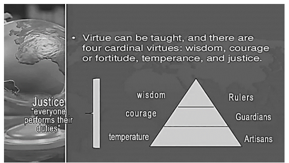
- i. Prudence (Practical Wisdom / Phronesis)
- The ability to judge rightly what is good and what should be done in a given situation.
- It involves foresight, sound judgment, and moral reasoning.
- Example:
- A civil servant taking a balanced decision after considering law, ethics, and consequences.
- ii. Justice
- The constant will to give each person their due — fairness in action and relationships.
- It involves respecting rights, equality, and responsibility.
- Example:
- Treating all citizens equally regardless of caste, gender, or background.
- iii. Fortitude (Courage)
- The strength to endure difficulties and overcome fear in doing what is right.
- It helps a person stand firm in moral conviction even under pressure or adversity.
- Example:
- A whistle-blower exposing corruption despite personal risk.
- iv. Temperance (Self-control / Moderation)
- The virtue of controlling desires and emotions to maintain balance and harmony.
- It avoids both excess and deficiency — the “Golden Mean” of Aristotle.
- Example:
- Maintaining restraint in power, pleasure, or consumption.
- UNITY OF VIRTUES
- A person cannot possess one of the cardinal virtues without having them all.
- THREE PARTS OF STATE
1. Producers (Farmers and artisans)
2. Auxiliary (Soldiers and security personnel)
- Auxiliary will have the virtue of spirit (courage) and
3. Guardians (Rulers- Philosopher King)
- To him in an ideal state, guardians will have the virtue of reason (prudence/wisdom).
- For, him ruler should be a philosopher (philosopher king) because only a philosopher can know the truth which is essential to ensure justice and happiness.
- The virtue of temperance will reside in all three classes.
- PLATO’S IDEA OF GOVERNANCE (FUNCTIONALIST VIEW)
- His model of the just state is that of a healthy organism where all the parts function for the benefit of the whole, and the whole benefits the parts.
- The survival of the whole depends on each one’s performing their function properly.
- Justice is sticking to one’s role, doing one’s work, and not interfering with others.
- PLATO ON JUSTICE
- For Plato Three things lead to justice in society:
- Teamwork:
- Philosopher king, guardians/soldiers, common people.
- Equality:
- Treating all people the same according to the notion of fairness.
- Leadership:
- Society will be governed by an enlightened king
- PLATONIC LOVE
- ORIGIN
- The term “Platonic Love” originates from the ideas of Plato (427–347 BCE), particularly from his work “The Symposium”, where he discusses the nature and purpose of love (Eros).
- It is not about physical or romantic desire, but about spiritual and intellectual connection between souls.
- CONCEPT
- Plato distinguished between “common love” (physical attraction or bodily pleasure) and “heavenly love” (love of the soul and intellect).
- True love, according to Plato, is the love of the good and the beautiful in their purest form — an aspiration toward moral and intellectual perfection.
- Hence, Platonic love refers to deep, non-sexual affection that uplifts both individuals morally and spiritually.
- STAGES OF LOVE (Plato’s Ladder of Love)
- 1. Physical Attraction:
- Love begins with attraction to a beautiful body.
- 2. Love of All Bodies:
- One realizes that beauty in one body is common to all.
- 3. Love of Beautiful Souls:
- The focus shifts from body to mind and character.
- 4. Love of Knowledge and Ideas:
- The lover seeks beauty in wisdom, truth, and virtue.
- 5. Love of Beauty Itself:
- The ultimate stage — contemplation of the Form of Beauty, i.e., absolute, eternal, and unchanging beauty.
- PHILOSOPHICAL SIGNIFICANCE
- Platonic love is a path to spiritual enlightenment — love helps the soul ascend from the world of appearances to the world of ideals.
- It links love with morality, intellect, and truth-seeking, rather than sensual desire.
- It represents the harmony between reason and emotion — emotion (love) used rationally to reach truth and virtue.
- EXAMPLES
- The relationship between Socrates and his students, where love meant intellectual stimulation and mutual moral growth.
- In modern sense, friendship or mentorships that are emotionally deep but free of romantic or sexual elements reflect Platonic love.
- RELEVANCE IN ETHICS
- Encourages value-based relationships built on respect, virtue, and shared pursuit of truth.
- Promotes self-restraint, moral discipline, and sublimation of desires.
- It connects with virtue ethics, emphasizing that love should help both individuals grow in goodness and wisdom.
- iii. ARISTOTLE
- Aristotle’s account of Virtue ethics can be found in his work, the Nicomachean Ethics.
- ETHICS IS A PRACTICAL SCIENCE
- Aristotle considered ethics practical. He rejected the doctrines of innate knowledge and the ideas of Plato. As per this doctrine, moral evaluations of daily life (morality/character) presuppose a “good”, which is independent of experience, personality, and circumstances. He taught that all knowledge begins in the sense of experience.
- MORAL RELATIVISM
- For him, ethical knowledge (moral standards) comes from personal experiences, and experience differs from person to person; hence there are no known absolute moral standards, and any ethical theory must be based in part on an understanding of psychology and firmly grounded in the realities of human nature and daily life. It means moral truth is not the same for all people, always and in all places.
- ETHICAL INQUIRY
- For Aristotle, moral principles are inherently present in our daily activities and can be discovered only through a careful study of them. It is for this reason that Aristotle begins his ethical inquiry with an empirical study of what it is that people fundamentally desire. And what are the inherent potentialities of that person?
- Eudemonia/ Happiness /Good life/Flourishing life
- Aristotle believed human nature is positive, he said that human is not only political and social animal but also ethical and rational animal. He also believed that every man wants/desires to live a life full of Happiness/Eudemonia/A Good and fulfilling life.
- VIRTUE
- To achieve eudemonia and being ethical one need to be virtuous. For him, virtue means a type of excellence. How can this excellence be achieved? It can be achieved by examination of human nature as he argued that all living things have inherent potentialities as per their naturally assigned functions because Aristotle conceived of the universe as a hierarchy in which everything has a function. The highest form of existence is the life of the rational being, and the function of lower beings is to serve this form of life (rational beings).
- From this perspective, Aristotle defended slavery—because he considered barbarians less rational than Greeks. This line of thought makes sense if one thinks, as Aristotle did, that the universe has a purpose and that human beings exist as part of such a goal-directed scheme of things.
- Now it is their (human) nature and highest goal (Eudemonia) to develop these potentials. It is the idea that an investigation of human nature can reveal what one ought to do (his potentialities). For Aristotle, an examination of a knife would reveal that its distinctive capacity is to cut, and from this one could conclude that a good knife is a knife that cuts well. In the same way, an examination of human nature should reveal the distinctive capacity of human beings, and from this one should be able to infer what it is to be a good human being.
- What, however, is the potentiality of human beings? For Aristotle, this question turns out to be equivalent to asking what is distinctive about human beings. This, of course, is the capacity to reason. The goal of humans, therefore, is to develop their reasoning powers Hence, he concluded that wisdom is the highest virtue. When they do this, they are living well, by their true nature, and they will find this the most rewarding for individuals and the well-functioning of the universe.
- He explained excellence/virtue as a quality that enables an object to perform its purpose or function, For instance,
-
| OBJECT | VIRTUE |
|---|
| Racehorse | To be fast |
| Knife | To be sharp |
| Soldier | To be brave |
| Administrator | Follow the rules |
| Farmer | Produce the crops |
- But there are also virtues that it is good for any human being to possess, the qualities that enable them to live a good life and to flourish as a human being. These include
- Capacities for friendship,
- Civic participation,
- Aesthetic enjoyment, and
- Intellectual enquiry.
- TYPES OF VIRTUES
- Moral virtues:
- Exercised through action.
- Intellectual virtues:
- which are exercised in the process of thinking, and contemplating.
- THE DOCTRINE OF THE MEAN
- Aristotle argues that each moral virtue is a sort of mean lying between two extremes, this idea became the basis of his Doctrine of the Mean. It means one should avoid extremes while taking decisions; for example, courage is the mean between no action at all or aggression/extreme action/recklessness.
-
| DEFICIENCY | VIRTUE | EXCESS |
|---|
| Cowardice | Courage | Foolhardiness |
| Shamelessness | Modesty | Shyness |
| Excessive expression of desire | Self- control | Overindulgence |
| Self- indulgence | Temperance | Insensibility |
| Sloth | Ambition | greed |
- However, Aristotle maintained that this principle is not a precise formulation. Saying that courage is a meaning between rashness and cowardice does not mean that courage stands precisely in between these two extremes, nor does it mean that courage is the same for all people. Aristotle reminds us that there are no general laws or exact formulations in the practical sciences. Rather, we need to approach matters case by case, informed by inculcated virtue and a fair dose of practical wisdom.
- Now the question arises that how one can develop virtue.
- According to Aristotle, we learn moral virtues primarily through habit and practice rather than reasoning and instruction. For him, habit is instrumental to the development of virtue because it is the consistent pattern for doing virtuous actions. For Aristotle, habitual behaviour is important for being virtuous. A generous person is routinely generous, not just generous occasionally.
- FOUR CARDINAL VIRTUES
- As per Aristotle, there are many Moral virtues but four of them are the most important for humanity (cardinal virtues of Plato) includes:
- 1. Prudence/wisdom.
- 2. Justice.
- 3. Courage.
- 4. Temperance.
- Aristotle’s Concept of Justice
- Justice means we are giving people what they deserve. It means people should not get less than what they deserve and not more than what they deserve, but they should get what they deserve. This enables them to fulfil their duties and exercise their rights. The key element of justice, according to Aristotle, is treating the like cases alike and unlike cases unlike.
-
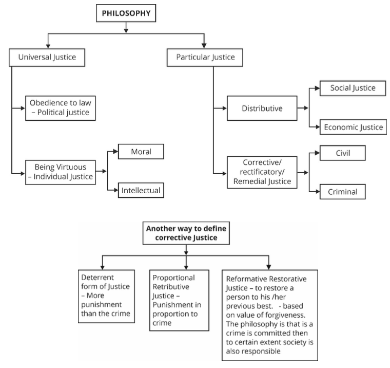
- Political Justice:
- Power should be distributed among the virtuous and not among all. Justice only exists when mutual relations are controlled by law.
- Individual justice:
- The moral disposition renders men appropriate to do just things and wish for just.
- Distributive justice:
- Fair distribution of benefits and burdens or just relations between members of society.
- Corrective justice:
- To safeguard the rights and liberties of citizens.
- INTELLECTUAL VIRTUES/WISDOM
- Aristotle rejected Plato’s concept of an ideal world as he argued that there is no ideal world; hence he replaced the ideal world with WISDOM. He further categorised wisdom as
- Theoretical wisdom and
- Practical wisdom.
- For Aristotle, practical wisdom is an intellectual virtue. Having practical wisdom means being able to assess what is required in any situation. This includes knowing when one should follow a rule and when one should break it, it requires the involvement of knowledge, experience, emotional sensitivity, perceptiveness, and reason.
- iv. THOMAS AQUINAS
- He was a virtue ethicist and supporter of Plato & Aristotle. He believes in four cardinal virtues but added three more:
- Faith,
- Hope and
- Charity.
- His three virtues, along with four of Plato, became seven virtues of Christianity:
- Prudence
- Temperance
- Courage
- Justice
- Hope
- Faith
- Charity
- JUST WAR THEORY
1. War should be the last resort.
2. War should be a defence against aggression or an attempt to stop atrocities.
3. The expected good must outweigh the cost of killing and destruction.
- v. RENE DESCARTES
- The reason is sufficient in searching for the goods we should seek, and virtue consists of the correct reasoning that should guide our actions.
- He believed moral truths could be discovered through logical reasoning just like mathematical truths.
- I think, therefore, I am
- vi. JEAN PAUL SARTRE
- Individuals must be concerned with ethics rather than society because individuals impact society, his ethical views are deeply intertwined with his existentialist philosophy, which focuses on the individual's freedom, responsibility, and the creation of one's own values.
- He rejected the idea of a universal rational moral law (which Descartes supported). For Sartre, ethics begins in individual choice, not reason.
- vii. SAINT AUGUSTINE & HIS IDEA OF FREE WILL
- According to him, God created human beings as rational beings who can distinguish between good and bad. God has given them complete freedom to choose and perform actions. So, if a person does something wrong, the responsibility lies with him and not God.
- ADVANTAGES OF VIRTUE ETHICS
- Virtue ethics offers a broader conception of ethics in general.
- It avoids the inflexibilities of rule-oriented ethics.
- Because it is concerned with character, and with what kind of person one is, virtue ethics pays more attention to our inner states and feelings as opposed to focusing exclusively on actions.
- Virtue ethics has also opened the door to some novel approaches and insights pioneered by feminist thinkers who argue that traditional moral philosophy has emphasized abstract principles over concrete interpersonal relationships.
- LIMITATIONS OF VIRTUE ETHICS
- “How can I flourish?” is just a fancy way of asking “What will make me happy?” This may be a perfectly sensible question to ask, but it isn’t a moral question. It’s a question about one’s self-interest. Morality, though, is all about how we treat other people. So, this expansion of ethics to include questions about flourishing takes moral theory away from its proper concern.
- Virtue ethics by itself can’t answer any moral dilemma. It doesn’t have the tools to do this. Suppose, one must decide whether to tell a lie to save your friend from being embarrassed. Some ethical theories provide you with real guidance. But virtue ethics doesn’t. It just says, “Do what a virtuous person would do” which isn’t of much use.
- Morality is concerned, among other things, with praising and blaming people for how they behave. But what sort of character a person has is to quite a large extent a matter of luck. People have a natural temperament: either brave or timid, passionate or reserved, confident or cautious. It is hard to alter these inborn traits. Moreover, the circumstances in which a person is raised is another factor that shapes their moral personality but which is beyond their control. So, virtue ethics tends to bestow praise and blame on people for just being fortunate.
- STOICISM
- Overview
- The most common meaning of the word Stoic is a person who remains unmoved by the sorrows and afflictions that distress the rest of humanity.
- They believed that all human beings have a capacity for a reason hence they all can pursue virtue and wisdom; while Aristotle has said that only a few can reason.
- Plato held that human passions and physical desires need regulation by reason. The Stoics went further: they rejected passions altogether as a basis for deciding what is good or bad.
- Although physical desires cannot simply be abolished, the wise person will appreciate the difference between wanting something and judging it to be good. Only reason can judge the goodness or badness of what is desired.
- If one is wise, he will identify himself with reason rather than with desire; hence, he will not hope for the satisfaction of physical desires or worry that they might not be satisfied. The Stoic will feel physical pain as others do, but he will know that physical pain leaves the true reasoning self-untouched. The only truly good thing is to live in a state of wisdom and virtue.
- Perhaps the most important legacy of Stoicism, however, is its conviction that all human beings share the capacity to reason.
- The belief that the capacity to reason is common to all humans was also important because from it the Stoics drew the implication that there is a universal moral law.
- The Stoics thus strengthened the tradition that regarded the universality of reason as the basis on which to reject ethical relativism.
- The only thing that is profoundly good is an excellent rational mental state which can be achieved through reason and virtue. Money, fame, and success are good but often transitory.
- One should live harmoniously with nature. One should acknowledge that they are a small part of a larger organic whole and process, which are out of our control. We can change many things, but there are some things we cannot change, and we must accept this fact. Control over internal emotions and judgement can only lead to happiness. If we try to control external things over which we have no control, we are bound to get frustrated.
- Thinkers
- i. ZENO OF CITIUM (c. 334–262 BC)
- FOUNDER OF STOICISM
- A Phoenician philosopher who founded the Stoic school in Athens around 300 BC.
- He taught that the goal of life is to live “in accordance with nature,” meaning in harmony with reason, which is the divine rational order of the universe (Logos).
- For Zeno, virtue (moral excellence) is the only true good, and vice is the only true evil. Everything else—health, wealth, pleasure, pain—is indifferent (adiaphora).
- KEY IDEAS
- Virtue is sufficient for happiness.
- Passions (emotions like anger, fear, and desire) arise from false judgments and should be controlled through reason.
- Ethics is not about following rules, but about developing a rational, virtuous character.
- External events are beyond our control; we should focus only on our own judgments and choices.
- ii. CLEANTHES (c. 331–232 BC)
- SUCCESSOR TO ZENO
- Expanded Zeno’s ideas and emphasized the divine rational order (Logos) that permeates everything.
- His “Hymn to Zeus” expresses Stoic pantheism — the belief that God and Nature are one and the same.
- KEY IDEAS
- All things happen according to divine reason.
- Human beings, as rational creatures, must accept fate cheerfully and align their will with the divine order.
- Introduced the concept of “cosmic citizenship” — all humans are part of one rational, universal community.
- iii. CHRYSIPPUS (c. 279–206 BC)
- SYSTEMATIZER OF STOICISM
- Considered the second founder of Stoicism for formalizing its logic, ethics, and physics.
- KEY IDEAS
- Emphasized logic as essential for understanding virtue.
- Developed the Stoic view of determinism — that everything happens according to fate, but moral responsibility still lies in how we respond.
- Introduced the concept of “Oikeiosis” — natural affection or affinity, explaining how humans develop moral concern for others starting from self-preservation.
- CONTRIBUTION
- Integrated ethics with metaphysics — seeing moral virtue as harmony with cosmic reason.
- iv. SENECA (c. 4 BC–65 AD)
- ROMAN STOIC PHILOSOPHER & STATESMAN
- Adviser to Emperor Nero; emphasized practical ethics and self-control.
- KEY IDEAS
- Virtue consists in following reason, regardless of emotions or circumstances.
- Wealth, power, and fame are neither good nor evil; what matters is how we use them.
- Advocated for moderation, simplicity, and moral integrity in public life.
- Believed anger is the most destructive emotion and must be conquered by rational reflection.
- RELEVANCE
- His letters (“Letters from a Stoic”) remain key sources of practical Stoic wisdom on handling stress, loss, and moral duty.
- v. EPICTETUS (c. 50–135 AD)
- A FORMER SLAVE WHO BECAME A PHILOSOPHER
- Taught that while we cannot control external events, we can control our reactions and judgments.
- KEY IDEAS
- “Some things are up to us, and some are not.” (Dichotomy of Control)
- Happiness and freedom begin with understanding this distinction.
- One should act according to duty, guided by reason, and accept whatever happens with equanimity (calm acceptance).
- EXAMPLE
- If insulted, the insult is beyond your control; your anger, however, is within your control.
- RELEVANCE
- His teachings influenced modern cognitive-behavioural therapy (CBT), which also emphasizes rational control over emotional response.
- vi. MARCUS AURELIUS (121–180 AD)
- ROMAN EMPEROR AND STOIC PRACTITIONER
- Author of “Meditations,” a diary of Stoic reflections written during military campaigns.
- KEY IDEAS
- Life is fleeting; what matters is virtue and fulfilling your duty in harmony with nature.
- Don’t be disturbed by external events; focus on your inner moral self.
- Every human shares a spark of divine reason — treat others justly and with compassion.
- “You have power over your mind — not outside events. Realize this, and you will find strength.”
- ETHICAL PRINCIPLES
- Self-control, duty, humility, and universal brotherhood.
- RELEVANCE
- Example of philosophy applied to leadership — Stoicism in governance.
- TELEOLOGY ETHICS
- Tele = end = consequence
- Teleological ethics emerges from Greek (telos, “end”; logos, “science”), is a theory of morality that derives duty or moral obligation from what is good or desirable as an end to be achieved.
- 1. HEDONISTIC TELEOLOGY
- Pleasure and Happiness are the ultimate good (moral actions aim to maximize these).
- Subtypes:
- a. EPICUREANS
- The Epicureans regarded pleasure as the sole ultimate good and pain as the sole evil, and they did regard the more refined pleasures as superior, simply in terms of the quantity and durability of the pleasure they provided, to the coarser pleasures.
- By refined pleasures, Epicurus meant pleasures of the mind, as opposed to the coarse pleasures of the body. He taught that the highest pleasure obtainable is the pleasure of tranquillity, which is to be obtained by the removal of unsatisfied wants. The way to do this is to eliminate all but the simplest wants; these are then easily satisfied even by those who are not wealthy.
- Epicurus developed his position systematically. To determine whether something is good, he would ask whether it increased pleasure or reduce pain. If it did, it was good as a means; if it did not, it was not good at all. Thus, justice was good but merely as an expedient arrangement to prevent mutual harm. Why not then commit injustice when we can get away with it?
- Epicurus says, the perpetual dread of discovery will cause painful anxiety.
- Epicurus also exalted friendship and the Epicureans were famous for the warmth of their relationships; but, again, they proclaimed that friendship is good only because it tends to create pleasure.
- It gives hope of infinite progress to every man. It accords man a sense of sacredness and dignity unknown to other religions. It teaches that man is essentially divine. Hence his salvation must come from within.
- b. Utilitarians
- Utilitarianism is an ethical theory which states that the rightness or wrongness of an action depends on its consequences — an action is considered morally right if it maximizes overall happiness or pleasure and minimizes pain for the greatest number of people.
- There are two major philosophers in this school
- i. JEREMY BENTHAM (QUANTITATIVE UTILITARIAN)
- The foundation of Bentham's moral philosophy is comprised of three major characteristics:
1. The greatest pleasure principle.
2. Universal egoism, and
3. The artificial association of one's interests with those of others.
- The greatest pleasure principle:
- Influenced by the empiricism of Bacon and Locke, Bentham held that all knowledge is derived from sensation. The sensation could be in the form of pleasure or pain.
- Thus, human behaviour, according to Jeremy Bentham, is hedonistic (engaged in the pursuit of pleasure; sensually self-indulgent; hedone means pleasure) hence for him the main aim of human life is maximising pleasure and minimising pain. As per him pleasure and pain are intrinsically worthwhile and ultimately motivate humans.
- All rational beings prefer to pursue what makes them happy and avoid what makes them unhappy. As a result, the rightness or wrongness of an action is determined by the amount of pleasure and pain it causes, as well as the number of people who are affected by the pain or pleasure. According to Bentham, happiness is the experience of enjoyment and the absence of pain.
- As per Bentham, “Nature has placed mankind under the governance of two sovereign masters, pain and pleasure.” They govern us in all we say, think and do.
- Pleasure is a relative concept that can be understood by the principle of diminishing marginal utility.
- Diminishing marginal utility:
- The same thing has different values for different people, like
- 1 Lakh Rupees matters:
- For you, little/something.
- For beggar, it is a lot.
- For an industrialist , it is nothing.
- Pleasure can be achieved by making efforts from your side, it can also be achieved by the disappointment-prevention principle.
- Disappointment-prevention Principle
- Bentham gave a higher priority to the protection of property by law and hence he held that the alleviation of suffering demands more immediate attention than plans to produce wealth.
- There are two forms of hedonism:
- Psychological hedonism:
- It states that all motives of action are grounded in the apprehension of pain or the desire for pleasure; and
- Ethical hedonism:
- It holds that pleasure is the only good and actions are right in so far as they tend to produce pleasure or avoid pain.
- As Bentham went on to explain, allowing for “immunity from pain”, pleasure is “the only good”, and pain “without exception, the only evil”.
- As per Bentham’s theory the utility of an act is independent of its originating motive(s). In effect, there is no such thing as a good or bad motive. The utility of an act—its goodness or badness—is determined solely by its consequences: the benefits and/or costs that result hence he concluded that all pleasures are the same.
- There are no qualitative differences in pleasures. Pleasures only differ in terms of quantity.
- When deciding whether to act or which activities to undertake, a person must calculate as best as he can the pains and pleasures that may reasonably be expected to accrue to the persons (including himself) affected by the acts under consideration. A similar calculation should guide the legislator in formulating laws.
- However, Bentham recognised that it was not normally feasible for an individual to engage in such a calculation as a preliminary to undertaking every act. For this reason, he spoke of general tendencies of actions to enhance happiness (suggested by experience) as a sufficient guide in most situations.
- HEDONIC CALCULUS
- To calculate pleasure and pain, Bentham devised the Hedonic Calculus based on empiricism as influenced by John Locke and David Hume.
- This calculus is comprised of seven elements, one can calculate the pleasure and pain of flowing from an action in each situation using this calculus.
1. Intensity:
- How powerful is it?
2. Durability:
- How long has it been going on?
3. Its probability (certainty or uncertainty):
- How likely is it?
4. Its proximity/ remoteness:
- When is it likely to arrive?
5. Its fecundity:
- What if it could bring you even more pleasure?
6. Its purity:
- How pain-free is it?
7. The scope/ extent of the problem:
- How many people are affected?
- By considering all of this, we can determine the best course of action to take in any given situation. The goal is to provide the greatest amount of pleasure to as many people as possible.
- HEDONISM VS ALTRUISM
-
| Characteristics | Altruism | Hedonism |
|---|
| Etymology | Latin word "alteri" which means "other people | Greek word "hedone" which means "pleasure" |
| Definition | The belief in self-sacrificing concern for others' welfare. | Pursuit of self-indulgence; Epicurus: living a life of pleasure by eradicating bodily and mental pains. |
| Types | Four types: nepotistic, reciprocal, group and moral | Its types include normative, motivational, egotistical, and altruistic. |
| Goal | Help others. | Indulge oneself. |
| Synonyms | Benevolence, kindness, social conscience, and charity. | Gratification, enjoyment. selfishness, and debauchery. |
| General Impressions | Positive more virtuous related with kindness | Negative; less virtuous; related with greed. |
- UNIVERSAL EGOISM
- It means everyone should do, what is in his interests. This idea promotes the value of liberty/freedom. According to Bentham, liberty is the absence of restraint. It means, one has liberty and is "free" to the extent that one is not impeded by others.
- A person’s consideration of her interest involves expectations or mental projections of the future, not existing material interests. The specific expectations that attend the consideration of action be shaped by a myriad of external considerations, as well as the agent’s predilections and preferences.
- For Bentham, the most important elements of the external environment in which a person imagines outcomes are the penalties and rewards laid down by law and those deriving from other educative and moral institutional arrangements and practices, including the sanction exercised by public opinion.
- In this sense, law and other agencies may be used to construct interests by providing individuals with the motives to pursue courses of action beneficial to the community.
- BENTHAM AND LAW
- Bentham’s theory of punishment
- The implicit consequentialism of utilitarian theory is central to Bentham’s theory of punishment, in which the objective was to ensure that a punishment is in proportion to the mischief produced by a crime and sufficient to deter others from committing the same offence.
- Legal positivism:
- Bentham may have produced an early form of what is now commonly referred to as "legal positivism” by criticising the natural laws which advocate restricted/regulated rights of the citizens because he believed that natural laws are limitless, undefined and ambiguous. Hence rights of the people should be defined and protected by the sovereign power (government).
- To this end, he developed rules to guide the lawmaker in the construction of a penal code, including the elements involved in the calculation of the mischief caused by offences and the appropriate punishments.
- Self-preference principle:
- Self-interest is the motivation of all human action. Although, Bentham recognised the possibility of altruistic actions; he held that sympathy was a “primaeval and constant source” of pleasure and action. While it is not true that everyone always acts in his or her self-interest, it is best that the legislator design institutions and laws as if this were true. Self-interested acts are the norm; altruism is the exception.
- Legislator as Doctor:
- What the physician/doctor is to the natural life/body of the individual, the legislator is to the political life/body of the people. This is how legislation is the art of medicine exercised upon a grand scale in society.
- Rejection of idealism
- He rejected all forms of idealism in philosophy and insisted that in principle all matter is quantifiable in mathematical terms, and this extends to the pains and pleasures that we experience—the ultimate phenomena to which all human activity (and social concepts, such as rights and duty) could be reduced and explained.
- Law based on an aggregate of individual interests:
- Although individuals may in general be the best judges of their interests, they may not always judge wisely. This creates a disjunction between the perception of their interest and their “real” interest. Since the “public interest” is a fictitious entity that represents nothing more than the aggregate of individual interests.
- The legislator is a fully rational and informed person:
- An effective legislator must have a fairly accurate constitute the community, and of what will motivate them to act in the desired ways (especially in criminal law).
- The knowledge needed by the legislator (to be effective in constructing adequate motives to direct individual actions) is of people’s apparent interests, while the legislator’s objective is to further their “real” interests, that is, what they would choose if they were fully rational and informed.
- This means that assessing the value of the constituent elements of interest (pains and pleasures) is a tricky business for the legislator; he must accurately observe the ways people behave, deduce the motives behind their actions, and encompass this knowledge in the sanctions of the law. Yet these same observations of human behaviour may not also be reliable guide to the “real” interests of individuals, which must be determined on other grounds.
- Subordinate Ends, Principles and Maxims:
- From the early of his utilitarian theorizing, Bentham understood that the achievement of utilitarian objectives in practice required the translation of the utility principle into elements amenable to implementation.
- The maximization of utility required that the jurist cast a “censorial” eye on existing practices to test their capacity to enhance the greatest happiness. Where the jurist detects deficiencies, new rules and precepts must be developed that demonstrably accord with the utility principle.
- In Bentham’s hands, this took the form of a multitude of subordinate or secondary ends, principles and maxims designed to give practical direction to the utility principle in every aspect of the law. The greatest happiness principle sets the over-arching objective and is the critical standard against which existing practices are to be judged.
- ii. JS MILL (QUALITATIVE UTILITARIAN)
- Mill was raised on strictly Benthamism principles by his father, philosopher James Mill, and devoted his life to the defence and promotion of the general welfare. He was a Utilitarian, liberal, democrat, pluralist, socialist, feminist and naturalist.
- All pleasures are not the same
- He disagreed that all differences in pleasures could be quantified.
- He categorised pleasure into two types
- Higher pleasures:
- Largely intellectual, writing a novel, a good poem.
- Lower pleasures:
- Largely bodily, seeking pleasure in smoking, drinking and other sensual pleasures.
- That’s why he argued that:
- “It is better to be a human being dissatisfied than a pig satisfied.”
- “Better to be Socrates dissatisfied than a fool satisfied.”
- As per Mill, pain (or even the sacrifice of pleasure) is also justified if it directly contributes to the greater good of all.
- Now, a question was raised about how one can pursue higher good, for this he devised rule utilitarianism:
- THE RULE-UTILITARIANISM
- Mill agreed with Bentham that the moral thing to do is to promote the greatest good for the greatest number but he reasoned that a common/ordinary man does not have the time to calculate pleasure or pain accurately in every instance. Hence, there should be some basic rules in place to help us maximise pleasure and minimise pain.
- Principle of Harm
- It is the first and most important rule, which advocates that the only actions that can be avoided are those which cause harm. In other words, a person is free to do whatever he wants as long as he does not harm others.
- MILL’S NATURALISM
- It is the extended version of the first rule which says that human beings are wholly part of nature and hence this earth belongs to everyone and every species has a right to live on this planet. Thus, he concluded that just because of your greed, you can’t harm other species. This principle became the philosophical basis of environmental ethics.
- Altruistic/universalistic hedonism
- If the actions of individuals in society are based on some fixed and binding rules, such rules are aimed at the maximising pleasure of self without harming the rest of others, this type of action is based on consideration the of interests of others and is called altruistic hedonism.
- He said that individual action should not harm society. It means that good for society is good for individuals. It means he advocated altruistic/universalistic hedonism.
-
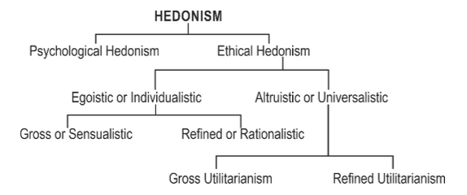
- Mill's defence of free expression/liberty
- He considered that most opinions are neither completely true nor false, he argued that allowing free expression may help in discovering the truth in the true sense. He also accepted that searching for and discovering the truth can help in broadening one's knowledge. He contended that even if an opinion is incorrect, understanding the truth can be improved by refuting the error.
- He was also concerned about the suppression of minority views, Mill argued in favour of free speech on political grounds, stating that it is a necessary component for a representative government to have to empower debate over public policy. Mill also argued persuasively that freedom of expression promotes talents, personal growth, self-realization and creativity.
- CONCLUSION
- Even if utilitarian philosophy has many weaknesses and criticisms, it is still relevant not only for individuals in terms of freedom but also for society in terms of the greatest good to the greatest number of people.
- 2. PRAGMATIC/POLITICAL TELEOLOGY
- Success and stability of the political order as the ultimate good.
- Thinkers
- i. MACHIAVELLI
- Machiavelli’s ideas are mainly derived from his famous work “The Prince” (1513), written as advice to rulers on how to gain, consolidate, and maintain political power.
- For Machiavelli, the highest purpose of social and political life is to attain and maintain power. Moral rules, therefore, are practical tools to help achieve and preserve control over others. One should break a contract if it benefits them, since others—being inherently self-interested—would likely do the same. Contracts should be honored only when they serve the purpose of securing or strengthening power.
- Real Politics (Realpolitik):
- Refers to politics or diplomacy based primarily on practical considerations of power and circumstances, rather than on moral or ideological ideals. (Teleological approach)
- Machiavelli was the first major thinker to evaluate actions solely by their consequences. An action is “good” not because it aligns with divine command or virtue, but because it successfully achieves and sustains power.
- 3. Contractarians
- Overview
- According to them, human conduct can be considered ethical if it is as per the norms laid down in the contract between the parties.
- Every society is based on one or other kind of contract explicitly or implicitly, for example, caste system, class system, or role allocation in the family on gender basis or otherwise.
- When such a contract happens between the state and citizens, it is called a social contract.
- According to this contract, people are expected to follow the law, and the state is expected to serve the people.
- In this school, we will study three thinkers
- 1. Thomas Hobbs
- 2. John Locke
- 3. Rousseau
- They have many differences in their ideas, but they also have some commonalities
- Their philosophy focused on the relationship between the state and citizens
- The Foundation of this relationship is based on an explanation of human nature and human rights.
- Thinkers
- i. THOMAS HOBBES
- Hobbes detested violence. He had read Thucydides’ account of the Peloponnesian War and had personally witnessed the decades of the English Civil War which culminated with the beheading of Charles II. The desire to avoid war motivated both his moral and political thought.
- CONCEPT OF STATE OF NATURE
- Hobbes’ philosophy began by considering what the world would be like without morality. He believed that it would be a state of nature — a terrible place without art, literature, commerce, industry, or culture. Most terrifying of all, it would be a place of “continual fear and principal–agent death; and the life of [humans] solitary, poor, nasty, brutish, and short.” Humans would be murderous, selfish (concerned chiefly with one's profit or pleasure), and self-preserving (protecting oneself from harm).
- He believed human beings desperately seek to fulfil their desires for food, clothing, shelter, power, honour, glory, comfort, pleasure, self-aggrandizement, and a life of ease.
- Unfortunately, such things do not exist in abundance; they are scarce. In addition, he believed that persons were relatively equal in their power.
- Thesis I - The State of Nature "State of War"
- Given desires, scarcity, relative power equality, and predominant self-interest, Hobbes concluded that human beings, in a state of nature, would be engaged in a fierce struggle over scarce resources.
- Individuals would attack, steal, destroy, and invade to protect themselves and prove their status.
- Thus, the state of nature becomes a state of continual conflict.
- Thesis II - Right of Nature
- Hobbes’ second thesis was that individuals in a state of nature have no a priori moral law obligating them to constrain their behaviour.
- For Hobbes, self-preservation justifies the use of force and fraud to defend ourselves in a state of nature. Only the power of others limits what we can do.
- He called this unlimited liberty the *Right of Nature*.
- Thesis III - Law of Nature and the State of Peace
- Hobbes argues that the state of nature is a miserable state of war in which none of our important human ends is reliably realizable.
- As rational beings, humans will try to avoid war and ensure peace in all possible manners.
- Hobbes calls these practical imperatives the “Lawes of Nature” — the sum of which is not to treat others in ways we would not have them treat us.
- These “precepts,” “conclusions,” or “theorems” of reason are “eternal and immutable,” always commanding our assent even when they may not safely be acted upon.
- Thesis IV - The Social Contract – The Source of Morality
- Morality was defined by *articles of peace*, essentially, the rules to which any rational, self-interested person would agree.
- In the state of nature, we exercise our *right of nature*; in the state of peace, we follow the *law of nature*.
- Morality is thus the set of rules that make peaceful living possible — mutually advantageous conventions created by rational agreement for self-preservation.
- Before the contract, actions are neither moral nor immoral; after the contract, society defines moral and immoral actions and continually renegotiates the rules to satisfy competing interests.
- Therefore, the moral sphere becomes one of continual bargaining and power-struggling, where conflict is resolved through:
- Moral discourse,
- Political mechanisms, or
- Violence.
- However, it is not rational to comply with agreements unless there is coercive power to enforce them.
- Hence, a coercive authority (the State) must exist to ensure compliance. This agreement to establish and enforce laws is the *Social Contract*.
- LEVIATHAN STATE
- Because the state is a small institution that must govern society, it requires absolute power; hence, Hobbes advocated for a *Leviathan State* — a strong or big state with absolute authority.
- In such a state, people have rights, but these rights are conditional, not absolute.
- The state can use force to maintain law and order, and citizens cannot revolt against it.
- WHY THE SOCIAL CONTRACT THEORY IS ATTRACTIVE
- 1. It takes the mystery out of ethics — ethics is about how we all can live well together.
- 2. It makes morality objective — based on rational reasons, not divine command.
- 3. Moral rules are practical, not intrusive.
- 4. It assumes humans are self-interested, a realistic view.
- 5. It provides a reason to be moral — morality serves our self-interest.
- MORAL OBLIGATION OF HIS PHILOSOPHY
- The state gained a moral foundation for its existence — the social contract theory.
- The state gained moral grounds for governing and making laws.
- The state acquired the right to enforce law even against the will of subjects.
- The state can compromise the rights of a few for the sake of larger goods — stability, peace, and order.
- APPLICATION OF HOBBES’ THEORY
- His philosophy applies wherever there is a need for the state to enforce laws.
- Relevant for maintaining law and order, peace, security, and inclusion.
- Useful for ensuring resource mobilisation.
- CRITICISM
- 1. The contract theory answers why “we” should be moral but not why “I” should be moral. Why not be a free rider if I can benefit without cooperating?
- 2. Prisoner’s Dilemma:
- Hobbes suggested penalising non-cooperation to deter it, but this leads to corruption and injustice in enforcement. The problem remains unsolved unless human nature changes.
- 3. Hobbes viewed human nature negatively, influenced by the chaos of his time. But examples of altruism and charity show that humans can act selflessly.
- 4. His advocacy of an absolute *Leviathan State* is incompatible with modern ideas of limited government — such a state could become exploitative and suppress rights in the name of order.
- 5. Hobbes’ philosophy contradicts virtue ethics essential for human flourishing:
- Gita- Selflessness
- Vivekananda- Service to Jiva is service to Shiva
- Gandhi- Self-governance
- Hobbes said “a strong government is the best government,” whereas Gandhi said, “the least government is the best government.”
- Aristotle- Humans are rational creatures
- Essence of all- humans are capable of altruism.
- ii. JOHN LOCKE
- LOCKE’S EMPIRICISM/ TABULA RASA
- John Locke was, like Aristotle, an empiricist. A central idea of Lockean thought was his notion of Tabula Rasa- the “Blank Slate.” John Locke believed that all human beings are born with a barren, empty, malleable mind; every facet of one’s character is something observed, perceived, and learned via the senses while living in a society.
- Biologically, the Tabula Rasa favours nurture in the “nature versus nurture” debate. Philosophically, it allows for the concept of free will. This idea of Locke corresponds with his ideas of natural rights. Though we are not born with any innate ideas, learned behaviour can be applied to our natural rights to obtain optimal outcomes for ourselves.
- NATURAL RIGHTS/ INALIENABLE RIGHTS
- Fundamentally, Locke observed that the human right to property is rooted in that one’s property begins with oneself. A person has the right to govern themselves; their essence is their property, and nothing and nobody can take that away.
- This is the introspective right of an individual, their ownership over their soul. Externally, an individual’s right to property is concerned with the world around them. The Earth provides humankind with bounty, shared throughout the world. This bounty is a gift to humankind, according to Locke, from God: we all have access in common to God’s bounty.
- If this bounty is commonly accessible, it is, therefore, ripe for the taking by any individual who sees fit. For Locke, mixing one’s labour with God’s bounty provided to our results in that bounty becoming one’s property.
- Imagine for a moment walking through the woods and finding an apple tree. By climbing the tree and plucking an apple, you are mixing your efforts and labour with the bounty of God, therefore justifying that the apple you’ve picked is now your property. Additionally, John Locke postulated that simply building a fence around a field was an effective means of claiming property.
- Locke based the foundation of his political theory on the idea of inalienable rights. Locke said that these rights came from God as the creator of human beings. Human beings were the property of God, and Locke claimed that denying the rights of human beings that God had given them was an affront to God.
- Locke believed in the notions of individual governance and liberties hence he Added the concept of the natural right to the social contract that the state is there to protect the natural right of citizens. Three natural rights as per John Locke:
- Right to life,
- Right to liberty and
- Property right.
- That’s why he is known as the “classical liberal”.
- The American Declaration of Independence copied the three rights from John Locke but with a slight modification:
- Right to life
- Right to liberty
- Pursuit of happiness
- LOCKE ON TOLERATION
- His ideas on tolerance are based on his experience of observing the English Civil War in his youth. Invoking the Tabula Rasa, his experiences, perceptions, and observations in his youth formulated his opinions on toleration. John Locke defined toleration as a fundamental and axiomatic disagreement with something, be it another faith, race, sexual orientation, or favourite soccer team, while still allowing it to exist.
- Seeing as Locke offered that the soul is the property of the individual, and nobody has the right to govern it except that same individual, everybody has the right to choose their path.
- Locke did not dismiss the act of being strongly opposed to something; one can still disagree and take issue with something, but true toleration simply allows it to exist.
- LOCKE ON RELIGION
- John Locke was born a Puritan, converted to a Socinian, and grew up through the religiously ambiguous English Civil War. As a result, he firmly believed that no political authority had the right to decide the religion of their people.
- To Locke, our bodies are the property of God. It is therefore a natural right and a natural law not to kill—murder was to be considered as directly harming the property of God.
- John Locke’s Social Contract Theory (limited government)
- In Locke’s era, the political norm was a feudal social hierarchy dominated by an overarching political entity in which all power was vested in one individual: A Monarch.
- In contrast to the massive political Leviathan (monarchy), He advocated a modest governmental structure of limited size and scope.
- Locke argues that without a governmental body of some form, these states would devolve into violence rooted in fear and lack of confidence in their protection. The Social Contract, therefore, becomes a mutual agreement that the people of a state surrender some (not all) of their rights to government, in exchange for the protection and peaceful social existence that the law provides.
- GOVERNMENT AS A NEUTRAL JUDGE
- The difference between right and desire – is a grey area and must be decided by the government by law. For Locke, the government must be a “neutral judge” of law with no right to interfere in the lives of the individual.
- RESPONSIBLE GOVERNMENT
- The most radical idea to come from Locke’s was the idea of governmental legitimacy. He argued that all legitimate social authority needs people’s legitimacy and consent to govern; Hence, concluded that a government should be beholden to the people rather than vice-versa.
- Right to revolution
- He became the first person in history to suggest that if people disapprove of their government, they should possesspe the power to change it as they see fit. This idea came to be known as the right to revolution.
- RELEVANCE OF LOCKE
- The Lockean ideal consists of a small government with limited scope and limited power, acting as a mere support beam for the people.
- He provided a moral foundation for a liberal state.
- He made people an ultimate authority where the state is to serve them
- CRITICISM
- He considered the preservation of self as the main goal of human life that supports psychological egoism, which is a negative concept.
- iii. ROUSSEAU
- HUMANS AS RATIONAL AND FREE
- Jean-Jacques Rousseau, an 18th-century French philosopher, had a distinctive concept of morality that was deeply influential in the development of modern political and ethical thought. His ideas on morality are primarily presented in his works, especially in "Discourse on the Origin and Basis of Inequality Among Men" (1755) and "The Social Contract" (1762). Key elements of Rousseau's concept of morality are:
1. Natural Goodness:
- Rousseau believed that humans are inherently good and moral in their natural state. He contended that it is society and civilization that corrupt individuals and lead to immoral behavior. In the state of nature, where humans lived without organized society, they had a natural sense of compassion, empathy, and a moral sense of justice.
2. The Social Contract:
- Rousseau's moral philosophy centers around the idea of the social contract, which is an implicit agreement among individuals to form a society. According to Rousseau, this social contract arises out of necessity as people come together to protect their common interests and security. By entering into this contract, individuals create a community and agree to abide by certain rules and laws.
3. General Will:
- Rousseau introduced the concept of the "general will," which is the collective will of the community as a whole, reflecting the common good. He argued that true morality is achieved when individuals prioritize the general will over their personal desires or self-interest. The general will represents the collective interests and values of society, and it is the basis for creating just laws and regulations. It also means that:
- Sovereignty lies with the people.
- Law is for the people; people are not for the law; a law that is not as per the general will should be abolished.
4. Freedom and Equality:
- Rousseau believed that true moral freedom and equality could only be found within a just society where individuals participate in the creation of laws and decisions that affect them. This concept of moral freedom is distinct from mere individual liberty; it's the idea that individuals are truly free when they participate in shaping the rules and laws that govern their lives.
5. Amour de Soi vs. Amour Propre:
- Rousseau distinguished between two forms of self-love. "Amour de soi" refers to a natural self-love, or self-preservation, which is present in the state of nature and is morally benign. "Amour propre," on the other hand, is a form of self-love driven by a desire for recognition and comparison to others. Rousseau saw "amour propre" as the source of many social ills, including competition, inequality, and conflicts.
6. Education and Socialization:
- Rousseau emphasized the importance of education and proper socialization to foster moral development. He believed that education should focus on nurturing a child's natural moral sentiments and capacities, rather than imposing excessive social norms and external influences.
- Rousseau believed that emotions played a significant role in shaping human morality. He argued that emotions, particularly natural and empathetic sentiments, were at the core of moral behavior and were a fundamental source of moral values. In his view:
1. Compassion:
- Rousseau contended that humans possess a natural sense of compassion and empathy, which he considered essential for the development of morality. He believed that these emotions were innate and that they led individuals to care for the well-being of others and to sympathize with their suffering. This compassion was the foundation of moral sentiments and motivated people to act in ways that promote the welfare of others.
2. Pity and Sympathy:
- Rousseau also emphasized the role of emotions like pity and sympathy in guiding moral actions. He saw these emotions as driving individuals to help those in need and to form social bonds. When people genuinely felt the suffering of others, they were more likely to act morally by providing assistance and support.
3. Emotions as Moral Guides:
- In the state of nature, where human interactions were less complicated by the constraints of society, Rousseau believed that individuals were guided by their natural emotions in making moral decisions. These emotions led people to live in harmony with one another and to respect the well-being and rights of others.
- Rousseau's emphasis on the role of emotions in morality was in contrast to some Enlightenment thinkers who emphasized reason as the primary source of moral principles. He believed that while reason had a role in guiding moral behavior, emotions, especially those grounded in empathy and compassion, were crucial in shaping individuals' moral choices. This perspective aligns with his broader philosophy that humans are inherently good and that the corrupting influence of society leads to the erosion of these natural moral sentiments.
- iv. JOHN RAWLS (CONTEMPORARY CONTRACTARIAN)
- Denial to utilitarianism (laissez-faire):
- He held that justice cannot be derived from utilitarianism, because that doctrine is consistent with intuitively undesirable forms of government in which the greater happiness of a majority is achieved by neglecting the rights and interests of a minority.
- It also tends to produce an unjust distribution of wealth and income (concentrated in the hands of a few), which in turn effectively deprives some (if not most) citizens of the basic means necessary to compete fairly for desirable offices and positions.
- Denial of Communism:
- In Rawls’s view, Soviet-style communism is unjust because it is incompatible with most basic liberties and because it does not provide everyone with a fair and equal opportunity to obtain desirable offices and positions.
- Components of Justice
- Equality principle:
- Decision-makers must consider that all people have equal rights in all spheres of life.
- Differential principle:
- Redistribution of resources by a sovereign body by recognising the existing differences in society to reduce inequalities.
- Reflexive equilibrium:
- Decision-makers should not be outsiders, and they should reach an agreement/law/rule/norm by using free will and full knowledge.
- Veil of ignorance
- They must follow the veil of ignorance while making a law/agreement.
- It is the method of determining the morality of political issues. As per Rawls, decision makers should make decisions based on the assumption that they know nothing about the talents, abilities, tastes, social class and positions they will have in the social order once they become part of it. Such people with a veil of ignorance make decisions based on morality since they may not be able to make choices based on their self-interest or class interest.
- CONCLUSION
- Although Rawls generally avoided discussion of specific political arrangements, his work is widely interpreted as providing a philosophical foundation for egalitarian liberalism as imperfectly manifested in the modern capitalist welfare state or a market-oriented social democracy.
- APPLICATION OF TELEOLOGY
- At the individual level
- The state should have a minimal role in regulating people’s affairs.
- Individual freedom/liberty promotes risk-taking ability and teaches independence rather than dependence and defensiveness.
- Pleasure-seeking attitude has resulted in experiencing innovations and change in Western society at a faster pace. Pleasure-seeking attitude led to respect for the similar attitude of others; hence western society experienced more liberty in social aspects of human life like LGBTQ, nuclear families, weekend families, live-in relations, hook-ups, single-parent families, no-kid families etc.
- At the societal level
- Most of the traditions in society are being continued because they have some utility for that society in one way or another, for example, the caste system, patriarchy, class system, monarchy, democracy etc.
- For economy
- Freedom of choice:
- Anyone chooses his profession at any point in time irrespective of his birth, caste, race, religion, region etc., which led to industrial revolutions in the West.
- Profit maximisation:
- It motivates to invest in the expansion of the business instead of expanding it on luxury. That’s why most of the unicorn companies are in the West.
- Efficiency:
- It is the core of the business; otherwise, it can’t sustain; it means employees can be hired or fired as per the requirement of the company. That’s why the west attracts more investment than the Eastern world, where labour laws are rigorous and complex, restricting employers’ freedom. That is how we can see that the Western economy emerged as a capitalist economy based on utilitarian philosophy because it gave them a moral backing for starting a business of their own choice and that business brought profit, ultimately to pleasure.
- At the government level
- In liberal flourishing democracies, govt intervenes least for the pleasure of its citizens, while in the case of banana democracies, governments tend to regulate the behaviour of its citizens.
- The term "banana republic" (not "banana democracy") is a pejorative descriptor for a politically and economically unstable country that is heavily reliant on exporting a single, limited natural resource (e.g., bananas, minerals, oil), and is characterized by a corrupt, stratified society where a small ruling class colludes with foreign corporations for private profit.
- Most of the laws and government policies aim to maximise the good of a larger population like the Ayushman Bharat scheme, Ujjwala scheme, PMJDY.
-
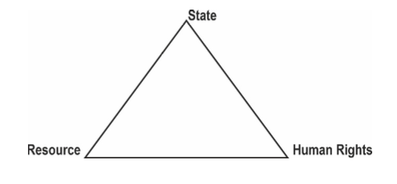
- Criticism
1. It becomes more of seeking physical pleasure, which is a lesser good, not chief good, for humans.
2. It makes people materialistic, selfish, and desirous, which leads to the growth of many unethical practices like materialism, consumerism, the commodification of women, crony capitalism, corruption etc.
3. It promoted greed, which led to the loss of societal values; that is why there is a rise in old-age homes in Western society.
4. It makes people money oriented, which leads to unending competition and race, which in turn disrupts mental peace, which is why we can see the rise in suicide cases in the Western world.
5. Pleasure resulted in greed, which led to compromising means which gave rise to the menace of crony capitalism. That is why Kant criticized this philosophy and gave a new philosophy where the means are more important than the ends.
6. If every individual starts seeking his pleasure without considering the interest of others, then there will be no order in society.
7. Its cost-benefit analysis is more about immediate benefits rather than long-term benefits like the world is facing the challenge of climate change due to the short-sightedness of the West in the past.
8. The philosophy of greatest good to greatest number may lead to
a. Majoritarianism
b. Ignoring the minorities
c. Promotion of survival of the fittest, which may lead to ignorance of weaker people and hence their will, we have no justice in the society. That’s why John Rawls criticised this philosophy and gave the theory of justice, which emphasises justice in society.
9. Furthermore, for utilitarianism, an act is ethical if it provides maximum pleasure to the greatest number of people. As a result, even the most violent action is moral for a utilitarian if it brings the greatest good to the greatest number of people. In addition, the Hedonic calculus is not very useful in emergency or emergent situations because all consequences cannot be anticipated all of the time. Simply put, when making quick moral decisions, you may not have the time to weigh all of the pleasures and pains of all of the people involved and apply hedonic calculus.
- DEONTOLOGY
- Overview
- The term deontology finds its etymology in the Greek word “Deon”, meaning ‘duty,’ ‘obligation,’ or ‘that which is necessary, hence moral necessity’.
- As per the deontological approach:
- It rejects that the moral worth of any action depends on its consequences moral agents have to rigorously fulfil their moral duties or obligations unmindful of the consequences. The moral worth of an action does not depend on its consequences, but a different criterion should be used.
- Moral agents must honour human rights and meet moral obligations even at the cost of an optimal outcome.
- Historically, the most influential deontological theory of morality was developed by the German philosopher Immanuel Kant (1724-1804).
- Thinkers
- i. IMMANUEL KANT
- How to know the truth:
- Immanuel Kant talked about the importance of both empiricism and rationality. Both sensory experience (favoured by utilitarians) and reasoning (favoured by virtue ethics and social contractarianism) are needed for gaining knowledge.
- Sensory experience is the first stage which helps in obtaining data.
- Rationality is the second stage of knowing the duty which includes understanding which helps in putting data in different concepts and categories.
- Both ways can lead to the revaluation of present duty/ morality/ truth/ knowledge and to create new duty/morality/knowledge/truth.
- His idea about the world:
- As he said that rationality is core to finding and creating the moral truth, a new question was raised about where this rule of rationality can be applied, for this purpose, he divided the world into two categories:
- Transcendental world:
- Transcendental world is the one that is beyond the human realm.
- Empirical world:
- Empirical world is the one in which we live.
- He argued that reasoning is only applicable to the empirical world and application of reason to the transcendental world will cause an error.
- As rationality applies only in the empirical world and this world works through morality/rationality. It gave rise to new two questions:
- Kantian ethics is based on two questions–
- i. Why be moral?
- For Kant, a human is a social and rational being. Every society has some set of minimum basic rules for its well-functioning. This set of rules defines the morality of its participants. Hence it is the moral and legal duty of everyone to follow these rules. It means not following these rules will lead to immorality and irrationality.
- ii. What is the basis of morality?
- Now the question raises, whether one should follow all social rules.
- Answering this question, he said no, one is not obliged to follow all the rules rather one is obliged to follow only those rules which are an absolute unconditional requirement that must be obeyed in all circumstances and is justified as an end. He called such rules categorical imperative.
- Categorical Imperative of Kant
- Kant holds that the moral life does not have any place for feeling, emotion or sentience. For him, a moral life is a rational life. He started by asking what it is that distinguishes a moral action from a non-moral action. He concluded that a moral action is done from a sense of duty. Kant grants purity to only one feeling and that is faith in the moral law. The moral law is unconditional or absolute for all agents, the validity or claim of which does not depend on any ulterior motive or end.
- For Kant, the only thing that is unqualifiedly good in this world is goodwill, the will to follow the moral law regardless of profit or loss to us. (Goodwill is free will accompanied by reason).
- For him, there is only one such categorical imperative, which he formulated in various ways. “Act only according to that maxim (rule) by which you can at the same time will that it should become a universal law”. It implies that what is right for one person becomes right for all and what is wrong for one is wrong for all. If you cannot universalise your action to make it right for all, then it is wrong for you too.
- How to achieve categorical imperative:
- There are four principles with the help of which we can achieve this categorical imperative
- Principle of duty:
- Do the things considering them as your duty by following your conscience.
- Principle of equality:
- Any law/moral rule should apply to all equally this can be achieved by following the Veil of ignorance.
- Principle of humanity:
- Considering humans as an end, rational thinking can help in achieving this principle.
- Principle of universality:
- Act in such a way that your action can become a universal action.
- Moral absolutism:
- His idea of universal action will result in a uniform standard of conduct.
- The action should be an end, so he denies the binary of means and end. Action as an end will promote dutiful activity rather than justification of action based on standards of lots. This uncompromising dutiful behaviour is called moral absolutism.
- APPLICATION OF KANTIAN THEORY
- At the individual level
- It will promote rational thinking and duty-fulness.
- If an individual follows his moral command, it will promote moral autonomy, which infuses leadership quality.
- At the administrative level
- Universal action is needed to protect secularism and neutrality.
- Governance based on the proper rational rules will create trust among the subjects.
- CRITICISM OF DEONTOLOGY
- The concept of moral absolutism may not be suitable in a particular situation because morality changes from society to society.
- His preference for moral duty over ends is criticised because human life has some purpose/end then. How one’s action can be devoid of limitation.
- Overemphasis on Rationality:
- Kant's focus on rationality as the primary source of moral value has been criticized for neglecting the emotional and affective aspects of human nature. Critics argue that a purely rational ethics may not adequately address the complexity of human moral experience.
- Rigidity in Moral Rules:
- Kant's deontological framework can be seen as rigid, leading to moral judgments that may seem counterintuitive in some cases. For example, according to Kant, lying is always morally wrong, even in situations where it might prevent serious harm.
- Practicality:
- Critics argue that Kant's moral philosophy, with its emphasis on universalizable maxims, can sometimes be impractical in real-world ethical dilemmas. Determining the correct moral principle in complex situations may prove challenging.
- Nevertheless, Kantian philosophy is relevant for promoting the quality of human conduct, selfless conduct, and acting ethically without influencing by end/ consequences.
- INDIAN THINKERS & PHILOSOPHERS
- Virtue Ethics (Character & Dharma-Focused)
- 1. Kapila (Sāṃkhya)
- Kapila is regarded as the founder of Sāṃkhya, the oldest philosophical system in India. It is dualistic and analytical.
- Two ultimate realities:
- Puruṣa (pure consciousness, passive witness) and Prakṛti (primordial matter, active).
- Evolution of 25 tattvas from Prakṛti under three guṇas:
- Sattva,
- Rajas,
- Tamas.
- Suffering arises from confusion of Puruṣa with Prakṛti. Liberation (kaivalya) through discriminative knowledge (viveka). Path of renunciation, self-control, and cultivation of sattva.
- *Sāṃkhya Kārikā* by Īśvarakṛṣṇa (later systematization).
- 2. Patañjali (Yoga)
- Patañjali codified the Yoga system, building on Sāṃkhya but adding Īśvara as an aid to meditation.
- Suffering comes from mental fluctuations (citta-vṛtti). Goal is cessation of these fluctuations (citta-vṛtti-nirodhaḥ).
- Eight limbs:
- yama (non-violence, truth, non-stealing, continence, non-possessiveness),
- niyama (purity, contentment, austerity, study, surrender to God),
- āsana,
- prāṇāyāma,
- pratyāhāra,
- dhāraṇā,
- dhyāna,
- samādhi.
- Character built through discipline and ethical living.
- *Yoga Sūtras* (around 2nd century BCE).
- 3. Bādarāyaṇa (Vedānta – Brahma Sūtras)
- Bādarāyaṇa compiled the Brahma Sūtras to systematize Upaniṣadic teachings. Core is identity of ātman and Brahman.
- World is māyā; Brahman is sat-cit-ānanda. Ignorance causes bondage.
- Path:
- śravaṇa (hearing), manana (reflection), nididhyāsana (meditation).
- Ethical life through karma yoga, bhakti, jñāna.
- Sub-schools:
- Advaita (Śaṅkara- non-dual),
- Viśiṣṭādvaita (Rāmānuja- qualified non-dual),
- Dvaita (Madhva- dual).
- Teleology thinkers (Ends-Focused Ethics)
- 1. Charvaka (Lokayata) – Materialist Hedonism
- Charvaka is the oldest known materialist school of Indian philosophy, emerging around 6th century BCE. It rejected all supernatural authority, including Vedas, God, soul, karma, and afterlife. It was a philosophy for the common man, focused on worldly happiness.
- Only perception is valid knowledge. Inference, testimony, and analogy are unreliable because they can be deceptive.
- Reality consists of four elements:
- earth, water, fire, air.
- Body is the only self; consciousness arises from material combination like intoxicants from fermentation. No soul survives death.
- Pleasure is the only goal of life. Famous saying- “Yāvajjīvet sukhaṁ jīvet, ṛṇaṁ kṛtvā ghṛtaṁ pibet” (Live happily as long as you live; even if in debt, enjoy ghee). No moral duties, no moksha, no rebirth. Justice exists only as social convention for mutual benefit.
- Bṛhaspati:
- Legendary founder whose sutras are lost.
- Ajita Kesakambalī - Early teacher who said - “There is no merit in giving alms, no result of good or bad deeds.”
- 2. KAUTILYA
- Kautilya, the author of the Arthashastra, was a ruthless realist who judged every action — moral, political, or personal — by one standard: Does it serve the end goal of state power, security, and prosperity?
- According to him:
- End (Telos) = Strong, stable, prosperous kingdom
- Everything else — truth, non-violence, personal morality, even dharma — is subordinate to this goal.
- Means are flexible
- He openly advises the king to use deception, spies, poison, assassination, breaking treaties, and even religious manipulation if they lead to victory.
- Example:
- “A king should break a treaty if keeping it harms the state.” → Classic “ends justify means.”
- Dharma is instrumental, not absolute
- Unlike deontologists (e.g., Jaimini or Kant), who say “Follow duty because it is right in itself,”
- Kautilya says - “Dharma is followed only when it strengthens the state. If it weakens it, discard it.”
- Direct Quote from Kautilya (Arthashastra 1.19):
- “The king shall behave like a tiger — sometimes fierce, sometimes gentle — to protect his kingdom. Morality is a tool, not a master.”
-
| Ground of comparison | Kautilya | Plato |
|---|
| Social order | Favoured caste system | Favoured slavery |
| State | Welfare states and monarchies believed that democracy would result in anarchy. | Welfare states and monarchies believed that democracy would result in anarchy. |
| King should be | Virtuous | Virtuous |
| He favoured | Brahmins | Aristocrats |
| He was | More inclined on politics and statecraft. | Pure philosopher. |
| Thoughts | Realism | Idealism |
| Core to state is | Good governance | Common good |
-
| Ground of Comparison | Kautilya | MACHIAVELLI |
|---|
| Basis of thoughts | Myths and beliefs | Empiricism |
| Imperialism | Supporter | Supporter |
| Flexibility and treachery in war | Supporter | Supporter |
| Secularism | Supporter | Supporter |
| Approach | Utilitarian, Realist | Utilitarian, Realist |
| Differentiate morality of individual and state | Yes | Yes |
| Social order | Caste-based | Class based |
- Deontology (Duty-Focused Ethics)
- 1. Jaimini (Mīmāṃsā)
- Jaimini founded Pūrva Mīmāṃsā, focused on interpreting Vedic injunctions as eternal commands. Dharma is defined solely by Vedic texts.
- Vedic words are self-valid; no creator God needed. Apūrva is the unseen force linking ritual to result.
- Duty is to perform obligatory rituals (nitya karma) for svarga (heavenly pleasure). Prohibited acts lead to sin. No personal God; focus on impersonal Vedic law.
- Social order follows varṇāśrama duties. Justice through ritual correctness.
- *Mīmāṃsā Sūtras* (around 3rd century BCE).
- Applied & Social Reform Ethics
- 1. RAJA RAM MOHAN ROY
- Raja Ram Mohan Roy is known as the “Maker of Modern India”, social and educational reformer Raja Ram Mohan Roy was a visionary who lived during one of India’s darkest social phases but strived his best to make his motherland a better place for the future generations to come.
- Born into a Bengali family in British India, he joined hands with other prominent Bengalis like Dwarkanath Tagore to form the socio-religious organization Brahmo Samaj, the renaissance movement of the Hindu religion which set the pace for Bengali enlightenment.
- CONTRIBUTIONS
a. Social reforms
- During the late 18th century, the society in Bengal was burdened with a host of evil customs and regulations. Practices like child marriage, polygamy and Sati were prevalent that affected women in the society. The most brutal among these customs was the Sati Pratha.
- Roy • Raja Ram Mohan was abhorred by this cruel practice, and he raised his voice against it. Lord Bentinck sympathised with Roy’s sentiments and intentions and amid much outcry from the orthodox religious community, the Bengal Sati Regulation or Regulation XVII, A. D. 1829 of the Bengal was passed. The act prohibited the practice of Sati in Bengal Province, and any individual caught practicing it would face prosecution.
b. Educational Reforms
- He advocated the introduction of a Modern Education System in the country teaching scientific subjects like Mathematics, Physics, Chemistry and Botany.
- He paved the way to revolutionizing education system in India by establishing Hindu College in 1817 along with David Hare which later went on to become one of the best educational institutions in the country producing some of the best minds in India.
- His efforts to combine true to the roots theological doctrines along with modern rational lessons led to the establishment of Anglo-Vedic School in 1822 and Vedanta College in 1826.
c. Religious contributions
- Ram Mohan Roy vehemently opposed the unnecessary ceremonialism and the idolatry advocated by priests. He had studied religious scriptures of different religions and advocated the fact that Hindu Scriptures like Upanishads upheld the concept of monotheism.
- 2. SWAMI VIVEKANANDA
- He talked about practical Vedanta, which has the following components
- Universality:
- Vedanta is universal in the sense that its truths apply to the whole of humanity in general. It is the same current that flows through every human being. Vedanta is universal in the sense that it is rooted in the idea of the oneness of all and the unbroken continuity of existence.
- Impersonality:
- Vedanta depends upon no persons or incarnations. Its eternal principles depend upon its own. Vedanta alone is based on principles, whereas all other religions are based on the lives of their founders, like Islam (Prophet Muhammad)
- Rationality:
- Vedanta is in complete agreement with the methods and results of modern science. Its conclusions are pre-eminently rational, being deduced from widespread religious experience, For example, the Vedantic idea of the spiritual oneness of the whole universe.
- Vedanta has discovered that there is but one soul in the universe and that all beings are only Configurations of that one Reality. From this oneness, the solidarity of the universe can be deduced.
- Vivekananda believed in this oneness of humanity. Vivekananda says that Vedanta’s spiritual oneness serves as a firm ground for all ethical teaching. "Love your neighbours yourself'; one loves another because one sees oneself in the other the application of Vedantic truth to political and social life results in the spiritualism of democracy, socialism, liberty, equality and fraternity.
- Optimism:
- Optimism (Hopefulness) is the life breath of Vedanta. It teaches unshakable optimism. It alone makes men strong and self-reliant. It insists upon the inherent divinity of the human soul under all circumstances.
- 3. RABINDRANATH TAGORE
- He was born into a wealthy Brahmin family. After a brief stay in England (1878) to attempt to study law, he returned to India, and instead pursued a career as a writer, playwright, songwriter, poet, philosopher and educator.
- In 1901 Tagore founded an experimental school in rural West Bengal at Shanti Niketan (“Abode of Peace”), where he sought to blend the best in the Indian and Western traditions. He settled permanently at the school, which became Visva Bharati University in 1921. He was awarded Nobel Prize in 1913 in literature for Gitanjali. Tagore was awarded a knighthood in 1915, but he repudiated it in 1919 as a protest the Amritsar (Jallianwala Bagh) Massacre.
- VIEWS ON FREEDOM
- Enlightenment of soul through self-realization:
- Freedom will provide an opportunity to attain enlightenment of soul. It is only because by pursuing a goal in an atmosphere of freedom, one will get a scope to realize oneself. That self-realization will enlighten the soul and illumine it.
- Political freedom accompanied by spiritual freedom:
- Tagore envisaged that political freedom is not freedom unless it is accompanied by spiritual freedom. Spiritual freedom is the guiding force behind political freedom. It will show the right path to an individual in realizing his political goal. The same is also applicable in the case of a nation too.
- Comprehensive social and cultural growth:
- Tagore viewed that freedom would lead to 'comprehensive social and cultural growth. For that growth, he never accepted the idea of either the Moderates or Extremists. To him, the Moderates failed in revealing the real worth of Indian culture while the Extremists put emphasis on techniques of action being unmindful of Indian social customs and traditions. Thus, both were rejected by Tagore for social and cultural growth.
- Self-government:
- To pursue freedom, Tagore needed self-government for India. Through that, the country will attain enlightenment. It will lead the country on the path of progress. Self-government is the medicine to cure all political ailments. He, therefore, pleaded for the freedom of India, China and Siam.
- Freedom of the individual and freedom of nation:
- Tagore wanted freedom of the individual and freedom a of nation. Without one, the other is incomplete. This will provide an opportunity to the individuals to see one within himself and within the world. This will help an individual also to project himself during May. That will be the lasting impact of freedom on mankind. Tagore not only wanted political freedom, but he wanted the freedom of 'an individual too. Freedom, to him, is to illumine the soul and an individual to make him feel that he was a component part of the great creation of God where freedom pervades.
- EDUCATION - PHILOSOPHY OF TAGORE
- Tagore's ideas for creating a system of education aimed at promoting international cooperation and creating global citizens. Tagore envisioned an education that was deeply rooted in one’s immediate surroundings but connected to the cultures of the wider world, predicated upon pleasurable learning and individualised to the personality of the child. He felt that the curriculum should revolve organically around nature, with flexible schedules to allow for shifts in weather, and with special attention to natural phenomena and seasonal festivities.
- The aims reflected in the institution founded by Tagore:
- Self-realisation:
- Spiritual is the essence of humanism. Manifestation of personality depends upon the self-realisation and spiritual knowledge of the individual.
- Intellectual Development:
- It means the development of imagination, creative free thinking, constant curiosity, alertness of the mind. Freedom of child to adopt his own way of learning, which would lead to all-round development.
- Physical development:
- Sound and healthy physique through yoga, games, sports as integral part of education.
- Love for Humanity:
- Education for international understanding and universal brotherhood. Education should teach people to realise oneness.
- Freedom:
- Education is a man-making process, it explores the innate power that exists within man, it is not an imposition, but a liberal process that provides utmost freedom for development.
- Co-relation of objects:
- A peaceful world is only possible when correlation between man and nature will be established.
- Mother-tongue as medium of instruction:
- Language is the true vehicle of expression.
- Moral and spiritual development:
- It is more important than bookish knowledge for an integral development of human personality, by encouraging selfless acts, co-operation, sharing and fellow feeling among students.
- Social Development:
- ‘Brahma’ the supreme soul manifests through men and all creatures. He is the source of all life. Brotherhood should be cultivated from the beginning of life.
- SPIRITUAL HUMANISM OF TAGORE
- The basic tenets of ‘spiritual humanism’ encourage the spiritual experience of oneness with the universe and love for all humanity. It does not believe in detachment from worldly pleasure, asceticism and deliverance rather it preaches to embrace the aesthetic beauty of the world and to admire all worldly creatures.
- Tagore's idea of spiritual humanism is as follows:
- Importance of man:
- In pursuing spiritual humanism, Tagore put emphasis on man. Man is an end in itself. God is simply a symbol of human perfection. It is the consciousness within a man that makes him' perfect.
- No place of selfish individualism:
- In case of Tagore’s spiritual humanism, there is a place of narrow and selfish individualism. The perfection what an individual attains is not his personal possession. It is also aimed at the benefit of society. So, selfish individualism is sacrificed at the altar of broader spiritual humanism.
- Perfection of man through development personality:
- Tagore envisaged that the perfection of man is attained through the development of personality. The perfection attained by the man should be applicable to the entire society but not to the individual alone.
- Rejection of hedonism and utilitarianism:
- In pursuing spiritual humanism, Tagore never put emphasis on hedonism and utilitarianism which seek to attain happiness as much as one can within a short span of me because human being has to quit the world for good within a particular period.
- 4. MAHATMA GANDHI
- Gandhi was an eminent freedom activist and an influential political leader who played a dominant role in India's struggle for independence. Today, Gandhian values have special significance for national integration. Communal harmony has become essential for national integration and hence Gandhi gave it the highest priority.
- VIEWS OF GANDHIJI
- a. Harmony
- By communal harmony, Gandhiji did not mean merely paying lip service to it. He meant it to be an unbreakable bond of unity. In the religious context Gandhi emphasized that communal harmony must be based on equal respect for all religions.
- Everyone, Gandhi said, must have the same regard for other faiths as one had for one's own. Such respect would not only remove religious rifts but lead to a realization of the fact that religion was a stabilizing force, not a disturbing element. Gandhi's basic axiom was that religion since the scriptures of all religions point only in one direction of goodwill, openness and understanding among humans.
- b. Views on Education
- He regarded education as the light of life and the very source from which was created an awareness of oneness. Gandhi believed that the universality of ethics can best be realized through the universalisation of education, and that such universalisation was the springboard for national integration. Harmony is not brought about overnight.
- Gandhi advocated the process of patience, persuasion and perseverance for attainment of peace and love for harmony and was firmly convinced of the worth of gentleness as panacea for all evils. Communal harmony had the pride of place in Gandhi's constructive program.
- He taught us the dignity of labour as a levelling social factor that contributed to a national outlook in keeping with the vision of new India.
- He always believed that a nation built on the ethical foundation of non-violence would be able to withstand attacks on its-integrity from within and without.
- c. Humanisation of Education
- Gandhi pleaded for the humanization of knowledge for immunization against the ideas of distrust among the communities of the nations and the nationalities of the world.
- He wanted to take the country from areas of hostility into areas of harmony of faiths through tolerance, so that we could work towards understanding each other.
- His mass contact program was specifically aimed at generating a climate of confidence and competition and eliminating misgiving and misconceptions, conflicts and confrontation.
- d. Views on other issues
- Gandhi held that bridging the gulf between the well off and the rest was as essential for national integration as inter-religious record.
- He said that we must work for economic equality and social justice, which would remove the ills caused by distress and bitterness.
- He stressed that the foundation of equality, the core of harmony will have to be laid here now and built-up brick by brick through ethical satisfaction of the masses. There is no denying the fact that Gandhi was deep rooted in his cultural and religious traditions.
- The phenomenal success Gandhi registered in faraway South Africa fighting for human rights and civil liberties and later the adoption of the Gandhian techniques by Nelson Mandela and the subsequent revelations made by the former South African president De Klerk that he was greatly influenced by Gandhi's principles.
- Gandhi successfully demonstrated to a world, weary with wars and continuing destruction that adherence to Truth and Non-violence is not meant for individual behaviour alone but can be applied in global affairs too.
- Seven social sins by Gandhi:
- 1. Politics without principles;
- 2. Wealth without work;
- 3. Commerce without morality;
- 4. Education without character;
- 5. Pleasure without conscience;
- 6. Science without humanity
- 7. Worship without sacrifice
- 5. DR. B.R. AMBEDKAR
- Dr B R Ambedkar, popularly known as Babasaheb Ambedkar, was one of the architects of the Indian Constitution. He was a well-known politician and an eminent jurist. Ambedkar's efforts to eradicate the social evils like untouchability and caste restrictions were remarkable. The leader, throughout his life, fought for the rights of the Dalits and other socially backward classes. Ambedkar was appointed as the nation's first Law Minister in the Cabinet of Jawaharlal Nehru. He was posthumously awarded the Bharat Ratna, India's highest civilian honour in 1990.
- AMBEDKAR VIEWS ON SOCIAL JUSTICE
- It has been a sad historic fact of Indian society that lower castes have been exploited and dominated upon by the upper castes and for that reason the lower castes have mostly also been the lower classes economically and vice versa. Until the British period there had never really been many revolts or movements on behalf of the lower castes and untouchables to seek social justice. But during the freedom movement there were many leaders and movements throughout India.
- The most prominent voice of and for the lower castes had emerged in the person of B.R. Ambedkar who hailed from the untouchable Mahar caste in what is today, Maharashtra. Even today Ambedkar is a hugely influential political symbol and legacy who is followed by many political forces throughout the length and breadth of India.
- Ambedkar's aim was to get justice for the 'last, the lost and the least' and he emerged as a sort of revolutionary leader of India's Hindu untouchable and other castes. His aim was to fight for their equality and seek improved living conditions for them and reach education among them and get adequate representation for them in elected bodies and in government services.
- During the freedom struggle, Ambedkar's emphasis on issues related to social justice forced the leaders of the national movement to take these up as part of the agenda associated with the main demand for unshackling the country from the chains of colonialism.
- In his own personal life and career Ambedkar had to face caste discrimination and harassment of the most severe kind and was foiled in his career repeatedly. Even though he was highly educated and had advanced degrees from the world-famous Columbia University of New York and the University of London where he did his D.Sc., any job that he took up back home in India he could not continue with because upper caste subordinates refused to work with him or otherwise frustrated him. For instances when he took up employment in the government of the princely state of Baroda, his upper caste subordinates humiliated him and ultimately forced him to resign. Even at the Bombay University he was treated badly by upper caste colleagues, and he was ultimately forced to resign. 1924 onwards Ambedkar was fully in a political movement and the national struggle.
- Ambedkar in his work Who Were the Shudras? questioned the whole Hindu social order and tried to create a theory that the shudras were not a separate varna or caste but were originally Kshatriyas who in a struggle with Brahmins were manipulated out of the Kshatriya caste by the Brahmins and were deprived of the sacred thread.
- Therefore, they lost their social position due to this move of the brahmins and became backward and degraded. Similarly, he attacked the Hindu theory on untouchables and used anthropometric and ethnographic evidence to try to prove that there had been no racial, ethnic or occupational basis for the origin of untouchables.
- He proposed a hypothesis that the untouchables were originally disciples of Buddha and were Buddhists, but the Hindus led by the Brahmins to try to undermine Buddhist influence and stop its spread put the untouchables in a corner and started branding them untouchables.
- He believed the root of all lack of social justice in India was the caste system that created the environment for exploitation of man by man - of the shudras and untouchables by the brahmins and other upper castes. He believed no democracy is possible in India without first establishing social justice by annihilation of caste. So, he took a position that was opposed to the position of both the Congress and Gandhiji who wanted political reform and independence from the British colonial rule first and the socialists and Marxists who wanted economic equality established first.
- He believed lack of social justice because of the caste system would never be dismantled by the upper castes because it served their interests and by any system of western styled democracy because all institutions from the parliament to the judiciary would be dominated by the upper castes who would manipulate and control the system to make sure shudras and untouchables don't come up.
- He also felt the economic exploitative basis of the caste system was so solidly to the benefit of upper castes they would never be willing to change the situation. That is the reason he wanted constitutional safeguards and direct representation from the lower castes and Dalits in all democratic institutions from the parliament to the judiciary.
- His views on social justice are to be found in his books and speeches. His most important works are Annihilation of Caste (1936), Who were the Shudras (1946) and the The Untouchables (1948). Also, his writings like What Congress and Gandhi have done to the Untouchables.
- He put forward brilliant well researched attacks on the exploitative Hindu caste system particularly with respect to how untouchables were treated and fought all his life to secure legal and constitutional safeguards for their rights.
- It is interesting although he had attacked Gandhi's Congress Party's views and attitudes on the caste system quite severely and in a scathing manner in his writings, Gandhiji suggested Ambedkar's name to head the committee to draft the Constitution.
- Summary of the some of the Ambedkar's work
- 1. Annihilation of Caste (1936)
- A powerful critique of the Hindu caste system and its religious justification.
- Ambedkar argued that caste is incompatible with democracy and human equality.
- He called for the complete destruction (“annihilation”) of the caste system, not just reform within it.
- Stressed the need for social restructuring based on liberty, equality, and fraternity.
- Asserted that Hindu scriptures, which sanctify inequality, must be questioned and rejected if necessary.
- 2. Who Were the Shudras? (1946)
- A historical analysis of the origin of the Shudra caste.
- Ambedkar argued that the Shudras were originally Aryans belonging to the Kshatriya class, but were socially degraded due to conflicts with the Brahmins.
- The book exposes how social hierarchy and religious dominance were used to suppress certain groups over time.
- 3. The Untouchables (1948)
- Explores the origin and treatment of untouchables (Dalits) in Indian society.
- Ambedkar claimed that untouchability arose from religious and economic motives, especially after Buddhism’s decline.
- He linked untouchability to the rigid Brahmanical social order, describing it as the worst form of human inequality.
- Advocated for education, political representation, and economic independence as means to uplift the oppressed.
- 4. What Congress and Gandhi Have Done to the Untouchables
- A sharp critique of Congress’s and Gandhi’s approach to the Dalit issue.
- Accused the Congress of tokenism and hypocrisy—of claiming to fight for freedom while ignoring the freedom of Dalits.
- Rejected Gandhi’s term “Harijan”, calling it paternalistic and morally deceptive.
- Emphasized the need for independent Dalit political organization to ensure real representation.
- 6. JAWAHAR LAL NEHRU
- Nehru was born on November 14, 1889, in Allahabad, India. In 1919, he joined the Indian National Congress and joined Indian Nationalist leader Mahatma Gandhi’s independence movement. The British withdrew and Nehru became independent India’s first prime minister. He died on May 27, 1964, in New Delhi, India.
- VIEWS ON DEMOCRATIC SOCIALISM
- Democratic Socialism as an ideology is an extension of the liberal propagation of democracy altered to suit the needs of all the countries of the world. It is an ideology that believes that the economy and the society should function democratically to meet the needs of the whole community.
- The ideology believes that democracy and socialism are one and indivisible, there cannot be a true democracy without a true socialism, and there cannot be a true socialism without a true democracy. The two come together in equality, social justice, fair share for all and an irreversible shift in the balance of wealth and power to workers and their families.
- VIEWS ON FREEDOM
- Nehru highly esteemed freedom. By his concept of freedom, he meant the freedom of speech and expression, association and several other aspects of creativity. He had given integrated conception of political, social and economic freedom which will only operate in a socialistic pattern of society.
- VIEWS ON SECULARISM
- Nehru was a rationalist knowing well that human values were superior to religious orthodoxies.
- His secular credentials were based upon his rational humanistic attitude towards life, and this life was more important than the one after death. His emphasis on the development of scientific temperament is a great contribution to India because it initiated the fight against religious obscurantism and superstition which the whole country was steeped in.
- Nehru's concept of secularism implied the existence of a uniform civil code for the people of India. He considered the existence of different sets of laws governing different communities as inconsistent with his ideal of a secular society.
- 7. VALLABHBHAI PATEL
- He was born on October 31, 1875, in Nadiad village of modern-day Gujarat, Sardar Patel started his academic career in a Gujarati medium school and later shifted to an English medium school. He went to pursue a degree in law and travelled to England in 1910. He completed his law degree in 1913 from Inns of Court and came back to India to start his law practice in Godhra, Gujarat. For his legal proficiency, Vallabhbhai was offered many lucrative posts by the British Government, but he rejected all.
- CONTRIBUTIONS
- Sardar Patel dominated the Indian political scene from 1917 to 1950 and dedicated himself to the freedom struggle and reorganised the Indian National Congress. After Independence, he managed sensitive portfolios such as Home and the States. Following the Partition, he restructured the bureaucracy and integrated the princely States.
- Patel laid the foundation of political democracy by being an important member in the drafting of the Indian Constitution. Thus, he emerged an astute leader and a sagacious statesman acknowledged as the ‘Iron Man’ and a founder of modern India.
- POLITICAL AND SOCIAL VIEWS
- As a fiery champion of fundamental rights and liberty, he was convinced that these values were essential pre-requisites for the development of the individual and a nation. He always raised his voice on several issues against exploitation and criticised the high-handedness of authority, the exploitative revenue policy of the Government and maladministration in the Princely states.
- He not only criticised the arbitrary policies of confiscation of movable and immovable properties, but also insisted on guarded regulations on land reforms and nationalisation of key industries. His efforts to reform the Hindu religion and protect the people of other faiths reflected his longing for the right to religion.
- He encouraged the duly elected authority to bring restrictions through various legislative measures to freedom for all. Thus, his political value system was a fine synthesis of liberalism, conservatism and welfarism.
- His vision of State was in tune with the pattern of his political values. In his concept, the State was founded and held together by a high sense of nationalism and patriotism. Individual liberty was to be in conformity with the provisions of the Constitution, to create a Nation-State, he pressed for the emancipation of backward communities and women and bring about Hindu-Muslim unity through the Gandhian constructive program and skilfully utilised the higher castes for social integration and political mobilisation.
- Thus, he strengthened the plural basis of the nation-state by bringing electoral participation as effective political mobilisation. He saw a nation as ‘democratic in structure, nationalistic in foundation and welfarist in spirit and function’.
- Patel worked extensively against alcohol consumption, untouchability, caste discrimination and for women emancipation in Gujarat and outside.
- 8. MOTHER TERESA
- Mother Teresa was a Roman Catholic nun who devoted her life to serving the poor and destitute around the world. She spent many years in Kolkata where she founded the Missionaries of Charity, a religious congregation devoted to helping those in great need. In 1979, Mother Teresa was awarded the Nobel Peace Prize and became a symbol of charitable, selfless work. In 2016, Mother Teresa was canonised by the Roman Catholic Church as Saint Teresa.
- CONTRIBUTIONS TOWARDS SOCIETY
- Mother Teresa had numerous values and beliefs that shaped her work and guided her. She was a Christian and followed in the footsteps of Jesus, constantly caring for the poor in Calcutta.
- Mother Teresa believed that she served God by serving and nursing the poor. She believed in the three vows of poverty, chastity and obedience, and took an extra that she would give 'wholehearted and free service to the poor'.
- She believed that no one should be left behind and that everyone should feel wanted. These few beliefs contributed greatly to her life and affected her choices, relationships with others and society.
- MAJOR CONTRIBUTIONS ARE
- In 1950, Mother Teresa established the Missionaries of Charity, a Roman Catholic religious congregation. It began as a small community with 12 members in Kolkata, India. It then began to attract recruits and donations; and by the 1960s it had opened hospices, orphanages and leper houses throughout India. In 1965, Pope Paul VI approved Mother Teresa’s request to expand her congregation to other countries. Its first house was opened in Venezuela the same year. It continues to care for those who include refugees, former prostitutes, the mentally ill, sick children, abandoned children, lepers, people with AIDS, the aged and convalescent.
- In 1952, Mother Teresa opened her first hospice for the sick, destitute and the dying in Kalighat, Kolkata with help from Indian officials. She did so by seeking permission to use an old abandoned Hindu temple to the goddess Kali. Known as the Kalighat Home for the Dying, the hospice provided medical attention to those in need, and it gave people the opportunity to die with dignity in accordance with their faith.
- In 1955, Teresa’s Missionaries of Charity opened Nirmala Shishu Bhavan, the Children’s Home of the Immaculate Heart. It was their first children’s home which cared for orphans. The centre took homeless children and provided them with food, shelter and medical care. When possible, the children were adopted out. Those not adopted were given an education, learned a trade skill and found marriages.
- Mother Teresa created a Leprosy Fund and a Leprosy Day to help educate the public about leprosy as many people feared the contagious disease. She also established several mobile leper clinics to provide the infected with medicine and bandages near their home.
- CHAPTER 6 - ETHICS IN PUBLIC ADMINISTRATION
- 1. ETHICS IN PUBLIC ADMINISTRATION
-
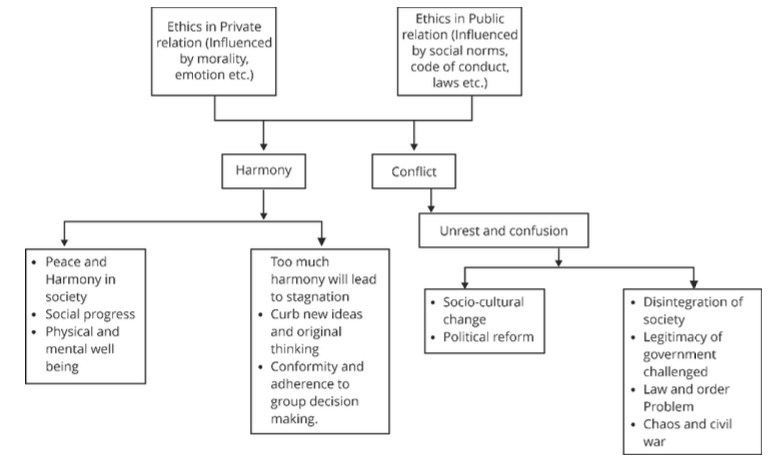
- MEANING OF ETHICS IN ADMINISTRATION/GOVERNANCE (PUBLIC SERVICE ETHICS/ADMINISTRATIVE ETHICS)
- The term public service ethics or administrative ethics refers here to principles and standards of right conduct in the administrative sphere of government. It has the following dimensions:
- 1. Ethics in politics.
- 2. Ethics in the legislature.
- 3. Ethics in the political executive.
- 4. Ethics in permanent executive (bureaucracy).
- 5. Ethics in regulators.
- ETHICS IN PUBLIC ADMINISTRATION
- IMPORTANCE OF ETHICS/VALUES IN PUBLIC ADMINISTRATION
- Public servants have traditionally been advised that responsible administrative behaviour requires that they adhere to several general rules and commandments such as:
- To act in the public interest.
- Be politically neutral.
- Do not disclose confidential information.
- Provide efficient, effective and fair service to the public.
- Avoid conflicts of interest.
- Be accountable.
- Several difficulties arise from these generally worded commandments:
- Lack of clarity and certainty in their meaning and how to use them in practice.
- The formulation of the rules has been top-down rather than bottom-up. For rules to be effective, they must not only be externally accepted but also internalized. The appropriateness of rules can thus be questioned. For example, political neutrality although a core principle of civil services is practically unimplementable. The working relations between civil servants and politicians make it difficult to be neutral.
- Third, the rules sometimes clash with one another, at least in interpretation. Often the correctness of decisions is defended by being target oriented whereas indecision is defended by being means/rules oriented. Efficiency, speed and effectiveness may sometimes compromise objectivity, accountability, responsibility and empathy.
- There is a need to ensure that there is a continuous evaluation and evolution of rules of decision-making considering the socio-economic-political change in the country.
- 2. RATIONALITY BEHIND DEED FOR ETHICS/ VALUES IN ADMINISTRATION
- Philosophical reasons:
- To maintain a general will (Rousseau) in Government’s favour, otherwise, the government may be changed by people.
- To fulfil the obligation of the social contract (Thomas Hobbes, John Locke)
- Following one’s moral duty will help in making his action a universal action (deontology of Kant).
- Following ethics in administration promotes the greatest good to the greatest numbers (Bentham, JS mill).
- Following ethics in administration ensures justice in society (Jhon Rawls)
- To uphold the integrity.
- To ensure transparency.
- To secure national interest.
- Ethics help Civil Services to ensure the achievement of the highest possible standards in all that the Civil Service does.
- Ethics/Values provide a framework for accountability between the public and the administration and ensure that the public receives what is due to it in a fair, just and transparent manner so that it is widely acceptable
- Legal reasons:
- Constitutional obligation, Part IV (DPSP) mandates that we import scientific temper, humanism and spirit of enquiry within us.
- Article 14 makes it an obligation for civil servants to be impartial.
- Tolerance stems from the constitutional value of secularism.
- Objectivity and the rule of law come from the constitutional directive of articles 14 and 15.
- Acts such as Prevention of Corruption act, Right to Information Act establish legal framework for standards of public service.
- Code of conduct establish accountability for the acts of omission and commission.
- The ethical obligations of public services:
- Selflessness
- Integrity
- Honesty
- Compassion
- Dedication
- Probity
- Efficiency
- Effectiveness
- Economy
- Impacts of lack of ethics in administration
- Loss of legitimacy.
- Trust and credibility will be eroded.
- Social capital will dilute.
- The developmental process will be slow.
- Good governance will not be possible.
- Thus, we can say that values are essential components of organisational culture and instrumental in determining, guiding and forming the behaviour of civil servants. Good governance requires the selection, profession, practice and propagation of the finest values and ethics prevailing at different levels in different societies and cultures.
- Factors affecting ethics/determinants of ethics in administration
- Historical factors:
- Corruption in the Indian system has its roots in colonial rule. On the other hand, Japanese society has a history of high ethical standards in public life.
- Legal Factors:
- Impartial implementation of law promotes ethical behaviour in the administration, for example, like in UK, even highest public office is not above law. (Prime Minister Boris Jonson's party case). On the other hand, in the case of India, even relatives of politicians consider themselves above the law (MLA’s was caught on camera attacking a Municipal Corporation officer with a cricket bat)
- Socio-cultural factors:
- Administrative class emerges from society itself. Values and behavioural patterns prevalent in society are likely to reflect in the conduct of administration. The cultural system including its religious orientation appears to play a significant role in influencing the work ethics of its people.
- It is usually seen that developing countries lack ethics compared to developed countries.
- It is also said that the constitution has been imposed upon people. The values of, liberty, fraternity, equality and Justice were imposed on people by the Constitution. We may not have been ready for it.
- That’s why we are seeing the dominance of caste (Rohit Vemula case), gender (Former Andaman & Nicobar Islands chief secretary was accused of gang rape), and religion based discrimination in Indian administrative system.
- Economic Factors:
- Maslow's hierarchy of needs shows that the fulfilment of basic needs comes before the fulfilment of other psychological needs. Ethics is a need of the mind rather than the belly. It is seen that violence is normal in resourceless areas. Historically, we see that riots have happened in poverty-stricken areas of country, however, it is not always true.
- Ethical Concerns in public organisations and their solutions
- Moral crisis in the forms of dilemmas/Value conflicts/conflict of interest:
- A moral crisis is a situation where there is erosion or absence of morality in society or within a person. People fail to stand up to a situation, violating their moral standards.
- Such a crisis arises when we chose a lesser good in case of dilemma.
- A dilemma is a situation of conflict between two competent values. An outbreak of Covid -19 created many dilemmas; dilemmas in administration can be found in one of the three forms:
- Personal Cost Ethical Dilemmas:
- These occur when adhering to ethical principles imposes a significant personal burden on the decision maker in challenging circumstances.
- Right-versus-Right Ethical Dilemmas:
- These emerge when there are conflicting sets of genuine ethical values, presenting a dilemma in choosing between them.
- Conjoint Ethical Dilemmas
- These arise when a conscientious decision-maker is confronted with a fusion of the aforementioned ethical dilemmas while seeking to determine the morally correct course of action.
- 3. ETHICAL DILEMMA
- An ethical dilemma is a situation of the clash between two or more equally competent values (both should be either positive or negative values, it is usually not possible between positive and negative values as the choice is simpler there.
- When do we face an ethical dilemma?:
- There are three kinds of questions we face in life
- i. Aesthetic questions:
- For example, do you like the colour blue? Do you like vanilla-flavored ice cream? The answer is highly subjective.
- ii. Scientific question:
- Is the earth flat? Why ocean appears blue? The answer is highly objective.
- iii. Ethical question:
- Should Universal Basic Income be implemented? Here, there are multiple criteria – Individual morality, conscience, social ethics, religious ethics, constitutional ethics, international ethics etc. Due to multiple criteria, there is a clash between values leading to an ethical dilemma.
- An ethical dilemma is a situation in which one must choose between two or more equally competent values.
- Reasons/factors for dilemma in administration
- Different perspectives about right and wrong.
- Ambiguity in laws, rules and procedures.
- Traditional values vs modern values.
- Different ideologies.
- Uncertainty of consequences.
- Alternatives are equally justifiable.
- Conflict in consequences for different stakeholders.
- VARIOUS FORMS OF ETHICAL DILEMMA
- Dilemmas are unavoidable, particularly in the organisation performing many fold tasks and winning the range of stakeholders. Instances of value conflict
- 1. Merit vs social justice (reservation)/ Justice Vs Equal Treatment.
- 2. Centralization vs Decentralization.
- 3. A public servant or Political servant.
- 4. Truth Vs loyalty.
- 5. Information sharing Vs confidentiality.
- 6. Means Vs Ends.
- 7. Law Vs Ethics.
- 8. Personal interest Vs Public interest.
- 9. Secrecy vs Transparency.
- 10. Honesty vs efficiency.
- 11. Rule vs flexibility.
- 12. Mitigating economic hardship of Vulnerable Vs Financial prudence.
- 13. Order Vs Conscience.
- 14. Short-term gain Vs Long term gain.
- 15. Reason vs Emotions.
- 16. Liberty Vs Conservatism.
- 17. Modernity Vs Traditionalism.
- 18. Tolerance Vs Resistance.
- 4. CONFLICT OF INTEREST
- A conflict of interest is a particular type of value conflict where a set of circumstances creates a risk that professional judgement or actions regarding a primary interest (public interest) will be unduly influenced by a secondary interest (personal gains). Eg – if the personal well-being of civil servants comes in conflict with their duty as a public servant, there is a conflict of interest.
- The presence of Conflict of interest is not wrong in itself, but how a person resolves it can be categorised as ethical or unethical.
- Three forms of conflict of interest
- 1. An actual conflict of interest:
- Where an officer can be influenced by their private interest when doing their job. For example: -
- Cash for vote scam in Andhra Pradesh assembly, 2015.
- 2G spectrum case:
- Telecom minister was accused of favouring certain telecom groups in allocation of licenses.
- Adarsh society scam:
- Secretaries and ministers allocated flats to their relatives which were meant for war widows.
- N Srinivasan:
- served as director of BCCI, at the same time he was also owner of Chennai Super Kings raising concerns about transparency in BCCI governance.
- 2. Perceived conflict of interest:
- When an officer is in a position to appear to be influenced by their interests when doing their job. For example:
- Justice Kurian Joseph went to attend the canonisation of Mother Teresa in Rome with an Indian delegation. The Italian authorities organised dinner but Justice Joseph did not attend it as he was looking into the case of Italian marines.
- Indian High Commissioner to the United Kingdom Navtej Sarna walked out of a book launch event attended by Vijay Mallya to avoid any perceived conflict of interest.
- Concept of All India Services where most candidates do not serve in their home state.
- A poorly managed perceived conflict of interest can be just as damaging as a poorly managed actual conflict of interest. Public sector officers must not only behave ethically but they must also be seen to behave ethically.
- 3. A potential conflict of interest:
- When an officer is in a position where they may be influenced in the future by their private interests when doing their job. For example:
- Advising a client to invest in a company owned by your spouse.
- A professor using his position to promote a book authored by him.
- Radia tape case, in which relationships between media houses and political executives came into question.
- Steps for resolving Conflict of Interest/ethical dilemma (6Rs)
- 1. Register:
- Where details of the conflict of interest are declared and registered. (In low-risk situations this single strategy may be sufficient.)
- 2. Restrict:
- Where restrictions are placed on the officer’s involvement in the matter.
- 3. Recruit:
- Where a disinterested third party is used to oversee part or all of the process that deals with the matter.
- 4. Remove:
- Where the officer chooses or is requested, to be removed completely from the matter.
- 5. Relinquish:
- Where the officer relinquishes the private interest that is creating the conflict.
- 6. Resign:
- Where the officer resigns from their position with the agency. (This strategy should be considered only if the conflict of interest cannot be resolved in any other workable way.)
- 5. FRAMEWORK TO RESOLVE ETHICAL DILEMMA & CONFLICT OF INTEREST
- Resolving Ethical Dilemmas- Here is an approach to resolve ethical dilemmas:
- 1. Identify the Dilemma:
- Clearly define the nature of the dilemma and the conflicting ethical principles or values involved, and asking yourselves, does the decision involves choices between two right and wrongs?
- 2. Gather Information:
- Collect all relevant facts and understand the context of the situation, for examples, the stakeholders involved and the potential consequences of different actions, what are the options available for taking the ethical decision?
- 3. Consider the Options:
- Identify possible courses of action. Evaluate each option based on ethical principles, such as fairness, justice, and respect for persons.
- 4. Weigh the Consequences:
- Analyze the potential outcomes of each option. Consider both short-term and long-term consequences, as well as who will be affected and how.
- 5. Apply Ethical Theories:
- You can utilize ethical theories and frameworks to analyze the dilemma. Some of the common approaches include:
- Deontological Ethics:
- Focuses on adherence to rules, duties, and obligations.
- Utilitarianism:
- Evaluates actions based on their outcomes and aims to maximize overall happiness or minimize harm.
- Virtue Ethics:
- Considers what a virtuous person would do in the given situation, emphasizing character and moral virtues.
- Justice approach:
- Evaluates the actions based on the violation of principles of natural justice and idea that everyone should be treated fairly and equally.
- Rights based approach:
- Gandhian approach:
- Gandhian talisman can be used for the resolution of dilemmas.
- Laws rules and codes:
- Following laws rules and codes of conduct provide an significant anchor in case of being faced with ethical dilemmas.
- 6. Consult Others:
- At times, you can seek advice from professionals, seniors, trusted colleagues, mentors, or experts in the field. Different perspectives provide valuable insights and help clarify the decision-making process.
- 7. Make a Decision:
- Choose the course of action that best aligns with ethical principles and values, considering the gathered information and analysis.
- 8. Implement and Reflect:
- Carry out the chosen action and monitor its outcomes. Reflect on the decision-making process and the results to learn from the experience and improve future ethical decision-making.
- 9. Document the Process:
- Keep a record of the decision-making process, the rationale for the chosen action, to provide transparency and accountability in case of future issues.
- 6. LAWS/RULES/REGULATIONS & CONSCIENCE AS SOURCES OF ETHICAL GUIDANCE FOR RESOLVING ETHICAL DILEMMAS
- There are two fundamental problems in resolving ethical dilemmas –
- 1. What are the basic sources of standards for ethical decision-making?
- 2. How do these standards get applied to the specific situation we face?
- Things should not be taken as sole sources of standards for ethical decision making, for example:
- 1. Religion:
- Faith and prayers and resistance to vaccinations as preached by certain religions cannot be made a criterion for making decision in case of fight against pandemic.
- 2. Law:
- Section 377 was a law for more than 200 years.
- 3. Social norms:
- Dowry, Jallikattu, child marriage etc.
- 4. Science:
- No issue with abortion technically.
- 5. Feelings:
- Many times, one can feel good even after doing wrong.
- LAW AS A SOURCE OF ETHICAL GUIDANCE
- Types of laws as per Thomas Aquinas
- Eternal law:
- They are not made but exist eternally, simply we can think of eternal law as comprising all those scientific (physical, chemical, biological) ‘laws’ by which the universe is ordered (law determining planetary motions, the flow of energy, conservation of mass/energy)
- Devine law:
- laws that are revealed to humans through sacred texts like Bhagawad Gita, Bible, and Quran.
- Natural law:
- Eternal law that can be perceived by reason need for food for a living, dignity for all etc.
- Human law:
- Controversial laws like Salt law by Britishers.
- Three essential features of Human Law
- It is a codification of expected conduct.
- It is enacted formally by the governing authority.
- Deviation from the provision of the law attracts penal action.
- As the degree of democracy in governance increases, law marches toward ethics.
- On the other hand, there may be a case where the law is being made for the selfish gain of a particular community. For example, laws made by Hitler, British laws in India's doctrine of laps, subsidiary alliance etc.
- Why law is a yardstick to decide the ethicality of an action?
- Even though legality and ethicality are not synonymous, aw can act as a valid yardstick to judge the ethicality of an action for several reasons:
- Codification of Social Norms and Values:
- Laws are typically based on the moral values and social norms of a society. They represent a collective agreement on what is considered right and wrong, helping to establish a standard for ethical behaviour.
- Consistency and Predictability:
- Laws provide a consistent and predictable framework for behaviour. This consistency helps individuals and organizations understand the consequences of their actions, promoting fairness and justice.
- Protection of Rights and Welfare:
- Laws are designed to protect the rights and welfare of individuals and the community. They set boundaries to prevent harm, discrimination, and exploitation, thus supporting ethical principles such as justice and respect for persons.
- Accountability and Responsibility:
- Legal systems hold individuals and organizations accountable for their actions. By enforcing consequences for unlawful behaviour, the law reinforces the importance of ethical conduct and deters unethical actions.
- Conflict Resolution:
- Laws provide mechanisms for resolving conflicts and disputes in a fair and orderly manner. This helps ensure that ethical principles are upheld when interests clash, promoting social harmony and justice.
- Guidance for Complex Issues:
- In complex and ambiguous situations, laws offer guidance and clarity. They help individuals navigate ethical dilemmas by providing established rules and precedents.
- Legitimacy and Authority:
- Laws are enacted by legitimate authorities through a democratic process. This confers a sense of legitimacy and authority on legal standards, making them a credible benchmark for ethical behaviour.
- Rule as a source of ethical guidance:
- The importance of rules as source of ethical guidance can be listed below:
- Clarity and Predictability:
- Defined Standards:
- Rules provide clear and specific standards of behaviour, making it easier for individuals to understand what is expected of them in various situations.
- Predictable Outcomes:
- By establishing consistent guidelines, rules help predict the consequences of actions, reducing uncertainty and promoting a sense of security and trust.
- Fairness and Equality:
- Impartial Application:
- Rules ensure that everyone is treated equally and fairly, minimizing biases and favouritism.
- Equal Opportunities:
- They create a level playing field where individuals have equal opportunities to succeed or face consequences based on their actions.
- Accountability and Responsibility:
- Clear Accountability:
- Rules hold individuals and organizations accountable for their actions, promoting a sense of responsibility and ethical conduct.
- Consequences for Violations:
- Established consequences for breaking rules discourage unethical behaviour and reinforce the importance of adherence to ethical standards.
- Promotion of Social Order:
- Maintaining Order:
- Rules help maintain social order by regulating behaviour and preventing chaos and conflict.
- Conflict Resolution:
- They provide mechanisms for resolving disputes, ensuring that conflicts are settled fairly and ethically.
- Support for Moral Values:
- Reflecting Societal Values:
- Many rules are based on the moral values and ethical principles of a society, reinforcing the collective understanding of right and wrong.
- Encouraging Ethical Behaviour:
- By codifying ethical principles into rules, societies encourage individuals to act in accordance with shared moral values.
- Guidance for Organizations:
- Corporate Governance:
- In organizations, rules and codes of conduct provide a framework for ethical business practices, ensuring that employees and management act with integrity.
- Compliance and Ethics Programs:
- Well-defined rules are integral to compliance and ethics programs, helping organizations prevent unethical conduct and promote a culture of ethical behaviour.
- Difference between law and rules
-
| Ground | Law | Rule |
|---|
| Made by | Constitutionally recognised body legislatures | Any private or public body i.e., executive. |
| Provides | Broad framework | Concrete directive within the purview of law. |
| Punishment | Harsh on violation of law like dismissal. | Mild punishment for violation of rules like suspension. |
- Rules are made for the smooth functioning of large administration hence following the rules can be termed ethical if:-
- Rules are reflecting the public good at large.
- They are not aimed at harming the interests of others.
- They are not aimed at the selfish gains of a particular group.
- They are based on collective opinion.
- Why laws and rules act as a source of ethical guidance?
- Laws are based on social norms.
- Fear of punishment.
- Objectivity.
- Enacted by representatives.
- Law is thoroughly deliberated by learned men.
- It is vetted by public representatives in most cases.
- In most cases, they have been scrutinised by the judiciary.
- Limitations of laws, rules and regulations as a source of ethical guidance
- Mostly coercive in nature:
- E.g. Mandatory Aadhar for availing certain services.
- It becomes a tool of powerful:
- Lifelong presidency by Xi-Jinping with the help of law, and apartheid.
- The law can be Collusive: E
- lectoral bond scheme being criticised for politics-business collusion.
- It can be punitive instead of reformative:
- Current surrogacy laws.
- It may be unjust:
- Manusmiriti in ancient India.
- It may neglect the individual over the community:
- The new abortion law of many states USA denies abortion rights.
- There may be ambiguity and inconsistency in law:
- Various legal loopholes in the application of laws.
- Conscience as a Source of ethical guidance
- Conscience is known as the inner voice of a person. A person’s intentions, decisions, actions and conduct are many times influenced by instincts, temptations, emotional bonds, desires etc. But conscience is always over and above all these factors. Now it is a personal choice to listen to the conscience or not but listening to the conscience, in general, is considered ethical.
- Conscience acts as a source of ethical guidance in the following ways:-
- 1. It is the most immediate source of information that helps in evaluating the different options and guiding human action.
- 2. It allows for reason and transcends his animal instincts.
- 3. It is not a feeling of emotion but a rather rational decision, taking place at the level of subconsciousness after millions of calculations, combinations, and permutations.
- 4. Violation of the voice of conscience causes inner dissonance, which provides a drive for a person to avoid unethical action.
- 5. The voice of conscience is immutable and accompanies a person throughout his life.
- 6. Through conscience, a person evaluates his moral philosophy, character, and motivation for action.
- 7. Conscience helps in interpreting ambiguous laws in the best possible manner.
- 8. Conscience helps in integrating prescribed norms with moral consideration.
- The ways to ensure listening of conscience
- Don’t decide in haste
- Decide and review
- Write down the decision
- Have a reliable conversation partner
- Why can’t a civil servant rely solely on the conscience?
- Conscience is subjective
- The following conscience doesn’t have legal protection
- It may not be fully developed in all
- Set by-laws, rules and regulations. Decisions should be based on rationality and logic rather than personal beliefs. Examples. Making toilets but not providing a water supply is irrational.
- 7. LACK OF ETHICAL MANAGEMENT
- It refers to the recognition and acknowledgement of values as an important dimension of administration and includes values as a core component of an institution like government, NGOs and Private firms. In simple words, Ethical Management means the inclusion of ethics in all components/framework/steps of management i.e., POSDCORB
- Planning (value of inclusion, sustainability)
- Organising (Impartial)
- Staffing (based on rational rules)
- Directing (democratic)
- Coordinating (sympathetic)
- Reporting (objectivity, truth)
- Budgeting (veil of ignorance)
- IMPACTS OF LACK OF ETHICAL MANAGEMENT
- Means orientation
- Absence of Public service spirit
- Alienation of weak and poor
- Moral corruption
- Culture of secrecy
- WHY WE NEED ETHICAL MANAGEMENT?
- Inadequacy of traditional values because values of traditional bureaucracy as per Max Weber's concept –
- Neutrality
- Objectivity
- Impartiality
- Mean/rules oriented
- The hierarchical arrangement of positions ensures accountability.
- Civil service anonymity
- Expertise etc.
- Reasons behind the inadequacy of traditional values
- These traditional values are not adequate in the present scenario
- 1. The role of government agencies is changing from regulator to facilitator SEBI, TRIFED, NABARD,
- 2. Aim of government agencies changing into regulation to development
- 3. Involvement of IT in governance
- 4. Increasing demand for specialised/technical administration.
- 5. Need for new public management systems:
- Application of private sector management principles to public administration.
- New emerging values
- To face these new challenges there is a need for a new set of values such as
- Flexibility
- Innovation
- Competition
- Team spirit
- Risk-taking
- Efficiency
- Many traditional values that have lost their relevance
- Procedural correctness
- Centralisation
- Secrecy
- Many traditional values are still relevant
- Honesty
- Impartiality
- Objectivity
- Non-partisanship
- Empathy
- Dedication to public service
- Legality.
- 8. LACK OF MANAGEMENT OF ETHICS
- It is the process of creating and using tools and techniques which can help in integrating values with the conduct of administration, employees and citizens. It includes:
- Lokpal
- Whistle-blowers protection
- Code of Conduct and Code of Ethics
- Professional socialisation
- Developing leadership
- Rewarding ethical conduct. Eg. Civil Services Day,
- Audit Methods:
- Legal/procedural audit, performance audit, Propriety audit, social audit, green audit, gender audit etc
- Importance of management of ethics:
- i. Compliance towards ethical behaviour
- ii. Resolving value conflicts and ethical dilemmas
- iii. Accountability
- iv. Public interest Tools for management of audit
- v. Budget
- vi. Parliamentary committees
- 8 Suggestions of OECD for Creating an ethical framework for Administration
- Organisation for Economic Co-operation and Development
- OECD identifies 8 components of an ethical framework
- 1. Political commitment
- 2. Effective legal framework
- 3. Effective accountability mechanism
- 4. Workable code of conduct
- 5. Professional socialisation mechanism
- 6. Supportive public service conditions
- 7. Existence of central ethics coordinating body
- 8. An active civil society
- Nolan committee (Committee on standards in public life appointed by the British PM in 1994) suggested following values that should be followed in public administration.
- L-LEADERSHIP
- O-OPENNESS
- H-HONESTY
- A-ACCOUNTABILITY
- S-SELFLESSNESS
- I-INTEGRITY
- O-OBJECTIVITY
- Other values are:
- Dedication to public service.
- Empathy and compassion.
- Tolerance.
- Responsibility and accountability:
- Responsibility refers to the public servant’s adherence to the public will (saying that no one has died because of lack of oxygen is irresponsible), whereas accountability denotes specific methods and procedures to enforce the public servant’s duty (scams like 2G scam are examples of lack of accountability).
- Responsibility is subjective and works from within, while accountability is objective and works from outside. Public accountability and responsibility are hallmarks of government institutions in a democracy. An administrator should not hesitate to accept responsibility for his decisions and actions. Moreover, he is also accountable to higher authorities and people who are the ultimate beneficiaries of decisions and actions.
- Lal Bahadur Shastri resigned as the Indian Railway minister after the infamous Ariyalur rail accident.
- E. Sreedharan offered resignation as Delhi Metro chief after bridge mishap.
- Armstrong Pame pooled in crowdfunding to construct a road in Nagaland.
- Work Commitment:
- Sitting on the files, ill-treatment toward the general public in government offices, and hospitals shows that public servants lack work commitment. Work should not be considered as a burden but as an opportunity to serve and constructively contribute to society.
- Soldiers are ready to give their lives for protecting the nation.
- Parmeswaran Iyer, Secretary of the Department of Drinking Water & Sanitation, himself cleaned toilets to demonstrate work commitment.
- Excellence:
- An excellent administrator ensures the highest standards of quality in administrative decisions and actions and does not compromise because of convenience or ease.
- Components of Excellence:
- a. Efficiency – Optimum utilisation of resources.
- b. Economy – Minimum use of resources to accomplish a task.
- c. Effectiveness – Achievement of the desired objective within the time limit.
- HOW EXCELLENCE CAN BE ACHIEVED?
- Fusion of one’s own goal, organisational goal and social goal:
- ISRO has fused the organisational, nation and social goals to achieve a sense of purpose and achievement.
- Responsiveness:
- A public official should respond effectively to the demands and challenges from outside as well as from within the organization.
- Eg:- Armstrong Pame – People’s Road.
- Empathy and Compassion:
- A civil servant without violating the prescribed laws and rules should demonstrate compassion towards weaker sections of society. Eg:
- Prashant Nair -Hunger-free district. (Operation Sulaimani)
- National Interest:
- Universalistic in orientation and liberal in outlook, a civil servant, while performing his duties should keep in view the impact of his action on his nation’s strength and prestige. This automatically raises the level of service rendered and the products delivered E.g.:
- T. N. Sheshan:
- For pursuing electoral reforms in India.
- Ajit Doval:
- Handled insurgency operations in Mizoram, Punjab and Kashmir.
- Transparency:
- It implies openness, communication, and accountability. Transparency is operating in such a way that it is easy for others to see what actions are performed. The common man is the most important stakeholder in the government organization as he is the one who is most influenced by the policies and programs of the government. Therefore, he has the right to know.
- E.g. Implementing RTI law in letter and spirit.
- WHY THERE IS THE EROSION OF VALUES IN ADMINISTRATION?
- It is majorly due to changes in perception about human needs, in the world of materialism and consumerism people gave priority to lower needs as compared to higher needs, human needs can be categorised into three categories.
-
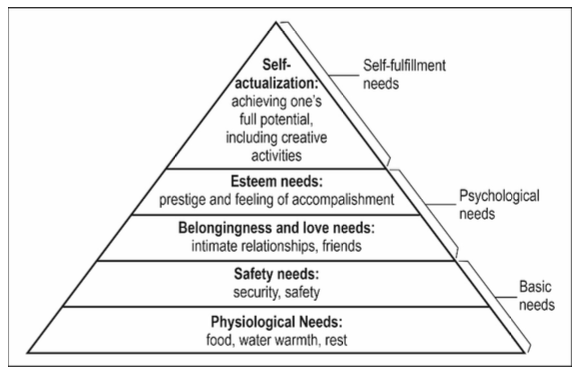
- Changing nature of public service
- Privatisation and marketization.
- Reducing the role of the state.
- Increasing demand for quality service.
- The increasing role of the private sector.
- Increasing multi-stakeholder collaboration.
- Rising relevance of ethics in administration
- i. Material and resource difficulties due to the growing population.
- ii. Emergence of new rights i.e., right to services, right to education, right to clean environment etc.
- iii. Globalisation and internationalization.
- Eg. Actions by world organisations in cases of crime against humanity are not.
- iv. IT revolution & rise of social media.
- v. Competition from the private sector. Eg BSNL.
- vi. Demand for more participation and decentralization.
- vii. Spread of intellect and sensitivity towards rights among the masses.
- ETHICS IN POLITICS
- Measures to ensure ethics in Politics
- Audit political donations.
- Political donations mandatory by digital means.
- Internal democracy in political parties.
- Voluntary Periodic disclosure of education, assets and criminal history of members of political parties.
- Bring political parties under RTI.
- Promote ethics of political members.
- Ways to ensure ethics in the Legislature
- Avoiding foul language.
- Parliamentary privileges not to shield unethical acts of members.
- Speed up proceedings of criminal and corruption cases against members.
- Prohibit defection.
- Separate bench of Supreme Court to hear election related petitions.
- Ways to improve ethics in the political executive
- Ethical training programmes.
- No criminal charges:
- A precondition to becoming a minister.
- Independent body to investigate corruption charges against ministers.
- Mandatory periodic reshuffling of ministerial portfolios.
- Mandatory 360-degree review of ministers.
- Forum for the public to lodge complaints against ministers.
- Ways to improve ethics in regulators
- No conflict of interests.
- Objective selection of functionaries.
- No post-retirement posting.
- Ways to promote ethics in permanent executive
- Integrity pact as recommended by CVC.
- The Integrity Pact (IP) is a tool developed by Transparency International and recommended by the Central Vigilance Commission (CVC) to promote transparency and prevent corruption in public procurement.
- It is an agreement between the government organization (or public sector undertaking) and the bidders participating in a tender.
- Through this pact, both parties commit to refrain from bribery, collusion, and other unethical practices during the procurement process.
- Minimal public interface with government servants (faceless assessment).
- Public disclosure of assets and liabilities of public servants.
- Call centres to receive complaints against civil servants.
- Simplification of rules.
- Ethical training of officials.
- Ethical use of technology to speed up the process and service delivery
- E-courts for reducing the backlogs and pendency in litigation.
- Aligning conduct rules with the need of our time.
- 9. ETHICAL ISSUES IN INTERNATIONAL RELATIONS & FUNDING
- VARIOUS SCHOOLS OF THOUGHT
- REALISM
- REALISM is a simple perspective of state-centered international affairs, which claims that all states are attempting to enhance their power and that those governments who can efficiently accumulate such strength will prosper, quickly transcending the accomplishments of comparatively fewer compelling states. According to this theory’s assumption, a nation’s primary goal ought to be self-preservation, and increasing power must be a socioeconomic and political requisite.
- Defensive Realism
- Defensive Realism According to this, states tend to act in favour of a balance of power instead of letting other states develop economic, and military strengths, and political power because it is perceived as a threat to their security and interests. According to defensive realism, nations should obtain the proper measure of power to enable them to survive. They should not, nevertheless, use their comparative power to try to become hegemonic powers.
- Offensive Realism
- Offensive Realism According to offensive realism, nations are prone to rivalry and conflict because they are self-interested, power-maximizing, and frightened of other states. Furthermore, it contends that nations are obligated to behave in this manner to survive in the international system. John Mearsheimer argues that the international system requires that states maximize their offensive power to be secure and keep rivals from gaining power at their expense.
- LIBERALISM:
- Liberalism in international ethics is a school of thought that emphasizes the role of individuals, institutions, and international cooperation in promoting global peace, prosperity, and justice. Here are the core principles of liberalism in international ethics:
- Individual Rights and Freedoms:
- Human Rights:
- Liberalism places a strong emphasis on the protection and promotion of human rights, including civil, political, economic, social, and cultural rights.
- Democracy:
- The promotion of democratic governance, which is seen as a means to ensure individual freedoms and accountability.
- Rule of Law and International Norms:
- Legal Frameworks:
- Support for the establishment and maintenance of international legal frameworks that uphold justice, fairness, and human rights.
- Adherence to Norms:
- Emphasis on the importance of states adhering to international norms and agreements to maintain global order and stability.
- Economic Interdependence:
- Free Trade:
- Advocacy for free trade and open markets as a means to promote economic growth, interdependence, and peace among nations.
- Globalization:
- Support for globalization and the interconnectedness of economies, which is believed to reduce the likelihood of conflicts due to mutual economic benefits.
- International Institutions and Cooperation:
- Multilateralism:
- Multilateralism refers to the coordination of relations among three or more states on the basis of generalized principles of conduct.
- It promotes collective decision-making, shared responsibilities, and cooperation through international institutions and agreements.
- Promotion of multilateral approaches to address global challenges, such as climate change, terrorism, and pandemics.
- Institutions:
- Support for international institutions like the United Nations, World Trade Organization, and International Monetary Fund to facilitate cooperation, peace, and development.
- Collective Security:
- Security Alliances:
- Formation of collective security arrangements, such as NATO, to deter aggression and promote peace through cooperative defense.
- Conflict Resolution:
- Advocacy for peaceful resolution of conflicts through diplomacy, negotiation, and international mediation.
- Promotion of Liberal Values:
- Democratic Peace Theory:
- The belief that democracies are less likely to go to war with each other, promoting the spread of democratic governance as a path to global peace.
- Humanitarian Interventions:
- Support for interventions in situations of gross human rights violations, with the aim of protecting vulnerable populations and promoting human dignity.
- Sustainable Development:
- Development Goals:
- Commitment to sustainable development goals (SDGs) that address poverty, inequality, and environmental sustainability.
- Aid and Assistance:
- Providing foreign aid and development assistance to help countries build capacities and improve living standards.
- IDEALISM:
- Idealism is a prominent school of thought in international ethics, emphasizing moral values, principles, and the pursuit of a better world through international relations. It contrasts with realism, which focuses more on power and practical considerations. Here’s an overview of idealism in international ethics:
- Core Principles of Idealism in International Ethics:
- Moral Principles and Values:
- Idealists believe that international relations should be guided by ethical principles such as justice, human rights, and democracy. They argue that moral values should be the foundation of international policies and actions.
- International Law and Institutions:
- Idealism supports the development and strengthening of international laws and institutions (e.g., the United Nations) to promote global cooperation, peace, and security. These institutions are seen as necessary for upholding ethical standards in international affairs.
- Humanitarianism:
- Idealists advocate for humanitarian interventions to prevent suffering and protect human rights, even if it means intervening in the sovereignty of states. The focus is on the well-being and dignity of individuals worldwide.
- Global Cooperation and Collective Security:
- Idealism emphasizes the importance of global cooperation to address common challenges such as poverty, climate change, and armed conflict. Collective security arrangements are seen as a way to prevent war and maintain peace.
- Peace and Conflict Resolution:
- Idealists seek peaceful resolution of conflicts through diplomacy, dialogue, and negotiation. They believe in the possibility of achieving lasting peace by addressing the root causes of conflicts and promoting mutual understanding.
- CONSTRUCTIVISM
- Its arguments are based on concepts such as discourses, conventions, identities, and social interaction, which are widely used in contemporary conversations about a variety of international matters such as globalization, international human rights, defence policy, and others. Constructivism believes that the structure of the international system cannot be uniformly applied to all state relations as it mainly bases the relations and interactions between countries and their shared understandings as the sources of conflicts or cooperation. Constructivists view identity as the basis for interests, institutions, and relations between countries.
- SOME ETHICAL ISSUES AT INTERNATIONAL LEVEL
- HUMAN RIGHTS VIOLATIONS:
- Political interventions frequently lead to Human Rights Violations. US intervention in Vietnam, Afghanistan, Syria etc.
- Refugee Issue:
- European nations are closing their borders to refugees fleeing war-torn areas, India’s reluctance to accept Rohingyas.
- CLIMATE CHANGE:
- International Equity Concerns:
- Countries that are least responsible for climate change and have the least economic capacity to fight the effects of climate change are the most affected ones. Eg: the Marshall Islands.
- Issue of Common but Differentiated Responsibilities:
- There are issues in defining and differentiating the responsibilities between present and future generations as well as developed and developing countries. Climate Sceptics don’t consider climate change to be real.
- DISARMAMENT:
- Cause of disarmament at the international stage is being promoted by those states, which have massive reserves of nuclear armaments, missiles etc. Countries like the USA impose economic and other sanctions on countries like Iran to prevent them from developing nuclear weapons. It is argued, how it is ethical for a country to impose sanctions on others without discarding their own weapons?
- INTELLECTUAL PROPERTY RIGHTS:
- The developed countries are depriving the poor countries of accessing new technologies (even life-saving drugs) by the restrictive clauses of IPRs. It is essential to determine whether it is justifiable for a country to defend its IPRs on commercial grounds or should share technology for the greater interest of humanity.
- GLOBAL COMMONS:
- Global commons are defined as those parts of the planet that fall outside national jurisdictions and to which all nations have access. International law identifies four global commons, namely the High Seas, the Atmosphere, Antarctica and Outer Space. Some of the issues concerning global commons are as follows:
- Nuclear weapons test.
- Zoonotic diseases like Covid-19
- Greenhouse gas emission Governance and
- conservation of Arctic
- Overfishing
- Accumulation of plastic waste
- Accumulation of Space debris
- GLOBAL POVERTY:
- Rise in insensitivity:
- Kaushik Basu argues that Global Poverty largely remains out of sight for those who are not living it. This enhances insensitivity amongst the well-off nations. Whom to prioritise? The states being a stakeholder in the global fight against poverty, face an inherent dilemma, that whether they should prioritise citizens or non-citizens for the allocation of resources.
- POWER ASYMMETRY:
- United Nations is not democratic with Veto power given to 5 Permanent members. The organisation which is formed to protect democracy and led by the US and UK which call themselves the defenders of Democracy in the world are heading the institution in an undemocratic way.
- GENOCIDE
- Genocide is a crime against humanity and the world has signed the ‘UN Convention on Genocide to end this. Even after that, Genocide does happen in the present world. Some of the notorious genocides include the Jewish Holocaust in Nazi Germany (1933 to 1945), the Armenian Genocide by the Ottoman Empire (1915 to 1923) Rape of Nanking by the Japanese Empire (1937), the Rwandan Genocide (1994), the Tamil Genocide in Sri Lanka, Rohingya Genocide in Myanmar etc. Ethical aspects related to this include:
- Right, to Protect is vague:
- As a result, either the international community acts very late or doesn’t at all against the genocides carried out by the states.
- International community also faces a dilemma that whether it should intervene on its own or arm the group so that persecuted section can protect itself.
- Narrow definition of Genocide:
- The definition excludes targeted political and social groups. It also excludes indirect acts against an environment that sustains people and their cultural distinctiveness.
- WARS
- 21st century has become a century of global flashpoints:
- East China Sea dispute:
- Japan revising its pacifist constitution.
- South China Sea dispute.
- India China Galwan clashes
- Russia- Ukraine war
- Israel Palestine war
- TERRORISM
- Most countries of the world are affected by terrorism.
- But there are some ethical issues in this, such as good terrorism vs Bad terrorism.
- States differentiate between Good Terrorism and Bad Terrorism based on their interests. Terror groups attacking their enemies are labelled “freedom fighters”, while the same groups, when acting against them, become “terrorists.”
- This reveals a selective and self-serving approach toward the inhumane activity of terrorism. For example, Pakistan differentiates between ‘Good Taliban’ and ‘Bad Taliban’.
- States use Terrorism as a tool of foreign policy and indulge in human rights violations. (Eg: Pakistan (supporting LeT, JeM), Iran (supporting Hezbollah).
- ISSUES WITH WORLD TRADE ORGANISATION, IMF & WORLD BANK
- Western First World Countries have asymmetric voting rights in these bodies.
- This asymmetry of voting power negatively affects the interests of the third world.
- For example, the third world is paying the cost for historical wrongs of the first world in terms of restrictions on their economic development due to fear of climate change.
- ETHICS AND INTERNATIONAL FUNDING
- Foreign aid means the transfer of money, goods or technical knowledge, from developed to under-developed countries.
- WHY FUNDING?
- PHILOSOPHICAL EXPLANATION HUMANITARIAN CONCERN:
- We might have drawn artificial boundaries to create a nation-state, but we all belong to Human race.
- Historical Burden:
- Past Colonial nations like the UK, France etc. developed by exploitation of other nations in Asia, Africa, South America etc. To compensate for that, they give grants and soft loans to their earlier colonies.
- Principle of Sacrifice:
- It is the duty of the well-off to sacrifice some of their wealth to protect those who can’t protect themselves.
- ECONOMICAL EXPLANATION EXPORT OF CAPITAL
- Western Countries have an excess of capital that need investment in lucrative developing countries.
- TYPES OF AIDS
- 1. Military Aid:
- It is the worst form of aid as it can destabilise the whole region. The objective of this kind of aid is to garner new military allies or to strengthen the military capability of their respective allies.
- Eg:
- The US used to give huge Military Assistance to Pakistan.
- 2. Technical Assistance:
- It aims to provide technical knowledge instead of equipment and helps in capacity building. It is the least expensive with good benefits.
- Eg:
- Pan African e-Network Project by India in Africa.
- 3. Economic Aid:
- These are economic loans given at very nominal interest rates which are to be repaid over a long time. Such loans can help in the economic development of a nation by setting up infrastructure.
- Eg:
- Aid given by Asian development bank for water supply and sanitation projects in India.
- 4. Humanitarian Assistance:
- Humanitarian aids are the actions designed to save lives, alleviate suffering, and maintain and protect human dignity during and in the aftermath of emergencies.
- 5. Bilateral Aid:
- Bilateral aid is financial or other assistance provided directly from one government to another, often with strategic, economic, or political aims
- Aid by India to Nepal, Bhutan, and Sri Lanka.
- 6. Multilateral Aid:
- Multilateral aid is foreign aid provided by multiple governments to a single international organization, such as the World Bank or the United Nations, which then distributes the funds for its development programs.
- Aid by WB, IMF, BRICS.
- 7. Project aid:
- As foreign aid, it's funding and support for a particular project like building a school or hospital, often with clear objectives and timelines.
- Salma dam in Afghanistan.
- 8. Voluntary aid:
- Voluntary aid can refer to several things, most commonly to civilian volunteers providing nursing and support services, like the Voluntary Aid Detachment (VAD) during WWI and WWII. It can also refer to aid provided by non-governmental organizations (NGOs) as opposed to government funds, or to a type of school with a religious foundation.
- Doctors without borders.
- ISSUES IN INTERNATIONAL FUNDING
- State vs Non-State Actors- There are issues like:
- Through which actors Funding should be done, State actors or Non-State actors.
- If funds are given to the Government of donee Country, most of the time they are inefficient in spending them.
- NGO and UN organisations can utilise the funds more effectively than Government Organisations.
- But if rich countries give funds directly to non-State-actors, there is an issue that erodes the sovereignty of the nation.
- Conditions on Funds Most of the funds that developing nations receive have many conditions attached to them. Eg:
- Receiving nations can’t use it for their most pressing needs but only on projects which donor countries or agencies allow.
- Highly paid observers have to be hired which makes the overall cost very expensive.
- World Bank and IMF Grants come with large conditions like Opening markets for the world.
- This can therefore be viewed as a continuation of colonialism by other means.
- OTHER ASPECTS
- Proliferation of Monoculturalism:
- These programmes are often aimed at promoting certain forms of culture and values and have low regard for indigenous culture in the targeted nations.
- Modern technologies are typically preserved for “for-profit” motives while ‘Obsolete Technologies’ are transferred to the developing nations.
- Corruption:
- Only one per cent of humanitarian funds reach the affected population. For Example, it was seen in West Africa during Ebola Crisis.
- Dependency on foreign aid:
- The state starts to lose its independence and relies on foreign aid for socio-economic policies.
- Indirect benefits to rebel groups:
- The rebel groups might derive considerable financial benefits from humanitarian operations by imposing charges on transports, levying taxes on imports and employees’ salaries, and collecting rent for warehouses, offices and residences.
- Problems in Funding Institutions:
- The key problem of the major funding institutions of global governance is the unilateralism of Economic powerhouses like the US, EU, and Japan and the lack of democracy in their working.
- Main Problems of Major Funding Institutions
- Democratic Deficit:
- Voting shares are in favour of the US, EU and global north. Countries like China and India are showing discontent
- Global Response to Regional Problems:
- Response concerning problems of developing nations is untimely.
- Issues of Accountability and Transparency due to large back-door diplomacy and competing interests.
- LIMIT OF SOVEREIGNTY
- Important ethical concern in International Ethics with respect to sovereignty includes:
- What is the limit of Sovereignty?
- When large-scale Ethnic cleansing & Genocide is taking place (e.g., in South Sudan or Myanmar), can a country protect its actions in the garb of sovereignty?
- What is the limit of Non-Intervention by the International Community?
- For this, there is an initiative of the UN called the Responsibility to Protect (R2P) Initiative. It states that Nations have sovereignty but are subject to Human Rights. If human rights are violated, then International Community can unilaterally act against that nation.
- The idea was invented in the aftermath of the Nazi execution of the Jews, to protect such crimes from happening in future which ‘shook the conscience of mankind’.
- But weaker and smaller states fear that in the garb of Responsibility to protect developed nations undermine their sovereignty.
- Just War Theory:
- The following questions give rise to just war theory:
- What is a valid justification to start the war, if war has started what type of actions is justified during the war and what are the steps that the country should take after the war?
- Components of Just War Theory
- Jus ad Bellum (just recourse to war).
- Jus in Bello (Just conduct in war).
- Jus post bellum(Just conduct after war).
- Principles of Jus ad Bellum (Just Recourse to War)
- Last resort:
- All non-violent options must have been exhausted.
- Just cause:
- The purpose of war is to redress a wrong.
- Legitimate authority:
- Lawfully constituted government of a sovereign state can declare war, rather than a private individual or group.
- Right intention:
- War must be prosecuted on morally acceptable aims rather than revenge.
- Reasonable prospect of success:
- War should not be fought in a hopeless cause.
- Proportionality:
- Any response to an attack should be measured and proportionate.
- Principles of Jus in Bello (Just Conduct in War)
- Discrimination:
- Force must be directed at military targets only because civilians or non-combatants are innocent.
- Proportionality:
- Force should be proportional.
- Humanity:
- Force must not be directed ever against enemy personnel if they are captured, wounded or under control (prisoners of war).
- Jus post bellum (Post War)
- Reconstruction:
- Post-war reconstruction should also be done.
- Reconciliation:
- There should be efforts of reconciliation after the war is over.
- It should be noted that the theory is not intended to justify wars but to prevent them, by showing that going to war except in certain limited circumstances is wrong, and thus it motivate states to find other ways of resolving conflicts. Similarly, Mahabharata outlines principles and contours of conduct of a just war. Some rules propounded where armies were allowed to collect bodies, personnel could meet for negotiations etc.
- ETHICAL ISSUES AROUND NUCLEAR-WEAPONS
- Nuclear weapons have the potential to destroy the entire ecosystem of the planet. However, a handful of states insist that these weapons provide unique security benefits but reserve the sole right to possess them. Hence, the possession of nuclear weapons leads to numerous moral and ethical dilemmas.
- BENEFITS
- The fact that there has not been a war between nuclear-armed states due to fear of mutually assured destruction implies that deterrence has prevented the aggravation of conflicts.
- E.g.:
- USSR and the US didn’t use nuclear weapons during the period of the cold war.
- It has indirectly saved millions of lives as conventional wars have not happened.
- E.g.:
- Pakistan and India are less likely to attack each other because both are nuclear states.
- Nuclear statesmanship:
- Possession of nuclear weapons engenders a sense of responsibility and a strong bias against adventurism.
- DRAWBACKS
- The first question is whether nuclear weapons are moral or immoral in themselves. According to ethical theories, since morality cannot be attributed to non-human things, hence nuclear weapons in themselves are neither evil nor good. The question of Morality comes when it goes into the hands of the person who will use it. Till nuclear weapons are available, there is always a possibility that Terrorists can get hold of them and use them.
- According to proponents of nuclear weapons, these weapons create deterrence and stabilize the world order.
- From the utilitarian perspective, while nuclear weapons give a sense of security to the nations, which possess them, they instil fear of destruction in the mind of billions. Even the citizens of nuclear-armed states cannot be sure of their safety. Hence, on the touchstone of ‘maximum good to maximum people’ nuclear weapons falter.
- Similarly, from a deontological perspective, which believes that the means to achieve peace should also be pure. Means to avoid war should not be fear of destruction but values of humanity, peaceful co-existence etc.
- Another dimension could be whether the money used to produce nuclear weapons can be put to better use. Spending on social upliftment is more moral than spending on weapons
- The possibility that nuclear-armed states may go rogue, collapse, or fail to prevent their arsenal from falling into the hands of terrorists, cannot be ignored.
- Hence, it can be concluded that although the deterrent effect of nuclear weapons worked during the bipolar ‘first nuclear age’, it is far less reliable in the less stable, multi-polar circumstances of the ‘second nuclear age’.
- ASYLUM
- The response of most countries to asylum seekers has been xenophobic. Afghanis, Tunisians, Libyans, Syrians, Rohingyas etc.
- Arguments Against Giving Asylum
- It leads to draining the scarce economic resources of the country.
- Giving asylum leads to fear of job loss.
- It also leads to the entry of extremist elements into the country.
- Example:
- The Indian government fears that many Rohingya coming to India make the nation prone to Islamic extremism and terrorism.
- Rebirth of extreme right-wingers playing on xenophobia.
- Example:
- Far-right political parties such as Alternative for Germany (AfD) in Germany and National Rally in France are gaining ground on this card.
- Arguments in Favour of Giving Asylum
- Every human being has an equal right to the resources of the earth.
- The principle of non-refoulment states that no one should be returned to a country where they would face torture, cruelty, or any other irreparable harm.
- Note:
- Many countries (except India) are signatories to this principle.
- PRINCIPLES OF ETHICAL INTERNATIONAL RELATIONS
- 1. UNITED NATIONS CHARTER
- It is the legal and moral foundation of international relations. It is the true manifestation of humanity's spiritual values and inner oneness.
- Preamble:
- We the people of the United Nations determined to save succeeding generations from the scourge of war, which twice in our lifetime has brought untold sorrow to mankind, and to reaffirm faith in fundamental human rights, in the dignity and worth of the human person, in the equal rights of men and women and of nations large and small, and to establish conditions under which justice and respect for the obligations arising from treaties and other sources of international law can be maintained, and to promote social progress and better standards of life in larger freedom.
- And for these ends to practice tolerance and live together in peace with one another as good neighbours, and to unite our strength to maintain international peace and security, and to ensure, by the acceptance of principles and the institution of methods, that armed force shall not be used, save in the common interest, and to employ international machinery for the promotion of the economic and social advancement of all peoples, Have resolved to combine our efforts to accomplish these aims.
- PURPOSES AND PRINCIPLES
- Article 1
- The Purposes of the United Nations are given below.
- To maintain international peace and security, and to that end- to take effective collective measures for the prevention and removal of threats to the peace, and for the suppression of acts of aggression or other breaches of the peace, and to bring about peaceful means, and in conformity with the principles of justice and international law, adjustment or settlement of international disputes or situations which might lead to a breach of the peace.
- To develop friendly relations among nations based on respect for the principle of equal rights and self-determination of peoples, and to take other appropriate measures to strengthen universal peace.
- To achieve international cooperation in solving international problems of an economic, social, cultural, or humanitarian character, and in promoting and encouraging respect for human rights and fundamental freedoms for all without distinction as to race, sex, language, or religion; and
- To be a centre for harmonizing the actions of nations in the attainment of these common ends.
- Article 2
- The Organization and its Members, in pursuit of the Purposes stated in Article 1, shall act by the following Principles. The Organization is based on the principle of the sovereign equality of all its members.
- All Members, to ensure to all of them the rights and benefits resulting from membership, shall fulfil in good faith the obligations assumed by them by the present Charter.
- All Members shall settle their international disputes by peaceful means in such a manner that international peace and security, and justice, are not endangered.
- All Members shall refrain in their international relations from the threat or use of force against the territorial integrity or political independence of any state, or in any other manner inconsistent with the Purposes of the United Nations.
- All Members shall give the United Nations every assistance in any action it takes by the present Charter and shall refrain from assisting any state against which the United Nations is taking preventive or enforcement action.
- The Organization shall ensure that states which are not Members of the United Nations act by these Principles as far as may be necessary for the maintenance of international peace and security.
- Nothing contained in the present Charter shall authorize the United Nations to intervene in matters which are essentially within the domestic jurisdiction of any state or shall require the Members to submit such matters to settlement under the present Charter, but this principle shall not prejudice the application of enforcement measures under Chapter VII.
- ROLE OF INDIA IN ENCOURAGING ETHICAL DISCOURSE IN INTERNATIONAL RELATION
- Article 51 in the Constitution of India Promotion of international peace and security. The State shall endeavor to-
- (a) Promote international peace and security.
- (b) Maintain just and honorable relations between nations.
- (c) Foster respect for international law and treaty obligations in the dealings of organised peoples with one another; and
- (d) Encourage settlement of international disputes by arbitration.
- PANCHSHEEL
- Origin:
- The original Panchsheel Agreement was signed between India and China in 1954.
- It was part of the “Agreement on Trade and Intercourse between Tibet Region of China and India.”
- The principles were jointly articulated by Jawaharlal Nehru (India) and Zhou Enlai (China) to guide peaceful coexistence between nations.
- The Five Principles of Peaceful Coexistence, known as the Panchsheel Treaty:
- i. Mutual respect for each other’s territorial integrity and sovereignty.
- ii. Mutual non-aggression.
- iii. Mutual non-interference in each other's internal affairs.
- iv. Equality and cooperation for mutual benefit.
- v. Peaceful co-existence.
- NEW PANCHSHEEL PRINCIPLES OF INDIAN FOREIGN POLICY
- In a speech given in 2013, India’s then Prime Minister Manmohan Singh outlined the new Panchsheel principles as below
- i. Development-Centric Global Engagement
- The first principle asserts that India’s development priorities will determine its engagement with the world.
- A key objective of India’s foreign policy is to create a conducive world order and enhance its role as a rule-shaper of global norms and institutions.
- Example:
- India’s food security law vis-à-vis WTO commitments; similar linkages exist in climate, energy, river, ocean, and cybersecurity issues.
- ii. Global Economic Integration
- The second principle recognizes that India’s development prospects are deeply linked to the world economy in every aspect.
- India and its people cannot prosper in isolation; global integration is essential for growth and stability.
- iii. Multi-Alignment for Strategic Balance
- The third principle emphasizes working with all major powers to create a beneficial global economic and security environment.
- It represents India’s policy of “multi-alignment,” visible in forums like G20, BRICS, and IBSA.
- It also signifies a subtle but clear shift away from traditional non-alignment.
- iv. Regional Cooperation and Connectivity
- The fourth principle underlines that India must build and ensure greater regional cooperation and connectivity to play a global role.
- Such regional integration is viewed as a possible path to improving political relations among neighbouring countries.
- v. Promotion of Democratic and Plural Values
- The fifth principle highlights India’s values of pluralism, secularism, and liberal democracy as a source of inspiration for the world.
- These values differentiate India from other major powers like China.
- It also signals India’s evolving stance—moving from strict non-interference to supporting democracy promotion and the “Responsibility to Protect” doctrine.
- PANCHAMRIT- NEW PILLARS OF FOREIGN POLICY
- Announced by PM Modi as the five pillars of India’s foreign policy during his early diplomatic outreach (2014–2015).
- Note:
- There are actually two different “Panchamrits” in Indian policy:
- Panchamrit (Climate Commitments) — COP26, 2021
- Panchamrit (Foreign Policy Pillars) — 2014 onwards
- Pillars are:
- Samman:
- Dignity and honour
- Samvad:
- Greater engagement and dialogue
- Samriddhi:
- Shared prosperity
- Suraksha:
- Regional and global security; and
- Sanskriti evam sabhyata:
- Cultural and civilizational linkages.
- NON-ALIGNED MOVEMENT
- Three reasons were given by Pt. Nehru for Non-aligned Movement –
- India was a newly independent country and hence India must focus on socio-economic reconstruction rather than joining a military bock.
- India is a country that has never shown aggression against any other country.
- When the world is divided into two military groups which are ready two fight against each other, it is wise to strengthen the peace area (third block) so that conflict can be bridged. Nehru’s aversion to narrow egoistic and expansionist nationalism had been great.
- GUJRAL DOCTRINE
- Propounded by I.K. Gujral, former Prime Minister of India (1997–98) and earlier External Affairs Minister. It represents India’s foreign policy approach towards its neighbours during the 1990s, especially in the post–Cold War era.
- The five key principles of the Gujral Doctrine are given below:
- 1. As the largest nation in South Asia, India must show a big heart. With neighbours viz. Bangladesh, Bhutan, Maldives, Nepal and Sri Lanka, India must not ask for reciprocity but should give all that it can in good faith and trust.
- 2. No South Asian country would allow its territory to be used against the interest of another country.
- 3. No country would interfere in the internal affairs of another.
- 4. South Asian Countries should respect each other’s territorial integrity and sovereignty.
- 5. Countries of South Asia must settle all their disputes through peaceful bilateral negotiations
- It has relevance today also as most neighbours of India are much smaller in size in comparison to its size. Further, being a dominant economy, making unilateral concessions can help to build trust. The country cannot remain at loggerheads with neighbours as it gives an opportunity to internal and external non-state actors to destabilize the country.
- APPLICATION OF THE DOCTRINE
- Sharing of Ganga Water with Bangladesh:
- It is in pursuance of this policy that late in 1996 India concluded an agreement with Bangladesh on sharing of Ganga Waters. This agreement enabled Bangladesh to draw in lean season slightly more water than even the 1977 Agreement had provided.
- India allows Nepal and Bhutan to use Hooghly Port for their import purposes.
- Soft loan and infrastructure development in Afghanistan.
- Most Favoured Nation status to Pakistan.
- Freezing of Border Dispute with PRC:
- The confidence-building measures agreed upon by India and China in November 1996 were also a part of efforts made by the two countries to improve bilateral relations, and freeze, for the time being the border dispute.
- Increasing People-to-People Contact with Pakistan:
- This doctrine advocated people-to-people contact, particularly between India and Pakistan, to create an atmosphere that would enable the countries concerned to sort out their differences amicably. India unilaterally announced in 1997 several concessions to Pakistan tourists, particularly the elder citizens and cultural groups.
- NUCLEAR DOCTRINE OF INDIA
- India has a declared nuclear no-first-use policy and is in the process of developing a nuclear doctrine based on "credible minimum deterrence."
- REFUGES POLICY
- India harbours one of the largest populations of refugees despite not signing the UN Convention on refugees.
- NEIGHBOURHOOD FIRST POLICY
- The "Neighbourhood First" policy of India is a diplomatic initiative aimed at prioritizing and enhancing relations with its neighbouring countries in South Asia. This policy reflects various ethical principles, emphasizing mutual respect, cooperation, and development. Here are the core ethical principles underpinning India's Neighbourhood First policy:
- 1. Mutual Respect and Sovereignty:
- Respect for Sovereignty:
- The policy is grounded in the respect for the sovereignty and territorial integrity of neighbouring countries. This principle fosters mutual trust and reduces the potential for conflicts.
- Non-Interference:
- By adhering to the principle of non-interference in the internal affairs of its neighbours, India aims to build respectful and equal partnerships.
- 2. Regional Cooperation and Integration:
- Collective Progress:
- Emphasizing regional cooperation, the policy seeks to promote collective progress and development. This is based on the ethical principle that the prosperity of one country can positively impact the entire region.
- Shared Interests:
- It highlights the importance of shared interests and common goals, such as economic development, security, and cultural exchange.
- 3. Peace and Stability:
- Conflict Resolution:
- The Neighbourhood First policy promotes peaceful resolution of conflicts and disputes through dialogue and diplomacy, aligning with ethical commitments to peace and non-violence.
- Stability:
- Ensuring regional stability is seen as an ethical obligation, as instability can lead to human suffering and hinder development.
- 4. Economic and Social Development:
- Aid and Assistance:
- India provides developmental aid and assistance to its neighbours, supporting infrastructure projects, healthcare, education, and capacity-building initiatives. This reflects ethical principles of solidarity and humanitarianism.
- Inclusive Growth:
- By focusing on inclusive growth, the policy aims to reduce poverty and inequality in the region, promoting a more just and equitable society.
- 5. Environmental Sustainability:
- Collaborative Efforts:
- The policy includes collaboration on environmental issues, such as climate change, water management, and disaster response, recognizing the ethical responsibility to protect the environment for future generations.
- 6. Cultural and People-to-People Ties:
- Cultural Respect:
- Strengthening cultural and people-to-people ties fosters mutual understanding and respect, reducing prejudices and promoting harmony.
- People to people Connections:
- Building human connections through educational exchanges, tourism, and cultural programs emphasizes the ethical principle of human dignity and respect for diverse cultures.
- CHAPTER 7 - PROBITY IN GOVERNANCE
- 1. CONCEPT OF PUBLIC SERVICES
- In 1996, United Nations adopted an International Code of Conduct for public officials.
- As per the document. The elected representatives embody the legitimacy to define the public interest, while public service ensures that the public interest is served, and public trust is maintained.
- In simple words, Public service refers to the activities and functions carried out by government institutions and their employees to provide essential services, implement policies, and promote the public interest..
- FEATURES/ATTRIBUTES OF PUBLIC SERVICE
- 1. Intangible in nature:
- Sometimes the services delivered by the government could be intangible in nature, bye the benefits are reaped by the society, eg- upholding law and order situation.
- 2. Morality:
- State and public servants are the principal moral agents and the implementors of laws framed by codification of moral values.
- 3. The government-led:
- They are provided by a large-scale legal and administrative framework which affects the entire social-economic structure of society.
- 4. Citizen centric:
- It is social-good-oriented rather than profit-oriented.
- 5. Collectively:
- Public accountability is the essence of public services because these services involve outputs that are hard to attribute to specific individual efforts. If anything, wrong happens, people blame the government rather than the individual.
- 6. Vitality:
- Certain public services are vital for the existence of the community itself. Eg- Water supply and sanitation, healthcare, transport etc.
- 7. Political direction and scrutiny:
- Public service is provided by the administration which works under political direction and scrutiny.
- 8. Local or national monopoly:
- Public services are usually provided by local or national monopolies, especially in a sector that is a national monopoly (Eg- Law & order, dispensation of justice).
- CIVIL SERVANTS
- Public servants are individuals employed by the government to implement its policies, provide public services, and perform administrative functions. They work in various sectors and levels of government, including Union, state, and local agencies. Public servants play a crucial role in maintaining the functioning of the government and ensuring the delivery of essential services to the public. Here are key aspects and examples of public servants.
- Various civil servants include:
- Individuals employed by the All India Services, State services/PSUs
- Politicians
- Other government organs
- Civil servants
- Civil society
- Media
- 2. WHAT IS PROBITY IN GOVERNANCE?
- Probity originates from the Latin word ‘probitas’, meaning good. It is the quality of having strong moral principles and strictly following them.
- It includes principles such as - honesty, integrity, uprightness, transparency and incorruptibility. Probity is confirmed integrity. It is usually regarded as being incorruptible.
- Probity in Governance is concerned with the propriety and character of various organs of the government as to whether these uphold procedural uprightness, regardless of the individuals manning these institutions. It involves adopting an ethical and transparent approach, allowing the process to withstand scrutiny.
- PHILOSOPHICAL BASIS OF GOVERNANCE AND PROBITY
- The philosophical basis of governance is guided by the principles of Social contract and spirit of service. Some of the elements of are:
- 1. Integrity:
- Adherence to moral and ethical principles; soundness of moral character; honesty.
- Importance:
- Integrity ensures that public officials act in a trustworthy and consistent manner, fostering public trust and confidence in governance.
- 2. Accountability:
- The obligation of individuals or organizations to account for their activities, accept responsibility for them, and disclose results in a transparent manner.
- Importance:
- Accountability holds public servants and institutions responsible for their actions, ensuring they serve the public interest.
- 3. Transparency:
- Openness in government, with clear, accessible information available to the public about decision-making processes and actions.
- Importance:
- Transparency promotes trust and allows citizens to be informed and engaged in governance, reducing corruption and misconduct.
- 4. Fairness:
- Impartial and just treatment or behavior without favoritism or discrimination.
- Importance:
- Fairness ensures that all individuals are treated equally under the law and have access to the same opportunities and services.
- 5. Justice:
- The quality of being just, impartial, or fair; the principle of moral rightness and equity.
- Importance:
- Justice is fundamental to maintaining social order and ensuring that laws and policies are applied equitably.
- 6. Responsibility:
- The state or fact of having a duty to deal with something or of having control over someone.
- Importance:
- Responsibility requires public officials to act in the best interests of the public and to take ownership of their actions and decisions.
- 7. Ethics:
- Moral principles that govern a person's behavior or the conducting of an activity.
- Importance:
- Ethics guide public servants in making decisions that are not only legal but also morally right, promoting integrity and trust in governance.
- 8. Rule of Law:
- The principle that all people and institutions are subject to and accountable to law that is fairly applied and enforced.
- Importance:
- The rule of law ensures that no one is above the law and that legal frameworks are applied consistently, protecting citizens' rights and liberties.
- 9. Service:
- The action of helping or doing work for someone, especially as a public duty.
- Importance:
- Public service is about prioritizing the needs and well-being of the community over personal gain, embodying the commitment to serve the public good.
- 10. Probity:
- The quality of having strong moral principles; honesty and ability to be externally held accountable for actions.
- Importance:
- Probity in governance ensures that public officials act with integrity and honor, avoiding corruption and maintaining public trust.
- 3. IMPORTANCE OF PROBITY IN GOVERNANCE
- Foremost, it helps build up the legitimacy of the system of governance and the State. It builds trust in the institutions of the State and a belief that the actions of the State will be for the welfare of the beneficiaries.
- It leads to prudent and ethical outcomes.
- It leads to avoidance of sub-optimal outcomes, corruption and poor perception of government.
- It provides for an objective and independent view of the fairness of the process.
- It helps in checking the abuse and misuse of power by various organs of government such as magistracy, police and all other providers of public service e.g., PWD, health and education.
- It is an essential requirement for an efficient and effective system of governance and socio-economic development.
- 4. PRINCIPLES OF PROBITY IN GOVERNANCE
- Integrity
- Transparency
- Objectivity
- Accountability
- Responsibility
- Selflessness
- Equity and inclusiveness
- Participation
- Rule of law
- Justice
- Non – Maleficence:
- Minimalist approach
- Beneficence:
- Maximalist approach
- Management of conflict of interests
- 5. NEED OF PROBITY IN THE GOVERNANCE
- It helps in preserving the confidence of the public in the government and enhances the public trust in the governance system of the country.
- Probity helps in maintaining the integrity upright in the public service of the nation, which is the bedrock of the governance system.
- It helps in avoiding the potential if any for misconduct and corruption and helps in ensuring compliance with the processes and accountability in the governance system.
- 6. DIFFICULTIES IN PRACTICING PROBITY
- In this regard, the Scandinavian economist-sociologist, Gunnar Myrdal in his book ‘Asian Drama,’ describes India as a ‘soft society.’ It is a society where there is a:
- Lack of will to enact laws necessary for progress and development
- Lack of will to implement even the existing laws
- Lack of discipline at all levels – including the administration and structures of governance
- MAJOR CHALLENGES IN IMPLEMENTATION OF PROBITY ARE
- Corruption
- Opacity/ Discretion in absence of transparency.
- The poor and ambiguous value system .
- No incentive/Ineffectiveness/Inefficiency/Lack of accountability.
- Centralisation of power at various levels
- Criminalisation of politics.
- Violation of human rights.
- Weak legislators with criminal records, poor knowledge about development issues and low level of education.
- Lack of people’s participation (especially poor people) in development processes.
- Less active civil society and less empowered grassroot institutions.
- Lack of coordination among political, administrative and community level organisations and institutions.
- Delays in service delivery.
- Poor participation of marginalised sections in decision making of government.
- 7. CORRUPTION
- Meaning of corruption
- The word ‘corrupt’ is derived from the Latin word ‘corruptus’, meaning ‘to break or destroy’. "corrumpere" which means to damage or ruin together.
- It can be grand corruption involving persons in high places and retail corruption touching the everyday life of common people.
- FACTORS RESPONSIBLE FOR CORRUPTION
- 1. Over-centralization. Large functionaries between the citizen and final decision-makers makes accountability diffused and the temptation to abuse authority becomes strong. For a large democracy, India probably has the smallest number of final decision-makers. Local Government is not allowed to take root and power has been concentrated both horizontally and vertically in a few hands.
- Why corruption is wrong?
- It is a betrayal of public trust.
- It amounts to an abuse of power.
- It is a violation of the rights of the subjects.
- Vitiates the role modelling role of government officials.
- Effects of corruption on the system
- 1. Snowballing:
- Corrupt behaviour at small scale tends to grow into large scale corruption.
- 2. Contamination:
- It tends to infect other colleagues.
- 3. Revelation:
- Corruption by media may dilute the public trust.
- 4. Radiation:
- Corruption in any organ of the organisation damages the reputation of the whole organisation.
- FEATURES OF CORRUPTION IN INDIA
- National Commission to review the working of the constitution’s consultation paper on PROBITY IN GOVERNANCE identified features of corruption in India:
- 1. Corruption in India occurs majorly upstream, not downstream. (Corruption at the top level)
- 2. Corruption money in India has wings, not wheels (smuggling corrupt money abroad)
- 3. Corruption in India often leads to promotion, not prison.
- 4. Corruption in India is the main reason behind inequality.
- REASONS FOR CORRUPTION IN INDIA
- 2nd ARC identifies three main reasons
- 1. Colonial legacy.
- 2. Enormous asymmetry of power in our society.
- 3. Overregulation.
- Other reasons:
- Changing values and desires.
- Economic causes.
- Lack of strong public opinion against corruption.
- Complicated and cumbersome procedures and working.
- Inadequate laws to deal with corruption leading to delayed prosecution.
- Undue protection is given to civil servants under Article 311.
- The collusion of politicians, business and bureaucracy.
- RECOMMENDATIONS FOR LEGAL REFORMS
- Enlarging the scope of corruption under the Prevention of Corruption Act:
- Perversion of the Constitution and democratic institutions amounting to a wilful violation of oath of office needs to be dealt with.
- Abuse of authority unduly favouring or harming someone needs to be addressed.
- Obstruction of justice.
- Recommendations to Deal with collusive corruption (2nd ARC report):
- An offence could be classified as ‘collusive bribery’ if the outcome or intended outcome of the transaction leads to a loss to the State, public or public interest.
- The court shall presume that the public servant and the beneficiary of the decision committed an offence of ‘collusive bribery’.
- Prior sanction should not be necessary for prosecuting a public servant who has been trapped red-handed or in cases of possessing assets disproportionate to the known sources of income.
- The Prevention of Corruption Act should be amended to ensure that sanctioning authorities are not summoned and instead the documents can be obtained and produced before the courts by the appropriate authority.
- The Presiding Officer of a House of Legislature should be designated as the sanctioning authority for MPs and MLAs respectively.
- The requirement of prior sanction for the prosecution now applicable to serving public servants should also apply to retired public servants for acts performed while in service.
- Making civil servants liable for loss
- In addition to the penalty in criminal cases, the law should provide that public servants who cause loss to the state or citizens by their corrupt acts should be made liable to make good the loss caused and, in addition, be liable for damages. This could be done by inserting a chapter in the Prevention of Corruption Act.
- Fixing a time limit for various stages of trial
- A legal provision needs to be introduced fixing a time limit for various stages of the trial. This could be done by amendments to the CrPC.
- Constitutional measures:
- Suitable amendments are affected to Article 105(2) and 194(2) of the Constitution to provide that the immunity enjoyed by Members of Parliament and MLAs does not cover corrupt acts committed by them in connection with their duties in the House or otherwise.
- Articles 310 and 311 of the Constitution should be repealed and Suitable legislation to provide for all necessary terms and conditions of services should be provided under Article 309, to protect the bona fide actions of public servants taken in the public interest; this should be made applicable to the States. Necessary protection to public servants against arbitrary action should be provided through such legislation under Article 309
- INSTITUTIONAL RECOMMENDATIONS TO CURB CORRUPTION
- There should be Lok Ayukta at all three levels of government with full autonomy and adequate powers along with its cadre with its recruitment and training facilities.
- The Anti-Corruption Bureaus should be brought under the control of the State Vigilance Commission.
- Modern techniques of investigation should also be deployed like electronic surveillance, video and audio recording of surprise inspections, traps, searches and seizures.
- A reasonable time limit for the investigation of different types of cases.
- RECOMMENDATIONS RELATED TO SOCIAL INFRASTRUCTURE TO CURB CORRUPTION
- 1. Citizens’ Charters should be made effective by stipulating the service levels and also the remedy if these service levels are not met.
- 2. Citizens may be involved in the assessment and maintenance of ethics in important government institutions and offices.
- 3. Reward schemes should be introduced to encourage citizens’ initiatives.
- 4. School awareness programs should be introduced, highlighting the importance of ethics and how corruption can be eliminated.
- 5. Integrity pledge by CVC to uphold integrity and follow probity and rule of law in all walks of life.
- 6. Legislation like the US False Claims Act should be enacted, providing for citizens and civil society groups to seek legal relief against fraudulent claims against the government. This law should have the following elements:
- I. Any citizen should be able to bring a suit against any person or agency for a false claim against the government.
- II. If the false claim is established in a court of law, then the person or agency responsible shall be liable for a penalty equal to five times the loss sustained by the exchequer or society.
- III. The loss sustained could be monetary or non-monetary in the form of pollution or other social costs. In case of non-monetary loss, the court would have the authority to compute the loss in monetary terms.
- IV. The person who brought the suit shall be suitably compensated out of the damages recovered.
- 7. It is necessary to evolve norms and practices requiring proper screening of all allegations/complaints by the media and taking action to put them in the public domain.
- 8. The electronic media should evolve a Code of Conduct and a self-regulating mechanism to adhere to a Code of Conduct as a safeguard against such action.
- 9. Government agencies can help the media in the fight against corruption by disclosing details about corruption cases regularly.
- 10. Operational guidelines of all developmental schemes and citizen-centric programs should provide for a mandatory social audit mechanism.
- SYSTEMIC RECOMMENDATIONS TO CURB CORRUPTION
- 1. Reduce monopoly
- Each Ministry/Department may undertake an immediate exercise to reduce ‘monopoly’ to ensure competition.
- Corruption = Monopoly + Discretion – Transparency
- 2. Restructuring Centrally Sponsored schemes
- Some Centrally Sponsored schemes could be restructured to provide incentives to states that take steps to promote competition in service delivery.
- 3. Single window
- There is a need to bring simplification of the methods, and adopt a ‘single window’ approach, minimizing hierarchical tiers, stipulating time limits for disposal of grievance.
- 4. Positive silence’
- The principle of ‘positive silence’ should be used, wherever permissions/licenses etc are to be issued, there should be a time limit for processing of the same after which permission, if not already given, should be deemed to have been granted. However, the rules should provide that for each such case the official responsible for the delay. must be processed against.
- The public-facing department should make a list of its activities that involve an element of discretion, which should then be minimised.
- 5. Integrity pacts
- There should be encouragement of the mechanism of integrity pacts as proposed by Central Vigilance Commission.
- 6. Annual Performance Report
- In the Annual Performance Report of each officer, there should be a column where the officer should indicate the measures, he took to control corruption in his office and among subordinates.
- 7. Online complaint tracking system
- Online complaint tracking system and there should be an external, periodic mechanism of ‘audit’ of complaints in offices having a large public interface.
- 8. MEASURES TAKEN TO TACKLE CORRUPTION
- 8.1 PREVENTION OF CORRUPTION ACT 1988
- WHAT CRIMES ARE PUNISHED BY THIS LAW?
- When a public servant accepts money or gifts over and above their salary, in return for favouring a person in their official duty.
- When a public servant accepts gifts from a person with whom they have a business or official relationship without paying them.
- When a public servant is guilty of criminal misconduct such as regularly accepting bribes to favour people during their official duty.
- If any person accepts money or gifts in return for influencing the public servant by using his connection or through illegal or corrupt methods, this person can also be punished.
- Any person helping the public servant commit these crimes can also be punished.
- According to the recent amendment in the act a person offering a gift or a bribe will also be punished
- Amendments in 2018. Under the amended Section 8, the offence of giving a bribe has been explicitly recognised.
- Protection of Honest Bureaucrats (Amendments in Sections 13, 17A and 19): These clauses are amended to protect the decision makers’ decisions, in the case of Bonafede’s decisions which might result in losses to the public fund.
- 8.2 Whistle Blowers Protection Act 2014
- The objectives of such an act, generally, are:
- To ensure accountability amongst the public servants by encouraging people not to turn a blind eye to corrupt practices taking place around them and report it to the concerned authority.
- To protect the whistle-blowers from dismissal and victimization and to protect his/ her identity.
- Salient features of WBPA, 2014:
- In defining who a whistle-blower is, the law goes beyond government officials who expose corruption they come across in the course of their work. It includes any other person or non-governmental organisation.
- It has provisions to conceal the identity of the whistle-blower.
- It affords protection against victimisation of the complainant or anyone who renders assistance in an inquiry.
- 8.3. Prohibition of Benami Property Transactions (PBPT) Act 1988 and Benami Transactions (Prohibition) Amendment (BTPA) Act 2016
- The PBPT Act 1988 defines a “benami transaction” as any transaction in which property is transferred to one person for a consideration paid or provided by another person. The PBPT Act 2016 is an improvement over the 1988 Act on several fronts such as:
- It amends the definition of Benami transactions to add other transactions which qualify as benami, such as property transactions where:
- The transaction is made under a fictitious name.
- The owner is not aware of or denies knowledge of the ownership of the property, or
- The person providing the consideration for the property is not traceable (meaning buyer is not traceable).
- 8.4. Institutions of the Lokpal and the Lokayuktas
- The basic idea of the institution of Lokpal has been borrowed from the concept of the Ombudsman in countries such as Finland, and Norway, the First Lokpal bill was introduced in 1968. But the Bill lapsed.
- In 2011 massive public protests led to the proposal of Jan Lokpal’s bill under the leadership of anti-corruption crusader Anna Hazare, Finally, the Lokpal and Lokayuktas Act 2013 was passed that came into force in January 2014.
- Various States such as Rajasthan, Bihar, Karnataka, and others have also adopted/ enacted this legislation and established the office of Lokayukta at the state level.
- A Lokpal can enquire into offences under the Prevention of Corruption Act, 1988 (PCA) committed by:
- The PM with specified safeguards.
- Current and former Union Ministers.
- Current and former MPs.
- Group A, B, C, and D officers.
- Employees of a company, society or a trust set up by an Act of Parliament or financed or controlled by the Central government.
- Employees of an association of persons that
- (i) has received funding from the government and have an annual income above a specified amount; or
- (ii) have received public donations and have an annual income above a specified amount or received foreign funding above Rs 10 lakh a year.
- An inquiry against the PM has to be held in-camera and approved by a 2/3rd majority of the full bench of the Lokpal. The PM cannot be investigated if the complaint is related to international relations, external and internal security, public order, atomic energy and space.
- The Lokayuktas shall have jurisdiction over the CM, Ministers, MLAs, all State government employees and certain private entities (including religious institutions).
- The Lokpal’s inquiry wing is required to inquire into complaints within 60 days of their reference.
- On considering an inquiry report the Lokpal shall
- (i) order an investigation.
- (ii) initiate departmental proceedings; or
- Close the case and proceed against the complainant for making a false and frivolous complaint.
- The investigation shall be completed within 6 months. The Lokpal may initiate prosecution through its prosecution Wing before the Special Court is set up to decide cases. The trial shall be completed within a maximum of two years. The Bill specifies a similar procedure for Lokayuktas.
- 8.5. INFORMATION SHARING AND TRANSPARENCY IN GOVERNMENT (RTI)
- Information sharing refers to the proactive disclosure of information about government policies and functioning by the government to the public at large. In other words, it implies public access to closely held government information.
- Transparency refers to designing government processes such that government actions and decisions are not hidden from public view.
- BENEFITS OF TRANSPARENCY
- 1. Check on favoritism.
- 2. Check for fraud.
- 3. Accountability
- 4. Equal opportunity
- Grounds for checking on information sharing
- 1. Security
- 2. Privacy
- 8.6. RTI ACT 2005
- The Right to Information Act (RTI) of 2005 is a landmark legislation in India that promotes transparency, accountability, and citizen empowerment by providing a legal framework for accessing information from public authorities. Here's an overview of the philosophy and background of the RTI Act:
- BACKGROUND OF THE RTI ACT
- 1. Historical Context:
- Colonial Legacy:
- The Official Secrets Act of 1923, inherited from British colonial rule, emphasized secrecy in government functioning. This culture of secrecy persisted in independent India.
- Early Efforts:
- Efforts to promote transparency began in the 1970s and 1980s with advocacy from civil society groups and activists.
- Philosophy Behind the RTI Act
- 1. Transparency and Accountability:
- Philosophy:
- The core philosophy of the RTI Act is to foster a transparent and accountable government. Transparency ensures that governmental actions are open to scrutiny, which helps in building public trust.
- Objective:
- By making information accessible, the RTI Act aims to hold public officials accountable for their actions and decisions.
- 2. Empowerment of Citizens:
- Philosophy:
- Information is power, and access to information empowers citizens to participate actively in the democratic process.
- Objective:
- The RTI Act provides citizens with the tools to seek information and thereby hold the government accountable, promoting a more informed and engaged citizenry.
- 3. Democratic Participation:
- Philosophy:
- Informed citizens are better equipped to participate in governance and decision-making processes.
- Objective:
- By enabling access to information, the RTI Act enhances the quality of public debate and decision-making, contributing to a more vibrant democracy.
- 4. Combating Corruption:
- Philosophy:
- Transparency is a key deterrent to corruption, as it exposes malpractices and inefficiencies within public institutions.
- Objective:
- The RTI Act aims to reduce corruption by allowing citizens to access information that can reveal irregularities and misuse of public resources.
- 5. Good Governance:
- Philosophy:
- Good governance is characterized by accountability, transparency, and responsiveness to the needs of citizens.
- Objective:
- The RTI Act seeks to improve the quality of governance by ensuring that public authorities operate in an open and transparent manner.
- IMPORTANT SECTIONS
- Section- 2(f):
- "Information" means any material in any form, including Records, Documents, Memos, e-mails, Opinions, Advice, Press releases, Circulars, Orders, Logbooks, Contracts, Reports, Papers, Samples, Models, Data, material held in any electronic form and information relating to any private body which can be accessed by a Public Authority under any other law for the time being in force.
- Section- 2(j):
- "Right to Information" means the right to information accessible under this Act which is held by or under the control of any public authority and includes the right to:
- Inspection of work, documents, and records.
- Taking notes, extracts or certified copies of documents or records.
- Taking certified samples of material.
- Obtaining information in the form of diskettes, floppies, tapes, video cassettes or in any other electronic mode or through printouts where such information is stored in a computer or any other device.
- WHAT IS PUBLIC AUTHORITY?
- "Public authority" means any authority or body or institution of self-government established or constituted—
- By or under the Constitution.
- By any other law made by Parliament/State Legislature.
- By notification issued or order made by the appropriate Government, and includes any—
- body owned, controlled or substantially financed.
- non-Government organisations substantially financed, directly or indirectly by funds provided by the appropriate Government.
- Section 4 of the RTI Act requires Suo motu disclosure of information by each public authority. However, such disclosures have remained less than satisfactory.
- Section 8 (1) mentions exemptions against furnishing information under RTI Act.
- Section 8 (2) provides for disclosure of information exempted under the Official Secrets Act, 1923 if a larger public interest is served.
- The Act also provides for the appointment of Information Commissioners at the Central and State levels. Public authorities have designated some of its officers as Public Information Officers. They are responsible to give information to a person who seeks information under the RTI Act.
- Period:
- In the normal course, information to an applicant is to be supplied within 30 days from the receipt of the application by the public authority.
- If the information sought concerns the life or liberty of a person, it shall be supplied within 48 hours.
- In case the application is sent through the Assistant Public Information Officer or it is sent to a wrong public authority, five days shall be added to the period of thirty days or 48 hours.
- BENEFITS OF RTI ACT:
- Accountability:
- Empowers Citizens to hold government accountable for non-performance of their duties by providing citizens access to government files and records.
- Participative Decision Making:
- Allows citizens to participate in decision making process and shape public opinion through access to important information.
- Accessible to marginalized:
- Helps marginalized and vulnerable sections in demanding their basic rights and access to important government services and welfare schemes.
- Proactive governance:
- Discloses steps taken by governments in times of crisis – e.g.: food, medicines, healthcare facilities provided during pandemic or disasters, steps taken during COVID, natural disasters.
- Empowers citizens:
- Citizens and NGOs in the past have used information to file writ petitions in Courts against instances of misgovernance, non- implementation of various rules or laws or even schemes, lack of access to government services etc.
- Clean Governance:
- Expose extent of criminalization of politics and helped in de-criminalizing Indian politics through important SC judgments.
- Exposes corruption and scandals:
- Adarsh Housing Society Case, 2G case, Commonwealth Games Case etc.
- Universalized regime of rights:
- RTI Act has ensured application of Article 19 of Universal Declaration of Human Rights.
- Bridges the gap between information seeker and information provider.
- Issues arising in the functioning of RTI Act:
- Amendment in 2019:
- Amendment in 2019 have considerably diluted the powers of Central Information Commission (CIC) and State Information Commissions (SICs) with respect to appointment, tenure, and service conditions. (Earlier CICs conditions of service were similar to the Election Commissioners).
- Pendency:
- There is a pendency of more than 19,000 complaints with CIC as per the recent data, which account for average waiting period of 2 years for disposal of cases.
- Vacancy:
- Vacancy of seats against the sanctioned strength of 10 (CIC), at state level, 25% of the posts of information commissioners are vacant.
- Recruitment of retired bureaucrats:
- Commissions have become parking lot of retired bureaucrats considered as close to ruling party. Since most bureaucrats are accultured in secrecy, they tend to favour non-disclosure of information.
- Low disposal rates and opaque functioning:
- SICs have been accused of low disposal rates in the appeal matters.
- Defunct offices:
- The offices of SIC Jharkhand, Tripura and Telangana have been defunct of over three years.
- Lack of digital infrastructure:
- Only 11 information commissions out of 29 provide e-filing facility for RTI applications or appeals, but only five are functional.
- No imposition of penalties:
- A study on penalties imposed found that the commissions didn’t impose penalties in 95% of the cases where penalties were potentially imposable.
- Improper file management:
- Ineffective record management system particularly in state field offices/departments.
- Conflict of interest of Public Information Officers (PIOs):
- PIO is a functionary of the office from which the information is sought. This often prevents him to divulge critical information affecting his colleagues.
- Conflict with OSA (Official Secrets Act):
- Legislations such as OSA restrict the free flow of information.
- Suo moto disclosure:
- Reluctance of authorities, especially at state level for Suo moto disclosure, maintenance of records which is duly catalogued and accessible.
- Intimidation and threat by the person in power and by political parties
- Suggestions:
- Open data regime:
- Government should follow Open data policy and proactive disclosure to increase transparency at maximum possible instances.
- Capacity building:
- Through continuous training and issuance of guidelines to Central Public Information Officers (CPIOs) to dispose of information at the first stage itself.
- E-courts and video conferencing:
- For early hearing of second appeals/complaints.
- Digitization of records:
- Electronic receipt of cases to enhance efficient delivery of information.
- Social audits can be carried out with respect to the functioning of CIC/SICs.
- Public Spirited individuals as Information Commissioners:
- The need is for the commission to have public spirited individuals as information commissioners.
- Public access to the file:
- Public access to file should be made available to the citizens concerned (e-court project)
- Information day:
- Provision of information day on which citizens can approach the office and get their grievance addressed by the public servants.
- Public awareness:
- Increased public awareness about the information and how it can be used to bring in transparency in the functioning of the government.
- 9. CODE OF ETHICS
- A code of ethics is a set of principles and guidelines designed to help professionals conduct their activities with honesty, integrity, and accountability. In the context of Indian governance, a code of ethics serves as a framework to guide the behaviour of public officials and ensure that they act in the best interests of the public.
- PURPOSE OF CODE OF ETHICS
- Guidance:
- Provides clear guidelines on expected conduct for public officials.
- Accountability:
- Establishes standards against which behaviour can be measured and held accountable.
- Integrity:
- Promotes integrity, honesty, and ethical behaviour in public service.
- Public Trust:
- Helps build and maintain public trust in government institutions.
- IMPORTANCE OF CODE OF ETHICS IN INDIAN GOVERNANCE
- Enhancing Public Trust:
- Transparency and Accountability:
- A code of ethics ensures that public officials act transparently and are held accountable for their actions, thereby enhancing public trust.
- Trust Building:
- By adhering to ethical standards, public officials can build and maintain the trust of the citizens they serve.
- Promoting Ethical Conduct:
- Guidelines for Behaviour:
- It provides a clear framework for ethical behaviour, helping officials understand and uphold their duties and responsibilities.
- Preventing Misconduct:
- It helps prevent unethical practices such as corruption, favouritism, and misuse of power.
- Ensuring Fairness and Equity:
- Impartiality:
- A code of ethics promotes impartiality and fairness, ensuring that all citizens are treated equally and justly.
- Equity:
- It helps in creating a fair and equitable environment by discouraging discrimination and promoting justice.
- Supporting Good Governance:
- Decision-Making:
- Ethical guidelines assist in making decisions that are in the best interest of the public and align with democratic values.
- Efficient Governance:
- Ethical behaviour contributes to more efficient and effective governance by promoting a culture of accountability and responsibility.
- PRINCIPLES OF CODE OF ETHICS IN INDIAN GOVERNANCE
- Integrity:
- Honesty and Truthfulness:
- Public officials must be honest and truthful in their actions and communications.
- Moral Uprightness:
- They should demonstrate moral uprightness and adhere to ethical standards in all circumstances.
- Accountability:
- Responsibility:
- Officials must take responsibility for their actions and decisions and be willing to explain and justify them.
- Answerability:
- They should be answerable to the public and other stakeholders for their conduct.
- Transparency:
- Openness:
- Public officials should operate in an open and transparent manner, providing access to information and decision-making processes.
- Disclosure:
- They must disclose any conflicts of interest and relevant information to the public.
- Impartiality:
- Fair Treatment:
- Officials must treat all individuals and groups fairly, without favouritism or discrimination.
- Objective Decision-Making:
- Decisions should be based on merit, evidence, and established rules, not on personal biases or interests.
- Dedication to Public Service:
- Commitment:
- Public servants should be committed to serving the public interest and improving the welfare of the community.
- Service Orientation:
- They should prioritize the needs and interests of the public over personal gain.
- Confidentiality:
- Privacy Protection:
- Officials must protect the confidentiality of sensitive information and respect the privacy of individuals.
- Responsible Use:
- They should use information obtained through their position responsibly and not for personal advantage.
- Respect and Courtesy:
- Respect for Individuals:
- Public servants should treat all individuals with respect, dignity, and courtesy.
- Professional Conduct:
- They must maintain professional behaviour in interactions with colleagues, subordinates, and the public.
- Avoidance of Conflicts of Interest:
- Independence:
- Public officials must avoid situations where personal interests conflict with official duties.
- Disclosure:
- Any potential conflicts of interest should be disclosed and managed appropriately.
- SOURCES OF CODE OF ETHICS
- Seven principles of Nolan committee i.e., Leadership, openness, honesty, accountability, selflessness, integrity and objectivity, provide for the principles of code of ethics for civil servants.
- Indian constitution
- Preamble:
- Democratic, republic, socialist, secular, justice, equality, liberty, fraternity
- Fundamental rights:
- Right to equality, freedom, against exploitation, freedom of religion, cultural and educational rights
- DPSP:
- Equal distribution of wealth, the welfare of vulnerable sections.
- Fundamental duties:
- Respect women, protect the environment etc.
- All India Service Conduct Rules:
- Codifying the does and don’t’s for civil servants.
- 10. CODE OF CONDUCT FOR CIVIL SERVANTS AS A SOURCE OF PROBITY IN GOVERNANCE
- BENEFITS OF CODE OF CONDUCT
- It can help in achieving the following purposes:
- Guiding light:
- Civil services conduct rules act as guiding light for civil servants in India.
- Uniformity:
- It is common for all employees in an organisation.
- Promotes morality:
- Since Codes are duty driven, they promote deontological morality.
- Promote privacy:
- Doctors are prevented from disclosing the privacy of patients.
- Promote social good:
- Any code of conduct is based on ethics and societal good.
- COMPONENTS OF ETHICAL STANDARDS/CODE OF CONDUCT
- One of the most comprehensive statements of what constitutes ethical standards for holders of public office came from the Committee on Standards in Public Life in the United Kingdom, popularly known as the Nolan Committee, which outlined the following seven principles of public life:
- 1. Selflessness:
- Holders of public office should take decisions solely in terms of public interest. They should not do so to gain financial or other material benefits for themselves, their family, or their friends.
- 2. Integrity:
- Holders of public office should not place themselves under any financial or other obligation to outside individuals or organizations that might influence them in the performance of their official duties.
- 3. Objectivity:
- In carrying out public business, including making public appointments, awarding contracts or recommending individuals for rewards and benefits, holders of public office should make choices on merit.
- 4. Accountability:
- Holders of public office are accountable for their decisions and actions to the public and must submit themselves to whatever scrutiny is appropriate to their office.
- 5. Openness:
- Holders of public office should be as open as possible about all the decisions and actions they take. They should give reasons for their decisions and restrict information only when the wider public interest clearly demands it.
- 6. Honesty:
- Holders of public office have to declare any private interests relating to their public duties and take steps to resolve any conflicts arising in a way that protects the public interest.
- 7. Leadership:
- Holders of public office should promote and support these principles by leadership and example.
- The Code of conduct can be classified into four types, i.e. conduct rules affecting:
- i. CONDUCT RULES FOR OFFICE LIFE
- Respecting the hierarchy.
- Must finish his assignments within time and quality limits.
- Strike:
- Must not join any employee union/ labour union without government permission.
- ii. CONDUCT RULES FOR PUBLIC LIFE
- He cannot file a defamation suit against the Government or make press statements, without government permission.
- Shall guard the official secrets.
- He must not take part in politics and must not give election fund/ assistance to any political party.
- Must not disclose his/her voting preference to other people.
- iii. CONDUCT RULES FOR FINANCIAL LIFE
- At Office Must show diligence and probity in spending public money.
- Must not take any Private trade or employment without government permission.
- Must not accept any fees from any public/private authority without government permission.
- iv. CONDUCT RULES FOR PERSONAL LIFE
- Bigamy prohibited.
- Must not give dowry, take dowry or demand dowry.
- Must declare expensive gifts received by him / his family member.
- Must not come to duty while under the influence of liquor/drugs.
- 11. CODE OF CONDUCT FOR MINISTERS
- FOR BOTH UNION AND STATE, BY HOME MINISTRY
- MINISTERS SHOULD
- Observe the provisions of constitution, Representation of People’s Act, 1951 and any other laws for the time being in force.
- Disclose to the Prime Minister, or the Chief Minister, details of the assets and liabilities, and of business interests, of himself and his family members.
- Refrain from starting, or joining, any business.
- Refrain from accepting valuable gifts etc.
- Furnish the declaration regarding assets and liabilities of previous year to PM.
- Refrain from buying or selling to the government any movable or immovable property.
- Refrain from starting joining any new business.
- Refrain his/her family members from starting or joining any business which concerns with supplying goods or services to the government.
- Uphold political impartiality of civil services and not to ask the civil servants to act in a way which would conflict with the duties and responsibilities of civil servants.
- OTHER SUGGESTIONS FOR IMPROVING PROBITY IN GOVERNANCE
- Legislation to check misfeasance in public office, misfeasance means the wrongful performance of a normally lawful act.
- If a public servant abuses his office either by an act of omission or commission, and the consequence of that is an injury to an individual or loss of public property, an action may be maintained against such public servant.
- Legislation for Ethics in Government like the Ethics in Government Act of the USA.
- Strengthening of the criminal justice system.
- 12. GOOD GOVERNANCE
- World Bank defines governance as how power is exercised in the management of a country’s economic and social resources.
- W.B. refers to three aspects of governance.
- 1. A form of political regime.
- 2. Process of exercising authority to manage social and economic resources.
- 3. The capacity of the government to design, formulate, implement policies and discharge its functions/duties.
- Governance is not limited to the actions of the government. It means the government goes beyond the scope of government that includes the private sector, NGOs, and civil society.
- In 1992 report entitled “Governance and Development”, the World Bank set out its definition of Good Governance. It defined Good Governance as “how power is exercised in the management of a country’s economic and social resources for development.”
- EIGHT MAJOR CHARACTERISTICS GOOD GOVERNANCE ACCORDING TO THE UN
-
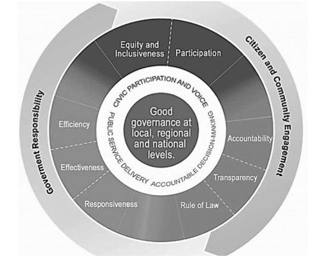
- 1. Accountability:
- Accountability is answerability. It means accountability necessitates a person to be answerable for his actions or decisions. It means it seeks to fix responsibility for an action or decision.
- How to Ensure Accountability
- Calling a report from the responsible person/ In house overseeing responsibilities.
- Instituting independent enquiry in case of wrongness/ Independent external body to oversee the functioning
- Instituting disciplinary action against wrongdoers.
- Hierarchy.
- Transparent mechanism to take decisions and actions.
- Manifestation of accountability
- Accountability of public representatives (Legislature) to the people.
- Accountability of the executive to the legislature.
- Accountability of public servants to the executive and people.
- 2. Transparency:
- Information should be accessible to the public and should be understandable and monitored. It also means free media and access information to them.
- 3. Responsiveness:
- Institutions and processes should serve all stakeholders in a reasonable period of time.
- 4. Effectiveness and Efficiency:
- Processes and institutions should be able to produce results that meet the needs of their community. Resources of the community should be used effectively for maximum output.
- 5. Participation:
- People should be able to voice their own opinions through legitimate immediate organizations or representatives. This includes men and women, vulnerable sections of society, backward classes, minorities, etc. Participation also implies freedom of association and expression.
- 6. Consensus-Oriented:
- Consensus-oriented decision-making ensures that even if everyone does not achieve what they want to the fullest, a common minimum can be achieved by everyone which will not be detrimental to anyone. It mediates differing interests to meet the broad consensus on the best interests of a community.
- 7. Equity and Inclusiveness:
- Good governance assures an equitable society. People should have opportunities to improve or maintain their well-being. Institutions and processes should serve all stakeholders in a reasonable period.
- 8. Rule of Law:
- The legal framework should be enforced impartially, especially on human rights laws. Without the rule of law, politics will follow the principle of matsya nyaya i.e., the law of fish which means the strong shall prevail over the weak.
- REFERENCES OF GOOD GOVERNANCE
- Bhagavad Gita:
- It provides numerous cues for good governance, leadership, dutifulness and self-realization which are re-interpreted in the modern context.
- Kautilya’s Arthasastra:
- The welfare of people was considered paramount in the role of the King.
- Indian Constitution:
- The importance of governance is inscribed in Indian Constitution which is built on the premise of a Sovereign, Socialist, Secular and Democratic Republic committing itself to democracy, the rule of law and welfare of the people through DPSPs
- United Nations:
- Under Sustainable Development Goals, Goal 16 can be directly linked to good governance as it is dedicated to improvement in governance, inclusion, participation, rights, and security. According to former United Nations Secretary-General Kofi Annan, "Good governance is ensuring respect for human rights and the rule of law; strengthening democracy; promoting transparency and capacity in public administration." He also said that “Good Governance is perhaps the single most important factor in eradicating poverty and promoting development.”
- NEED FOR GOOD GOVERNANCE
- Good governance is crucial for the effective and equitable functioning of any society, especially in a diverse and inequal country like India. It ensures that the government works efficiently, transparently, and in a manner that benefits all sections of society.
- Some key reasons why good governance is essential in the context of India are:
- 1. Socio-Economic Development
- Poverty Alleviation:
- Efficient Resource Utilization:
- Good governance ensures that resources are used efficiently and reach the intended beneficiaries, helping to reduce poverty and improve living standards.
- Equitable Growth:
- Policies designed under good governance aim to promote inclusive growth, ensuring that economic benefits reach marginalized and vulnerable communities.
- Economic Stability:
- Policy Consistency:
- Stable and consistent policies foster a favourable investment climate, boosting economic growth and development.
- Infrastructure Development:
- Transparent and accountable governance leads to better planning and execution of infrastructure projects, essential for economic progress.
- 2. Enhancing Public Trust and Legitimacy
- Transparency:
- Information Accessibility:
- Transparent governance allows citizens to access information about government actions and decisions, enhancing trust.
- Corruption Reduction:
- Transparency helps in curbing corruption by exposing unethical practices and holding officials accountable.
- Accountability:
- Responsiveness:
- Good governance ensures that public officials are responsive to the needs and grievances of citizens.
- Performance Measurement:
- It involves setting benchmarks and performance indicators for public services, ensuring officials are held accountable for their performance.
- 3. Strengthening Democracy
- Public Participation:
- Inclusive Decision-Making:
- Good governance promotes citizen participation in decision-making processes, making governance more democratic and reflective of public needs.
- Empowerment:
- By involving citizens in governance, it empowers them and fosters a sense of ownership and responsibility towards public policies and programs.
- Rule of Law:
- Legal Framework:
- Good governance ensures that laws are applied consistently and fairly, protecting the rights of all citizens.
- Judicial Independence:
- It supports an independent judiciary that can uphold justice without bias or influence.
- 4. Social Justice and Equity
- Reducing Inequality:
- Equal Opportunities:
- Good governance strives to provide equal opportunities in education, healthcare, and employment, reducing socio-economic disparities.
- Social Welfare Programs:
- Effective implementation of social welfare programs ensures that benefits reach the disadvantaged and marginalized groups.
- Protection of Rights:
- Human Rights:
- Good governance ensures the protection of human rights, including freedom of speech, assembly, and equality before the law.
- Minority Rights:
- It safeguards the rights of minorities and ensures their inclusion in the socio-political fabric of the nation.
- 5. Environmental Sustainability
- Sustainable Development:
- Environmental Policies:
- Good governance promotes the formulation and implementation of policies that balance economic development with environmental sustainability.
- Resource Management:
- It ensures the sustainable use of natural resources, preventing over-exploitation and degradation.
- Climate Action:
- Adaptation and Mitigation:
- Good governance facilitates effective climate action plans, addressing both mitigation of greenhouse gas emissions and adaptation to climate change impacts.
- 6. Innovation and Efficiency
- Public Sector Innovation:
- Technology Integration:
- Good governance encourages the adoption of new technologies and innovative practices in public administration.
- Efficiency:
- It leads to the efficient delivery of public services, reducing delays and improving the quality of governance.
- Capacity Building:
- Training and Development:
- Continuous training and development programs for public servants enhance their skills and capabilities, leading to better governance outcomes.
- CHALLENGES TO GOOD GOVERNANCE
- Centralisation of the Administrative System:
- Governments at lower levels can only function efficiently if they are empowered to do so. This is particularly relevant for the Panchayati Raj Institutions (PRIs), which currently suffer from inadequate devolution of funds as well as functionaries to carry out the functions constitutionally assigned to them.
- Criminalization of Politics:
- According to the Association of Democratic Reforms, 43% of Members of the Parliaments of Lok Sabha 2019 are facing criminal charges. It is a 26% increase as compared to 2014.
- The criminalisation of the political process and the unholy nexus between politicians, civil servants, and business houses are having a baneful influence on public policy formulation and governance. The political class as such is losing respect. Therefore, it is necessary to amend Section 8 of the Representation of the People’s Act 1951 to disqualify a person against whom the criminal charges that relate to the grave and heinous offences and corruption are pending.
- Corruption:
- Corruption is a major obstacle in improving the quality of governance. While human greed is a driver of corruption, it is the structural incentives and poor enforcement system to punish the corrupt that have contributed to the rising curve of graft in India. According to the Corruption Perception Index - 2019 (released by Transparency International, India's ranking has slipped from 78 to 80.
- Marginalization of Socially and Economically Backward People:
- The socially and economically backward sections of society have always been marginalised in the process of development. Although there are constitutional provisions for their upliftment in practice, they are lagging in so many areas like education, health indicators, economic well-being etc.
- Gender Disparity:
- According to Swami Vivekananda, “It is impossible to think about the welfare of the world unless the condition of women is improved. A bird cannot fly on only one wing.” One way to assess the state of the nation is to study the status of its women. As women comprise almost 50% of the population it is unfair that they are not adequately represented in government institutions and other allied sectors. Therefore, to ensure good governance, it is essential to ensure the empowerment of women.
- HOW TO ENSURE GOOD GOVERNANCE
- Through External Systemic steps:
- Government has taken many steps in this direction.
- E-GOVERNANCE
- The National e-Governance Plan envisions making all government services accessible to the common man in his locality, through common service delivery outlets and ensuring efficiency, transparency & reliability of such services at affordable costs.
- E-Governance effectively delivers better programming and services in the era of newly emerging information and communication technologies (ICTs), which herald new opportunities for rapid social and economic transformation worldwide.
- E-Governance has a direct impact on its citizens who derive benefits through direct transactions with the services offered by the government.
- Programs launched under e-Governance:
- Pro-Active Governance and Timely Implementation (PRAGATI), Digital India Program, MCA21 (to improve the speed and certainty in the delivery of the services of Ministry of Company Affairs), Passport Seva Kendra (PSK), online Income tax return, etc.
- Focus on 'Minimum Government, Maximum Governance’.
- LEGAL REFORMS
- The Central Government has scrapped nearly 1,500 obsolete rules and laws to bring about transparency and improve efficiency.
- Reform criminal justice and procedural laws with a focus on pre-institutional mediation.
- POLICE REFORMS
- Modernizing police forces and implementing the Model Police Act of 2015.
- Reform of the First Information Report (FIR) lodging mechanism, including introducing filing e-FIRs for minor offences.
- Launch a common nationwide emergency number to attend to the emergency security needs of citizens.
- ASPIRATIONAL DISTRICTS PROGRAMME
- The Aspirational Districts Programme (ADP) was launched in January 2018 to transform the lives of people in the under-developed areas of the county in a time-bound manner.
- Anchored in NITI Aayog, the programme is aimed at transforming 115 most backward districts with focused interventions in the field of health and nutrition, education, agriculture and water management, financial inclusion and skill development.
- GOOD GOVERNANCE INDEX
- The Good Governance Index was launched on Good Governance Day on 25 December 2019.
- The Good Governance Index is a uniform tool across States to assess the Status of Governance and the impact of various interventions taken up by the State Government and Union Territories.
- The objectives of the Good Governance Index are to provide quantifiable data to compare the state of governance in all states and Union Territories, enable states and Union Territories to formulate and implement suitable strategies for improving governance and shift to result-oriented approaches and administration.
- DECENTRALIZATION
- Centralised Planning Commission was abolished, replacing it with the think tank called the National Institution for Transforming India (NITI Aayog), which would usher in an era of “cooperative federalism”.
- 14th Finance Commission increased the tax devolution of the divisible pool to states from 32% to 42% for the years 2015 to 2020. It provides more freedom to states to initiate schemes based on local factors.
- 13. CITIZEN CHARTERS
- WHAT ARE CITIZEN CHARTERS (CC)?
- A public document that sets out basic information on the services provided, the standards of service that customers can expect from an organisation, and how to make complaints or suggestions for improvement. (OECD)
- A Citizen Charter is a document which represents a systematic effort to focus on the commitment of the Organisation towards its Citizens concerning Standard of Services, Information, Choice and Consultation, Non-discrimination and Accessibility, Grievance Redressal, Courtesy and Value for Money.
- This also includes expectations of the Organisation from the Citizens for fulfilling the commitment of the Organisation.
- Citizen Charter emphasizes on citizens as customers by ensuring that public services are responsive to the citizens they serve.
- It comprises the Vision and Mission Statement of the organization, stating the outcomes desired and the broad strategy to achieve these goals and outcomes.
- A Citizen’s Charter is not legally enforceable and, therefore, is non-justiciable.
- Citizen Charters are made by the respective government organizations or agencies themselves, But they follow the guidelines set by the Department of Administrative Reforms and Public Grievances (DARPG). Even private companies can have their own versions voluntarily.
- Example:
- The Passport Office Citizen Charter defines service timelines (30 days normal / 3 days tatkaal), documentation norms, grievance procedures, and quality commitments — ensuring accountable, transparent, and citizen-centric service delivery.
- Origin:
- The concept was first articulated and implemented in the United Kingdom by the Conservative Government of John Major in 1991 as a national Programme with a simple aim:
- To continuously improve the quality of public services for the people of the country so that these services respond to the needs and wishes of the users.
- Nodal Department:
- The Department of Administrative Reforms and Public Grievances (DARPG) of the Ministry of Personnel, Public Grievances and Pensions, Government of India, to provide more responsive and citizen-friendly governance, coordinates the efforts to formulate and operationalise Citizens' Charters.
- The Right of Citizens for Time Bound Delivery of Goods and Services and Redressal of their Grievances Bill, 2011 (Citizens Charter) was introduced to create a mechanism to ensure the timely delivery of goods and services to citizens.
- ESSENTIAL COMPONENTS OF CC AS PER 2ND ARC REPORT
- Vision and mission document of an organisation
- Domain to the organisation
- Citizen responsibility
- BENEFITS OF CC AS PER WORLD BANK
- 1. It enhances transparency and accountability.
- 2. It reduces opportunities for corruption and graft.
- 3. It increases the effectiveness and performance of the organisation.
- 4. It creates a way for both internal and external actors to objectively monitor service delivery performance.
- 5. It can increase the revenue of the government if citizens avail charged services.
- WHAT ARE THE PRINCIPLES/STANDARDS OF CC?
- The concept of the Citizens' Charter enshrines the trust between the service provider and its users. Six principles of the Citizens Charter movement as originally framed were:
- Quality - improving the quality of services.
- Choice - for the users wherever possible.
- Standards - specifying what to expect within a time frame.
- Value - for the taxpayers’ money.
- Accountability - of the service provider (individual as well as Organization).
- Transparency - in rules, procedures, schemes and grievance redressal.
- Participative- Consult and involve.
- Features of ideal CC
- 1. Realistic
- 2. Measurable
- 3. Concrete
- 4. Resource linked.
- 5. Consultative
- 6. Compensation in case of deficiency of service
- Nine principles of service delivery adopted by the British government in 1998
- 1. Set standards of service.
- 2. Be open and provide all information.
- 3. Consult and involve.
- 4. Encourage access and promotion of choice.
- 5. Treat all fairly.
- 6. Put things right when they go wrong.
- 7. Use resources effectively.
- 8. Innovate and improve.
- 9. Work with other providers.
- CITIZEN CHARTER IN INDIA
- The Department of Administrative Reforms and Public Grievances (DARPG) initiated the task of coordinating, formulating and operationalising Citizens' Charters.
- Guidelines for formulating the Charters as well as a list of do's and don'ts are communicated to various government departments/organisations to enable them to bring out focused and effective charters.
- The Charters are expected to incorporate the following elements:
- Vision and Mission Statement.
- Details of business transacted by the organisation.
- Details of clients.
- Details of services provided to each client group.
- Details of grievance redress mechanism and how to access it.
- Expectations from the clients.
- Preconditions of successful implementation of CC strong official support.
- Participation of stakeholders.
- Incentive and motivation for staff.
- Awareness about CC among both staff and people.
- Project-level monitoring and evaluation system to track the progress.
- The Right of Citizens for Time Bound Delivery of Goods and Services and Redressal of their Grievances Bill, 2011 (Citizen Charters Bill)
- Every citizen is given the right to get time-bound delivery of goods and services.
- If not delivered, there will be a redressal mechanism.
- It makes it mandatory for every public authority to publish a CC within six months of the commencement of the act.
- It provides a format of CC
- List the details of goods and services provided by a public authority
- The name of the person or agency responsible for providing goods or services.
- The time frame within which such goods and services are to be provided.
- The category of the people entitled to these goods and services.
- Details of the complaint redressal mechanism.
- Bill also provides for the establishment of a public grievance redressal commission at the central and state level.
- WHAT ARE THE SHORTCOMINGS OF CC IN INDIA?
- Devoid of Participative Mechanisms:
- In most cases, CC is not formulated through a consultative process with cutting-edge staff who will finally implement it.
- Poor Design and Content:
- There is a lack of meaningful and succinct CC and an absence of critical information that end-users need to hold agencies accountable.
- Lack of Public Awareness:
- Only a small percentage of end-users are aware of the commitments made in the CC. Since effective efforts of communicating and educating the public about the standards of delivery promise have not been undertaken.
- Charters are Rarely Updated:
- CC has become a one-time exercise in India, frozen in time.
- No Proper Consultation:
- End-users, civil society organizations and NGOs are not consulted when CCs are drafted. Since a CC’s primary purpose is to make public service delivery more citizen-centric, consultation with stakeholders is a must.
- Measurable Standards of Delivery are Rarely Defined:
- Making it difficult to assess whether the desired level of service has been achieved or not.
- Lack of Interest:
- Little interest is shown by the organizations in adhering to their CC since there is no citizen-friendly mechanism to compensate the citizen if the organization defaults.
- Uniformity in CC:
- Tendency to have a uniform CC for all offices under the parent organization. CCs have still not been adopted by all Ministries/Departments. This overlooks local/ department specific issues.
- Poor updation
- Inadequate groundwork
- Resistance to change
- Top-down approach
- Complex grievance redressal mechanism
- Unrealistic standards
- REFORMS IN CITIZEN CHARTERS TO MAKE THEM EFFECTIVE
- One Size Does Not Fit All:
- Formulation of CC should be a decentralized activity with the head office providing only broad guidelines.
- Wide Consultation Process:
- CC should be formulated after extensive consultations within the organization followed by meaningful dialogue with civil society.
- Firm Commitments to be made:
- CC must be precise and make firm commitments of service delivery standards to the citizens/consumers in quantifiable terms wherever possible.
- Redressal Mechanism in Case of default:
- Lay down the relief which the organization is bound to provide if it has defaulted on the promised standards of delivery.
- Periodic Evaluation of CC:
- Preferably through an external agency.
- Hold Officers Accountable for Results:
- Fix specific responsibility in cases where there is a default in adhering to the CC.
- Include Civil Society in the Process:
- To assist in improvement in the contents of the Charter, and its adherence as well as educating the citizens about the importance of this vital mechanism.
- Benchmark using end-user feedback:
- End user feedback should be treated as input for improving service delivery.
- WHAT SHOULD BE THE WAY FORWARD?
- A Citizens’ Charter cannot be an end, it is rather a means to an end - a tool to ensure that the citizen is always at the heart of any service delivery mechanism.
- Drawing from best practice models such as the Sevottam Model (a Service Delivery Excellence Model) can help CC in becoming more citizen centric.
- 14. WORK CULTURE
- Work culture is the total of an organization's values, beliefs, and principles on one hand and organization’s ideologies and principles on the other.
- FACTORS AFFECTING WORK CULTURE
- History of organisation
- Product
- Market competitiveness determines work culture, especially in service delivery, e.g. Blink It service delivery model in 15 minutes.
- Technology
- Strategy
- Employees
- Management style.
- National culture.
- An organisation is formed to accomplish specific goals and objectives by bringing people together on a common platform and motivating them to perform at their highest level.
- Employees must enjoy themselves at work to develop a sense of loyalty to it.
- Workplace culture is critical in bringing out the best in employees and keeping them with the company for a longer period. The organisation must provide a positive environment for employees so that they can focus on their work rather than interfering with one another's.
- CHARACTERISTICS OF A HEALTHY WORK CULTURE (GENERIC)
-
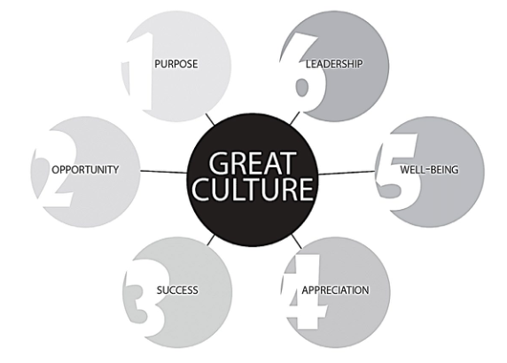
- Seven constituents of healthy work culture by O’Reilly, J. Chatman and DF Caldwell
- 1. Innovation and risk-taking.
- 2. Attention to detail, diligence & mindfulness.
- 3. Outcome oriented.
- 4. People-oriented.
- 5. Team oriented & collaborative.
- 6. Aggressiveness.
- 7. Stability.
- Some other features associated with work culture are listed below in the box:
- Other features of healthy work culture
- Interpersonal relations
- Timely work
- Impartiality and objectivity
- Participative decision making
- Three-way communication
- Punctuality
- Cordiality and responsiveness
- Performance evaluation and rectification
- Motivated workforce
- Productivity
- Skill upgradation and career advancement
- Conducive work environment
- Quality service delivery
- Stability and security.
- Features of poor work culture
- Inefficiency
- Lack of accountability
- Poor grievance redressal
- Improper behaviour
- Conflicts
- Nepotism and favouritism
- Low morale and motivation
- Elitism
- Red-tapes
- Status-quo
- Corruption and rent seeking.
- Apathy towards client.
- Work as burden.
- Reasons for poor work culture
- Lack of performance evaluation.
- Job security.
- Process orientation.
- Lack of performance accountability.
- Seniority syndrome.
- Resource crunch.
- Poor training.
- Bureaucratic apathy.
- Ways to improve work culture
- Pre-entry and mid-career training.
- Sensitive training.
- Public hearing.
- Feedback.
- Public service guarantee.
- Performance-linked pay.
- CCTV surveillance.
- Private sector participation.
- Leadership.
- Recognition.
- Accountability.
- Recent administrative reforms to improve work culture:
- 360-degree performance evaluation.
- Performance management system.
- Biometric attendance.
- Gender empowerment.
- Citizen charter.
- e-governance initiatives.
- Lateral entry.
- Recognition in form of Civil services award day.
- Compulsory retirement.
- New India Manthan
- PRAGATI (Proactive governance and timely implementation)
- Some success stories of work culture
- Ahmad Nagar- DC Anil Kumar ensured a single window system and scientific record keeping (more examples from public service sector)
- ISRO:
- Known for its supportive work culture and leadership style.
- Passport seva Kendra's:
- Efficiency in delivery of passports
- Google:
- Healthy work environment for its employees as it provides freedom in the workspace, resting area, free cafeteria
- Bengaluru:
- Deputy commissioner of the southeast division in Bengaluru, selected nine police officials for best performance and awarded them holiday packages.
- WAYS TO PROMOTE A HEALTHY WORK CULTURE
- 1. Positive work environment:
- It leads to happier employees and higher productivity.
- 2. Employees must treat one another with respect:
- Workplace conflicts and nasty politics provide no benefit to either.
- 3. Avoid partiality among employees:
- It results in demotivating employees. Employees should be judged solely based on their work. At work, personal relationships should take a backseat. Don't give someone special treatment just because he's a relative.
- 4. Recognise and reward top performers:
- Praising employees and telling them that organisation expect good work from them all the time. Make them feel as if they are indispensable to their company. Instead of criticising those who did not perform well, convey them to pull their socks up for the next time. Instead of firing them right away, give them another chance.
- 5. Encouraging workplace debates:
- Employees must talk about problems amongst themselves to come to better conclusions. Everyone should be free to express their opinions. Team leaders and managers must communicate with their subordinates regularly. Transparency is necessary at all levels for better employee relationships and healthy workplace culture. Manipulation of data and data tampering is strictly prohibited in the workplace. Allow the information to flow in the desired direction.
- 6. Employee-friendly policies and guidelines:
- These are required by the organisation. For example, it is simply unrealistic to expect an employee to work until late on his/her birthday. Employees should benefit from the rules and regulations. Employees are expected to maintain the organization's decorum. At work, it's critical to maintain a high level of discipline.
- 7. Avoiding dictatorial approach:
- Rather than dictating juniors, bosses should act as mentors to their subordinates. She/He should serve as role model for their subordinates. Superiors are expected to give employees a sense of direction and to guide them where necessary. The team members should be able to get access to their boss's cabin quickly.
- 8. Team-building exercises:
- To strengthen their bond and develop spirit de corps conduct training programmes, workshops, seminars, and presentations to help employees improve their current skills. They should be prepared in the event of unforeseen circumstances or a shift in the workplace culture.
- MERITS OF HEALTHY WORK CULTURE
- 1. Creation of a unique identity of organisation- e.g. ISRO
- 2. Motivation to employees.
- 3. Prediction of employee’s attitude.
- DEMERITS OF TOO MUCH EMPHASIS ON WORK CULTURE
- Deep-rooted work culture may prove irrelevant in the changing scenario top-down approach is losing its relevance.
- 1. It can be a barrier to change, for example resistance to change in bureaucracy.
- 2. Discourage members who may not fit into the work culture of the organisation to resign from Kannan Gopinathan.
- DIFFERENCE BETWEEN INDIAN AND WESTERN WORK CULTURES
- PARAMETER WESTERN INDIAN
- The Importance of Time
- Perfect work-life balance.
- They are very conscientious about their work schedules.
- They are punctual in their arrival, departure, and return to their personal lives.
- In India, we are accustomed to arriving late to work and having to sneak into our offices and work until late at night to compensate.
- The Break Routine
- Breaks are generally shorter in western countries. A 30-minute lunch break is included, as well as a 15-minute tea/snacks break.
- Employees typically have beverages at their desks while checking emails, doing calculations, or proofreading documents.
- As a result, there is an increase in efficiency.
- A one-hour lunch break is mandatory in India. This long break allows for long walks around the grounds. A 15–20-minute tea/snacks break has also been added to this, providing a space for mini gatherings between all employees either inside or outside the office building.
- This culture has its own set of benefits. It creates a work environment that lifts everyone's spirits and lightens the competitive atmosphere.
- Hierarchy
- In Western countries, authority is rarely respected. A young person with the right knowledge can be promoted to the company's highest positions.
- Superiority will not be displayed, and everyone is expected to learn.
- In India, there has always been a hierarchy. Organizations, on the other hand, are now moving toward a flatter structure.
- There is no hierarchy here, which leads to increased efficiency. This creates a more welcoming atmosphere. Employees are also pleased because they are treated equally regardless of their position. Everyone works together in a dignified manner.
- The Office Environment
- At offices in the west, health is regarded as a top priority. They believe that a positive work environment and proper mental health are essential for increased productivity.
- In the offices, psychological evaluations and group development activities are conducted regularly.
- Offices are rewarding their employees with yearly trips or fitness vouchers, promoting a healthy work-life balance. Creating a pleasant and productive work environment. This not only keeps the employee but also promotes the company through word of mouth.
- India is catching up to the advancement of the office environment. Indian businesses place a premium on team-building exercises.
- 15. QUALITY OF SERVICE DELIVERY
- It means the right services are provided to the right people at the right time in the right manner. It refers to the standard or level of excellence provided when services are rendered to customers or citizens. It encompasses dimensions such as efficiency, effectiveness, reliability, responsiveness, and satisfaction. In the context of public services, quality service delivery is crucial for achieving good governance and ensuring that citizens' needs are met adequately.
- Factors affecting customer’s expectation
- Personal needs and
- Previous experiences.
- Expected and perceived service levels may not always be equal, resulting in a gap.
- Five gaps could result in poor service quality for customers
- FIRST GAP
- Between consumer expectations and management perceptions:
- This chasm occurs when management fails to recognise what the customers want. For example, while hospital administrators may believe that patients want better food, patients may be more concerned with the nurse's responsiveness.
- This gap may be for the following reason
- a. A lack of marketing research.
- b. Information about the audience's expectations was misinterpreted.
- c. There is not a lot of research on-demand quality.
- d. There are too many layers between front-line workers and upper-level management.
- SECOND GAP
- BETWEEN MANAGEMENT PERCEPTION AND SERVICE QUALITY SPECIFICATION:
- Even if management understands what the customer wants, they may fail to set an appropriate performance standard. A good example is when hospital administrators tell nurses to respond to a request 'quickly,' but don't specify how quickly.
- The gap may have the following reasons:
- a. Inadequate planning processes.
- b. A lack of commitment from management.
- c. Service design that is unclear or ambiguous.
- d. A non-systematic approach to developing new services.
- THIRD GAP
- BETWEEN SERVICE QUALITY SPECIFICATION AND SERVICE DELIVERY
- Service personnel may be undertrained, incapable, or unwilling to meet the set service standard, resulting in a gap.
- Following reasons could be responsible:
- Human resource policies that are ineffective, such as ineffective recruitment, role ambiguity, role conflict, and an ineffective evaluation and compensation system
- a) Internal marketing that is ineffective
- b) Inability to match supply and demand.
- c) Inadequate customer training and education
- FOURTH GAP
- BETWEEN SERVICE DELIVERY AND EXTERNAL COMMUNICATION
- Management statements and advertisements have a significant impact on consumer expectations. When these assumed expectations are not met when the service is delivered, there is a gap. For example, the hospital depicted in the brochure may appear to have clean and furnished rooms, but it may be poorly maintained, failing to meet the patients' expectations.
- Gap may have the following reasons
- a. Over-promising in a public relations campaign.
- b. Mismanagement of customer expectations.
- c. Failure to perform by the specifications.
- FIFTH GAP:
- BETWEEN EXPECTED SERVICE AND EXPERIENCED SERVICE
- This chasm occurs when customers misinterpret service quality. A physician, for example, may continue to visit the patient to demonstrate and ensure care, but the patient may interpret this as a sign that something is seriously wrong.
- Assessing the quality of service includes following the steps
- 1. Determining parameters.
- 2. Setting standards of performance.
- 3. Measuring actual performance.
- 4. Comparing actual performance with standard performance.
- To Summarise:
- Quality of service delivered = Standard – Actual performance
- DETERMINANTS THAT MAY INFLUENCE THE APPEARANCE OF A GAP ARE
- 1. Reliability:
- The ability to deliver on a promise consistently and accurately.
- 2. Assurance:
- The ability of employees to convey trust and confidence through their knowledge and courtesy.
- 3. Empathy:
- Providing customers with compassionate, one-on-one service.
- 4. Responsiveness:
- A desire to assist customers and provide prompt service.
- FEATURES OF HIGH QUALITY SERVICE
- Responsive.
- Convenient.
- Time bound.
- Transparent.
- Accountable.
- Participatory.
- Efficient and economic.
- Effective grievance redressal mechanism.
- Quality standards.
- Equality and equity.
- PROBLEMS WITH QUALITY SERVICE DELIVERY
- Inaccessibility
- Inequality
- Poor quality
- Inordinate Delays
- REASONS FOR POOR QUALITY
- Secrecy
- Lack of standards
- Lack of enforceable rights
- Lack of awareness
- Lack of accountability mechanism
- Lack of interoperability
- Rigidity
- Lack of capacity
- Coordination
- Issues arising out of functioning of organisations:
- SYSTEMIC CHALLENGES
- Lack of transparency
- Monopoly
- Complex processes and weak institutions
- Poor prosecution
- NON-SYSTEMIC CHALLENGES
- Displacement of values
- Politico business nexus
- Cash economy.
- Meek protection to whistle-blowers.
- ADMINISTRATIVE REFORMS MADE FOR QUALITY SERVICE DELIVERY
- Right to information.
- Citizen charter.
- Public Service Guarantee Act (Madhya Pradesh)
- Sevottam model
- Digital India mission.
- Aadhaar enabled payment services.
- Direct Benefit Transfer
- Twitter seva by Railways
- Lokpal and Lokayuktas
- 10-POINT PLAN FOR QUALITY SERVICE DELIVERY
- Quality Service Delivery Reform can be achieved by:
- 1. Progressively re-engineering services to better meet people's needs. These universal services will become easier to access and use, reducing the burden on people, with more of the work happening 'behind the scenes'. Processes will be simplified, allowing people to undertake more transactions at a time and place of their choosing.
- 2. Participatory Governance:
- Participatory government which makes inclusive decisions.
- 3. Implementing a customer needs assessment framework to identify people who need more intensive support by drawing on existing information about a person's circumstances and asking questions to identify the services they need.
- 4. Customized service delivery:
- Self-managed:
- People who can independently access and navigate services without support or assistance.
- Assisted:
- People who, at certain times, are unable to self-manage because of a particular circumstance and require additional assistance to access or interpreting services.
- Managed:
- People who require services to be coordinated into a support plan to meet compliance obligations or other obligations such as parole conditions or child protection issues.
- Intensive:
- People facing significant disadvantage or multiple complex challenges who require coordinated assistance.
- 5. Implementing a customer relationship management system to give staff a broader view of a person and their dealings with the department and to provide a consistent view of a person's information to help identify the services they need, with the appropriate privacy protections in place.
- 6. Transforming contact to provide better access to services regardless of location and circumstances through:
- Improved mobile and outreach services to people in rural and regional areas, and to others who are isolated.
- Co-locating offices to provide one-stop-shop access to departmental services and extend the reach of the department; and
- A single telephone number and website to improve access to the department's information and services through a single point of contact.
- 7. Implementing streamlined customer registration and proof of identity arrangements that improve convenience for people while protecting their personal information, so they only need to prove who they are or tell their story once when accessing services, with their consent or where legislation already permits.
- 8. Integrating Human Services agencies into a single department of state to better enable the departments to contribute to policy development and bring together key corporate and enabling services to drive efficiency, freeing up resources for frontline services.
- 9. Bringing together the department's frontline service delivery networks into a single customer-facing network to provide coordinated support to people. Staff will receive more training and will be able to deliver tailored services at the local level. Services will be delivered through a combination of shop fronts and specialist service centres (telephony and processing).
- 10. Implementation of a work management system to optimize the way work is allocated to staff based on capacity and skills.
- OTHER SUGGESTIONS
- Social accountability
- Single window mechanism
- Performance related incentive
- Digitisation and e governance.
- 16. SEVOTTAM MODEL OF SERVICE DELIVERY
- The Sevottam model was created with the overarching goal of improving the country's quality of public service delivery.
- There are three components to the model, and in addition to the overarching goal, intermediate outcomes are expected from compliance with conditions designed for each of these three components.
- First component
- The model's first component necessitates effective charter implementation, which creates a channel for citizens' input into how organisations determine service delivery requirements.
- Citizens' Charters make information on citizens' entitlements available to the public, making citizens more informed and thus empowering them to demand better services.
- Second component
- The model's second component, 'Public Grievance Redress,' necessitates a good grievance redress system that, regardless of the final decision, leaves citizens more satisfied with how the organisation responds to complaints/ grievances.
- Third component
- The third component, 'Excellence in Service Delivery,' asserts that an organisation can achieve excellent service delivery performance only if it effectively manages the key ingredients for good service delivery and builds its capacity to improve delivery over time.
- How closely improvement actions are linked to assessment results will determine how effective such an assessment model is at influencing service delivery quality.
- Furthermore, any assessment model must be updated regularly to keep up with new developments.
- Change management and research and development, in addition to the administration of the assessment process and its culmination in certification or awards, have been identified as important focus areas for running this model.
-
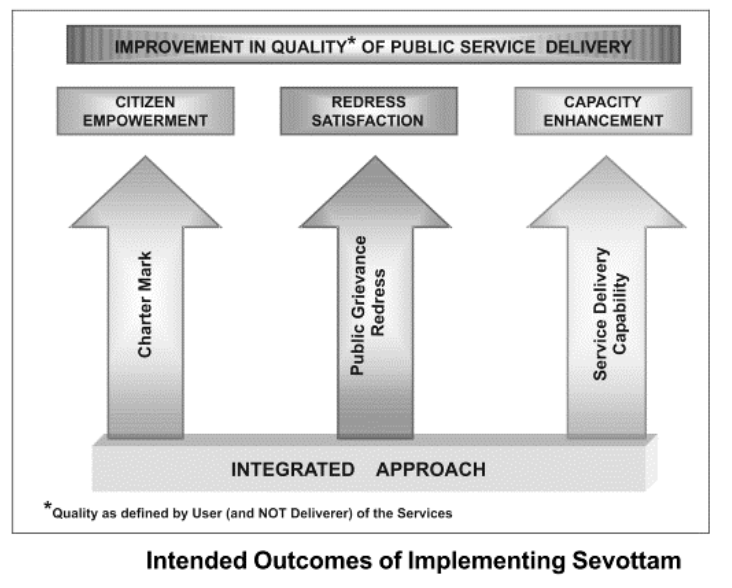
- MAIN OBJECTIVES OF SEVOTTAM
- 1. Improve the country's public service delivery quality.
- 2. Intermediate results:
- Compliance with the conditions designed for each of these three components is expected to produce intermediate results. Citizen Empowerment, Redress Satisfaction, and Capacity Enhancement are among them.
- 3. Defects in previous public-service delivery systems.
- What should a civil servant do to improve the quality of service
- 1. Automate the processes.
- 2. Reengineering process.
- 3. Train the staff.
- 4. Robust monitoring mechanism.
- 17. UTILISATION OF PUBLIC FUNDS
- The public fund is the public's financial resource that the state manages as a custodian.
- The impact of how governments manage public funds on economic growth and citizen well-being is referred to as public fund management. Managing public resources entails determining how the government makes money (revenue) and how it spends money (expenditure).
- Sources of Public Funds:
- Taxes, money earned by state enterprises (PSUs), foreign aid, and other sources of revenue are all considered as revenue of the government.
- Expenditures of Public Funds:
- Expenditures include government salaries, purchases of goods and services, infrastructure and public service spending and grants etc.
- Principles of Public Fund Utilisation:
- Public resources should be used to the greatest extent possible for the benefit of the public. As a result, when managing public resources, public entities (Government) should follow certain principles.
- The following principles should be demonstrated by public entities when using public funds:
- Legality
- Government bodies must follow the law and fulfil their legal obligations. After receiving approval from a competent authority, the public fund must be used. Unauthorized spending will inevitably lead to excess and overspending. Furthermore, funds must be used only for the purpose for which they were approved.
- Accountability
- Government bodies should be held accountable for the use of public funds and should be able to provide complete and accurate accounts of their activities, as well as have appropriate governance and management arrangements in place to address any issues.
- INSTITUTIONS AND INSTRUMENTS TO ENSURE ACCOUNTABILITY
- Institutions Instruments
- Legislative
- Financial bill, Budget.
- Executive
- CAG, Parliamentary committees, Lokpal, Lok Ayukta, CBI, CVC.
- Judiciary
- Judicial review.
- Civil Society
- Questioning through Media, Citizen charter, social audit, citizen engagement and activism.
- Transparency and openness are dependent on high reporting and disclosure standards. This has following advantages:
- 1. It demonstrates that a public resource is being used appropriately, fairly, and effectively for the greatest public good.
- 2. It boosts public confidence in the government.
- 3. Transparency ensures that authorities act legally and in accordance with the law. Transparency also ensures that the authority follows the overall principles of equity and fairness and provided the best value for money to the end users.
- 4. Some government agencies operate in less-than-ideal circumstances, such as when there is no market for providers or when those that are available lack the necessary capability or capacity.
- 5. These conditions give government entities disproportionate discretion and power. In such situations, transparency is required to ensure that actions are taken in good faith.
- VALUE FOR MONEY
- Core Principle
- Public funds must be used effectively and efficiently, with no waste, and in a way that maximises public benefit. All public expenditure must pass one fundamental test: Maximising Social Advantage.
- This means balancing social benefits against social costs to find and maintain an optimal level of spending. Every rupee spent by the government must aim to maximise societal welfare.
- Funds should never favour a specific group; the goal is widespread happiness for all.
- Key Aspects of Value for Money
- Balancing Effectiveness and Efficiency
- Achieve desired outcomes (effectiveness) while minimising costs (efficiency).
- Demonstrating Competence
- Public entities must show skill and capability in managing funds.
- 1. Sustainability of Funding Relationships
- Public entities must think long-term when allocating funds, considering future needs and impacts.
- Ensure a steady, reasonable flow of money to causes without risking ongoing service delivery.
- Example:
- India's fertiliser subsidy rewards even inefficient manufacturers to keep them viable. This is strategically important for the nation but not sustainable long-term, creating a public spending dilemma.
- 2. Fairness
- Governments hold public trust, so they must always act fairly and reasonably with funds.
- Decisions should be transparent, unbiased, and respect India's diversity—no discrimination based on caste, community, religion, gender, or class.
- Special protection for the poor, underprivileged, and weaker sections.
- 3. Integrity
- Those handling public resources must act with utmost honesty.
- Support this through policies like codes of conduct, ethics codes, and public service values.
- Public servants should declare any personal interests that could influence (or seem to influence) their impartiality in fund-related work.
- Some ethical issues related to the utilization of public funds
- 1. The use of public funds for business bailouts.
- 2. The amount of direct and indirect taxes levied.
- 3. The use of public funds to promote the government.
- 4. Public money is being used to run a loss-making PSU.
- 5. Resource distribution across industries such as health, defence, and research.
- 6. International aid when millions of Indians lack access to basic services such as education, healthcare, safe drinking water, and electricity.
- 7. Corruption in the use of government funds. Example- Using public funds for corporate bailout.
- Issue:
- Is it ethical to use public funds to bail out large corporations that continue to pay 'vulgar' salaries to their top executives?
- Merits Demerits
- Some businesses are simply "too big to fail." If they fail, the repercussions will be felt not just in one sector but throughout the economy. In some cases, the company may be providing a service that no other company can provide, resulting in a monopoly. E.g.: In the Indian context, we can see cases like DISCOMs, which are loss-making but cannot afford to fail.
- Large corporations employ many people, the government is under pressure from the public to bail them out in case of bankruptcy. E.g.: The global economic slowdown can put private corporations in jeopardy without any fault of their own.
- Bailouts promote an inefficient culture and a distorted reward-punishment incentive. The money used for bailouts could be put to better public use, such as in education or healthcare.
- Anticipated bailouts encourage moral hazard by allowing managers to take risks in financial transactions that are higher than recommended.
- Companies argue that they pay high salaries to retain talent and that if they are not paid, any prospects of revival will be lost. It raises the issue of morality vs. economics.
- Thus, there are no simple answers to such questions. When using public funds for bailouts, the government must follow the principles of public fund usage to ensure "maximum benefit for the maximum number.
- REASONS FOR INEFFICIENT USE OF PUBLIC FUNDS
- The inefficient use of public funds can be attributed to a variety of socio-political and administrative factors.
- POLITICAL REASONS
- Political rivalry:
- Political rivalry can sometimes devolve into vendettas, undermining the cooperation and collective efforts required for development.
- Irrational freebie distribution:
- Irrational freebie distribution and loan signing off for electoral popularity puts a strain on the budgetary balance.
- Politicized protests:
- Repeated ill-intentioned protests and bandhs by any political faction raise the costs incurred because of delays in public works projects.
- ADMINISTRATIVE REASONS
- Policy paralysis:
- One of the main causes of inefficiency in the use of public funds is the government's or its various departments and agencies' delays, inaction, and inability to make policy decisions.
- Bureaucratic attitude:
- Officials' despotic and obstructionist attitudes, particularly in higher echelons of the bureaucracy, can obstruct the implementation of developmental activities.
- Inadequate political will:
- The Members of Parliament Local Area Development Scheme (MPLADS) was recently suspended for two financial years due to inefficiency and underutilization of funds.
- Red tape:
- Excessive regulation and the practice of requiring excessive paperwork and time-consuming procedures prior to official action obstructs the implementation of schemes and projects, thereby obstructing the effective use of public funds.
- Lack of public participation:
- Due to a high level of illiteracy and ignorance about government policies and schemes, many citizens (particularly the poor) were unable to demand payment from the government for their legitimate financial obligations.
- Public watchdogs lack autonomy:
- For example, the Central Vigilance Commission lacks the authority to make decisions because it is merely an advisory body with no authority to file criminal charges against government officials. Similarly, the CAG's limited jurisdiction and CIC's lack of autonomy harmed the ability to report and check accountability for public finance irregularities.
- Citizen charter non-implementation:
- Many public institutions have yet to adopt a citizen charter, a tool of good governance that enables citizens to receive public services as rights in a timely manner. Failure to adopt a citizen charter is a barrier to effective use of public funds.
- SOCIAL REASONS
- Corruption-related social apathy:
- In India, many people accept corruption as the norm, so even those with ill-gotten wealth have the same status as the honest wealthy. This contrasts with some societies, such as Japan, where social boycotts of corrupted people have been observed.
- Ineffective educational system:
- The educational system has failed to instil the moral values of honesty and integrity in its citizens.
- Inequality:
- In Indian society, social and economic equality encourage people to amass as much wealth as possible when given the chance. Corruption can be seen in the use of public funds at the community level, such as in Panchayats.
- Lack of institutionalised social accounting:
- In the MNREGA scheme, the process of communicating the social and environmental effects of government actions and inactions to specific interest groups within society is not institutionalised.
- Decentralization of power, closing legislative loopholes, strengthening public institutions such as the CVC and RTI, increasing administrative accountability, and making society more democratic are all necessary for efficient use of public funds. In the long run, these reforms may make society more sustainable.
- CHAPTER 8 - MISCELLANEOUS
- 1. GLOSSARY OF ETHICS
- Ethics:
- Ethics can be defined as the systematic study of human action from the point of view of their rightfulness or wrongfulness as a means for attaining the highest good.
- Morality:
- It is defined as one’s own (individual, family, organisation/institution, society) standard for judging objects as right and wrong.
- OR
- As per Thomas Hobbes morality is the set of rules that make peaceful living possible
- Value:
- Values are standards of behaviour that may or may not be standard, which means they can vary from person to person.
- Virtues are positive/excellent character traits (kindness, compassion, honesty, and generosity)
- Virtue ethics does not provide any strict rules or laws on how a person should behave or act in a given situation; in fact, it focuses on a person’s virtues/character. Virtue ethics does not focus on What I should do? But instead, it focuses on What sort of person should I be? In other words, individuals are good if they have virtues (excellent traits) rather than following specific rules or laws. Virtue ethics is person-centred rather than action centred. As a result, virtue ethics is concerned with a person's entire life rather than specific episodes or actions.
- Moral relativism/Ethical relativism says that there are many truths and there is no common ground to judge the rightness or wrongness of human action.
- Moral universalism:
- Virtue/moral/norm is something that can be known to all, and the virtuous person is the one who knows what virtue is. It means there is a common ground which is virtues, to judge the rightness or wrongness of human action.
- The dialectical method of inquiry/ Socratic method/ Socratic Debate /art of questioning: Socrates emphasized that an issue, opinion or belief should be accepted only after thorough cross-examination and introspection. Thus, he did not tell his audience how they should live rather he told them how they should inquire about the things to live.
- Happiness as Socrates depends on the education of desire, whereby the soul learns how to harmonise its desire, redirecting its gaze away from physical pleasure to the love of knowledge and virtues, which will lead to the wisdom that is true happiness.
- As per hedonism happiness means minimising pain and maximising pleasure.
- Moral intellectual Socrates also thought that anyone who knows what virtue is will necessarily act virtuously. He said that no one knowingly does What is bad. This view is known as moral intellectualism.
- Temperance is a strength that protects against excess and consists of self-regulation and obedience to authority. It suggests harmony among conflicting elements.
- Courage/Fortitude is the bravery to do justice. It removes obstacles that come in the path of justice.
- Prudence(wisdom) is the right reason for action. It plays a vital role in terms of guiding & regulating all other virtues.
- Justice:
- Justice is a human virtue that makes a person self-consistent and good. In a social context, Justice is a social consciousness that makes a society internally harmonious and good.
- OR
- Justice means we are giving people what they deserve. It means people should not get less than what they deserve and not more than what they deserve, but they should get what they deserve. The key element of justice, according to Aristotle, is treating cases alike.
- OR
- Power should be distributed among the virtuous and not among all. Justice only exists when mutual relations are controlled by law and law is found only among those liable for injustice (Importance of law).
- Individual justice:
- The moral disposition renders men appropriate to do just things and wishes for just.
- Distributive justice:
- Fair distribution of benefits and burdens or just relations between members of society.
- Corrective justice:
- To safeguard the rights and liberties of citizens.
- Doctrine of Mean:
- Aristotle argues that each moral virtue is a sort of mean lying between two extremes, this idea became the basis of his Doctrine of the Mean. It means one should avoid extremes while taking decisions; for example, courage is a meaning between no action at all or aggression/extreme action/extreme action.
- Four cardinal virtues:
- As per Aristotle, there are many Moral virtues but four of them are the most important for humanity (cardinal virtues of Plato) including-
-
| S.No. | Virtue |
|---|
| 1 | Prudence/Wisdom |
| 2 | Justice |
| 3 | Courage |
| 4 | Temperance |
- Universal egoism:
- It means everyone should do what is in his interests. This idea promoted the value of liberty/freedom. According to Bentham, liberty is the absence of restraint. It means, one has liberty and is "free" to the extent that one is not impeded by others.
- Altruistic/universalistic hedonism:
- JS Mill said that individual action should not harm society. It means that good for society is good for individuals. It means he advocated altruistic/universalistic hedonism.
- Legal positivism:
- Bentham may have produced an early form of what is now commonly referred to as "legal positivism” by criticising the natural laws which advocate restricted/regulated rights of the citizens because he believed that natural laws are limitless, undefined and ambiguous. Hence rights of the people should be defined and protected by the sovereign power (government).
- The Rule-Utilitarianism:
- Mill agreed with Bentham that the moral thing to do is to promote the greatest good for the greatest number, but he reasoned that a common/ordinary man does not have the time to calculate pleasure or pain accurately in every instance. Hence, there should be some basic rules in place to help us maximise pleasure and minimise pain.
- State of nature:
- Individuals in a state of nature have no a priori moral law that obligates them to constrain their behaviour.
- Right of nature:
- Since a state of nature has no a priori moral law that obligates individuals to constrain their behaviour. For Hobbes, self-preservation justified the use of force and fraud to defend ourselves in a state of nature. In this state, only the power of others limits, what we can do. Hobbes called this the right of nature.
- State of Peace & Law of Nature:
- Thomas Hobbes argued that humans as rational beings will try to avoid war and ensure peace in all possible manners ( State of Peace). Hobbes calls these practical imperatives “Laws of Nature”, the sum of which is not to treat others in ways we would not have them treat us.
- Social contract:
- This agreement between individuals to establish the laws that make communal living possible and an agency to enforce those laws is called the social contract.
- Leviathan state:
- Because the state is a small institution, to govern society, it will require more power; hence he advocated for a leviathan state (strong state/big state), a state which has absolute powers, which means people can’t revolt against it and the state can use force on its subjects to maintain law and order. People will have rights in such a state, but these rights will be conditional but not absolute.
- Veil of Ignorance:
- It is the method of determining the morality of political issues. As per Rawls, decision-makers should make decisions based on the assumption that they know nothing about the talents, abilities, tastes, social class and positions they will have in the social order once they become part of it. Such people with a veil of ignorance make decisions based on morality since they may not be able to make choices based on their self-interest or class interest.
- Deontology:
- The term deontology finds its etymology in the Greek word “Deon,” meaning ‘duty,’ ‘obligation,’ or ‘that which is necessary, hence moral necessity.’ It rejects that the moral worth of any action depends on its consequences moral agents must rigorously fulfil their moral duties or obligations unmindful of the consequences. The moral worth of an action does not depend on its consequences, but that a different criterion should be used. Moral agents must honour human rights and meet moral obligations even at the cost of an optimal outcome.
- Categorical Imperative of Kant:
- Moral action should be done from a sense of duty “. Act only according to that maxim (rule) by which you can at the same time will that it should become a universal law”. It implies that what is right for one person becomes right for all and what is wrong for one is wrong for all. If you cannot universalise your action to make it right for all, then it is wrong for you too.
- Ethical dilemma:
- An ethical dilemma is a situation of the clash between two or more equally competent values (both should be either positive or negative it is not possible between positive and negative).
- Conflict of interest:
- A conflict of interest is a particular type of value conflict where a set of circumstances creates a risk that professional judgement or actions regarding a primary interest (public interest) will be unduly influenced by a secondary interest (personal gains). Eg – if the personal well-being of civil servants comes in conflict with public welfare there is a conflict of interest.
- Belief is an internal feeling that something is true, even if it is unproven or irrational; things we hold to be true. Belief is the simplest form of mental representation and, therefore, the building block of our thought process.
- Norms/social norms:
- Norms are social expectations that guide behaviour i.e., socially acceptable ways of behaviour are called norms.
- Attitude:
- Attitude is a learned tendency to act, think and feel in particular ways towards a class of people, objects, place or event. In simple words, it is an expression of favour or disfavour towards a person, place, thing or event. Attitude is akin to spectacles through which a person sees the world. Thus, attitude is an individual's subjective interpretation of the f objective world.
- Discrimination is the behaviour of distinguishing in favour of or against a person based on the groups, class or category to which that person belongs.
- Social Influence:
- Social influence refers to the ways people influence the attitudes, values, beliefs, feelings, and behaviours of others.
- Persuasion is a process aimed at changing the person’s attitude or behaviour towards some event, idea, object or person.
- Conformity:
- Following the existing rules/order/system/norms/culture under pressure (real or imaginary)
- Obedience
- Following orders under Extreme external pressure.
- Imitation
- Following someone without any external pressure.
- Nudging refers to altering the decision-making environment in the context of biases and ‘irrational’ behaviour that decision-makers often display.
- Aptitude is defined as a natural or inherent capacity to acquire a certain skill or ability in future through appropriate training. Aptitudes are innate special abilities that make an individual easily acquire knowledge and skill or perform certain activities or tasks. They are inborn characteristics that make you special and excel in an activity more than others.
- Aptitude will help us to learn things in the future Hritik Roshan in childhood (Aasha movie as a child artist at the age of
- Ability is something we have learnt in present. (Kaho naa pyar hai, the first movie with a lead hero)
- Skill is something we have learnt in the past and have mastered -Agneepath, war, Dhoom)
- Law is an ordinance of reason drafted by a sovereign authority and binding about a particular territory.
- Eternal law:
- They are not made but exist eternally, simply we can think of eternal law as comprising all those scientific (physical, chemical, biological) ‘laws’ by which the universe is ordered (law determining planetary motions, the flow of energy, conservation of mass /energy.
- Devine law:
- Laws that are revealed to humans through sacred texts like Bible, Quran, and Gita.
- Natural law:
- Eternal law that can be perceived by reason need for food for a living, dignity for all etc.
- Human law:
- Laws made by human-like NRC, CAA, FARM laws etc.
- Religion:
- Religion can be defined as both a belief system and a social institution. As a belief system, religion shapes what people think and how they see the world. As a social institution, religion is a pattern of social action organized around the beliefs and practices that people develop to answer questions about the meaning of existence.
- Conscience is known as the inner voice of a person. A person’s intentions, decisions, actions and conduct are many times influenced by instincts, temptations, emotional bonds, desires etc. but conscience is always over and above all these factors. Now it is a personal choice to listen to the conscience or not but listening to the conscience, in general, is considered ethical.
- Lack of Ethical Management:
- It refers to the recognition and acknowledgement of values as an important dimension of administration and includes values as a core component of an institution like government, NGOs and Private firms. In simple words, Ethical Management means the inclusion of ethics in all components/framework/steps of management i.e., POSDCORB
- Planning (value of inclusion, sustainability)
- Organising (Impartial)
- Staffing (based on rational rules)
- Directing (democratic)
- Coordinating (sympathetic)
- Reporting (objectivity, truth)
- Budgeting (veil of ignorance)
- Lack of Management of Ethics:
- It is the process of creating and using tools and techniques which can help in integrating values with the conduct of administration, employees and citizens.
- Work Commitment:
- Sitting on the files, ill-treatment toward the general public in government offices, and hospitals shows that public servants lack work commitment. Work should not be considered as a burden but as an opportunity to serve and constructively contribute to society.
- Excellence:
- An excellent administrator ensures the highest standards of quality in administrative decisions and actions and does not compromise because of convenience or ease.
- Good Governance:
- The world bank defined Good Governance as “how power is exercised in the management of a country’s economic and social resources for development”.
- Public service is defined as the class and tasks of officials who act as delegates of elected officials. The elected representatives embody the legitimacy to define the public interest, while public service ensures that the public interest is served, and public trust is maintained.
- Probity originates from the Latin word ‘probitas’, meaning good. It is the quality of having strong moral principles and strictly following them. It includes principles such as - honesty, integrity, uprightness, transparency and incorruptibility. Probity is confirmed integrity. It is usually regarded as being incorruptible.
- Probity in Governance is concerned with the propriety and character of various organs of the government as to whether these uphold procedural uprightness, regardless of the individuals manning these institutions. It involves adopting an ethical and transparent approach, allowing the process to withstand scrutiny.
- Transparency refers to designing government processes such that government actions and decisions are not hidden from public view.
- Corruption:
- The word ‘corrupt’ is derived from the Latin word ‘corrupt us’, meaning ‘to break or destroy’.
- A code of ethics is a broad framework of ethical principles and standards acceptable to society.
- Code of conduct:
- A set of specific rules to regulate the behaviour of participants of a particular organisation.
- Citizen Charter:
- As per OECD it is a public document that sets out basic information on the services provided, the standards of service that customers can expect from an organisation, and how to make complaints or suggestions for improvement.
- Work culture is the total of an organization's values, beliefs, and principles on one hand and organisation's ideologies and principles on the other.
- Quality of service delivery:
- It means the right services are provided to the right people at the right time in the right manner.
- ENVIRONMENTAL ETHICS:
- Environmental ethics is the discipline that studies the moral relationship, value and moral status of human beings to the environment and its nonhuman contents.
- MEDIA ETHICS:
- Media ethics concerns moral issues in journalism, news media, film, television and entertainment. It examines how to apply ethical principles like honesty, accuracy, impartiality, fairness, harm avoidance, and privacy in these domains.
- Medical ethics:
- Medical ethics is the applied branch of ethics that describes the moral principles that medical practitioners must conduct themselves.
- BIOTECHNOLOGY AND ETHICS:
- Biotechnology, the application of biological knowledge for practical purposes, raises significant ethical concerns as scientific abilities outpace wisdom.
- Corporate Ethics/Governance:
- It is a broad term that refers to the mechanisms, processes, and relationships that govern and direct corporations.
- Military ethics is a paradox, which seeks to establish a relationship between the two antithetical concepts of morality and murder.
- Objectivity means as exist in the ground, while subjectivity means as exist in the mind.
- Objectivity means looking at things as they are, while subjectivity means looking at things as we are.
- Apathy is the state of indifference or the state in which no emotion such as concern, care, motivation etc are shown. (Ignoring road accident by saying ye to chalta rhta h)
- Sympathy is an instinctive reaction to kindness that is momentary in nature. It is spontaneous and a real understanding of the problem is not there. (Noticing road accident and saying bahut bura hua bhai)
- Empathy involves putting oneself in another man’s place to understand his pain and sorrow. It has both cognitive and emotional aspects. Understanding of the nature & intensity of the problem is there. Empathy is more sustainable than sympathy. Being empathetic involves a deep relationship than being sympathetic. Empathy is a stronger attitude than sympathy, hence it’s a better indicator of behaviour. (Crying after seeing a road accident and asking people to help because you are feeling the pain/emotions of the victim)
- Compassion involves not only understanding but also a desire to help alleviate the suffering of other persons. The emphasis here is on the action. Having compassion for others requires one to put the other person first, imagine what the person is going through and then consider waves that can help people feel better. Compassion is an even better predictor of behaviour. Eg – Compassion is what made Mother Teresa leave her motherland and serve selflessly in Kolkata. (Calling ambulance and admitting victim of road accident in Hospital)
- Tolerance refers to a permissive attitude towards those whose opinions practices, race, religion, nationality etc differ from one’s own. In simple words, tolerance is an act or capacity to endure the diversity of views and practices in our environment.
- Integrity is adopting similar principles or standards in similar situations across time and concerned parties. It means unity, coherence, a state of undividedness, non-selectiveness and a non-negotiable state of values.
- Dedication to public service is the highest form of commitment. Dedication is a commitment with passion, love and perseverance. Commitment sometimes suggests that one is bound or obligated because he/she has made a pledge or a promise through a formal agreement.
- Impartiality is unbiased behaviour. Decisions are taken on objective criteria rather than any bias or prejudice
- Biasness is the inclination of some at the cost of others.
- Partiality is the result of biased attitude. Partiality is behaviour and biases are attitudes.
- Prejudice is being pre-judgemental.
- NON-PARTISANSHIP:
- Not taking any active participation in the politics of the day. There might be changes in political leadership, but the civil servant will be unfailingly offering technical advice to the political master keeping himself aloof from the politics of the day.
- Political partiality is passive in nature while political partisanship is active in nature.
- Partiality does not automatically lead to partisan behaviour.
- CIVIL SERVICES NEUTRALITY:
- Neutrality means that a civil servant will remain politically impartial and non-partisan throughout his career. Neutrality means a kind of political sterilization i.e., bureaucracy remains unaffected by the changes in the flow of politics.
- Accountability means making public officials answerable for their behaviour and responses to the entity from which they derive their authority. Holders of public office are accountable for their decisions and actions and must submit themselves to the scrutiny necessary to ensure this. Accountability also means establishing criteria to measure the performance of public officials, as well as oversight mechanisms to ensure that standards are met.
- Answerability:
- It means one is legally bound to give answers concerning his commissions, and omissions.
- Enforceability:
- It means the respective civil servant is liable to be punished according to the law if he is found to be guilty of discharging his official duties.
- Grievance redressal:
- It means the aggrieved person should have a sufficient institutional mechanism to be heard and resolve his grievances.
- Responsibility:
- It means accountability to oneself, i.e., when the accountability turns inward. It is a moral concept, where a person feels answerable to oneself for all his actions, even if it is not covered by any law. It is more enduring than accountability, because it is based on ethical reasoning, and the person would always do the right thing, even if nobody is there to watch his action, as he holds himself answerable to himself. Here the person takes ownership of one’s actions and decisions.
- FEELING:
- It denotes a partly mental, partly physical response marked by pleasure, pain, attraction, or repulsion; it may suggest the mere existence of a response but implies nothing about its nature or intensity of it. Feelings are influenced by our perception of the situation, which is why the same emotion can trigger different feelings among people experiencing it.
- Mood:
- A mood can be described as a temporary emotional state. Sometimes moods are caused by clear reasons—you might feel everything is going your way this week, so you're in a happy mood. But in many cases, it can be difficult to identify the specific cause of a mood. For example, you might find yourself feeling gloomy for several days without any clear, identifiable reason.
- AFFECTION:
- This applies to feelings that are also inclinations or likings. a memoir of a childhood filled with affection for her family. Love affections.
- SENTIMENT:
- Often implies an emotion inspired by an idea. feminist sentiments, sentiments of conservatives.
- PASSION:
- Suggests a very powerful or controlling emotion. Passion of aspirants.
- Intelligence is defined as the capacity of an individual to think rationally, act purposefully and deal effectively with his environment.
- Emotional intelligence refers to ‘the ability to identify, understand, and manage emotions of oneself and that of others.
- Perceived Conflict of Interest
- Supreme Court Judge Kurian Joseph was part of the Indian delegation that visited the Vatican for the canonization of Mother Teresa. He skipped the dinner that comprised senior officials of the Italian government. He supposedly did it to avoid a perceived conflict of interest. He is a member of the bench adjudicating the dispute between India and Italy over the jurisdiction to try two Italian marines for allegedly shooting two fishermen off the Kerala coast in 2012.
- 2. IMPORTANT QUOTES
- QUOTES BY VOLTAIRE
-
| S.No. | Quote |
|---|
| 1 | “I Disapprove of What You Say, But I Will Defend to the Death Your Right to Say It.” |
| 2 | “It is dangerous to be right when the government is wrong.” |
| 3 | “It is better to risk sparing a guilty person than to condemn an innocent one.” |
| 4 | “Judge a man by his questions rather than by his answers.” |
| 5 | “Every man is guilty of all the good he did not do.” |
- QUOTES BY MARY WOLLSTONECRAFT
-
| S.No. | Quote |
|---|
| 1 | “No man chooses evil because it is evil; he only mistakes it for happiness, the good he seeks.” |
| 2 | “I do not wish them [women] to have power over men; but over themselves.” |
| 3 | “Make women rational creatures, and free citizens, and they will quickly become good wives; - that is, if men do not neglect the duties of husbands and fathers.” |
| 4 | “Friendship is a serious affection; the most sublime of all affections, because it is founded on principle, and cemented by time.” |
- QUOTES BY SOCRATES
-
| S.No. | Quote |
|---|
| 1 | “The only true wisdom is in knowing you know nothing.” |
| 2 | “An unexamined life is not worth living.” |
| 3 | “I cannot teach anybody anything, I can only make them think.” |
| 4 | “There is only one good, knowledge, and one evil, ignorance.” |
| 5 | “Be kind, for everyone you meet is fighting a hard battle.” |
- QUOTES BY PLATO
-
| S.No. | Quote |
|---|
| 1 | “Wise men speak because they have something to say; fools because they have to say something.” |
| 2 | “At the touch of love everyone becomes a poet.” |
| 3 | “We can easily forgive a child who is afraid of the dark; the real tragedy of life is when men are afraid of the light.” |
| 4 | “The measure of a man is what he does with power.” |
| 5 | “Courage is knowing what not to fear.” |
- QUOTES BY ARISTOTLE
-
| S.No. | Quote |
|---|
| 1 | “We are what we repeatedly do. Excellence, then, is not an act, but a habit.” |
| 2 | “The whole is greater than the sum of its parts.” |
| 3 | “Pleasure in the job puts perfection in the work.” |
| 4 | “The roots of education are bitter, but the fruit is sweet.” |
| 5 | “It is the mark of an educated mind to be able to entertain a thought without accepting it.” |
- QUOTES BY KANT
-
| S.No. | Quote |
|---|
| 1 | “Experience without theory is blind, but theory without experience is mere intellectual play.” |
| 2 | “Science is organized knowledge. Wisdom is organized life.” |
| 3 | “Do the right thing because it is right.” |
| 4 | “We can judge the heart of a man by his treatment of animals.” |
| 5 | “Live your life as though your every act were to become a universal law.” |
- QUOTES BY BENTHAM
-
| S.No. | Quote |
|---|
| 1 | “Every law is an infraction of liberty.” |
| 2 | “The greatest happiness of the greatest number is the foundation of morals and legislation.” |
| 3 | “Nature has placed mankind under the governance of two sovereign masters, pain and pleasure.” |
| 4 | It is vain to talk of the interest of the community, without understanding what the interest of the individual is. |
- QUOTES BY JS MILL
-
| S.No. | Quote |
|---|
| 1 | “Democracy’s superior virtue lies in the fact that it calls into activity the intelligence and character of ordinary men and women.” |
| 2 | “One person with a belief is equal to a force of ninety-nine who have only interests.” |
| 3 | “I have learned to seek my happiness by limiting my desires, rather than attempting to satisfy them.” |
| 4 | “The liberty of the individual must be thus far limited; he must not make himself a nuisance to other people.” |
- QUOTES BY THOMAS HOBBES
-
| S.No. | Quote |
|---|
| 1 | “Life in the state of nature is solitary, poor, nasty, brutish, and short.” |
| 2 | “Curiosity is the lust of the mind.” |
| 3 | “The law is the public conscience.” |
- QUOTES BY ROUSSEAU
-
| S.No. | Quote |
|---|
| 1 | “I prefer liberty with danger than peace with slavery.” |
| 2 | “Man is born free, and everywhere he is in chains.” |
| 3 | “The money you have given you freedom; the money you pursue enslaves you.” |
- QUOTES BY JOHN LOCKE
-
| S.No. | Quote |
|---|
| 1 | “New opinions are always suspected, and usually opposed, without any other reason but because they are not already common.” |
| 2 | “The only defence against the world is a thorough knowledge of it.” |
| 3 | “The end of law is not to abolish or restrain, but to preserve and enlarge freedom.” |
- QUOTES BY GANDHI
-
| S.No. | Quote |
|---|
| 1 | “Be the change that you wish to see in the world.” |
| 2 | “The weak can never forgive. Forgiveness is the attribute of the strong.” |
| 3 | “An eye for an eye will only make the whole world blind.” |
| 4 | “The best way to find yourself is to lose yourself in the service of others.” |
| 5 | “Happiness is when what you think, what you say, and what you do are in harmony.” |
- QUOTES BY AMBEDKAR
-
| S.No. | Quote |
|---|
| 1 | “I measure the progress of a community by the degree of progress which women have achieved.” |
| 2 | “If I find the constitution being misused, I shall be the first to burn it.” |
| 3 | “I like the religion that teaches liberty, equality and fraternity.” |
- QUOTES BY SWAMI VIVEKANANDA
-
| S.No. | Quote |
|---|
| 1 | “Arise! Awake! And stop not until the goal is reached.” |
| 2 | “The greatest religion is to be true to your nature. Have faith in yourselves!” |
| 3 | “In a conflict between the heart and the brain, follow your heart.” |
| 4 | “The more we come out and do good to others, the more our hearts will be purified.” |
- QUOTES BY RAVINDRA NATH TAGORE
-
| S.No. | Quote |
|---|
| 1 | “You can’t cross the sea merely by standing and staring at the water.” |
| 2 | “Faith is the bird that feels the light when the dawn is still dark.” |
- QUOTES BY JAWAHAR LAL NEHRU
-
| S.No. | Quote |
|---|
| 1 | “There is nothing more horrifying than stupidity in action.” |
| 2 | “Facts are facts and will not disappear on account of your likes.” |
- QUOTES BY SARDAR VALLABH BHAI PATEL
-
| S.No. | Quote |
|---|
| 1 | “The power of a mass movement is different from the power of the gun.” |
| 2 | “The only way to consolidate democracy is to give it depth.” |
- QUOTES BY RAJA RAM MOHAN ROY
-
| S.No. | Quote |
|---|
| 1 | “The rights of men are not secured by the Constitution or laws alone. Men themselves must be vigilant.” |
| 2 | “The first step towards change is awareness. The second step is acceptance.” |
| 3 | “The only way to make a man trustworthy is to trust him |
- 3. ETHICS EXAMPLES
- COMPASSION (Note same examples can be used for the spirit of service)
- IAS Inayat Khan adopted two kids of the Pulwama Martyr.
- IAS Ira Singhal recruited one transgender in her office.
- IGNOU announced that it will waive fees for transgender.
- Dr APJ Abdul Kalam denied using glass pieces on the compound walls of DRDO for security purposes because birds could be hurt.
- Compassionate Kozhikode – Prashant Nair.
- SPIRIT OF PUBLIC SERVICE
- NGOs and charities serve causes like healthcare, education, environment for public benefit alone. Each act is a building block for shared horizons still unknown. Examples are Pratham, Chintu Gudiya Foundation.
- Sonam Wangchuk:
- He is an Indian engineer and education reformist who has dedicated his life to promoting sustainable development and improving access to education in rural areas. Wangchuk is the founder of the Students' Educational and Cultural Movement of Ladakh (SECMOL), which focuses on the education and empowerment of young people in Ladakh.
- Ela Bhatt:
- She is an Indian social activist and founder of the Self-Employed Women's Association (SEWA), a trade union for women working in the informal sector. Bhatt has spent her life working to improve the lives of marginalized communities and has been recognized for her efforts with numerous awards, including the Ramon Magsaysay Award and the Padma Bhushan.
- Sonam Wangchuk started Operation New Hope – revolutionizing education in Ladakh.
- Kannan Gopinathan – extraordinary work during the Kerala flood.
- Armstrong Pame – People’s Road
- E. Sreedharan:
- His exemplary actions during his days as the head of Konkan Railways and Delhi Metro. The construction of Delhi Metro caused minimal disturbance to the residents of NCR and Metro is known for its professional excellence.
- Sonu Sood helping migrant workers reach their hometowns.
- Doctors like Govindappa Venkataswamy (Dr V) served the poor with dedication. They saw healthcare as a duty beyond demand, each life sustained a shared horizon. Service calls for a long view over a short one.
- CITIZEN CENTRIC ADMINISTRATION
- Saurabh Kumar, Dantewada DM started the ‘Lunch with Collector’ program to interact with tribal students.
- Prashant Nair is famously called 'Collector bro' to remove the psychological barrier to approaching him.
- Household delivery of ration in Delhi.
- Faceless income tax administration.
- Free LPG Cylinders, and PDS supplies during the pandemic.
- INNOVATION
- MS swami Nathan & Green Revolution:
- The Green Revolution in India is an example of innovation in the field of agriculture. The development of high-yielding varieties of crops, along with modern farming techniques, helped to increase agricultural productivity and improve food security.
- Activists like Arunachalam Muruganantham innovated for social causes like menstrual hygiene. Each act of conscience shapes solutions for humanity, and progress on purpose shared.
- Judicial verdicts like on privacy, environment, and LGBT rights showed moral innovation.
- Aadhaar:
- The Aadhaar program is an example of innovation in the field of digital identity management.
- Prashant Nair started a project “Tere mere beach mein” – for waste management at Kozhikode beach.
- Surender Singh Solanki – PM’s award (Best Innovation) – started a unique solar lamp project that turned women from the most backward district into green entrepreneurs.
- Harjinder Singh Kukreja built chocolate Ganesha – which will be immersed in milk and distributed to children.
- COURAGE
- T. N. Seshan for pursuing electoral reforms in India
- Ajit Doval – handled insurgency operations in Mizoram, Punjab and Kashmir.
- Satyendra Dubey - he was an Indian civil engineer who uncovered corruption within a highway project he was working on. He reported it to his superiors and then to the Prime Minister but was tragically murdered. Dubey's dedication to honesty and integrity has made him an icon of whistleblowers and reformers in India.
- Ramnath Goenka – Journalism for courage.
- Kuldeep Nair – put behind bars during an emergency for reporting human right violation.
- Spirited acts of rebellious activities such as those of Bhagat Singh, Chandra Sekhar Azad etc.
- INTEGRITY
- Erode Collector R. Ananda Kumar admitted his daughter to the government school
- Lal Bahadur Shastri resigned as the railway minister after a rail accident during his term in office.
- Sir M. Visvesvaraya, then Dewan of Mysuru, used a government vehicle while he went to tender his resignation. After resigning, he drove back in his private vehicle.
- Mr Kuvempu as vice-chancellor of Mysore University didn’t use his position to pass his son in the BA exam.
- Mahatma Gandhi:
- Withdrawl of NCM after Chauri Chaura Kand
- NON-PARTISANSHIP
- Mr Kuvempu as vice-chancellor of Mysore University didn’t use his position to pass his son in the BA exam.
- Judges recuse themselves from cases where there is a conflict of interest.
- IMPARTIALITY
- Despite having differences with Dr B. R. Ambedkar, Nehru chose him for his cabinet.
- Appreciating a movie that goes against our culture.
- Supreme Court gave Ajmal Kasab a fair trial despite his participation in the Mumbai Terror attacks.
- Judges recuse themselves from cases where they feel there is a conflict of interest.
- TRANSPARENCY
- Sagayam, an IAS officer from Tamil Nadu has disclosed his and his family’s assets on the website.
- RTI Law – a master key to good governance.
- Sunlight is the best disinfectant.
- Judgements of the Supreme Court are reasoned and placed in the public domain.
- Consultations with the public before framing rules and laws.
- Use of e-governance, digital governance and mobile governance strategies.
- Faceless income tax administration.
- FRATERNITY
- Kerala temples offered a hall for Eid Namaz. After mosques were submerged during flood.
- Ek Bharat Shresth Bharat Initiative which collaborates two states in different two different regions for cultural collaboration.
- Teaching of Bhakti and Sufi saints such as Kabir and Guru Nanak. They argued that there is one God who is the same for everyone. They criticized religious dogmatism and associated true religious feeling with brotherhood, kindness, learning and self-improvement.
- Ashoka’s & Akbar’s Policy of Religious Syncretism.
- ATTITUDE
- Vinod Rai
- Sanjiv Chaturvedi - Sanjiv Chaturvedi, an Indian Forest Service (IFS) officer, has been transferred 12 times between 2005 – 10, in the aftermath of his campaign to expose the corruption in Haryana's forest department.
- Sporting greats like Sachin Tendulkar, Virat Kohli, Abhinav Bindra & Neeraj Chopra etc. are examples of persons with very high aptitude in their respective sports.
- APTITUDE
- Sachin Tendulkar
- Dipa Karmakar – came back strongly after her career-threatening ligament tear.
- Painter M. F. Hussain, from poor background, non-supporting culture for painting, rose due to his attitude.
- Dedication/ passion/ courage of conviction
- Thomas edition – I have not failed; I have just found 10000 ways that won’t work.
- Napoleon, Mughals, Marathas,
- Abraham Lincoln was defeated in 26 campaigns he made for public office.
- Freedom Struggle and efforts of Gandhi:
- Despite not achieving freedom his perseverance kept him going from 1919s to 1947, until India attained freedom.
- PROBITY
- Supreme Court Judge Kurian Joseph was part of the Indian delegation that visited the Vatican for the canonisation of Mother Teresa. He skipped the dinner that comprised senior officials of the Italian government.
- The New Zealand government has been recognized for its commitment to probity in public administration. In 2021, Prime Minister Jacinda Ardern sacked her Minister for Workplace Relations and Safety, Michael Woodhouse, after it was revealed that he had received confidential COVID-19 patient data. Ardern's swift action was widely applauded as a demonstration of probity in public office.
- WORK CULTURE
- Industrialists like Tata and Birla pioneered welfare schemes and fair treatment of employees. Their values-built purpose beyond profits to share humanity sustained.
- Ford Motors increased wages and leisure for workers, boosting productivity and consumer base. Enlightened self-interest sees a shared fate where well-being is mutual.
- Unions fought to secure fair pay, reasonable hours and better work conditions for exploited labour. Each stand for rights lifts class above its station unto equal prospects in humanity revealed.
- Firms like Infosys, and TCS promoted skill-based work, stock options and good amenities for workers. Entrepreneurship finds purpose where talent is unbound by narrow interests to thrive as a shared resource.
- Google's work culture encourages creativity, risk-taking and bonding between employees of diverse talents. Bonds of purpose shape the future from insights shared if lifted all as one to thrive.
- Practices followed by Delhi Metro have led to efficient work culture.
- ISRO:
- Despite being a public office has attained a high degree of effectiveness and results.
- CIRCUMVENTION OF LAW
- Recent ban on the sale of diesel vehicles above 2000CC in Delhi to curb pollution; Mahindra contemplated to comes with diesel SUVs of 1900 CC
- Using contract labour for regular production jobs to circumvent labour laws.
- Donations above Rs 20,000 given to political parties must be registered. Parties take donations of Rs 19,900.
- Longer cigarette attracts more tax -> shift to shorter cigarette
- PERSUASION
- Bhoodan and Gramdan movement
- Incredible India
- Give up the campaign
- Income declaration scheme – an incentive to declare black money.
- EC persuading young voters to register and practice their power of the franchise.
- Religious conversions
- EMOTIONAL INTELLIGENCE
- District Collector of Osmanabad, Maharashtra, sat on the floor with a disabled visitor, when he could not sit on the floor.
- Divya Devarajan became proficient in the language of the Gonds (Gondi) to develop an emotional connection with the tribal population.
- Abraham Lincoln, when challenged, as he often was, by subordinates Lincoln was able to able to channel his emotions and not retaliate or lash out in anger. Instead, he used letters as a way of diffusing his anger.
- CITIZENS AS PARTNERS IN GOVERNANCE
- Urja Mitra – power theft – Bithur model
- Police Mitra
- Fishermen can be effectively used for intelligence gathering in coastal areas.
- People living in forest areas can be very helpful in the prevention and mitigation of forest fires.
- Social audit
- PIL; RTI
- Mexico - Every citizen adopts one officer for monitoring.
- Aapda Mitra campaign to build citizen volunteers specialized in handling disasters at the district level.
- The Delhi government's "Mohalla Sabha" initiative is aimed at increasing citizen participation in local governance. Through these meetings, citizens can discuss their problems and suggest solutions to government officials.
- The Swachh Bharat Abhiyan (Clean India Mission) is a campaign that involves citizens in maintaining cleanliness in their neighbourhoods and public places. This initiative is based on the idea that citizens can be partners in creating a cleaner and healthier India.